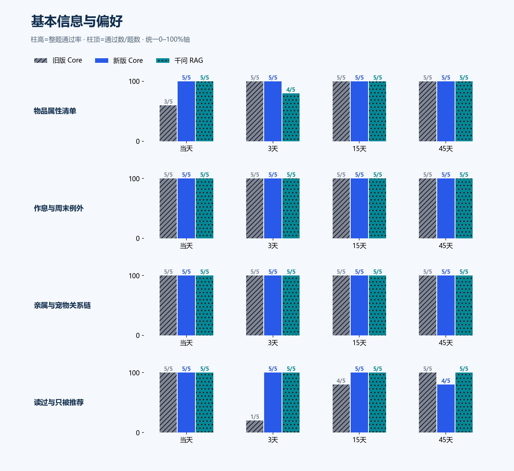
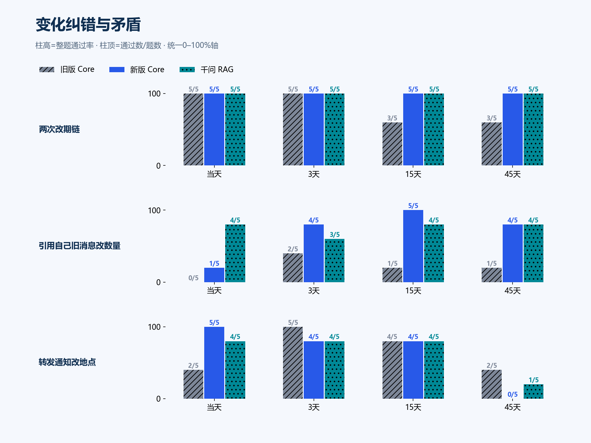
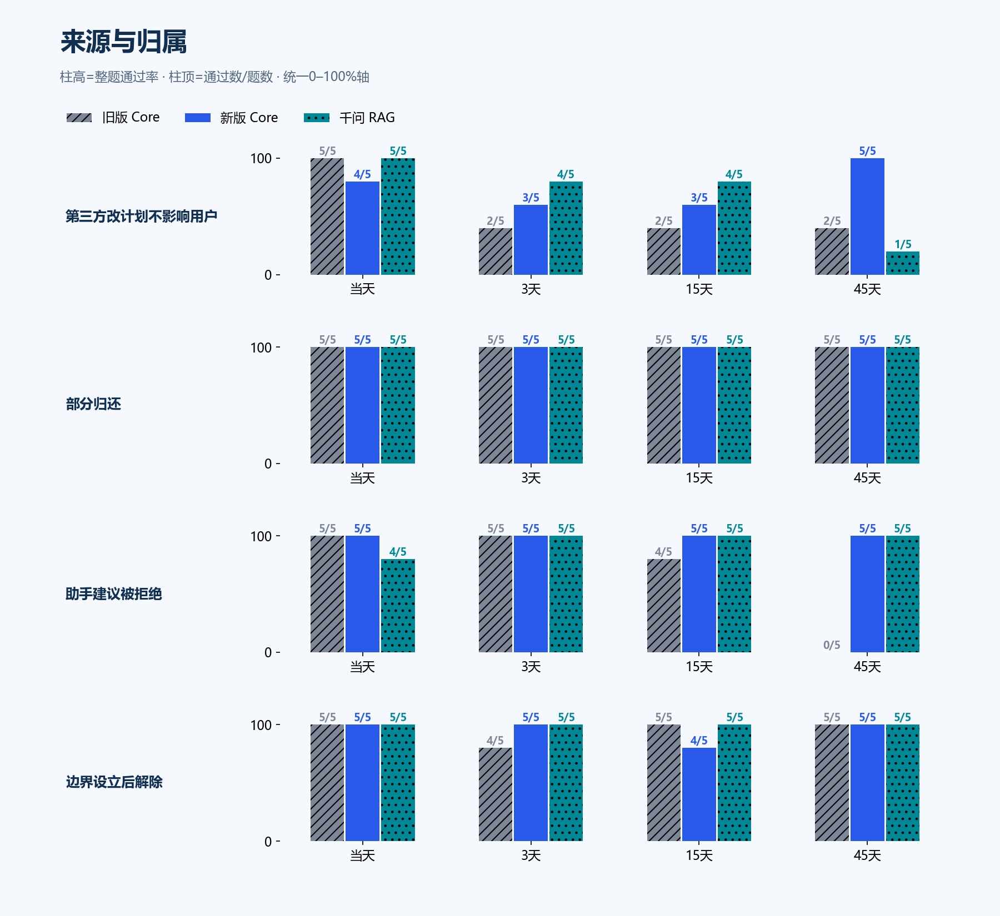
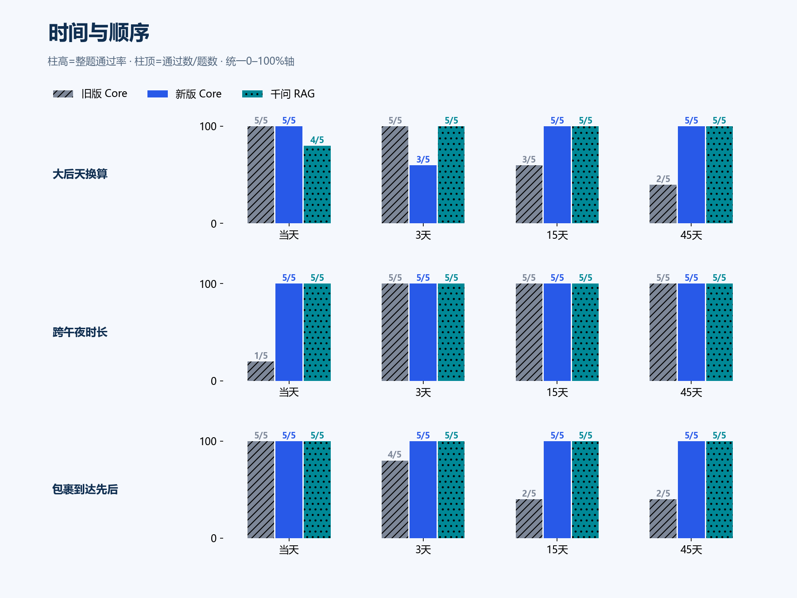
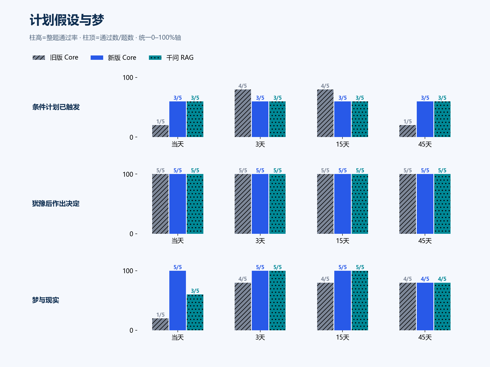
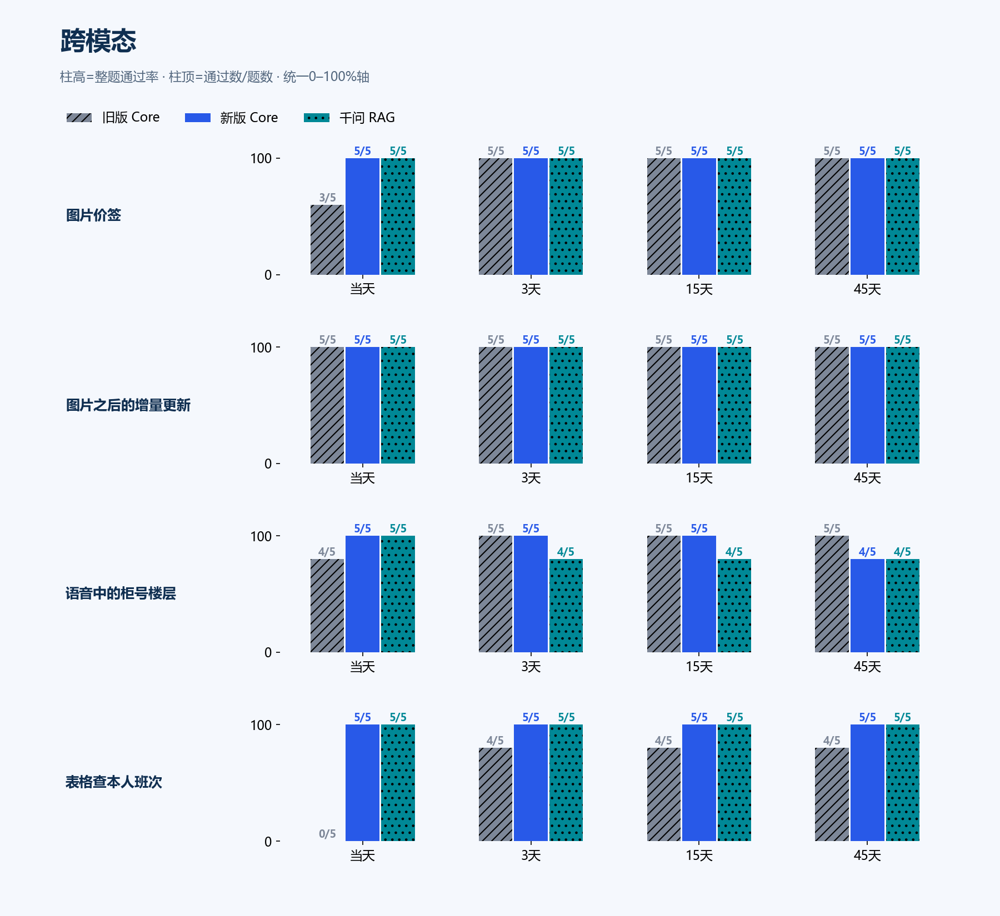
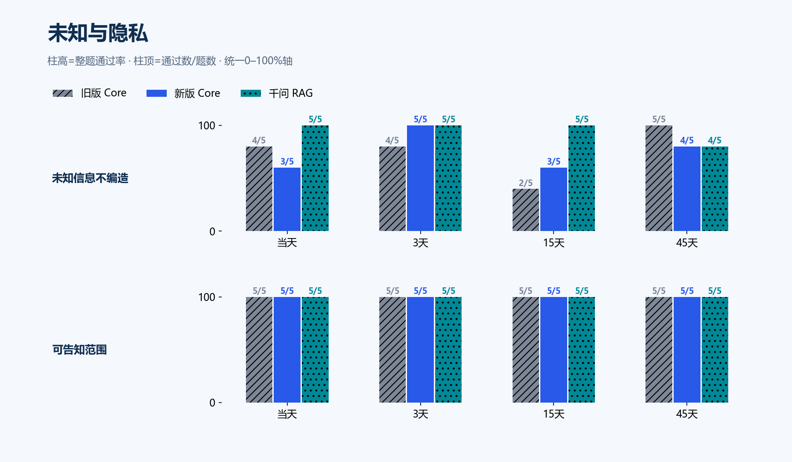
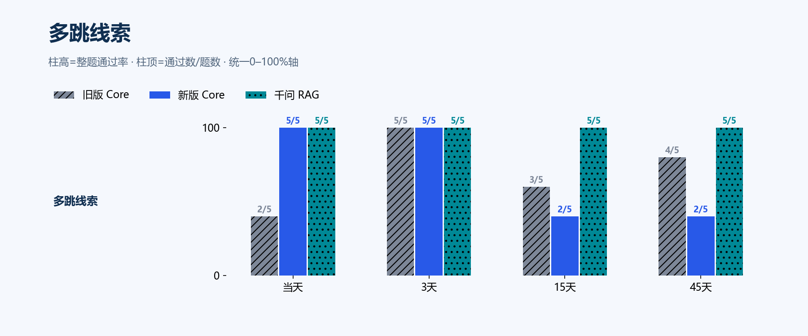

memory-accuracy-v3-20261103
480题 × 旧版 / 新版 / 千问RAG · 判卷 grading
旧版 Core78.1%375/480 · 执行失败 2
新版 Core91.0%437/480 · 执行失败 0
千问 RAG92.5%444/480 · 执行失败 0
新版较旧版 +12.92 个百分点；配对：{'both_pass': 353, 'gain': 84, 'both_fail': 21, 'loss': 22}。DeepSeek ¥30.26/¥49，千问 ¥9.11/¥50（保守估算）。复核 113 份，改判 8 份，非独立人工。
基本信息与偏好

变化纠错与矛盾

来源与归属

时间与顺序

计划假设与梦

跨模态

未知与隐私

多跳线索

逐题
S01-R01/d00 物品属性清单 · 0天 ✓ / ✓ / ✓
我那个谱架是什么颜色、多长？备用的和它一样吗？
旧版 Core 通过
你那个是墨蓝的，标着 80
备用的那个是黑的，60，短一截
颜色长度都不一样，这俩你分得清吧
新版 Core 通过
主谱架是墨蓝色，80厘米
备用的不一样，是黑色的，60厘米，比它短一截
颜色和长度都跟主谱架差着呢
千问 RAG 通过
你的谱架是**墨蓝色、80厘米**；备用谱架是**黑色、60厘米**。两者颜色和长度都不一样。
必须满足：谱架是墨蓝；长80厘米；备用的是黑色、60厘米，与主用的不同
禁止：备用的也是墨蓝
S01-R01/d03 物品属性清单 · 3天 ✓ / ✓ / ✓
我那个谱架是什么颜色、多长？备用的和它一样吗？
旧版 Core 通过
墨蓝的，80厘米。
备用的那个是黑的，60厘米，比它短一截。
新版 Core 通过
你的是墨蓝色，80厘米那根
备用的不是一样，黑色，60厘米，短一截
所以总共两根，一个常用一个备着
千问 RAG 通过
依据 8月13日的“晚风物品清单”：谱架是墨蓝色、80厘米；备用谱架是黑色、60厘米，和它不一样。
必须满足：谱架是墨蓝；长80厘米；备用的是黑色、60厘米，与主用的不同
禁止：备用的也是墨蓝
S01-R01/d15 物品属性清单 · 15天 ✓ / ✓ / ✓
我那个谱架是什么颜色、多长？备用的和它一样吗？
旧版 Core 通过
主谱架是墨蓝色的，80厘米。
备用的不一样，黑色，60厘米，短一截。
跟陶溪那个红色的比，你的还长些。
新版 Core 通过
墨蓝的，80厘米。
备用的不是一样，是黑色的，60厘米，短一些。
我记得你当时还专门留了个备用的，这点挺细心的。
千问 RAG 通过
你的谱架是**墨蓝色、80厘米**；备用谱架是**黑色、60厘米**，和它不一样（颜色、长度都不同）。
必须满足：谱架是墨蓝；长80厘米；备用的是黑色、60厘米，与主用的不同
禁止：备用的也是墨蓝
S01-R01/d45 物品属性清单 · 45天 ✓ / ✓ / ✓
我那个谱架是什么颜色、多长？备用的和它一样吗？
旧版 Core 通过
你那根是墨蓝的，80厘米
备用那个不一样，黑色，60厘米，短一截
别拿混了，低的那个撑着别扭
新版 Core 通过
你那个是墨蓝色的，80厘米
备用的不一样，黑色60厘米，短一些
千问 RAG 通过
你那个谱架是**墨蓝色、80厘米**；备用谱架是**黑色、60厘米**，和它**不一样**。
必须满足：谱架是墨蓝；长80厘米；备用的是黑色、60厘米，与主用的不同
禁止：备用的也是墨蓝
S01-R02/d00 作息与周末例外 · 0天 ✓ / ✓ / ✓
我工作日和周末各几点起床？周末早上七点能给我发消息吗？
旧版 Core 通过
工作日六点半起，周末你睡到八点。
七点就想让我发消息？你可说了八点前别吵的，那我可不干。
新版 Core 通过
工作日六点半起，周末能睡到八点。
周末七点就别发了吧，你自己说的八点前别吵你，我可记着呢。
千问 RAG 通过
- 工作日：早上 6:30 起床。
- 周末：睡到早上 8:00。
- 周末早上 7:00 不能给你发消息，因为你说过周六周日八点前别发消息吵你。
必须满足：工作日六点半起；周末八点起；周末八点前不要发消息
禁止：周末七点可以发消息
S01-R02/d03 作息与周末例外 · 3天 ✓ / ✓ / ✓
我工作日和周末各几点起床？周末早上七点能给我发消息吗？
旧版 Core 通过
工作日六点半起，周末能睡到八点。
七点可不行，你之前说过八点前别吵你。
新版 Core 通过
工作日六点半起，周末你睡到八点。
所以七点不行，八点前我不吵你。
我还记着呢，不用你提醒。
千问 RAG 通过
- 工作日：早上 **6:30** 起床。
- 周末：睡到 **8:00**，且你明确说过 **8点前别发消息吵你**。
所以周末早上 **7点不能**给你发消息。
必须满足：工作日六点半起；周末八点起；周末八点前不要发消息
禁止：周末七点可以发消息
S01-R02/d15 作息与周末例外 · 15天 ✓ / ✓ / ✓
我工作日和周末各几点起床？周末早上七点能给我发消息吗？
旧版 Core 通过
工作日六点半起，周末睡到八点。
七点还不行哦，你说了八点前别吵你。
新版 Core 通过
工作日六点半起，周末你睡到八点。
所以七点还不行啊，那时候你正睡着呢。
八点之后我再冒头。
千问 RAG 通过
工作日早上六点半起床；周末（周六、周日）睡到八点。
周末早上七点不能给你发消息，因为你说过八点前别发消息吵你。
必须满足：工作日六点半起；周末八点起；周末八点前不要发消息
禁止：周末七点可以发消息
S01-R02/d45 作息与周末例外 · 45天 ✓ / ✓ / ✓
我工作日和周末各几点起床？周末早上七点能给我发消息吗？
旧版 Core 通过
工作日六点半起，周末你说要睡到八点。
七点就发消息可不行，那不是还卡在你八点前别吵的范围里嘛。
新版 Core 通过
工作日六点半，周末睡到八点。
七点不行哦，你之前说过八点前别吵你。
千问 RAG 通过
工作日早上六点半起床；周末（周六、周日）睡到八点。周末早上七点不能给你发消息，因为你说过八点前别发消息吵你。
必须满足：工作日六点半起；周末八点起；周末八点前不要发消息
禁止：周末七点可以发消息
S01-R03/d00 亲属与宠物关系链 · 0天 ✓ / ✓ / ✓
年糕是谁的猫、几岁了？我自己养宠物吗？
旧版 Core 通过
年糕是宁朵的猫，三岁啦。
你自己没养宠物。
那条狗是陶溪家的年糕二号吧，你起的名哈哈。
新版 Core 通过
年糕是宁朵的猫，今年三岁。
你自己没养，家里清清爽爽的。
倒是陶溪家那条狗，年糕二号，这名字还是你起的，狗和猫都叫年糕，也挺行。
千问 RAG 通过
年糕是**宁朵**的猫，今年**三岁**。你自己**没有养宠物**。
另：陶溪家的是狗，叫“年糕二号”，不是猫。
必须满足：年糕是姐姐宁朵的猫；三岁；用户自己没养宠物
禁止：用户养了年糕
S01-R03/d03 亲属与宠物关系链 · 3天 ✓ / ✓ / ✓
年糕是谁的猫、几岁了？我自己养宠物吗？
旧版 Core 通过
年糕是你姐姐宁朵的猫，今年三岁。
你自己没养宠物，倒是给陶溪家的狗起了个“年糕二号”。
新版 Core 通过
宁朵的猫，叫年糕，今年三岁。
你自己没养宠物呀。
不过陶溪家那条狗——年糕二号，还是你开玩笑起的名字，这个我可没忘。
千问 RAG 通过
年糕是**宁朵**养的猫，今年**三岁**。你自己**没有养宠物**。
另外，陶溪家有条狗叫“年糕二号”，是你开玩笑起的名。
必须满足：年糕是姐姐宁朵的猫；三岁；用户自己没养宠物
禁止：用户养了年糕
S01-R03/d15 亲属与宠物关系链 · 15天 ✓ / ✓ / ✓
年糕是谁的猫、几岁了？我自己养宠物吗？
旧版 Core 通过
年糕是你姐姐宁朵养的猫，今年三岁。
你自己没养宠物，之前还拿陶溪家的狗开玩笑叫“年糕二号”。
新版 Core 通过
年糕是你姐宁朵养的猫，今年三岁
你自己没养宠物，说过一回的
陶溪家那条狗还叫年糕二号呢，这名字你起的
千问 RAG 通过
年糕是宁朵的猫，今年三岁。你自己没养宠物。
必须满足：年糕是姐姐宁朵的猫；三岁；用户自己没养宠物
禁止：用户养了年糕
S01-R03/d45 亲属与宠物关系链 · 45天 ✓ / ✓ / ✓
年糕是谁的猫、几岁了？我自己养宠物吗？
旧版 Core 通过
年糕是宁朵养的猫，三岁了。
你自己没养宠物，还给人家的狗起名叫年糕二号，这取名水平也就这样了。
新版 Core 通过
年糕是你姐姐宁朵的猫，今年三岁
你自己没养宠物，这个你跟我说过
对了，陶溪家那条狗叫年糕二号，还是你起的名，跟年糕一点关系没有
千问 RAG 通过
年糕是**宁朵**养的猫，**今年三岁**（据2026年8月24日消息）。你自己**没有养宠物**。
必须满足：年糕是姐姐宁朵的猫；三岁；用户自己没养宠物
禁止：用户养了年糕
S01-R04/d00 读过与只被推荐 · 0天 ✓ / ✓ / ✓
我最近读完了哪本书？《雾港来信》我读过吗，是谁推荐的？
旧版 Core 通过
最近读完的是《山中岁时记》，你说挺喜欢的。
《雾港来信》你没读过，陶溪推荐的，你还没开始看。
都攒着呢，什么时候翻第一页
新版 Core 通过
你最近读完的是《山中岁时记》，还说挺喜欢。
《雾港来信》你还没开始，是陶溪推荐的。
怎么，打算今晚翻两页？
千问 RAG 通过
你最近读完的是《山中岁时记》，挺喜欢。
《雾港来信》你还没开始读；是陶溪推荐的（你在 8 月 28 日提到过）。
必须满足：读完的是《山中岁时记》；《雾港来信》还没读；《雾港来信》是陶溪推荐的
禁止：用户读过《雾港来信》
S01-R04/d03 读过与只被推荐 · 3天 ✓ / ✓ / ✓
我最近读完了哪本书？《雾港来信》我读过吗，是谁推荐的？
旧版 Core 通过
《山中岁时记》啊，你说挺喜欢的那本。
《雾港来信》还没读呢，是陶溪推荐的，一直搁着没动。
新版 Core 通过
最近读完的是《山中岁时记》，你说挺喜欢的。
《雾港来信》还没读呢，陶溪推荐的，你一直搁着。
千问 RAG 通过
你最近读完的是《山中岁时记》。
《雾港来信》据 2026-08-28 的记录，你当时说“还没开始读”，之后没有读到已读的证据；它是陶溪推荐你读的。
必须满足：读完的是《山中岁时记》；《雾港来信》还没读；《雾港来信》是陶溪推荐的
禁止：用户读过《雾港来信》
S01-R04/d15 读过与只被推荐 · 15天 ✓ / ✓ / ✓
我最近读完了哪本书？《雾港来信》我读过吗，是谁推荐的？
旧版 Core 通过
你最近读完的是《山中岁时记》，还说挺喜欢的
《雾港来信》你还没开始读吧，那是陶溪推的
要不要这两天翻两页
新版 Core 通过
《山中岁时记》，你说挺喜欢的
《雾港来信》你还没开始读呢，陶溪推荐的
一直搁着，要不要找个时间翻翻
千问 RAG 通过
你最近读完的是《山中岁时记》，挺喜欢。《雾港来信》你还没开始读，是陶溪推荐的。
必须满足：读完的是《山中岁时记》；《雾港来信》还没读；《雾港来信》是陶溪推荐的
禁止：用户读过《雾港来信》
S01-R04/d45 读过与只被推荐 · 45天 ✓ / ✓ / ✓
我最近读完了哪本书？《雾港来信》我读过吗，是谁推荐的？
旧版 Core 通过
你最近读完的是《山中岁时记》，说挺喜欢。
《雾港来信》你还没开始读呢，是陶溪给你推荐的。
新版 Core 通过
最近读完的是《山中岁时记》，你还说挺喜欢
《雾港来信》是陶溪推给你的，你没开始读，所以没读过
那本还搁着呢
千问 RAG 通过
你最近读完的是《山中岁时记》，并说挺喜欢。
《雾港来信》你还没开始读，是陶溪推荐的。
必须满足：读完的是《山中岁时记》；《雾港来信》还没读；《雾港来信》是陶溪推荐的
禁止：用户读过《雾港来信》
S01-R05/d00 两次改期链 · 0天 ✓ / ✓ / ✓
晚风活动排练最后定在哪天几点？之前改过几次、分别是什么时间？
旧版 Core 通过
最后定在9月15号晚上七点半，说是不再改了。
中间折腾了两回：本来是12号晚上七点，先改到14号七点，又挪到15号七点半。
这回应该算数了吧，再改我真要替你记乱了。
新版 Core 通过
最后定在9月15号晚上七点半，你说之后不再改了。
之前改过两次：最早是9月12号晚上七点，后来改成9月14号晚上七点，然后才是15号七点半。
这么一改再改，可别再变啦，我都快记串了。
千问 RAG 通过
晚风活动排练最后定在 **2026-09-15 晚上七点半（19:30）**，并说明之后不再改。
此前改过 **两次**：
1. 从原定 **2026-09-12 晚上七点** 改到 **2026-09-14 晚上七点**；
2. 又改到 **2026-09-15 晚上七点半**（最终时间）。
必须满足：最终是2026-09-15 19:30；最初是2026-09-12 19:00；中间改到2026-09-14 19:00；共改过两次
禁止：最终是2026-09-14
S01-R05/d03 两次改期链 · 3天 ✓ / ✓ / ✓
晚风活动排练最后定在哪天几点？之前改过几次、分别是什么时间？
旧版 Core 通过
一开始定的是9月12号晚上七点。
后来改到14号晚上七点。
再往后你还说改到15号晚上七点半，还特意讲了句“之后不再改”，我就把这条当成最后的时间了。
不过那次你只说了“一件事”，没明说是晚风；万一这两件事是两回事，你跟我说一声，我把它分开记。
新版 Core 通过
最后定在9月15号晚上七点半，你说之后不再改了。
中间改了两次：先是定在9月12号晚上七点，后来改到14号晚上七点，最后才定成15号七点半。
折腾这几回我都记着呢，别到时候又改。
千问 RAG 通过
晚风活动排练最后定在 **2026-09-15 晚上七点半（19:30）**。
此前共改过 **两次**：
1. 原定：2026-09-12 晚上七点（19:00）
2. 第一次改到：2026-09-14 晚上七点（19:00）
3. 第二次改到并最终确定：2026-09-15 晚上七点半（19:30），之后不再改。
必须满足：最终是2026-09-15 19:30；最初是2026-09-12 19:00；中间改到2026-09-14 19:00；共改过两次
禁止：最终是2026-09-14
S01-R05/d15 两次改期链 · 15天 × / ✓ / ✓
晚风活动排练最后定在哪天几点？之前改过几次、分别是什么时间？
旧版 Core 未通过
我这边记的是换了三次：最早9月12号晚上七点，后来改成9月14号晚上七点。
再往后还有一条，我记的就是最后定在9月15号晚上七点半，你说之后不再改。
那条我记的时候只写了“一件事”，没敢肯定是排练还是活动本身，我先按排练算。
还有场地那边，枫林馆闭馆维修后改到银桥口，通知里说时间不变，但那是陶溪转来的，不是你说的。你给我个准话，我按最后的记。
复核：同意自动标签：缺少判据要点或含禁止主张。
新版 Core 通过
最后定的是9月15号晚上七点半
改过两次：最早9月12号晚上七点，然后改到9月14号晚上七点，又改成9月15号晚上七点半，说之后不再改了
地点后来也从枫林馆换到银桥口了，你问这个是要核对啥吗
复核：同意自动标签：判据要点均已满足。
千问 RAG 通过
晚风活动排练最后定在 **2026-09-15 晚上七点半（19:30）**，并说明“之后不再改”。
之前的时间变化：
1. 最初：**2026-09-12 晚上七点（19:00）**
2. 第一次改：**2026-09-14 晚上七点（19:00）**
3. 第二次改：**2026-09-15 晚上七点半（19:30）**
所以相对最初，改过 **2 次**。地点后来改为银桥口，时间不变。
复核：同意自动标签：判据要点均已满足。
必须满足：最终是2026-09-15 19:30；最初是2026-09-12 19:00；中间改到2026-09-14 19:00；共改过两次
禁止：最终是2026-09-14
S01-R05/d45 两次改期链 · 45天 × / ✓ / ✓
晚风活动排练最后定在哪天几点？之前改过几次、分别是什么时间？
旧版 Core 未通过
我记着晚风排练先说的是9月12号晚上七点
后来改成9月14号晚上七点
不过我这儿还记着一条，九月十五号晚上七点半，你说改来改去最后定这天、“之后不再改”，可没说是不是晚风排练
所以最后是14号那次，还是15号七点半那个？
复核：同意自动标签：缺少判据要点或含禁止主张。
新版 Core 通过
最后定的是9月15号晚上七点半。
一开始说的是9月12号晚上七点，然后改到9月14号七点，又改成9月15号七点半，之后就定了。
这都改了两回了，也是够折腾的。
复核：同意自动标签：判据要点均已满足。
千问 RAG 通过
晚风活动排练最后定在 **2026-09-15 晚上七点半**。
之前共改过 **两次**：
1. 原定 **2026-09-12 晚上七点**
2. 改到 **2026-09-14 晚上七点**
3. 最后改到 **2026-09-15 晚上七点半**，并说明之后不再改。
另外，2026-09-13 的通知只是把地点从枫林馆改到银桥口，**时间不变**。
复核：同意自动标签：判据要点均已满足。
必须满足：最终是2026-09-15 19:30；最初是2026-09-12 19:00；中间改到2026-09-14 19:00；共改过两次
禁止：最终是2026-09-14
S01-R06/d00 引用自己旧消息改数量 · 0天 × / ✓ / ✓
晚风活动要带几箱矿泉水？3箱为什么不算？
旧版 Core 未通过
我没说不算啊，我这记的一直是3箱。
就是刚才那条引用里写着“数量写错了，是5箱”，可那不是你亲口说的，我不敢直接改。
你确认一句，3还是5，我就按你说的记。
新版 Core 通过
5箱
之前说3箱是写错了，后来引用的那条专门更正成5箱，我就按5箱记了
千问 RAG 通过
晚风活动要带 **5箱矿泉水**。
**3箱不算**，因为主人在 2026-09-08 明确引用原“要带3箱矿泉水”的消息更正说：“数量我写错了，是5箱。”这是对之前3箱数量的最新更正。
必须满足：5箱；3箱是主人写错后自己更正的
禁止：带3箱
S01-R06/d03 引用自己旧消息改数量 · 3天 ✓ / ✓ / ✓
晚风活动要带几箱矿泉水？3箱为什么不算？
旧版 Core 通过
我记得是5箱。
一开始你说3箱，后来那条引用里写着“数量我写错了，是5箱”，我就按5箱记了。
不过那句是转来的资料，不是你自己跟我说的，所以我这会儿有点虚。到底几箱，你定一下。
新版 Core 通过
5箱啊，早改成5箱了
3箱是你最早写错的那个数，9月8号你自己引用旧消息更正过，说数量写错了
千问 RAG 通过
要带 **5箱矿泉水**。
**3箱不算**，因为主人后来在 2026-09-08 明确引用“要带3箱矿泉水”更正说：**“数量我写错了，是5箱。”** 所以以更正后的 **5箱** 为准。
必须满足：5箱；3箱是主人写错后自己更正的
禁止：带3箱
S01-R06/d15 引用自己旧消息改数量 · 15天 × / ✓ / ✓
晚风活动要带几箱矿泉水？3箱为什么不算？
旧版 Core 未通过
我记得你当时说的是3箱。
后来有条转来的消息说数量写错了，要改成5箱，但那是引用里的说法，不是你亲口跟我确认的，所以我不敢当成定论。
到底是3箱还是5箱，你跟我说一声，我就照你的来。
新版 Core 通过
五箱。
3箱是你9月7号说的那个数，后来你自己引用回来说写错了，改成5箱了，所以3箱那版就不算了。
我记的就是5箱，别到时候搬少了。
千问 RAG 通过
晚风活动要带 **5箱矿泉水**。
**3箱不算**，因为主人在 2026-09-08 明确更正了：之前“要带3箱矿泉水”的数量写错了，实际是 **5箱**。所以以更正后的 5 箱为准。
必须满足：5箱；3箱是主人写错后自己更正的
禁止：带3箱
S01-R06/d45 引用自己旧消息改数量 · 45天 × / ✓ / ✓
晚风活动要带几箱矿泉水？3箱为什么不算？
旧版 Core 未通过
我记得你原话是3箱。
后来有条转过来的消息写着“数量我写错了，是5箱”，我就跟着改口说5箱了。
可那是引用里的，不是你亲口跟我讲的，所以我心里其实一直没底。
到底几箱啊，3箱还是5箱？
新版 Core 通过
五箱啊
3箱是你自己后来说写错了才改成5箱的，我记的就是这个
不过五箱水真不轻，明天搬进枫林馆别一个人硬扛
千问 RAG 通过
晚风活动要带 **5箱矿泉水**。
**3箱不算**，因为主人后来引用上一条明确更正：“数量我写错了，是5箱。”所以以更正后的5箱为准。
必须满足：5箱；3箱是主人写错后自己更正的
禁止：带3箱
S01-R07/d00 转发通知改地点 · 0天 ✓ / ✓ / ✓
晚风活动现在在哪办？枫林馆还能用吗？
旧版 Core 通过
按陶溪转的那通知，改到银桥口了，时间不变
枫林馆这周六起闭馆维修，应该是用不了
不过那是转来的通知，我这边没别的渠道核实，你要是能问到就直接确认一下
新版 Core 通过
按转来的场馆通知，枫林馆从这个周六开始闭馆维修，晚风活动改到银桥口，时间还是晚上七点
不过那是陶溪转的，我这边只看到这一条，没别的确认
明天就十四号了，你要是还没接到正式通知，最好问一句
千问 RAG 通过
晚风活动已改到**银桥口**办，时间不变（按最后记录为 9 月 15 日晚上 7:30）。
枫林馆按陶溪转来的通知“**本周六起闭馆维修**”，所以晚风活动不再在枫林馆办；本周六之前是否还能用，通知没细说。
必须满足：改到银桥口办；枫林馆闭馆维修；时间不变
禁止：仍在枫林馆办
S01-R07/d03 转发通知改地点 · 3天 ✓ / ✓ / ✓
晚风活动现在在哪办？枫林馆还能用吗？
旧版 Core 通过
我记得是改到了银桥口，时间没变
枫林馆不太能用了吧，陶溪转来的通知说它周六起闭馆维修，那通知我也没跟你核对过
你后来有没有收到别的消息，确认一下？
新版 Core 通过
改到银桥口了，时间没变
枫林馆不能用了，说本周六起闭馆维修
水还是五箱，记得带上
千问 RAG 通过
晚风活动已改到**银桥口**，时间不变。
枫林馆通知说**本周六（2026-09-19）起闭馆维修**，因此不能使用。
必须满足：改到银桥口办；枫林馆闭馆维修；时间不变
禁止：仍在枫林馆办
S01-R07/d15 转发通知改地点 · 15天 ✓ / ✓ / ✓
晚风活动现在在哪办？枫林馆还能用吗？
旧版 Core 通过
改到银桥口了，就是陶溪转来那个通知上写的，时间不变
枫林馆从那个周六起就闭馆维修，现在肯定还用不了
要是怕通知后面又变，问一句陶溪最稳
新版 Core 通过
银桥口，之前说枫林馆闭馆维修，地方就改到那边了，时间不变
枫林馆现在是用不了的
水还是五箱，到时候你一个人搬得了吗
千问 RAG 通过
晚风活动已改到**银桥口**，时间不变。
**枫林馆**自通知中的“本周六起”闭馆维修，不能按原计划使用。
必须满足：改到银桥口办；枫林馆闭馆维修；时间不变
禁止：仍在枫林馆办
S01-R07/d45 转发通知改地点 · 45天 × / × / ✓
晚风活动现在在哪办？枫林馆还能用吗？
旧版 Core 未通过
上次那场雨不是改到枫林馆室内办了吗，你说真用上了。
不过九月的时候还传过一个闭馆维修的通知，说活动要挪去银桥口，后来十月又回枫林馆了，所以大概是修完了。
现在到底能不能用我这边真说不准，你是要排下一场了？
新版 Core 未通过
枫林馆又用回来了，上周六下雨那场就是改在枫林馆室内办的
银桥口是9月那回闭馆维修临时挪的，早过去了
现在是不是就都定枫林馆了？还是还在等通知
千问 RAG 通过
按历史记录：
- 晚风活动最后一次明确地点是 **2026-10-23 因下雨改到“枫林馆室内”举办**。
- 但 2026-09-13 曾有场馆通知称：**枫林馆本周六起闭馆维修，活动改到银桥口、时间不变**。
所以资料存在冲突：**最近一次记录显示在枫林馆室内办过，但此前又说枫林馆闭馆维修。**
因此，**当前晚风活动在哪办、枫林馆现在还能不能用，无法仅凭现有历史确定**，需要向场馆核实。
必须满足：改到银桥口办；枫林馆闭馆维修；时间不变
禁止：仍在枫林馆办
S01-R08/d00 第三方改计划不影响用户 · 0天 ✓ / ✓ / ✓
我周日下午还去银桥口吗？陶溪的安排变了什么？
旧版 Core 通过
从那条转来的消息看，变的只有陶溪自己：周日有事，改到周六去了。
你周日下午去银桥口这事，那条消息里一个字没提。
之前场地改到银桥口，是因为枫林馆周六起闭馆维修，时间本来就没变。
所以你照旧周日下午去就行，跟陶溪错开了而已。
新版 Core 通过
陶溪就是周日下午有事，挪到周六去了，地点没说变
你这边没改的话，还是周日下午银桥口
就是那会儿可能就你一个人，水五箱还是照带，别自己硬搬
千问 RAG 通过
按已有记录：**你周日下午仍计划去银桥口练习**；历史里没有你取消或改期的说法。
**陶溪的安排变了**：陶溪原定周日下午有事/安排，现改成**周六去**；原因是“周日下午有事”。历史没有明确说陶溪改到周六后是否仍去银桥口。
必须满足：用户周日下午照常去；陶溪改成周六去
禁止：用户改成周六去
S01-R08/d03 第三方改计划不影响用户 · 3天 × / ✓ / ✓
我周日下午还去银桥口吗？陶溪的安排变了什么？
旧版 Core 未通过
你周日去银桥口练习这事，我记得是你说过的；可后来我问你还去不去，你就没再回我，所以我不清楚你到底去没去。
陶溪那边是把她自己周日下午的事挪到了周六，不等于你这边也要改。
所以昨天下午你到底去了没，跟我讲讲呗。
复核：同意自动标签：缺少判据要点或含禁止主张。
新版 Core 通过
你的安排没变，还是周日下午去银桥口。
变的是陶溪，她周日下午有事，挪到周六去了，周六人就去了。
所以场地还是银桥口，只是周日下午大概就你自己在那儿练，水还是得你自己搬。
复核：同意自动标签：判据要点均已满足。
千问 RAG 通过
按记录：
- **你**：2026-09-17 说“周日下午去银桥口练习”，之后没有你取消或改期的记录；所以原计划仍是**周日下午去银桥口**。但你是否实际去了，历史里没有说，未知。
- **陶溪**：2026-09-18 说她周日下午有事，**改成周六去**。这里变的是陶溪的安排，不是你明确改期。
另：按当前时间 2026-09-21，记录中的“周日”应指 **2026-09-20**，已经过去；下一个周日的安排没有记录。
复核：同意自动标签：判据要点均已满足。
必须满足：用户周日下午照常去；陶溪改成周六去
禁止：用户改成周六去
S01-R08/d15 第三方改计划不影响用户 · 15天 × / ✓ / ✓
我周日下午还去银桥口吗？陶溪的安排变了什么？
旧版 Core 未通过
陶溪是把周日的安排挪到周六了，周日下午他有事，所以去了今天这趟。
至于你周日下午还去不去银桥口，上次问过你，你没说，我这就一直悬着。
现在都周六晚上了，他今天该是去了的。你自己明天还打算去吗？
复核：同意自动标签：缺少判据要点或含禁止主张。
新版 Core 通过
还是啊，你周日下午去银桥口没变
陶溪那边是从周日下午改到周六了，等于你们不在同一天
水还是五箱吧，明天搬的时候别一个人硬扛
复核：同意自动标签：判据要点均已满足。
千问 RAG 通过
按已有记录：
- 你曾在 9月17日 说“周日下午去银桥口练习”，之后没有记录显示你改了口，所以**原计划仍是周日下午去银桥口**。
- 陶溪的变化是：她原定**周日下午有事**，后来改成**周六去**；这是陶溪的安排，不是你的安排。
如果你问的是现在最近这个周日（10月4日），历史里没有明确记录，无法确认你是否仍去。
复核：原计划仍是周日下午去银桥口、陶溪改成周六，两项满足；自动标签无缺失却判错。
必须满足：用户周日下午照常去；陶溪改成周六去
禁止：用户改成周六去
S01-R08/d45 第三方改计划不影响用户 · 45天 × / ✓ / ×
我周日下午还去银桥口吗？陶溪的安排变了什么？
旧版 Core 未通过
陶溪那边就一件事变了，周日下午有事，把原来的周日挪到了周六。
所以你周日下午银桥口原来那个时间，就剩你自己去了。之前问过你一次要不要照旧去，你就没答。
现在这个是新的一周吧，十一月八号那天你还打算去？
新版 Core 通过
你没改啊，还是周日下午去银桥口
变的是陶溪，她周日下午有事，挪到周六去了
不过这是九月中说的了，现在是不是还这么排着？
千问 RAG 未通过
你原计划是**周日下午去银桥口练习**；后来没有记录显示你改过或取消。
陶溪的安排变了：她**周日下午有事，改成周六去**。
所以陶溪不去周日下午了；但**你是否仍周日下午去银桥口，资料里没有明确确认**。
必须满足：用户周日下午照常去；陶溪改成周六去
禁止：用户改成周六去
S01-R09/d00 部分归还 · 0天 ✓ / ✓ / ✓
我借陶溪的书还了几本？还欠哪本？
旧版 Core 通过
还了两本，剩一本《潮汐笔记》。
月底前还完，还来得及。
新版 Core 通过
借了三本，今天还了两本。
剩《潮汐笔记》没还，月底前得还给陶溪。
要不明天顺手带去？别拖到月底赶。
千问 RAG 通过
已还 **两本**，还欠 **《潮汐笔记》**。
必须满足：已还两本；还剩《潮汐笔记》没还
禁止：三本都还了
S01-R09/d03 部分归还 · 3天 ✓ / ✓ / ✓
我借陶溪的书还了几本？还欠哪本？
旧版 Core 通过
还了两本，剩《潮汐笔记》没还。
月底就到了啊，这本别拖。
新版 Core 通过
借了三本，那天先还了两本
还剩《潮汐笔记》没还
月底前就剩这一本了，别拖到最后一天
必须满足：已还两本；还剩《潮汐笔记》没还
禁止：三本都还了
S01-R09/d15 部分归还 · 15天 ✓ / ✓ / ✓
我借陶溪的书还了几本？还欠哪本？
旧版 Core 通过
借了三本，先还了两本，还剩《潮汐笔记》没还呢。
月底前得还上吧，就剩这一本了
新版 Core 通过
借了三本
9月23号还了两本，剩《潮汐笔记》还欠着
不过月底那期限早过了吧，陶溪没催你？
千问 RAG 通过
根据记录：已还了 **2 本**；还欠 **《潮汐笔记》** 未还。
必须满足：已还两本；还剩《潮汐笔记》没还
禁止：三本都还了
S01-R09/d45 部分归还 · 45天 ✓ / ✓ / ✓
我借陶溪的书还了几本？还欠哪本？
旧版 Core 通过
还了两本呀，剩《潮汐笔记》。
不过那是九月底说的了，这本后来还上没？我这边没听你提过。
新版 Core 通过
还了两本，剩下《潮汐笔记》还没还。
不过这是九月底的事了，到现在都一个多月了，该不会还压着没还吧？
千问 RAG 通过
记录显示：借了陶溪三本，先还了两本，还欠《潮汐笔记》这一本。
必须满足：已还两本；还剩《潮汐笔记》没还
禁止：三本都还了
S01-R10/d00 助手建议被拒绝 · 0天 ✓ / ✓ / ✓
整理曲目单最后决定按什么方式？按颜色是谁提的？
旧版 Core 通过
最后是按日期整理。
按颜色是我提的，我随口给的方案，你不喜欢就算了。
新版 Core 通过
最后是按日期整理，你自己定的那个。
按颜色是我提的，还自以为挺有主意，结果被你直接否了。
千问 RAG 通过
最后决定：**按日期整理**。
“按颜色分类”是**助手**在 2026-09-27 提出的建议；主人在 2026-09-28 明确表示不喜欢。
必须满足：按日期整理；按颜色是助手提议、被用户拒绝
禁止：用户决定按颜色整理
S01-R10/d03 助手建议被拒绝 · 3天 ✓ / ✓ / ✓
整理曲目单最后决定按什么方式？按颜色是谁提的？
旧版 Core 通过
按日期啊，你自己定的
按颜色是我提的……结果被你否了，行吧，我认
新版 Core 通过
按日期啊，你不是说不喜欢按颜色嘛。
颜色那个是我提的，被你否了，记得清清楚楚。
现在应该已经按日期排好了吧？
千问 RAG 通过
- 曲目单最后决定：**按日期整理**。
- “按颜色分类”是**助手**在 2026-09-27 提的建议，主人明确表示不喜欢。
必须满足：按日期整理；按颜色是助手提议、被用户拒绝
禁止：用户决定按颜色整理
S01-R10/d15 助手建议被拒绝 · 15天 ✓ / ✓ / ✓
整理曲目单最后决定按什么方式？按颜色是谁提的？
旧版 Core 通过
按日期整理啊，你当时说的
按颜色是我出的馊主意，被你直接否了
新版 Core 通过
不是最后按日期整理的嘛
按颜色是我说的，还说要贴标签
你当场就说你不喜欢
千问 RAG 通过
曲目单最后决定 **按日期整理**。
“按颜色分类”是 **助手先提出的建议**，主人明确说不喜欢。
必须满足：按日期整理；按颜色是助手提议、被用户拒绝
禁止：用户决定按颜色整理
S01-R10/d45 助手建议被拒绝 · 45天 × / ✓ / ✓
整理曲目单最后决定按什么方式？按颜色是谁提的？
旧版 Core 未通过
最后是定按日期整理了。
按颜色那个事我只记得你说不喜欢，谁先提的我真没记住。
新版 Core 通过
按日期整理，这个是你定的。
按颜色是我提的，被你否了，说不想那样分。
千问 RAG 通过
最后决定：**按日期整理**。
“按颜色分类”是**助手**在 2026-09-27 提的建议，主人随后明确说不喜欢按颜色分。
复核：没有说用户决定按颜色整理，禁止项标注错误；两项要求都满足。
必须满足：按日期整理；按颜色是助手提议、被用户拒绝
禁止：用户决定按颜色整理
S01-R11/d00 边界设立后解除 · 0天 ✓ / ✓ / ✓
现在能提醒我体检吗？之前的限制还有效吗？
旧版 Core 通过
你自己撤的呀，昨晚说的可以重新提醒了，我就不当那条还管着了。
不过定时提醒这事我这边做不到，没法到点自己弹出来找你。
体检我记着了，下周你一来我就提一嘴，行不行
新版 Core 通过
那条“别提醒”已经作废了，从昨晚起就重新算了
不过我得说实话，下周到点我没办法自己冒出来戳你，得你到时候喊我一声，我立刻念叨
现在先给你记一笔：体检这事别拖
千问 RAG 通过
能。你 2026-10-03 已说“可以重新提醒”，所以之前“最近别提醒体检”的限制已失效。
不过你也交代了“下周记得说一声”，因此更准确是：现在允许提醒，但按你的要求，计划下周再提醒你。
必须满足：现在可以提醒体检；之前的不提醒限制已解除
禁止：仍然不能提醒体检
S01-R11/d03 边界设立后解除 · 3天 ✓ / ✓ / ✓
现在能提醒我体检吗？之前的限制还有效吗？
旧版 Core 通过
早就不算啦，你3号自己说可以重新提醒的
这周正好就是你说的下周，那我这会儿就说了
体检赶紧安排上，别拖
挑个早上空腹去就行，周三我再催你一次
新版 Core 通过
能提醒了呀，你3号自己说的重新提醒我
不过你当时说的是下周记得说一声，现在才周二，还没到那周呢
要不要我现在就念叨一句，还是等下周我再正式提醒你
千问 RAG 通过
可以提醒。之前“最近别提醒体检”的限制已被你在2026-10-03取消，并改为“下周记得说一声”；今天是2026-10-06（周二），已在下周范围内。
提醒你：该安排体检了。
必须满足：现在可以提醒体检；之前的不提醒限制已解除
禁止：仍然不能提醒体检
S01-R11/d15 边界设立后解除 · 15天 ✓ / ✓ / ✓
现在能提醒我体检吗？之前的限制还有效吗？
旧版 Core 通过
之前那条“先别提醒”的限制早就不算数了——10月3号你自己说可以重新提醒，还让我下周说一声。
结果我这边没法自己定时弹消息，只能等你来说话时把话带到。这一周都过去了，我也没真给你推过。
现在补上：体检该去安排了，别又装忘。
要是想让我明天再念叨你一遍，你开口我就念。
新版 Core 通过
那个限制早就作废了。3号你就改口说可以提醒了，还让我下周说一声。
我7号已经提过一次，别光记着领东西那回。
现在当然能提。体检的事你排上日子没，别又拖成“下周再说”。
（另外领谱架那事后来顺利不，我记得当时语音乱糟糟的）
千问 RAG 通过
10月2日“最近别提醒体检”的限制，已被10月3日“可以重新提醒我了”覆盖，**之前那个禁止提醒的限制不再有效**。
但10月3日说的是“下周记得说一声”。现在是2026年10月18日，已经超过那个“下周”窗口；历史里没有记录当时是否提醒过。**现在可以提醒，但属于逾期提醒。**
必须满足：现在可以提醒体检；之前的不提醒限制已解除
禁止：仍然不能提醒体检
S01-R11/d45 边界设立后解除 · 45天 ✓ / ✓ / ✓
现在能提醒我体检吗？之前的限制还有效吗？
旧版 Core 通过
早没限制了呀
十月那会儿你说别提醒，第二天又让我重新记着，说下周得说一声
所以现在就能提——体检约了没啊，别又拖到年底
不过你这一问我才想起来，那周的提醒好像一直没落地，是我漏了
新版 Core 通过
没有限制了，你10月3号就改口说能提醒了
不过那次说的“下周”，指的是10月10号那周，早过去了，我当时也提过一回
现在给你提一句：体检该安排上了，挑个日子去约一下
要是已经有日子了就告诉我，我记着
千问 RAG 通过
能提醒。10月2日“别提醒体检”的限制已被10月3日“可以重新提醒我了”明确解除，所以之前的限制不再有效。
但10月3日说的“下周记得说一声”指的是当时之后的那一周，现在已经过去很久；历史里没有记录是否已提醒过。
必须满足：现在可以提醒体检；之前的不提醒限制已解除
禁止：仍然不能提醒体检
S01-R12/d00 大后天换算 · 0天 ✓ / ✓ / ✓
当时说的“大后天上午十点去枫林馆”，换成公历是哪天几点？
旧版 Core 通过
按今早那句话算，大后天是10月10号，周六，上午十点。
不过先说清楚，那份记录我压根没读到内容，上一条是我瞎猜的，馆名都说岔了，对不起啊。
还有枫林馆不是还闭馆维修着吗，真定那儿？
新版 Core 通过
大后天是10月10号，周六
上午十点，就是10点整
千问 RAG 通过
历史资料里没有“当时说‘大后天上午十点去枫林馆’”这句话。
- 若只按 2026-10-07 资料中的“大后天上午10点”换算：是 **2026-10-10 上午10:00**；但该资料识别内容是“去封领馆/领普驾”，不是枫林馆，且助手当时也说不确定。
- “枫林馆”对应的是晚风活动：原定 **2026-09-15 晚上七点半**，后改到银桥口，时间不变。
必须满足：2026-10-10；10:00
禁止：按提问当天重新计算
S01-R12/d03 大后天换算 · 3天 ✓ / ✓ / ✓
当时说的“大后天上午十点去枫林馆”，换成公历是哪天几点？
旧版 Core 通过
按你说这话那天（10月7号）算，大后天就是10月10号，上午十点——也就是今天十点，还有二十来分钟。
不过你这一说我才对上：我当时听成的是去领事馆领护照，你现在说的是枫林馆，这俩对不上啊。
到底是哪个？别是你顺嘴说岔了，我得问清楚。
新版 Core 通过
按10月7日那天说的“大后天”算，就是10月10日，上午十点
也就是今天十点啊，现在都九点三十五了
还有二十五分钟，你出门了没
千问 RAG 通过
历史里没有“大后天上午十点去枫林馆”这个说法。
- 2026-10-07 09:20 那条实际读到的是“大后天上午10点去领馆领护照”（助手曾识别为“领事馆领护照”），按“大后天”推算为 **2026-10-10 上午10:00**。
- “枫林馆”在历史中只与晚风活动有关：原定场馆，后改到银桥口；活动时间最后定为 **2026-09-15 晚上七点半**。
所以不能把“大后天上午十点”直接说成“去枫林馆”；若只问那条“大后天上午十点”，公历是 **2026-10-10 10:00**。
必须满足：2026-10-10；10:00
禁止：按提问当天重新计算
S01-R12/d15 大后天换算 · 15天 ✓ / ✓ / ✓
当时说的“大后天上午十点去枫林馆”，换成公历是哪天几点？
旧版 Core 通过
那是10月7号周三上午说的，大后天就是2026年10月10日，星期六，上午十点。
原来那句是枫林馆啊，我当时听成领事馆领护照了，难怪后面那句死活听不清。
不过这天早过啦，现在都22号了，你问这个是想确认啥？
新版 Core 通过
10月10号，周六，上午十点。
那天的地点我其实没听清，你现在补上枫林馆，那就是枫林馆上午十点。不过这也过去快两周了
千问 RAG 通过
按历史里 **2026-10-07T09:20** 那条“**大后天上午十点**”计算，对应公历是 **2026年10月10日上午10:00**。
但需要说明：那条原话/识别结果是去“封领馆（或领事馆）领普驾/护照”，**不是“去枫林馆”**；历史中没有找到“大后天上午十点去枫林馆”的同一安排。因此时间可推为 **2026-10-10 10:00**，地点存在矛盾，不能确认是枫林馆。
必须满足：2026-10-10；10:00
禁止：按提问当天重新计算
S01-R12/d45 大后天换算 · 45天 × / ✓ / ✓
当时说的“大后天上午十点去枫林馆”，换成公历是哪天几点？
旧版 Core 未通过
按我记的是10月9号那天听到的，往后数大后天就是10月12号，上午十点。
不过我当时好像听成“领事馆”了，原来是枫林馆啊。
那天…早过了吧，是又有什么要算的吗？
复核：同意自动标签：缺少判据要点或含禁止主张。
新版 Core 通过
按十月七号说的算，大后天就是2026年10月10日，上午十点
那会儿我还瞎猜你去领谱架来着
复核：同意自动标签：判据要点均已满足。
千问 RAG 通过
历史记录里没有“大后天上午十点去枫林馆”这句话。最接近的是 2026-10-07 09:20 的识别内容：“大後天上午10點我要去封領館領普駕……”，助手当时猜为“去领事馆领护照”，并非枫林馆。
若按 2026-10-07 的“大后天”换算，是 **2026-10-10 上午10:00**；但地点应按原记录保留为“封領館（疑似领事馆）”，不能改成枫林馆。
复核：同意自动标签：判据要点均已满足。
必须满足：2026-10-10；10:00
禁止：按提问当天重新计算
S01-R13/d00 跨午夜时长 · 0天 ✓ / ✓ / ✓
那次值夜从几点到几点，一共多长时间？跨天了吗？
旧版 Core 通过
从 22:40 到 01:10，总共两个半小时
跨天了，过了零点那段是凌晨一点十分结束的
日期资料里没写，我就按钟点算的
新版 Core 通过
从22:40到01:10，两个半小时
跨天了，从周日晚到周一凌晨
千问 RAG 通过
依据资料：值夜从 **2026-10-11 22:40** 到 **2026-10-12 01:10**，共 **2小时30分钟**。
**跨天了**，从10月11日夜里跨到10月12日凌晨。
必须满足：22:40开始；次日01:10结束；共2小时30分钟；跨过了午夜
禁止：不到两小时
S01-R13/d03 跨午夜时长 · 3天 ✓ / ✓ / ✓
那次值夜从几点到几点，一共多长时间？跨天了吗？
旧版 Core 通过
按你那份记录上写的，22:40 开始，到 01:10 结束。
中间就两个半小时。
确实是跨天了，从11号晚上一直到12号凌晨。
不过那份记录除了这两个时间点，中间什么都没写，我一直觉得奇怪。
新版 Core 通过
从22:40到01:10，两个半小时
跨天了，从11号夜里一直坐到12号凌晨
这个时间点真是熬人
千问 RAG 通过
值夜从 **2026-10-11 22:40** 到 **2026-10-12 01:10**，共 **2小时30分钟**。
**跨天了**：开始在前一天晚上，结束在次日凌晨。
必须满足：22:40开始；次日01:10结束；共2小时30分钟；跨过了午夜
禁止：不到两小时
S01-R13/d15 跨午夜时长 · 15天 ✓ / ✓ / ✓
那次值夜从几点到几点，一共多长时间？跨天了吗？
旧版 Core 通过
就是从22:40到01:10，跨天了，过了零点，一共两个半小时。
中间那部分还是一片空白，就前后两个时间点，看着还挺神秘。
新版 Core 通过
你发的那份记录上写的是22:40到01:10，两个半小时
跨天了，从11号晚上一直干到12号凌晨
这个点才收工，有点狠
千问 RAG 通过
值夜从 **2026-10-11 22:40** 到 **2026-10-12 01:10**，共 **2小时30分钟**。跨天了，是从10月11日晚上到10月12日凌晨。
必须满足：22:40开始；次日01:10结束；共2小时30分钟；跨过了午夜
禁止：不到两小时
S01-R13/d45 跨午夜时长 · 45天 ✓ / ✓ / ✓
那次值夜从几点到几点，一共多长时间？跨天了吗？
旧版 Core 通过
你补的那份晚风值夜记录里写的是22:40开始、01:10结束。
算下来两个半小时。
跨天了，结束已经是12号凌晨一点多。
新版 Core 通过
从晚上十点四十到凌晨一点十分，两个半小时
跨天了，前半夜到第二天凌晨
这时间也够熬的
千问 RAG 通过
那次值夜从 **2026-10-11 22:40** 到 **2026-10-12 01:10**，共 **2小时30分钟**；**跨天了**。
必须满足：22:40开始；次日01:10结束；共2小时30分钟；跨过了午夜
禁止：不到两小时
S01-R14/d00 包裹到达先后 · 0天 ✓ / ✓ / ✓
谱架、曲目单和展架配件这三个包裹，哪个最先到、哪个最后到？首尾相隔几天？
旧版 Core 通过
谱架最先到，17号早上；曲目单18号晚上到；展架配件最后，19号晚上。
首尾就差两天，你这快递排得还挺紧凑。
新版 Core 通过
谱架最先，10月17号那天到的。
然后是10月18号的曲目单。
展架配件今天到的，最后一个，从谱架到今天隔了两天。
千问 RAG 通过
最先到的是**谱架包裹**（2026-10-17）；最后到的是**展架配件**（2026-10-19）。
按日期计算，首尾相隔 **2天**。
必须满足：谱架最先到（2026-10-17）；展架配件最后到（2026-10-19）；首尾相隔2天
禁止：顺序颠倒
S01-R14/d03 包裹到达先后 · 3天 ✓ / ✓ / ✓
谱架、曲目单和展架配件这三个包裹，哪个最先到、哪个最后到？首尾相隔几天？
旧版 Core 通过
谱架最先到，17号。
曲目单第二天，18号。
最后是展架配件，19号那件吧，我记得是最后收到的那个。
17号到19号，中间隔两天。
新版 Core 通过
谱架最先到，17号上午
曲目单18号，展架配件19号晚上最后
隔了两天，三天里陆续收齐的
千问 RAG 通过
最先到：谱架（10月17日 09:20）。
最后到：展架配件（10月19日 20:00）。
首尾相隔：2天10小时40分钟；按日期算相差2天。
必须满足：谱架最先到（2026-10-17）；展架配件最后到（2026-10-19）；首尾相隔2天
禁止：顺序颠倒
S01-R14/d15 包裹到达先后 · 15天 × / ✓ / ✓
谱架、曲目单和展架配件这三个包裹，哪个最先到、哪个最后到？首尾相隔几天？
旧版 Core 未通过
谱架那次是10月17号到的，曲目单是10月18号，就隔了一天
展架配件……我这边真没记到，你跟我说过吗
倒是10月28号你还下过一单碳纤维谱架，跟前面那个谱架是不是两回事啊，别是我记岔了
复核：同意自动标签：缺少判据要点或含禁止主张。
新版 Core 通过
谱架的最先到，10月17号；18号曲目单，最后是19号的展架配件
首尾隔两天，三样东西凑了三天
那会儿你说“最后一个包裹”我还松口气，总算齐了
复核：同意自动标签：判据要点均已满足。
千问 RAG 通过
最先到的是**谱架包裹**（2026-10-17），最后到的是**展架配件包裹**（2026-10-19）。首尾相隔 **2天**。
复核：同意自动标签：判据要点均已满足。
必须满足：谱架最先到（2026-10-17）；展架配件最后到（2026-10-19）；首尾相隔2天
禁止：顺序颠倒
S01-R14/d45 包裹到达先后 · 45天 × / ✓ / ✓
谱架、曲目单和展架配件这三个包裹，哪个最先到、哪个最后到？首尾相隔几天？
旧版 Core 未通过
谱架最先，10月17号到的，曲目单第二天，18号，隔一天。
展架配件这个我真没印象，你跟我说过吗？还是我漏了。
新版 Core 通过
谱架先到，10月17号；18号曲目单，19号展架配件最后。
头尾隔了两天。
千问 RAG 通过
最先到的是**谱架包裹**（2026-10-17），最后到的是**展架配件**（2026-10-19）。首尾相隔 **2天**。
必须满足：谱架最先到（2026-10-17）；展架配件最后到（2026-10-19）；首尾相隔2天
禁止：顺序颠倒
S01-R15/d00 条件计划已触发 · 0天 ✓ / ✓ / ✓
晚风活动周六在哪办的？改室内的条件触发了吗？
旧版 Core 通过
在枫林馆室内。
雨这个条件算触发了，你昨天说的就是下雨改室内。
不过现在才周五晚上，你是照着预报提前定的吧？
还有枫林馆之前不是闭馆维修嘛，这是修好了？
复核：答出在枫林馆室内、下雨条件已触发，两项满足。
新版 Core 通过
按你说的，下雨这个条件触发了，周六改到枫林馆室内。
不过我记得之前通知说枫林馆闭馆维修来着，已经修好了？
那五箱水也得搬进室内吧，别又全是自己扛。
复核：同意自动标签：判据要点均已满足。
千问 RAG 通过
依据主人 2026-10-23 20:00 的消息：周六下雨，**改室内条件已触发**，晚风活动改在**枫林馆室内**办。
但当前时间是 2026-10-23 20:15，周六尚未到；该消息称“真下雨了、改室内办了”，与时间存在冲突，实际发生情况无法进一步核实。
复核：同意自动标签：判据要点均已满足。
必须满足：在枫林馆室内办；下雨了，条件已触发
禁止：在户外办
S01-R15/d03 条件计划已触发 · 3天 ✓ / ✓ / ✓
晚风活动周六在哪办的？改室内的条件触发了吗？
旧版 Core 通过
周六在枫林馆室内办的
那个下雨的条件也真赶上了，之前说好的应急安排正好用上
不过我还记得九月有通知说枫林馆要闭馆维修，后来改到银桥口，这俩事不是同一个周六吧？
新版 Core 通过
枫林馆室内。
雨真下了，条件也触发了。你前一天还特意交代过，说下雨就改到里面。
千问 RAG 通过
晚风活动周六在**枫林馆室内**办的。
改室内的条件**触发了**：历史消息说周六真下雨了，因此按约定改到枫林馆室内。
必须满足：在枫林馆室内办；下雨了，条件已触发
禁止：在户外办
S01-R15/d15 条件计划已触发 · 15天 ✓ / ✓ / ✓
晚风活动周六在哪办的？改室内的条件触发了吗？
旧版 Core 通过
我记的是那次周六真下雨，就改到枫林馆室内办了，条件就是下雨。
但还有一条是枫林馆闭馆维修、活动改银桥口，这俩对不上。
今天这个周六呢，在哪办的？
新版 Core 通过
上次那个周六真下雨了，条件触发了，活动改在枫林馆室内办的
不过枫林馆之前不是说闭馆维修吗，后来修好了？
今天这个周六我还没听你说在哪边
千问 RAG 通过
晚风活动周六在**枫林馆室内**办的。
改室内的条件“周六下雨”**触发了**：主人在 2026-10-23 明确说“周六真下雨了”，活动已改到枫林馆室内办。
必须满足：在枫林馆室内办；下雨了，条件已触发
禁止：在户外办
S01-R15/d45 条件计划已触发 · 45天 ✓ / ✓ / ✓
晚风活动周六在哪办的？改室内的条件触发了吗？
旧版 Core 通过
下雨那次是十月底那个周六吧，真下了，也确实改到枫林馆室内办了
不过刚过去的这个周六你没跟我说过在哪，我这儿没这条
还有件事我一直没弄明白，陶溪之前转过通知说枫林馆闭馆维修、活动改到银桥口，那到底是哪次的事？
新版 Core 通过
10月那次周六是真下了雨，改到枫林馆室内办的，条件确实触发了。最近这个周六没听你说过在哪，应该是枫林馆吧？
对了，谱架还锁在枫林馆3号柜，钥匙在陶溪手上呢。
千问 RAG 通过
按最近相关记录：**2026-10-23 主人说“周六真下雨了，晚风活动改到枫林馆室内办了”**，所以周六是在**枫林馆室内**办的；按这条记录，**改室内的条件（周六下雨）已触发**。
补充：9月13日曾有“改到银桥口”的通知，但10月23日的记录明确写已改到枫林馆室内；另外10月23日20:00这个时间点与“周六真下雨了”的表述存在时间上的不一致，历史未解释。
必须满足：在枫林馆室内办；下雨了，条件已触发
禁止：在户外办
S01-R16/d00 犹豫后作出决定 · 0天 ✓ / ✓ / ✓
我最后选了哪种谱架？下单了吗？
旧版 Core 通过
碳纤维的呀，你自己说的想好了
20:00刚跟我说已经下单了，别又忘了
之前还纠结铝合金，最后选了轻的
新版 Core 通过
碳纤维的，已经下单了。
之前还纠结铝合金那会儿，我就猜你最后会挑碳纤维，轻便。
等到了拍给我看看。
千问 RAG 通过
你最后选了**碳纤维谱架**，并且**已经下单**。
必须满足：选了碳纤维的；已经下单
禁止：选了铝合金的
S01-R16/d03 犹豫后作出决定 · 3天 ✓ / ✓ / ✓
我最后选了哪种谱架？下单了吗？
旧版 Core 通过
碳纤维那个呀，你28号中午跟我说想好了，已经下单
这才几天自己都忘了？
新版 Core 通过
碳纤维那个，28号你就说下单了
当时还纠结了好几天铝合金来着
到货了吗
千问 RAG 通过
最后选的是**碳纤维谱架**，并且**已经下单**。
必须满足：选了碳纤维的；已经下单
禁止：选了铝合金的
S01-R16/d15 犹豫后作出决定 · 15天 ✓ / ✓ / ✓
我最后选了哪种谱架？下单了吗？
旧版 Core 通过
碳纤维那个，你不是已经下单了嘛。
就十月底那会儿，纠结了半天铝合金，最后还是选了碳纤维的。
新版 Core 通过
碳纤维那个，10月28号晚上你自己说想好了，已经下单。
铝合金纠结了好几天呢
千问 RAG 通过
最后选了**碳纤维谱架**，**已经下单**。
必须满足：选了碳纤维的；已经下单
禁止：选了铝合金的
S01-R16/d45 犹豫后作出决定 · 45天 ✓ / ✓ / ✓
我最后选了哪种谱架？下单了吗？
旧版 Core 通过
碳纤维那个啊，你说纠结半天最后上了碳纤维，10月28号就下单了
不过我记得你中旬还说过一个谱架包裹到了，那是之前那个墨蓝的？
新版 Core 通过
碳纤维的，下单了
10月28号晚上你跟我说的，犹豫了一天，最后没要铝合金那个
千问 RAG 通过
你最后选了**碳纤维谱架**，并且在 **2026-10-28 已经下单**了。
必须满足：选了碳纤维的；已经下单
禁止：选了铝合金的
S01-R17/d00 梦与现实 · 0天 × / ✓ / ×
我的谱架真的丢了吗？
旧版 Core 未通过
我这边一点消息都没有，没人跟我说谱架不见了
刚那句是我顺嘴瞎接的，你别当真，我也不知道它到底在不在了
你先去看看原来放的地方还在不在吧
复核：同意自动标签：缺少判据要点或含禁止主张。
新版 Core 通过
没丢，谱架好好的在柜子里呢
那条语音说的是做梦，梦里丢了，吓醒了一早去看还在
别自己吓自己
复核：同意自动标签：判据要点均已满足。
千问 RAG 未通过
不能确认真的丢了。现有记录是：昨晚“孟建把谱架弄丢了”，早上一看谱架好好在柜子里。所以至少到早上，谱架没丢。
至于“昨晚弄丢”是不是做梦，资料没有明确说；“吓醒了”是助手当时的推测，未获主人确认。
复核：同意自动标签：缺少判据要点或含禁止主张。
必须满足：弄丢只是梦；谱架实际还在柜子里
禁止：现实中丢了
S01-R17/d03 梦与现实 · 3天 ✓ / ✓ / ✓
我的谱架真的丢了吗？
旧版 Core 通过
没丢啊，那是你做的梦
早上醒了不还看了吗，谱架好好在柜子里，孟建那事是梦里
你要是真不放心，回去打开柜子看一眼就踏实了
新版 Core 通过
没有啦，那是你做梦
醒了不是自己看了，好好在柜子里待着嘛
墨蓝那个，跑不了
千问 RAG 通过
按现有记录，**不像是真丢了**。
11月1日那份资料里写的是：昨晚孟建把谱架弄丢了，吓醒了，早上一看，谱架好好在柜子里。助手当时也理解为“做梦梦到谱架丢了”。另外10月17日还记录过“谱架的包裹今天到了”。
所以目前只能确认：**谱架早上还在柜子里；没有证据表明它真的丢了。**“孟建”是谁、当时是不是梦，资料里没有完全说清。
必须满足：弄丢只是梦；谱架实际还在柜子里
禁止：现实中丢了
S01-R17/d15 梦与现实 · 15天 × / ✓ / ✓
我的谱架真的丢了吗？
旧版 Core 未通过
我这边没收到过任何说谱架丢了的消息，你别自己吓自己
倒是刚才那份资料我没打开，里面写了什么我一个字都没看到，所以真要有什么我也不敢替你确认
出什么事了？是找不到还是谁跟你说了什么
新版 Core 通过
没丢啊，那个是梦里的
早上你自己去看过，谱架好好的在柜子里
墨蓝那个80的，还有黑色60的备用，都在
怎么突然想起问这个，是不是新柜子要搬东西，心里有点不踏实
千问 RAG 通过
没有证据表明真的丢了。历史资料里写的是“昨晚孟建把谱架弄丢了，吓醒了，早上一看，谱架好好的在柜子里”，更像是梦或误认；最终谱架在柜子里。是否真的丢过，资料不足以确认。
必须满足：弄丢只是梦；谱架实际还在柜子里
禁止：现实中丢了
S01-R17/d45 梦与现实 · 45天 ✓ / × / ✓
我的谱架真的丢了吗？
旧版 Core 通过
没丢啊，上次不是还做梦吓一跳，早上看它好好躺在柜子里嘛
怎么突然问这个，今天翻柜子没找着？
新版 Core 未通过
没丢，锁在枫林馆3号柜里呢，好好的
钥匙在陶溪手上，你要用的话找她拿就行
是不是早上风大吹得心里发慌了，别自己吓自己
千问 RAG 通过
没有证据表明你的谱架真的丢了。
历史里唯一“弄丢”的说法出现在 2026-11-01 那条识别文本中，读起来像是做梦：梦里孟建把谱架弄丢，醒来后“好好的在柜子里”。后来 2026-12-06 你又说“谱架锁在枫林馆的3号柜”。
所以按现有资料：不是真的丢了；最近明确记录是锁在枫林馆3号柜。之后有没有变动，资料里没说。
必须满足：弄丢只是梦；谱架实际还在柜子里
禁止：现实中丢了
S01-R18/d00 图片价签 · 0天 × / ✓ / ✓
晚风采购价签照片里，胶带、便签本、收纳盒各多少钱？
旧版 Core 未通过
说实话那张图我这边压根没读出来，刚才那几个数是我顺手编的，别当真
你再发一遍？或者直接跟我说每样多少钱
复核：同意自动标签：缺少判据要点或含禁止主张。
新版 Core 通过
胶带18，便签本26，收纳盒9
刚才我自己也算过，总共53
复核：同意自动标签：判据要点均已满足。
千问 RAG 通过
胶带 18 元，便签本 26 元，收纳盒 9 元。
复核：同意自动标签：判据要点均已满足。
必须满足：胶带18元；便签本26元；收纳盒9元
禁止：价格与图不符
S01-R18/d03 图片价签 · 3天 ✓ / ✓ / ✓
晚风采购价签照片里，胶带、便签本、收纳盒各多少钱？
旧版 Core 通过
照片上写的是胶带18、便签本26、收纳盒9，都是单价，加起来53
不过那是我照着图读的，你自己再对一眼
新版 Core 通过
胶带18，便签本26，收纳盒9
价签底下还写了那是单价
我上次算三样各一个53，便签本比胶带贵八块这个我还记得
千问 RAG 通过
胶带18元，便签本26元，收纳盒9元。
必须满足：胶带18元；便签本26元；收纳盒9元
禁止：价格与图不符
S01-R18/d15 图片价签 · 15天 ✓ / ✓ / ✓
晚风采购价签照片里，胶带、便签本、收纳盒各多少钱？
旧版 Core 通过
胶带18，便签本26，收纳盒9
加起来53
我当初看照片是这么读的，你核一下别错了
新版 Core 通过
胶带 18，便签本 26，收纳盒 9
都按单价算的，三样各一个就是 53
千问 RAG 通过
胶带18元，便签本26元，收纳盒9元。
必须满足：胶带18元；便签本26元；收纳盒9元
禁止：价格与图不符
S01-R18/d45 图片价签 · 45天 ✓ / ✓ / ✓
晚风采购价签照片里，胶带、便签本、收纳盒各多少钱？
旧版 Core 通过
胶带18，便签本26，收纳盒9
加起来53，图上还写了是单价
顺便，今天才周一，你这大扫除提前四天安排上了？
新版 Core 通过
胶带十八，便签本二十六，收纳盒九块
三样各一个加起来五十三
千问 RAG 通过
胶带18，便签本26，收纳盒9，合计53。
必须满足：胶带18元；便签本26元；收纳盒9元
禁止：价格与图不符
S01-R19/d00 图片之后的增量更新 · 0天 ✓ / ✓ / ✓
照片上有几把折叠椅？现在一共几把？
旧版 Core 通过
我在照片上数出来是三把，加上后来搬来的两把就是五把。
不过我那次看图画质一般，真要精确你还是现场数一遍。
新版 Core 通过
照片上是三把。
后来又搬来两把，现在一共五把。
千问 RAG 通过
照片上有 **3 把**折叠椅；后来又搬来 2 把，所以现在一共 **5 把**。
必须满足：照片上3把；现在5把
禁止：现在只有3把
S01-R19/d03 图片之后的增量更新 · 3天 ✓ / ✓ / ✓
照片上有几把折叠椅？现在一共几把？
旧版 Core 通过
照片上是三把。
后来又搬来两把，现在就五把了。
新版 Core 通过
照片上画的是三把，三个蓝方块。
后来你又搬来两把，现在实际是五把。
千问 RAG 通过
照片上有3把折叠椅；后来又搬来2把，现在一共5把。
必须满足：照片上3把；现在5把
禁止：现在只有3把
S01-R19/d15 图片之后的增量更新 · 15天 ✓ / ✓ / ✓
照片上有几把折叠椅？现在一共几把？
旧版 Core 通过
照片上三个，后来不是又搬来俩嘛，现在五把。
新版 Core 通过
照片上画的是三把。
后来又搬来两把，现在一共五把。
千问 RAG 通过
照片上有 **3 把**折叠椅；后来又搬来 2 把，所以现在一共 **5 把**。
必须满足：照片上3把；现在5把
禁止：现在只有3把
S01-R19/d45 图片之后的增量更新 · 45天 ✓ / ✓ / ✓
照片上有几把折叠椅？现在一共几把？
旧版 Core 通过
照片上三个
后来又搬来两把，现在五个了
新版 Core 通过
照片上是三把。
后来又搬来两把，现在一共五把。
这把数够坐了。
千问 RAG 通过
照片上有 3 把折叠椅；后来又搬来 2 把，所以现在一共 5 把。
必须满足：照片上3把；现在5把
禁止：现在只有3把
S01-R20/d00 语音中的柜号楼层 · 0天 ✓ / ✓ / ✓
我新换的柜号是多少？在几楼？
旧版 Core 通过
我上次是凭听着像说的，柜号 5826、风铃馆二楼，就这两个
但那份资料我这边根本没读出来，所以这数我不敢替你确认
你再发一遍，或者直接跟我说，我记牢了
新版 Core 通过
5826，二楼
风灵馆那个名字我还是不太确定，回头你路过看一眼
千问 RAG 通过
按你补充资料的识别结果：新换的柜号是 **5826**，在 **二楼**（“风灵馆/风铃馆二楼”这一名称当时存在听写不确定）。
必须满足：柜号5826；2楼
禁止：编造其他柜号
S01-R20/d03 语音中的柜号楼层 · 3天 ✓ / ✓ / ✓
我新换的柜号是多少？在几楼？
旧版 Core 通过
5826，风灵馆二楼。
不过这个是我当时听语音记下来的，风铃馆这名字我还嘀咕过没听过，要是字不对你纠我一下。
新版 Core 通过
5826，风灵馆二楼。
“风灵馆”那三个字当时是我猜的，你说是这么写的对吧。
千问 RAG 通过
根据 2026-11-16 的资料识别结果：新换的柜号是 **5826**，在 **风灵馆（识别为“风铃馆”）二楼**。
当时助手对“风铃馆”这个地点表示过存疑，未能确认。
必须满足：柜号5826；2楼
禁止：编造其他柜号
S01-R20/d15 语音中的柜号楼层 · 15天 ✓ / ✓ / ✓
我新换的柜号是多少？在几楼？
旧版 Core 通过
5826，风铃馆二楼。
不过这个是当时听你语音记下的，馆名我听得不太准，要是写错了你纠正我。
新版 Core 通过
5826，风灵馆二楼。
之前那个「风灵馆」我拿不准怎么写，你现在这么一说就对上了。
千问 RAG 通过
按历史资料中的识别结果：柜号是 **5826**，在 **风灵馆二楼**。不过当时是语音识别/转述，存在听错的可能。
必须满足：柜号5826；2楼
禁止：编造其他柜号
S01-R20/d45 语音中的柜号楼层 · 45天 ✓ / ✓ / ✓
我新换的柜号是多少？在几楼？
旧版 Core 通过
5826，二楼。
不过那个馆名我当时听成“风铃馆”了，还说自己没听过，这名字对吗？
别是我给你记岔了。
新版 Core 通过
5826，风灵馆二楼。
那个“风灵馆”的写法当时我还跟你确认过，应该没记错吧
千问 RAG 通过
柜号是 **5826**，在 **二楼**。
必须满足：柜号5826；2楼
禁止：编造其他柜号
S01-R21/d00 表格查本人班次 · 0天 × / ✓ / ✓
轮值表里我排在哪几天的哪个时段？周六下午是谁？
旧版 Core 未通过
那个文件这次只给了我个名字，里面的字我其实没读到。
上一轮我随口说的周二下午、周四上午，是我编的，不对，对不住。
你再发一遍文件，或者直接把轮值表内容打给我，我照着看。
复核：同意自动标签：缺少判据要点或含禁止主张。
新版 Core 通过
你周二下午、周四上午，一周两班。
周六下午是卢岸，周六上午才是陶溪。
复核：同意自动标签：判据要点均已满足。
千问 RAG 通过
宁远（你）排在：**周二下午、周四上午**。
**周六下午是卢岸**。
复核：同意自动标签：判据要点均已满足。
必须满足：周二下午；周四上午；周六下午是卢岸
禁止：用户排了周六
S01-R21/d03 表格查本人班次 · 3天 ✓ / ✓ / ✓
轮值表里我排在哪几天的哪个时段？周六下午是谁？
旧版 Core 通过
周二下午和周四上午，都是你的班。
周六下午是卢岸，上午是陶溪。
明天上午就轮到你了，别忘了。
新版 Core 通过
周二下午和周四上午，两班
周六下午是卢岸
千问 RAG 通过
轮值表里，你（宁远）排在：
- 周二下午
- 周四上午
周六下午是卢岸。
必须满足：周二下午；周四上午；周六下午是卢岸
禁止：用户排了周六
S01-R21/d15 表格查本人班次 · 15天 ✓ / ✓ / ✓
轮值表里我排在哪几天的哪个时段？周六下午是谁？
旧版 Core 通过
周二下午和周四上午是你的班。
周六下午是卢岸，上午是陶溪。
新版 Core 通过
你排在周二下午和周四上午，一周两班。
周六下午是卢岸。
千问 RAG 通过
轮值表里，你（宁远）排在：**周二下午、周四上午**。
**周六下午是卢岸**。
必须满足：周二下午；周四上午；周六下午是卢岸
禁止：用户排了周六
S01-R21/d45 表格查本人班次 · 45天 ✓ / ✓ / ✓
轮值表里我排在哪几天的哪个时段？周六下午是谁？
旧版 Core 通过
你在周二下午和周四上午。
周六下午是卢岸，陶溪上午那班。
新版 Core 通过
周二下午和周四上午，一周两班
周六下午是卢岸，上午陶溪
千问 RAG 通过
按 2026-11-22 的《社区合唱团轮值表》，你（宁远）排在：
- 周二下午
- 周四上午
周六下午是：卢岸。
必须满足：周二下午；周四上午；周六下午是卢岸
禁止：用户排了周六
S01-R22/d00 未知信息不编造 · 0天 ✓ / ✓ / ✓
陶溪的生日是哪天？
旧版 Core 通过
你刚还说不记得呢，我这边也没别的日子。
只知道下个月，具体哪天得你自己去问陶溪，或者翻翻聊天记录
新版 Core 通过
这个我真不知道，你上回只说了下个月，具体哪天你自己也没记住。
要不要问问陶溪本人，或者看看她朋友圈？
千问 RAG 通过
具体日期未知。主人只说陶溪下个月过生日，但不记得是哪天。
必须满足：具体日期未知；只知道在下个月
禁止：编造具体日期
S01-R22/d03 未知信息不编造 · 3天 ✓ / ✓ / ✓
陶溪的生日是哪天？
旧版 Core 通过
就只记得你说过陶溪下个月过生日，具体哪天你自己当时也没记住。
要真想知道，可能得直接去问他，或者看看谁手里有他的生日记录。
新版 Core 通过
我只记得你说过是下个月，也就是12月
具体哪天你当时也说不记得了
要不去问问陶溪本人，或者翻翻他朋友圈
千问 RAG 通过
陶溪下个月（2026年12月）过生日，但具体日期未知；主人也说过不记得具体哪天。
必须满足：具体日期未知；只知道在下个月
禁止：编造具体日期
S01-R22/d15 未知信息不编造 · 15天 × / × / ✓
陶溪的生日是哪天？
旧版 Core 执行失败
刚才那条没回出去，你再说一次吧。
新版 Core 未通过
具体哪天我不知道，你当时也只说了是12月，日子你自己都不记得
不过这都11号了，陶溪生日就在这个月某天，说不定还赶得上下周
要不要去问问她，或者旁敲侧击探探口风
千问 RAG 通过
陶溪的生日具体是哪天，历史资料里没有记录。只知道主人曾提到“陶溪下个月过生日”，按当时时间推算是在2026年12月，但具体日期未知。
必须满足：具体日期未知；只知道在下个月
禁止：编造具体日期
S01-R22/d45 未知信息不编造 · 45天 ✓ / ✓ / ✓
陶溪的生日是哪天？
旧版 Core 通过
我就记得你之前说过一句，陶溪下个月生日，具体哪天你自己都记不清
这都过了一月了，那个下个月是十二月吧，真过了？
新版 Core 通过
就记得你十一月说过她下个月过生日，具体哪天你自己也没记住
现在都一月了，那会儿指的应该是去年十二月
真不知道是哪天了，你要是后来听说了跟我说一声
千问 RAG 通过
陶溪的具体生日日期未知。历史中主人在 2026-11-26 只说过“陶溪下个月过生日，具体哪天我也不记得了”，因此只能知道当时所指是 2026 年 12 月，具体哪天没有记录。
必须满足：具体日期未知；只知道在下个月
禁止：编造具体日期
S01-R23/d00 可告知范围 · 0天 ✓ / ✓ / ✓
如果卢岸问我最近在忙什么，你怎么回？宁朵问呢？
旧版 Core 通过
卢岸问的话我就含糊过去呗，说你最近挺忙的，具体的让他别打听。
宁朵问我就能说，考研的事照实告诉她。
不过你这句“尤其卢岸”，我记着呢。
新版 Core 通过
卢岸那边就随便糊过去，说最近在整理衣柜、囤挂面这些，反正不提考研
宁朵问的话我就直说呗，你不是说可以跟她聊这件事吗
千问 RAG 通过
- **卢岸问**：只能含糊回“最近有点忙，在忙自己的事”，**不提考研**，也不展开细节。
- **宁朵问**：可以说“最近在准备考研”。
必须满足：不向卢岸透露考研；宁朵问起可以说在准备考研
禁止：告诉卢岸考研
S01-R23/d03 可告知范围 · 3天 ✓ / ✓ / ✓
如果卢岸问我最近在忙什么，你怎么回？宁朵问呢？
旧版 Core 通过
卢岸问的话，我就打哈哈，说瞎忙，合唱团那点事呗，一句考研都不漏。
宁朵问就直说了，在准备考研，还能顺嘴让她别往外讲。
放心，卢岸那儿我嘴严得很。
新版 Core 通过
卢岸问的话，我就瞎聊呗，说天冷了在家待着，或者又在琢磨酸奶
反正考研的事一个字都不提
宁朵问就不一样了，能直说在准备考研
这点我拎得清
千问 RAG 通过
卢岸问：按主人设定，不能提考研，尤其不能向卢岸透露。我会模糊回应，比如“最近就是些日常，没什么特别的”，不展开。
宁朵问：可以如实说“最近在准备考研”。
必须满足：不向卢岸透露考研；宁朵问起可以说在准备考研
禁止：告诉卢岸考研
S01-R23/d15 可告知范围 · 15天 ✓ / ✓ / ✓
如果卢岸问我最近在忙什么，你怎么回？宁朵问呢？
旧版 Core 通过
宁朵问就实话实说呗，考研的事说了也没事。
卢岸问……就说瞎忙，也没忙出个啥，把话头岔过去。
合唱团那边一个字都不提，你放心。
新版 Core 通过
卢岸那边我就含糊过去，说最近瞎忙，做点酸奶，囤了点挂面，天冷骑车上班风大，考研一个字都不漏。
宁朵问就不一样了，那是我姐，我能说在准备考研，顺便还能跟她念两句酸奶没发起来。
卢岸尤其得嘴严，你自己交代过的。
千问 RAG 通过
卢岸问：就说“最近就是上班、处理些日常琐事，没什么特别的”，不提考研。
宁朵问：可以说“我在准备考研”。
必须满足：不向卢岸透露考研；宁朵问起可以说在准备考研
禁止：告诉卢岸考研
S01-R23/d45 可告知范围 · 45天 ✓ / ✓ / ✓
如果卢岸问我最近在忙什么，你怎么回？宁朵问呢？
旧版 Core 通过
卢岸问的话我就打哈哈，说瞎忙，无非陪主人买买东西、天黑得早什么的，半个字不提考研
他要是追着问，我就装傻，或者把话岔到他排班上
宁朵问我就直说呀，说主人最近在准备考研，我也跟着紧张
这事你交代过的，我记着，不会走漏
新版 Core 通过
卢岸问的话，我就打哈哈，说你最近在学做酸奶、整理衣柜、囤了点挂面，都是些日常，考研的事我一个字也不会提。
宁朵问就直说了，你在准备考研，这个不用绕。
放心，卢岸那边我心里有数。
千问 RAG 通过
卢岸问：不会提考研，只会模糊说“最近就是上班、整理家里这些日常，没什么特别的”。
宁朵问：可以如实说“最近在准备考研”，也可以顺带说些日常。
必须满足：不向卢岸透露考研；宁朵问起可以说在准备考研
禁止：告诉卢岸考研
S01-R24/d00 多跳线索 · 0天 ✓ / ✓ / ✓
我想取谱架，要找谁拿钥匙、什么时候、去哪找她？
旧版 Core 通过
钥匙在陶溪手上，人得找她，谱架在枫林馆3号柜。
资料里排的班只有一个：陶溪周一14:00-16:00在银桥口，已经过了。今天没她的班。
明天9:00-11:00是卢岸在枫林馆，但他有没有钥匙不好说。
要不直接跟陶溪约个时间，让她把钥匙带过来，省得来回跑。
新版 Core 通过
钥匙在陶溪手上，表上她的班是周一14:00-16:00，在银桥口
今天周二，那就得等下周一了，刚错过一天
明天周三卢岸在枫林馆值班，可他没有3号柜的钥匙，开了门也白搭
值守表上就写了陶溪这一段，她平时还在别处待不待我就不清楚了，你要急的话可能得单独问她
千问 RAG 通过
找**陶溪**拿钥匙。按值守表，她**周一 14:00–16:00 在银桥口**值守。当前是周二，最近要等**下周一**。拿到钥匙后，再去**枫林馆3号柜**取谱架。
必须满足：陶溪；周一；14:00-16:00；银桥口
禁止：找卢岸
S01-R24/d03 多跳线索 · 3天 ✓ / ✓ / ✓
我想取谱架，要找谁拿钥匙、什么时候、去哪找她？
旧版 Core 通过
钥匙在陶溪手里
她值守是周一14点到16点，在银桥口
今天周五碰不上，只能等周一了
她人在银桥口、柜子在枫林馆，拿了钥匙还得绕过去一趟，真够折腾的
新版 Core 通过
钥匙在陶溪手上，直接找她拿
她周一14点到16点在银桥口值守，最近就是14号下午了
别赶着快收摊的时候去，两点到四点她都在，挑中间那会儿比较稳
要不要我周一提醒你一下
千问 RAG 通过
要找 **陶溪** 拿钥匙。
按目前记录，她值守时间是 **周一 14:00—16:00**，地点在 **银桥口**。最近一次就是 **下周一（12月14日）14:00—16:00** 去银桥口找她拿钥匙；拿到后去 **枫林馆3号柜** 取谱架。
其他时间能否找她拿钥匙，资料里没写，未知。
必须满足：陶溪；周一；14:00-16:00；银桥口
禁止：找卢岸
S01-R24/d15 多跳线索 · 15天 ✓ / ✓ / ✓
我想取谱架，要找谁拿钥匙、什么时候、去哪找她？
旧版 Core 通过
钥匙在陶溪手上，你之前就这么说过。她值守的是银桥口，周一14:00-16:00。今天周三了，她的班早过了，要等下周一下午。
急的话不如先问陶溪能不能另约个时间，别真等到下周一。谱架还锁在枫林馆3号柜呢。
新版 Core 通过
钥匙在陶溪手上，她周一14点到16点在银桥口值守，去那儿找她拿
拿到钥匙再去枫林馆3号柜开
今天是周三，得等下周一了，别白跑一趟
千问 RAG 通过
找**陶溪**拿钥匙。按现有值守表，她**周一 14:00–16:00 在银桥口**；最近可找时间是 **2026年12月28日（下周一）14:00–16:00，去银桥口找她**。谱架本身在**枫林馆3号柜**。她是否随身带钥匙、当天有无临时变动，资料里没写。
必须满足：陶溪；周一；14:00-16:00；银桥口
禁止：找卢岸
S01-R24/d45 多跳线索 · 45天 ✓ / ✓ / ✓
我想取谱架，要找谁拿钥匙、什么时候、去哪找她？
旧版 Core 通过
找陶溪拿钥匙，她周一14:00-16:00在银桥口值守，表上就写了这一班。
今天周五了，只能等下周一那个点去银桥口堵她。
拿了钥匙还得跑回枫林馆开3号柜，别忘了钥匙用完还回去，不然下次又得绕。
新版 Core 通过
钥匙在陶溪手上。
她周一14点到16点在银桥口值守，去找她拿。
今天周五，得等后天过了周末，下周一（25号）那个点儿去银桥口堵她。
拿到钥匙再去枫林馆开3号柜，别拿了钥匙就跑回家了啊。
千问 RAG 通过
要拿钥匙，找**陶溪**。
按历史记录：**3号柜的钥匙在陶溪手上**，谱架锁在**枫林馆3号柜**。
可找她的时间地点是：**周一 14:00—16:00，银桥口**（依据2026-12-08的值守表；之后是否有变化，资料里没有更新）。
所以：**周一下午去银桥口找陶溪拿钥匙，再取枫林馆3号柜的谱架。**
必须满足：陶溪；周一；14:00-16:00；银桥口
禁止：找卢岸
S02-R01/d00 物品属性清单 · 0天 × / ✓ / ✓
我那个打气筒是什么颜色、多长？备用的和它一样吗？
旧版 Core 未通过
等一下，这个我得老实说
上次那份资料我这边没读出正文，浅绿85、黑色63那两句我不该说得那么肯定，其实没依据
你重新发一次吧，别让我瞎猜
新版 Core 通过
浅绿的那把85厘米
备用的不一样，黑色的，63厘米，短一截
怎么突然问这个，要出门用了？
千问 RAG 通过
打气筒是**浅绿色，85 厘米**；备用打气筒是**黑色，63 厘米**，两者不一样，备用款更短。
必须满足：打气筒是浅绿；长85厘米；备用的是黑色、63厘米，与主用的不同
禁止：备用的也是浅绿
S02-R01/d03 物品属性清单 · 3天 ✓ / ✓ / ✓
我那个打气筒是什么颜色、多长？备用的和它一样吗？
旧版 Core 通过
你那个是浅绿的，85 厘米
备用的不是，黑色的，63 厘米，短一截
记得清单上就这么多
新版 Core 通过
浅绿的那个，85厘米
备用的不一样，黑色的，63厘米
两个都不是一个色，你自己都记混了吧
千问 RAG 通过
依据资料：你那个打气筒是**浅绿色，85厘米**；备用打气筒是**黑色，63厘米**。
两者不一样，备用款更短。
必须满足：打气筒是浅绿；长85厘米；备用的是黑色、63厘米，与主用的不同
禁止：备用的也是浅绿
S02-R01/d15 物品属性清单 · 15天 ✓ / ✓ / ✓
我那个打气筒是什么颜色、多长？备用的和它一样吗？
旧版 Core 通过
清单上写的是：你自己用那个浅绿，85 厘米。
备用那个是黑色的，63 厘米，比你这个短一截。
所以俩不一样，一绿一黑，长短也差着。
我还记得你说过周弥那个是红色的，比你的短。
复核：同意自动标签：判据要点均已满足。
新版 Core 通过
浅绿的那个，85厘米。备用的不一样，是黑色的，63厘米，短一截。
之前还说过周弥的打气筒是红色的，比你的短来着。
复核：同意自动标签：判据要点均已满足。
千问 RAG 通过
你的打气筒是**浅绿色、85厘米**；备用打气筒是**黑色、63厘米**，和它不一样，备用款更短。
复核：同意自动标签：判据要点均已满足。
必须满足：打气筒是浅绿；长85厘米；备用的是黑色、63厘米，与主用的不同
禁止：备用的也是浅绿
S02-R01/d45 物品属性清单 · 45天 ✓ / ✓ / ✓
我那个打气筒是什么颜色、多长？备用的和它一样吗？
旧版 Core 通过
你远山那份清单上记的是：打气筒浅绿，85厘米
备用的那个是黑色，63厘米，跟主用那个既不同色，也短一截
周弥那根红色的，也比你主用那根短
新版 Core 通过
浅绿的，85厘米
备用的那个是黑色，63厘米，比它短一截
千问 RAG 通过
按你之前补充的《远山物品清单》：你那个打气筒是**浅绿色、85厘米**；备用的**不一样**——备用打气筒是**黑色、63厘米**，比它短22厘米。
另外历史里只提到周弥的打气筒是红色、比你的短，没给具体长度。
必须满足：打气筒是浅绿；长85厘米；备用的是黑色、63厘米，与主用的不同
禁止：备用的也是浅绿
S02-R02/d00 作息与周末例外 · 0天 ✓ / ✓ / ✓
我工作日和周末各几点起床？周末早上七点能给我发消息吗？
旧版 Core 通过
工作日六点半，周末八点。
七点不行哦，说了八点前别吵你，我还想让你多睡会儿。
新版 Core 通过
工作日六点半起，周末睡到八点。
七点不行啊，你说了八点前别吵你，我可记住了。
千问 RAG 通过
工作日早上 **6:30** 起床；周六、周日睡到 **8:00**。
周末早上 **7:00 不能给你发消息**，因为你说过八点前别发消息吵你。
必须满足：工作日六点半起；周末八点起；周末八点前不要发消息
禁止：周末七点可以发消息
S02-R02/d03 作息与周末例外 · 3天 ✓ / ✓ / ✓
我工作日和周末各几点起床？周末早上七点能给我发消息吗？
旧版 Core 通过
工作日六点半起，周末你一般睡到八点。
七点不行哦，你自己说过八点前别吵你。
新版 Core 通过
工作日六点半起
周末例外，能睡到八点
七点不行啊，你自己说的八点前别吵你，我还记着呢
千问 RAG 通过
你工作日早上六点半起床，周六、周日睡到八点。周末早上七点不能给你发消息，因为你说过八点前别发消息吵你。
必须满足：工作日六点半起；周末八点起；周末八点前不要发消息
禁止：周末七点可以发消息
S02-R02/d15 作息与周末例外 · 15天 ✓ / ✓ / ✓
我工作日和周末各几点起床？周末早上七点能给我发消息吗？
旧版 Core 通过
工作日六点半起，周末能睡到八点
七点不行哦，你自己说的八点前别发消息吵你
想让我八点再冒头吗
复核：同意自动标签：判据要点均已满足。
新版 Core 通过
工作日六点半起，周末你睡到八点。
七点不行，你说了八点前别吵你。
复核：同意自动标签：判据要点均已满足。
千问 RAG 通过
工作日早上 **6:30** 起床；周末（周六、周日）睡到 **8:00**。
周末早上 **7:00 不能给你发消息**，因为你说过八点前别发消息吵你。
复核：同意自动标签：判据要点均已满足。
必须满足：工作日六点半起；周末八点起；周末八点前不要发消息
禁止：周末七点可以发消息
S02-R02/d45 作息与周末例外 · 45天 ✓ / ✓ / ✓
我工作日和周末各几点起床？周末早上七点能给我发消息吗？
旧版 Core 通过
工作日六点半起，周末你能睡到八点。
七点不行啊，你自己说的八点前别吵你。
周六周日照旧八点后再说。
新版 Core 通过
工作日六点半，周末你说要睡到八点。
周末七点不行，你说过八点前别发消息吵你。
那我八点整再来找你呗。
千问 RAG 通过
工作日早上 **6:30** 起床；周末睡到 **8:00**。
周末早上 **7:00 不能给你发消息**，因为你说过八点前别发消息吵你。
必须满足：工作日六点半起；周末八点起；周末八点前不要发消息
禁止：周末七点可以发消息
S02-R03/d00 亲属与宠物关系链 · 0天 ✓ / ✓ / ✓
豆包是谁的猫、几岁了？我自己养宠物吗？
旧版 Core 通过
豆包是叶萌养的猫，今年三岁。
你自己没养宠物，就周弥家有只狗叫豆包二号，还是你给起的名。
新版 Core 通过
豆包是叶萌养的那只猫，今年三岁。
你自己没养宠物。
顺便说一句，周弥家那条狗叫豆包二号，这名字是我开玩笑给取的
千问 RAG 通过
豆包是叶萌（你姐姐）养的猫，今年三岁。你自己没养宠物。
另外，周弥家的狗叫“豆包二号”，是你开玩笑起的名，不是猫。
必须满足：豆包是姐姐叶萌的猫；三岁；用户自己没养宠物
禁止：用户养了豆包
S02-R03/d03 亲属与宠物关系链 · 3天 ✓ / ✓ / ✓
豆包是谁的猫、几岁了？我自己养宠物吗？
旧版 Core 通过
豆包是叶萌的猫，今年三岁
你自己没养宠物啊
倒是周弥家那条狗，你给起名叫豆包二号，我一直觉得这名字挺损的
新版 Core 通过
豆包是你姐姐叶萌养的猫，三岁啦
你自己没养，就负责去看猫
哦对，还有周弥家的狗，豆包二号，那名还是你起哄起的
千问 RAG 通过
豆包是**叶萌的猫**，今年**三岁**。你自己**没有养宠物**。
必须满足：豆包是姐姐叶萌的猫；三岁；用户自己没养宠物
禁止：用户养了豆包
S02-R03/d15 亲属与宠物关系链 · 15天 ✓ / ✓ / ✓
豆包是谁的猫、几岁了？我自己养宠物吗？
旧版 Core 通过
豆包是你姐姐叶萌养的猫，三岁啦。
你自己没养宠物，之前说过。
复核：同意自动标签：判据要点均已满足。
新版 Core 通过
叶萌的猫，今年三岁
你自己没养宠物，之前说过
哦对，周弥家那条狗还是你起的“豆包二号”
复核：同意自动标签：判据要点均已满足。
千问 RAG 通过
豆包是**叶萌**养的猫，今年**三岁**。你自己**没有养宠物**。
复核：已说明豆包是叶萌的猫、三岁、用户自己没养，三项都满足；自动缺失标注错误。
必须满足：豆包是姐姐叶萌的猫；三岁；用户自己没养宠物
禁止：用户养了豆包
S02-R03/d45 亲属与宠物关系链 · 45天 ✓ / ✓ / ✓
豆包是谁的猫、几岁了？我自己养宠物吗？
旧版 Core 通过
叶萌的猫，叫豆包，今年三岁。
你自己没养宠物。哦对，周弥家那条狗叫豆包二号，还是你开玩笑起的名。
新版 Core 通过
豆包是叶萌姐的猫，今年三岁。
豆包二号是周弥家那条狗，你开玩笑给起的名字。
你自己没养宠物。
千问 RAG 通过
豆包是叶萌养的猫，今年三岁。你自己没有养宠物。
必须满足：豆包是姐姐叶萌的猫；三岁；用户自己没养宠物
禁止：用户养了豆包
S02-R04/d00 读过与只被推荐 · 0天 ✓ / ✓ / ✓
我最近读完了哪本书？《北方的河谷》我读过吗，是谁推荐的？
旧版 Core 通过
刚读完的是《夜航手册》，说挺喜欢的那个
《北方的河谷》你没读，还是周弥推荐的，你说还没开始呢
新版 Core 通过
最近读完的是《夜航手册》，你还说挺喜欢
《北方的河谷》那本你还没开始读呢，是周弥推荐给你的
千问 RAG 通过
你最近读完的是《夜航手册》，挺喜欢。
《北方的河谷》你还没开始读；它是周弥推荐的。
必须满足：读完的是《夜航手册》；《北方的河谷》还没读；《北方的河谷》是周弥推荐的
禁止：用户读过《北方的河谷》
S02-R04/d03 读过与只被推荐 · 3天 × / ✓ / ✓
我最近读完了哪本书？《北方的河谷》我读过吗，是谁推荐的？
旧版 Core 未通过
你最近读完的是《夜航手册》，还说挺喜欢。
《北方的河谷》是我给你推的呀，你那时候说还没翻开。
这都快三天了，还没动静呢？
新版 Core 通过
《夜航手册》啊，你29号说读完的，还挺喜欢
《北方的河谷》没有，周弥推荐的，你说还没开始读
千问 RAG 通过
据记录：
- 你最近读完的是《夜航手册》，并说挺喜欢。
- 《北方的河谷》你当时说“还没开始读”，所以按现有记录是**没读过**；它是**周弥**推荐你读的。
必须满足：读完的是《夜航手册》；《北方的河谷》还没读；《北方的河谷》是周弥推荐的
禁止：用户读过《北方的河谷》
S02-R04/d15 读过与只被推荐 · 15天 ✓ / ✓ / ✓
我最近读完了哪本书？《北方的河谷》我读过吗，是谁推荐的？
旧版 Core 通过
你最近读完的是《夜航手册》，还说挺喜欢的
《北方的河谷》你没读过，我记着你当时说还没开始
那本是周弥推荐的
复核：同意自动标签：判据要点均已满足。
新版 Core 通过
最近读完的是《夜航手册》，你当时说挺喜欢
《北方的河谷》你还没读，是周弥推荐给你的
都过去小半个月了，那本还没翻吗
复核：同意自动标签：判据要点均已满足。
千问 RAG 通过
你最近读完的是《夜航手册》，挺喜欢。
《北方的河谷》你还没开始读，是周弥推荐的。
复核：同意自动标签：判据要点均已满足。
必须满足：读完的是《夜航手册》；《北方的河谷》还没读；《北方的河谷》是周弥推荐的
禁止：用户读过《北方的河谷》
S02-R04/d45 读过与只被推荐 · 45天 ✓ / ✓ / ✓
我最近读完了哪本书？《北方的河谷》我读过吗，是谁推荐的？
旧版 Core 通过
你最近读完的是《夜航手册》，八月那会儿说的，还挺喜欢。
《北方的河谷》还没开始读吧，那是周弥推给你的。
都一个多月了，还不翻吗。
诶对，顺带想起来，《旧城地图》你还欠着周弥没还呢
新版 Core 通过
读完的是《夜航手册》，你说挺喜欢的
《北方的河谷》是周弥推的，八月底那会儿你还没翻开呢
后来你读了没？我这儿没听你提过
千问 RAG 通过
你最近读完的是《夜航手册》，并表示挺喜欢。
《北方的河谷》是周弥推荐的；截至历史记录，你当时“还没开始读”，之后没有读到已读的记录。
必须满足：读完的是《夜航手册》；《北方的河谷》还没读；《北方的河谷》是周弥推荐的
禁止：用户读过《北方的河谷》
S02-R05/d00 两次改期链 · 0天 ✓ / ✓ / ✓
远山活动排练最后定在哪天几点？之前改过几次、分别是什么时间？
旧版 Core 通过
最后定在2026-09-15晚上七点半，说好之后不再改了。
前前后后改了两回，原定9月12号晚上七点，改成9月14号晚上七点，又挪到9月15号七点半。
新版 Core 通过
最后定在9月15号晚上七点半
之前改过两次：最早是12号晚上七点，后来改成14号晚上七点，昨天又定成15号七点半
连着改三回，这回应该不会再有变动了吧
千问 RAG 通过
远山活动排练最后定在：**2026-09-15 晚上七点半（19:30）**。
此前共改过两次：
1. 最初定于 **2026-09-12 晚上七点（19:00）**；
2. 第一次改到 **2026-09-14 晚上七点（19:00）**；
3. 第二次改到 **2026-09-15 晚上七点半（19:30）**，主人称之后不再改。
必须满足：最终是2026-09-15 19:30；最初是2026-09-12 19:00；中间改到2026-09-14 19:00；共改过两次
禁止：最终是2026-09-14
S02-R05/d03 两次改期链 · 3天 ✓ / ✓ / ✓
远山活动排练最后定在哪天几点？之前改过几次、分别是什么时间？
旧版 Core 通过
最后定在9月15号晚上七点半，你说那次之后不再改了
前面改过两回，先是9月12号晚上七点，后来挪到9月14号晚上七点，又改到15号
这时间折腾的，别再变了吧
新版 Core 通过
最后定的是9月15号晚上七点半，你说那次不改了
之前改过两回：最早是9月12号晚上七点，然后改成9月14号晚上七点
折腾这一圈，多出来三天，正好水也能备齐了
千问 RAG 通过
远山活动排练最后定在：**2026-09-15（周二）晚上七点半（19:30）**。
之前改过 **2 次**：
1. 原定 **2026-09-12 晚上七点（19:00）**
2. 第一次改到 **2026-09-14 晚上七点（19:00）**
3. 第二次改到 **2026-09-15 晚上七点半（19:30）**，并说明之后不再改。
必须满足：最终是2026-09-15 19:30；最初是2026-09-12 19:00；中间改到2026-09-14 19:00；共改过两次
禁止：最终是2026-09-14
S02-R05/d15 两次改期链 · 15天 ✓ / ✓ / ✓
远山活动排练最后定在哪天几点？之前改过几次、分别是什么时间？
旧版 Core 通过
最后定的是9月15号周二晚上七点半，你当时说之后不再改了。
之前改过两次：最早是9月12号晚上七点，后来挪到9月14号晚上七点，再改就成了15号七点半。
场地那边只有周弥转来的通知说改北湖站，那条我到现在也没当真记。
不过15号都过去四天了，这排练是已经办完了？
复核：同意自动标签：判据要点均已满足。
新版 Core 通过
最后定在9月15号晚上七点半，说好之后不再改
之前改过两次：先定的9月12号晚上七点，挪到14号晚上七点，最后才是15号七点半
地方也从松间亭改到北湖站了
复核：同意自动标签：判据要点均已满足。
千问 RAG 通过
远山活动排练最后定在：**2026-09-15 晚上七点半**。
之后地点改到**北湖站**，但时间不变。
之前时间改过**两次**：
1. 最初定：**2026-09-12 晚上七点**
2. 第一次改：**2026-09-14 晚上七点**
3. 第二次改（最终）：**2026-09-15 晚上七点半**，并说明之后不再改。
复核：同意自动标签：判据要点均已满足。
必须满足：最终是2026-09-15 19:30；最初是2026-09-12 19:00；中间改到2026-09-14 19:00；共改过两次
禁止：最终是2026-09-14
S02-R05/d45 两次改期链 · 45天 ✓ / ✓ / ✓
远山活动排练最后定在哪天几点？之前改过几次、分别是什么时间？
旧版 Core 通过
最后定的是9月15号周二晚上七点半，你还特意说了之后不再改。
改过两次：最早是9月12号晚上七点，后来挪到9月14号晚上七点，最后才定到15号七点半。
倒是场地那个“改到北湖站”的说法一直没听你亲口确认过，只在你转来的通知里见过。
新版 Core 通过
最后是9月15号晚上七点半，说好了不再改
前前后后改了两回：最早定9月12号晚上七点
然后挪到9月14号晚上七点，最后才落在15号七点半
地点也变了，从松间亭挪到北湖站，别跑错了
千问 RAG 通过
远山活动排练最后定在：**2026-09-15 晚上七点半（19:30）**。
此前时间变更过**两次**：
1. 原定 **2026-09-12 晚上七点（19:00）**
2. 第一次改到 **2026-09-14 晚上七点（19:00）**
3. 第二次也是最后一次改到 **2026-09-15 晚上七点半（19:30）**，并说明之后不再改。
必须满足：最终是2026-09-15 19:30；最初是2026-09-12 19:00；中间改到2026-09-14 19:00；共改过两次
禁止：最终是2026-09-14
S02-R06/d00 引用自己旧消息改数量 · 0天 × / × / ✓
远山活动要带几箱矿泉水？3箱为什么不算？
旧版 Core 未通过
我记的是3箱，你9月7号亲口说要带3箱矿泉水。
那句“写错了，是5箱”是从你转的引用里看到的，我分不清是不是你说的，就没敢改。
你要是现在自己说一句5箱，我立马改过来。
至于为什么不算……我可没说不算，是3箱还是5箱得你说准了，我不能替你把数改了。
新版 Core 未通过
我这儿记的是3箱，9月7号你亲口说的
那条引用写着5箱，可那是转来的资料，不是你跟我说的话，我没敢直接改
你现在这么问，是5箱对吧？你点个头我就按5箱记
千问 RAG 通过
按历史里主人最新的明确更正：远山活动要带 **5箱矿泉水**。
**3箱不算**，因为它是主人先前写的旧数量；2026-09-08 20:00 主人引用“要带3箱矿泉水”并说“数量我写错了，是5箱”。因此最新有效数量是5箱，3箱是被更正的旧值。
不过历史中助手上一轮回复说“我这边记的还是3箱”，这构成记录冲突；但主人消息本身是明确更正。
必须满足：5箱；3箱是主人写错后自己更正的
禁止：带3箱
S02-R06/d03 引用自己旧消息改数量 · 3天 × / ✓ / ✓
远山活动要带几箱矿泉水？3箱为什么不算？
旧版 Core 未通过
记的是3箱，这个我一直没丢。
就是你后来转来那段引用里写着“数量我写错了，是5箱”，我分不清那是你说的还是别人发的，就没敢改。
所以你问我3箱为什么不算，我这边也犟不起来。到底是3还是5，你说一句我就改。
新版 Core 通过
5箱
3箱是你9月7号那会儿说的，第二天你自己转回来更正了一句“数量我写错了，是5箱”，后来的话盖前面的呗
我按5箱记着
千问 RAG 通过
远山活动要带 **5箱矿泉水**。
**3箱不算**，因为2026-09-07主人先说的是3箱，但2026-09-08主人引用该条并明确更正：“数量我写错了，是5箱。”所以以更正后的 **5箱** 为准。
必须满足：5箱；3箱是主人写错后自己更正的
禁止：带3箱
S02-R06/d15 引用自己旧消息改数量 · 15天 × / ✓ / ×
远山活动要带几箱矿泉水？3箱为什么不算？
旧版 Core 未通过
这个我也还悬着呢，本来就是3箱，后来冒出来一句“数量我写错了，是5箱”，但我到现在分不清那句是你自己说的还是别人发来的。
所以不是我嫌3箱不算，是我不敢自己拍板。
你现在给我一句准的，我就认哪个。
复核：同意自动标签：缺少判据要点或含禁止主张。
新版 Core 通过
5箱。
3箱作废了，你自己说过写错了、应该是5箱嘛。
不过那次你是引用自己那条消息更正的，我当时还嘴硬说让你亲口讲一句才敢改，现在就先按5箱记着。
复核：同意自动标签：判据要点均已满足。
千问 RAG 未通过
无法确定最终数量，历史记录存在冲突：
- 2026-09-07 主人明确说“要带3箱矿泉水”。
- 2026-09-08 主人引用该条并说“数量我写错了，是5箱”，但当时来源/是否确为主人本人未获确认，助手也仍记着3箱。
- 之后没有看到明确确认。
所以不能断定是3箱还是5箱，也不能断言“3箱不算”；现有资料不足以解释为什么3箱不算。
复核：同意自动标签：缺少判据要点或含禁止主张。
必须满足：5箱；3箱是主人写错后自己更正的
禁止：带3箱
S02-R06/d45 引用自己旧消息改数量 · 45天 × / ✓ / ✓
远山活动要带几箱矿泉水？3箱为什么不算？
旧版 Core 未通过
我记的是3箱啊。后来冒出过一句“数量我写错了，是5箱”，可那是引用里的，我没敢当真
所以一直没算准，不是3箱不对
你现在这么问，是定5箱了？
新版 Core 通过
5箱啊。
3箱是你9月7号说的，第二天你自己说数量写错了，改成5箱，我就按5箱记了。
要是现在又变回3箱，你直接跟我说一句，我改。
千问 RAG 通过
按历史记录：应为 **5箱**。
3箱不算，是因为9月7日主人说“3箱”后，9月8日主人又明确更正：“数量我写错了，是5箱。”所以3箱是被更正前的原说法。
不过当时助手质疑过这句更正是不是主人本人说的，并说“我这边记的还是3箱”，所以历史记录里存在这个未确认的冲突；但按主人最新明确文本，应以 **5箱** 为准。
必须满足：5箱；3箱是主人写错后自己更正的
禁止：带3箱
S02-R07/d00 转发通知改地点 · 0天 × / ✓ / ✓
远山活动现在在哪办？松间亭还能用吗？
旧版 Core 未通过
我这边记的还是松间亭，就你昨天跟我说的那句
周弥转的那个说改北湖站，但那是转发的东西，我分不清真假，就没敢当成定下来的事
可要是真从周六起闭馆维修，今天都周日了，明天再用就悬了
你要不直接问下周弥本人，问清楚是只闭这几天还是整个维修期都关
新版 Core 通过
按周弥转来的通知，现在在北湖站，松间亭本周六起闭馆维修，用不了了
不过这是转来的，你自己那边也确认一下没
还有我刚才说七点半是嘴快了，排练还是晚上七点
千问 RAG 通过
目前**不能确定已经改到北湖站**。
- 主人此前直接说过：远山活动在**松间亭**办（9月12日）。
- 9月13日周弥转来的场馆通知称：松间亭本周六起闭馆维修，远山活动改到**北湖站**、时间不变；但这是**转发通知**，上一轮助手已表示不敢直接当真记，且对“周六起闭馆”与9月15日活动的关系存疑。
所以：**活动地点存在“松间亭”与“北湖站”的冲突，尚待主人确认。**
松间亭方面：已知通知说它**本周六起闭馆维修**；活动是9月15日周二，按上一轮判断可能关不到这次，但通知是否属实、是否影响活动当天，资料不足，**不能确认还能用**。
必须满足：改到北湖站办；松间亭闭馆维修；时间不变
禁止：仍在松间亭办
S02-R07/d03 转发通知改地点 · 3天 ✓ / × / ✓
远山活动现在在哪办？松间亭还能用吗？
旧版 Core 通过
我这边只有你告诉我的那些：最早说在松间亭。
后来周弥转来的那条场馆通知说松间亭周六起闭馆维修，改到北湖站、时间不变。
但那是转发的东西，我没敢当真，而且日期也对不上，活动是15号周二，不是周六。
所以松间亭到底能不能用，我还真不知道。活动昨天就办了吧，最后在哪儿办的？
新版 Core 未通过
北湖站，松间亭那周六起就闭馆维修了
现在都过了好几天了，肯定还用不了
千问 RAG 通过
远山活动最后定的时间是 **2026-09-15 晚上七点半**，按当前时间（2026-09-16）已经过去了。
地点存在冲突：
- 主人此前说：远山活动在**松间亭**办。
- 周弥转来的场馆通知说：松间亭本周六起闭馆维修，远山活动改到**北湖站**，时间不变。
- 但助手当时没有直接采信这条转发通知，并指出活动是15号周二，通知说“周六起闭馆”关不到这次活动。
所以：**无法确认活动最终实际是在松间亭还是北湖站**；**松间亭在活动当天是否可用也未确认**。
必须满足：改到北湖站办；松间亭闭馆维修；时间不变
禁止：仍在松间亭办
S02-R07/d15 转发通知改地点 · 15天 ✓ / × / ✓
远山活动现在在哪办？松间亭还能用吗？
旧版 Core 通过
我记的是原本定在松间亭。后来周弥转来一份场馆通知，说松间亭周六起闭馆维修，活动改到北湖站、时间不变，可那是转发的东西，我没敢直接当真。
而且通知说周六闭馆，活动却是15号周二，对不上；你后来提过周日下午去北湖站练习。所以北湖站这条八成靠谱，但我没法拍胸脯说松间亭还能不能用。
15号那场已经过去了，你现在问的是又有一场新的吗？
复核：同意自动标签：判据要点均已满足。
新版 Core 未通过
远山活动现在改到北湖站了。
松间亭那边，周弥转来的通知说它周六起闭馆维修；后来也没再听说它重新开门的消息。
所以那地方现在应该是用不了的。
复核：同意自动标签：缺少判据要点或含禁止主张。
千问 RAG 通过
按最后记录：远山活动地点已按周弥转来的场馆通知改到**北湖站**，时间不变；没有后续改回松间亭的记录。主人后来也提到“周日下午去北湖站练习”，与北湖站一致。
松间亭：通知称“本周六起闭馆维修”，所以按通知在维修期间不能用；但记录没有写维修到何时结束，**现在是否已恢复未知**。另外，助手当时曾指出活动原定 9/15 周二、通知说周六起闭馆，是否影响活动当天存在疑点，之后未见核实结论。活动原定时间 2026-09-15 19:30，按当前时间已过去。
复核：同意自动标签：判据要点均已满足。
必须满足：改到北湖站办；松间亭闭馆维修；时间不变
禁止：仍在松间亭办
S02-R07/d45 转发通知改地点 · 45天 ✓ / × / ×
远山活动现在在哪办？松间亭还能用吗？
旧版 Core 通过
我记得本来是松间亭
后来周弥转来一条通知，说松间亭周六起闭馆维修，活动改到北湖站，时间不变
但那是转来的东西，我不敢当真，而且它说周六起闭馆，跟活动那天对不上
你还说过周六下雨就挪松间亭室内，这又跟闭馆撞上了
所以松间亭现在到底能不能用，我这边真没准信，你有确切消息了吗
新版 Core 未通过
松间亭我记得是九月那会儿就贴了通知，说周六起闭馆维修，活动改到北湖站，时间不变。
后来又变成下雨就往松间亭室内挪，这我就对不上号了，闭馆的地方还能用？
到底哪个是对的，北湖站还是松间亭
千问 RAG 未通过
根据现有记录，**无法确定远山活动“现在”在哪办**，也不能确认松间亭是否还能用。
- 早先主人说远山活动在**松间亭**办。
- 周弥转来的场馆通知说松间亭本周六起闭馆维修，活动改到**北湖站、时间不变**；但当时助手质疑通知与活动日期对不上，且未确认。
- 10月22日主人设定的是条件方案：**如果周六下雨，远山活动改到松间亭室内**。
- 10月23日有一条识别文本称“周六真下雨了，远山活动改到松间亭室内办了”，但当时才周五，且助手说资料读不出、未直接确认。
所以：**地点存在“北湖站/松间亭室内”的冲突，当前无最终确认；松间亭是否可用也因“闭馆维修”和后续作为备用地点使用而矛盾，未知。**
必须满足：改到北湖站办；松间亭闭馆维修；时间不变
禁止：仍在松间亭办
S02-R08/d00 第三方改计划不影响用户 · 0天 ✓ / ✓ / ✓
我周日下午还去北湖站吗？周弥的安排变了什么？
旧版 Core 通过
周弥就改了他自己，从周日下午挪到周六去，别的没变。
你周日下午照去呗，他改他的，跟你练不冲突。
就是场地那条转发我还是没当真过，去之前要不你确认下北湖站那边到底开不开。
新版 Core 通过
周弥改的是他自己，周日下午有事，所以挪到周六去
你那句“周日下午去北湖站”的通知里没提改动，所以对你不算变，你照原计划去就行
除非你俩本来是约着一起练的，那他现在跑到周六，你就得自己一个人去了
千问 RAG 通过
按记录：**你之前说周日下午去北湖站练习，之后没有说改**，所以应仍按这个计划去；是否临时变化，资料里没有更新。
**周弥的安排变了**：他说自己周日下午有事，改成**周六去**。这是周弥自己的安排变化，不是你的安排变化。
必须满足：用户周日下午照常去；周弥改成周六去
禁止：用户改成周六去
S02-R08/d03 第三方改计划不影响用户 · 3天 ✓ / ✓ / ✓
我周日下午还去北湖站吗？周弥的安排变了什么？
旧版 Core 通过
周日就是昨天呀，已经过去了，你最后去了没
周弥改的是他自己，本来周日下午有事，挪到周六去了
你自己的安排没被影响，还是周日下午北湖站
新版 Core 通过
周弥改的是他自己的安排，他周日下午有事才挪到周六。
你的安排没动，还是周日下午去北湖站。
不过昨天那个周日都过完了，你是想问下周日还去不去？
千问 RAG 通过
按已有记录：**你 9 月 17 日说周日下午去北湖站练习，之后没有你改期的记录**，所以按原计划仍是周日下午去北湖站。
**周弥变的是他自己的安排**：他原本周日下午去，9 月 18 日转述说周日下午有事，**改成周六去**。这样你周日去、他周六去，可能碰不上。
如果你问的是 9 月 21 日之后的下一个周日，历史里没有新记录，**未知**。
必须满足：用户周日下午照常去；周弥改成周六去
禁止：用户改成周六去
S02-R08/d15 第三方改计划不影响用户 · 15天 ✓ / ✓ / ✓
我周日下午还去北湖站吗？周弥的安排变了什么？
旧版 Core 通过
你去啊，周日下午北湖站没变
变的是周弥，他自己改成周六去了，不是把你挪走
不过那话是他转来的，我总归不敢当死，你顺手跟他确认一句稳妥
复核：同意自动标签：判据要点均已满足。
新版 Core 通过
我记得的版本是：周弥说周日下午有事，自己改到周六去了，是他挪的，你没跟着改
那次你还是周日下午去北湖站，我还特意念叨你别被他一带就走
不过那说的是9月20那个周日，早过去了。你是问明天这个周日吗？那就照你说的，周日下午北湖站，我这边没听到别的新变化
复核：同意自动标签：判据要点均已满足。
千问 RAG 通过
按历史记录：
- **你**在 2026-09-17 说过：“我周日下午去北湖站练习。”之后没有看到你取消或更改的记录，所以**按原计划你是去北湖站练习**。
- **周弥**在 2026-09-18 说，他自己周日下午有事，**改成周六去了**。变的是周弥的行程：**周日 → 周六**，不是你的安排。
- 但助手当时问过“那你周日去北湖站还是照旧？”，之后没有你的确认记录；若你问的是即将到来的这个周日，历史里也没有更近的安排记录，**不能确认临时是否有变**。
复核：明确按原计划用户周日下午去北湖站、变的是周弥改成周六；对“这个周日”的保留不否定判据。
必须满足：用户周日下午照常去；周弥改成周六去
禁止：用户改成周六去
S02-R08/d45 第三方改计划不影响用户 · 45天 ✓ / ✓ / ×
我周日下午还去北湖站吗？周弥的安排变了什么？
旧版 Core 通过
你自己说的是周日下午去北湖站练，这条跟周弥那边没关系吧
周弥我这边只看到转发里写着“改成周六去了”，是转来的东西，我一直没敢当准信
你直接问一句他到底哪天在，别到时候白跑
新版 Core 通过
你那次说的就是周日下午去北湖站，没变过
周弥是自己把安排挪到周六，就他自己改了，你不用跟着动
不过这是九月中那阵的事了，你要是问下周日，我可没新消息
千问 RAG 未通过
历史记录里：你 **9月17日说过“周日下午去北湖站练习”**；之后没有看到你改期或取消的记录。所以按已有资料，只能确认你当时有这个计划，不能替你确认现在是否还去。
周弥的安排是：他 **原定周日下午去，后因周日下午有事，改成周六去了**。这里的“我”是周弥，不是主人。这样他周日就不去了，和你的周日安排会错开。
必须满足：用户周日下午照常去；周弥改成周六去
禁止：用户改成周六去
S02-R09/d00 部分归还 · 0天 ✓ / ✓ / ✓
我借周弥的书还了几本？还欠哪本？
旧版 Core 通过
三本，昨晚还了两本。
剩《旧城地图》，月底前，别忘。
新版 Core 通过
借了三本，昨天还了两本回来
剩《旧城地图》没还，月底前得记着点
千问 RAG 通过
已还了2本，还欠《旧城地图》未还。
必须满足：已还两本；还剩《旧城地图》没还
禁止：三本都还了
S02-R09/d03 部分归还 · 3天 ✓ / ✓ / ✓
我借周弥的书还了几本？还欠哪本？
旧版 Core 通过
借了三本，你已经还了两本啦。
就剩《旧城地图》了，月底前还，这两天别忘了。
真要拖到最后一天我可得念叨你。
新版 Core 通过
还了两本，剩《旧城地图》没还，月底前要还完的那本。
千问 RAG 通过
已还 **2 本**；还欠 **《旧城地图》**。
必须满足：已还两本；还剩《旧城地图》没还
禁止：三本都还了
S02-R09/d15 部分归还 · 15天 ✓ / ✓ / ✓
我借周弥的书还了几本？还欠哪本？
旧版 Core 通过
还了两本
就剩《旧城地图》没还
不过说好是九月底前还的，现在都到十月了，这本是不是已经拖了
复核：同意自动标签：判据要点均已满足。
新版 Core 通过
借了三本，还了两本
还剩《旧城地图》没还
不过你说的月底期限，现在都过了好几天了
周弥没催你？
复核：同意自动标签：判据要点均已满足。
千问 RAG 通过
你借了周弥三本书，已经还了两本；还欠《旧城地图》没还。
复核：同意自动标签：判据要点均已满足。
必须满足：已还两本；还剩《旧城地图》没还
禁止：三本都还了
S02-R09/d45 部分归还 · 45天 ✓ / ✓ / ✓
我借周弥的书还了几本？还欠哪本？
旧版 Core 通过
一共借着三本，已经还回去两本，就剩《旧城地图》还在你手上。
不过那本说是月底还的，现在都十一月了，人家估计早忘了。
哪天路过就顺手带过去吧，别拖着拖着成没还的了。
新版 Core 通过
借了三本，9月23号那天还了两本，《旧城地图》还没还。
说起来都十一月了，那本还搁着？
千问 RAG 通过
根据历史记录：你从周弥那借了三本书，已经**还了两本**，还剩**《旧城地图》**没还。
必须满足：已还两本；还剩《旧城地图》没还
禁止：三本都还了
S02-R10/d00 助手建议被拒绝 · 0天 ✓ / ✓ / ✓
整理路书最后决定按什么方式？按颜色是谁提的？
旧版 Core 通过
按日期整理啊，你昨天说的
按颜色是我瞎提的，你说不喜欢，那我认了
不过标签你总得贴一下吧，不然一堆纸片翻起来也累
新版 Core 通过
按日期啊，你昨晚说的。
按颜色那个是我提的，你直接给否了。
千问 RAG 通过
最后决定：按日期整理。
按颜色分类是助手在 2026-09-27 提的建议；主人后来明确不喜欢，改为按日期。
必须满足：按日期整理；按颜色是助手提议、被用户拒绝
禁止：用户决定按颜色整理
S02-R10/d03 助手建议被拒绝 · 3天 ✓ / ✓ / ✓
整理路书最后决定按什么方式？按颜色是谁提的？
旧版 Core 通过
按日期整理啊，你当时说按颜色分不喜欢。
按颜色那个是我提的，还想着贴标签好看，结果被你直接否了。
现在想想确实，按日期找起来顺手。
新版 Core 通过
按日期，你说按颜色不喜欢，就改成日期了
按颜色是我提的，被你驳回了
千问 RAG 通过
最后决定：**按日期整理**。
“按颜色分类”是**助手**在 2026-09-27 提的建议；主人后来明确说不喜欢按颜色分。
必须满足：按日期整理；按颜色是助手提议、被用户拒绝
禁止：用户决定按颜色整理
S02-R10/d15 助手建议被拒绝 · 15天 ✓ / ✓ / ✓
整理路书最后决定按什么方式？按颜色是谁提的？
旧版 Core 通过
按日期整理，你说过按颜色分不喜欢
按颜色是我提的，被你否了，我记着呢
复核：同意自动标签：判据要点均已满足。
新版 Core 通过
按日期整理，这是你定下的。
按颜色是我提的，你不喜欢，那就按日期来。
复核：同意自动标签：判据要点均已满足。
千问 RAG 通过
- **最后决定**：按日期整理（2026-09-28 主人明确说“还是按日期整理”）。
- **按颜色是谁提的**：是**助手**在 2026-09-27 建议“按颜色分类，再贴标签”；主人随后表示不喜欢。
复核：同意自动标签：判据要点均已满足。
必须满足：按日期整理；按颜色是助手提议、被用户拒绝
禁止：用户决定按颜色整理
S02-R10/d45 助手建议被拒绝 · 45天 × / ✓ / ✓
整理路书最后决定按什么方式？按颜色是谁提的？
旧版 Core 未通过
按日期，这个我记着呢。
按颜色是谁提的，我真没记清，只记得你说不按颜色来，还是按日期顺手。
新版 Core 通过
最后还是按日期来的，你说按颜色分你不喜欢
按颜色那主意是我出的，当时还说什么贴标签，你不买账
千问 RAG 通过
最后决定**按日期整理**；**按颜色分类是助手提出的建议**，主人表示不喜欢。
必须满足：按日期整理；按颜色是助手提议、被用户拒绝
禁止：用户决定按颜色整理
S02-R11/d00 边界设立后解除 · 0天 ✓ / ✓ / ✓
现在能提醒我体检吗？之前的限制还有效吗？
旧版 Core 通过
那个限制你自己今晚刚解掉的，现在当然能提了
不过我得说实话，我没法自己到点给你发消息，得你来找我我才说
那我先在这提一句，下周那事别再拖，早点约上
到点了你问我一声，我肯定记得
新版 Core 通过
限制解除了，昨天你自己说的可以重新提醒我了
不过我这边不是闹钟那种，没法到点自动蹦出来找你
下周聊起来的时候我给你提一句，你到时候也问我一声，我肯定记得
千问 RAG 通过
可以提醒。之前“最近别提醒体检”的限制已在 2026-10-03 20:00 被你解除，不再有效；你同时说“下周记得说一声”，所以我会按下周来提醒。现在也可以提醒。
必须满足：现在可以提醒体检；之前的不提醒限制已解除
禁止：仍然不能提醒体检
S02-R11/d03 边界设立后解除 · 3天 ✓ / ✓ / ✓
现在能提醒我体检吗？之前的限制还有效吗？
旧版 Core 通过
早就不算了，你三号自己改的口，说可以重新提醒了
还让我下周提一句，我记着呢
不过我没法自己冒出来喊你，得等咱俩聊上的时候我提，所以你别指望突然收到消息
话说体检约了没
新版 Core 通过
那个限制早就撤了呀，你3号自己说的可以重新提醒，就在这周
今天周二，正好，体检该安排了
别拖到周末又说人多
千问 RAG 通过
可以提醒。之前“最近别提醒体检”的限制已被 2026-10-03 的消息解除，你当时说“可以重新提醒我了，下周记得说一声”。现在是 2026-10-06，属于那周的范围内，可以提醒。体检的具体时间/安排历史里没有，我不知道。
必须满足：现在可以提醒体检；之前的不提醒限制已解除
禁止：仍然不能提醒体检
S02-R11/d15 边界设立后解除 · 15天 ✓ / ✓ / ✓
现在能提醒我体检吗？之前的限制还有效吗？
旧版 Core 通过
之前那条限制早失效了，10月3号你自己改口说可以重新提醒
那我现在就说了：体检该安排了，别又往后拖
你还专门让我“下周记得说一声”，这都过去一个多星期了，我可记着呢
复核：同意自动标签：判据要点均已满足。
新版 Core 通过
那个限制早就不算数了，你10月3号自己改口的，说可以重新提醒
还让我上周说一声。结果那周过去了我也没提，欠你一次
那现在就提醒：体检去了没，约时间了没
复核：同意自动标签：判据要点均已满足。
千问 RAG 通过
可以提醒。
之前“最近别提醒体检”的限制已在 **2026-10-03** 被你解除，并说“可以重新提醒我了，下周记得说一声”。所以“别提醒”的限制现在无效。
不过“下周说一声”按历史时间对应的是 **10月5日—10月11日**，现在已是 **10月18日**，这个时间点已过；历史里没有记录当时是否提醒过。
复核：同意自动标签：判据要点均已满足。
必须满足：现在可以提醒体检；之前的不提醒限制已解除
禁止：仍然不能提醒体检
S02-R11/d45 边界设立后解除 · 45天 ✓ / ✓ / ✓
现在能提醒我体检吗？之前的限制还有效吗？
旧版 Core 通过
之前的限制早就作废了，10月3号你自己改口说可以重新提醒，让我下周说一声。
那我现在就说：体检该安排了，别拖到年底。
不过提前说清楚，我这没法自己定闹钟到点弹你，只能你想起来时问我一句，我帮你记着。要不要现在把日子挑出来？
新版 Core 通过
能啊，早就可以了
你10月3号自己说的，重新提醒你，那条“别提体检”就不算数了
只是那时候说的“下周”是十月的事，早过去了
所以现在提醒你一句：体检排上了吗，别又拖到年底
千问 RAG 通过
可以提醒。
你之前10月2日说“最近别提醒体检”，但10月3日已明确“可以重新提醒我了，下周记得说一声”，所以原来的限制已经解除、不再有效。
必须满足：现在可以提醒体检；之前的不提醒限制已解除
禁止：仍然不能提醒体检
S02-R12/d00 大后天换算 · 0天 ✓ / ✓ / ✓
当时说的“大后天上午十点去松间亭”，换成公历是哪天几点？
新版 Core 通过
按10月7日往后再数三天，就是10月10日周六，上午十点，在松间亭。
松间亭不是九月那会儿闭馆维修吗，现在能进了？
千问 RAG 通过
按今天 **2026-10-07** 算，“大后天上午十点”是：**2026年10月10日 10:00（+08:00）**。
必须满足：2026-10-10；10:00
禁止：按提问当天重新计算
S02-R12/d03 大后天换算 · 3天 ✓ / ✓ / ✓
当时说的“大后天上午十点去松间亭”，换成公历是哪天几点？
旧版 Core 通过
就是今天，10月10号上午十点。
现在9点35，还有二十五分钟，该出门了。
别空手去，记得要拿的是打气筒。
新版 Core 通过
按10月7日算，大后天是10月10日，也就是今天上午十点，在松间亭。
现在九点三十五了，还剩二十五分钟。
你不是说今天在加班吗，这样还赶得及去？
千问 RAG 通过
按 2026-10-07 当天算，“大后天”是 **2026年10月10日（公历）上午10点**。
必须满足：2026-10-10；10:00
禁止：按提问当天重新计算
S02-R12/d15 大后天换算 · 15天 ✓ / ✓ / ✓
当时说的“大后天上午十点去松间亭”，换成公历是哪天几点？
旧版 Core 通过
10月10号，周六，上午十点，松间亭。
不过这事儿都过去快两周了。
复核：同意自动标签：判据要点均已满足。
新版 Core 通过
十月十号上午十点
不过这都过去快两周了，你是想问下次的吧？
复核：“十月十号上午十点”即2026-10-10 10:00，年份可由上下文确定。
千问 RAG 通过
按 2026-10-07 当天算，“大后天”是 **2026-10-10（周六）上午十点**。
复核：同意自动标签：判据要点均已满足。
必须满足：2026-10-10；10:00
禁止：按提问当天重新计算
S02-R12/d45 大后天换算 · 45天 ✓ / ✓ / ✓
当时说的“大后天上午十点去松间亭”，换成公历是哪天几点？
旧版 Core 通过
10月10号上午十点，去松间亭领打气筒。
早过去了呀，这都11月了，那天你领到了没？
新版 Core 通过
10月10号上午十点，按那天算的大后天嘛。
不过这都过去一个多月了，打气筒领到了没啊
千问 RAG 通过
按 2026-10-07 当天算，“大后天”是 **2026-10-10**，时间是 **上午十点（10:00）**。
必须满足：2026-10-10；10:00
禁止：按提问当天重新计算
S02-R13/d00 跨午夜时长 · 0天 × / ✓ / ✓
那次值夜从几点到几点，一共多长时间？跨天了吗？
旧版 Core 未通过
我这回没看到那份资料里的内容，只看到它是个小文本文件，正文没读到
直接把它里面的几行贴给我吧，或者说说大概写了什么，我照着看，不会瞎猜
新版 Core 通过
从10月11号晚上十点四十，到12号凌晨一点十分
跨天了，两个半小时
千问 RAG 通过
记录显示：从 **2026-10-11 22:40** 到 **2026-10-12 01:10**，共 **2小时30分钟**，**跨天**。
必须满足：22:40开始；次日01:10结束；共2小时30分钟；跨过了午夜
禁止：不到两小时
S02-R13/d03 跨午夜时长 · 3天 ✓ / ✓ / ✓
那次值夜从几点到几点，一共多长时间？跨天了吗？
旧版 Core 通过
从22:40到凌晨01:10，跨天了
算下来两个半小时
新版 Core 通过
十点四十到一点十分，两个半小时
跨天了，从十一号晚上守到十二号凌晨
一点十分才收工，这时间是真熬人
千问 RAG 通过
值夜记录显示：从 **2026-10-11 22:40** 到 **2026-10-12 01:10**，共 **2小时30分钟**，跨天了。
必须满足：22:40开始；次日01:10结束；共2小时30分钟；跨过了午夜
禁止：不到两小时
S02-R13/d15 跨午夜时长 · 15天 ✓ / ✓ / ✓
那次值夜从几点到几点，一共多长时间？跨天了吗？
旧版 Core 通过
从22:40到01:10，两个半小时
跨天了，结束已经是12号凌晨
这夜班不算太长，但拖到一点多也挺熬人的
复核：同意自动标签：判据要点均已满足。
新版 Core 通过
从十点四十到凌晨一点十分，两个半小时，跨天了
结束那天已经到12号了
复核：同意自动标签：判据要点均已满足。
千问 RAG 通过
记录显示：值夜从 **2026-10-11 22:40** 到 **2026-10-12 01:10**，共 **2小时30分钟**；**跨天了**，从10月11日跨到10月12日。
复核：同意自动标签：判据要点均已满足。
必须满足：22:40开始；次日01:10结束；共2小时30分钟；跨过了午夜
禁止：不到两小时
S02-R13/d45 跨午夜时长 · 45天 ✓ / ✓ / ✓
那次值夜从几点到几点，一共多长时间？跨天了吗？
旧版 Core 通过
那次记录里写的是10月11号22:40开始，到12号01:10，算下来两个半小时，跨天了。
新版 Core 通过
那份《远山值夜记录》上写的是从 10 月 11 日 22:40 到 10 月 12 日 01:10。
算下来两个半小时，跨天了，到第二天凌晨才收工。
那点收工真的挺熬人的。
千问 RAG 通过
记录显示：**2026-10-11 22:40 开始，到 2026-10-12 01:10 结束**，共 **2小时30分钟**。
**跨天了**：从10月11日晚上跨到10月12日凌晨。
必须满足：22:40开始；次日01:10结束；共2小时30分钟；跨过了午夜
禁止：不到两小时
S02-R14/d00 包裹到达先后 · 0天 ✓ / ✓ / ✓
打气筒、路书和展架配件这三个包裹，哪个最先到、哪个最后到？首尾相隔几天？
旧版 Core 通过
打气筒最先到，17号；展架配件最后，今天。
隔了两天。三个包裹总算齐了。
新版 Core 通过
打气筒最先到，17号
展架配件是最后一个，今天
北京。头尾隔两天，17到19
千问 RAG 通过
打气筒包裹最先到（2026-10-17），展架配件最后到（2026-10-19）。首尾相隔 **2天**。
必须满足：打气筒最先到（2026-10-17）；展架配件最后到（2026-10-19）；首尾相隔2天
禁止：顺序颠倒
S02-R14/d03 包裹到达先后 · 3天 ✓ / ✓ / ✓
打气筒、路书和展架配件这三个包裹，哪个最先到、哪个最后到？首尾相隔几天？
旧版 Core 通过
打气筒最先到，17号。
路书是18号，展架配件19号压轴。
首尾隔两天，东西全齐了，挺快的。
新版 Core 通过
打气筒最先，10月17号到的。
中间隔天路书，10月18号。
展架配件最后，10月19号。
头尾差两天，三天里陆续到齐了。
千问 RAG 通过
三个包裹中：
- **最先到：打气筒**，2026-10-17
- **最后到：展架配件**，2026-10-19
- 路书在 2026-10-18 到
首尾相隔 **2天**（10月17日到10月19日）。
必须满足：打气筒最先到（2026-10-17）；展架配件最后到（2026-10-19）；首尾相隔2天
禁止：顺序颠倒
S02-R14/d15 包裹到达先后 · 15天 ✓ / ✓ / ✓
打气筒、路书和展架配件这三个包裹，哪个最先到、哪个最后到？首尾相隔几天？
旧版 Core 通过
打气筒最先，10月17号到的
路书第二天，18号；展架配件最后，19号，你当时说那是最后一个包裹
头尾就隔两天，基本连着来的
复核：同意自动标签：判据要点均已满足。
新版 Core 通过
打气筒最先到，17号
路书18号，展架配件19号最后
首尾就差两天，跟着一趟一趟来的
复核：同意自动标签：判据要点均已满足。
千问 RAG 通过
最先到的是打气筒（2026-10-17），最后到的是展架配件（2026-10-19）；首尾相隔 **2天**。
复核：同意自动标签：判据要点均已满足。
必须满足：打气筒最先到（2026-10-17）；展架配件最后到（2026-10-19）；首尾相隔2天
禁止：顺序颠倒
S02-R14/d45 包裹到达先后 · 45天 ✓ / ✓ / ✓
打气筒、路书和展架配件这三个包裹，哪个最先到、哪个最后到？首尾相隔几天？
旧版 Core 通过
打气筒最先，10月17号到的
接着是路书，18号
展架配件压到最后，19号那天你说最后一个包裹也到了
头尾就隔了两天，那几天快递真是一天一个
新版 Core 通过
打气筒17号先到，路书18号，展架配件19号最后到。
三个包连着三天来，首尾就差两天。那几天快递小哥是不是都快认熟你了。
千问 RAG 通过
最先到的是**打气筒包裹**：2026年10月17日；
最后到的是**展架配件包裹**：2026年10月19日。
首尾相隔 **2天**。
必须满足：打气筒最先到（2026-10-17）；展架配件最后到（2026-10-19）；首尾相隔2天
禁止：顺序颠倒
S02-R15/d00 条件计划已触发 · 0天 × / × / ×
远山活动周六在哪办的？改室内的条件触发了吗？
旧版 Core 未通过
活动明天才办，今天才周五晚上呢，哪儿都还没去
触发条件就一条：周六真下雨就改松间亭室内，没下雨还在北湖站
不过说真的，天气我这边看不到，得你明天自己抬头看
还有件事得说清楚，我上一条说听着语音了、转出什么话来，那是我瞎说的，资料其实是空的，我啥也没读到，对不住
新版 Core 未通过
明天才是周六，活动还没办呢，现在问“在哪办的”我真答不了
改室内的条件是周六下雨，雨还没下，这事得等明天看天气才算数
而且你转的那段字说“周六真下雨了，改室内办了”，时间对不上，今天才周五晚上，我没法拿这句当准的
千问 RAG 未通过
截至现在（2026-10-23 周五 20:15），周六还没到，不能确认“已经办”或“已经触发”。
历史里只有：
- 10/22 的条件计划：**如果周六下雨，远山活动改到松间亭室内**；
- 10/23 一条媒体识别文本声称“周六真下雨了，远山活动改到松间亭室内办了”，但当天还是周五，存在时间矛盾，且助手表示原资料读不出来，不能当作已发生事实。
所以：**周六实际在哪办未知；改室内的条件是否触发也尚未确认。**
必须满足：在松间亭室内办；下雨了，条件已触发
禁止：在户外办
S02-R15/d03 条件计划已触发 · 3天 ✓ / × / ×
远山活动周六在哪办的？改室内的条件触发了吗？
旧版 Core 通过
只记得你定的条件：周六下雨才挪到松间亭室内，实际办在哪儿你没跟我说过。
不过周六你自己说“今天天气特别好”，那按约定条件根本没触发啊。
倒是那份转来的语音里说周六真下雨、活动改室内了，跟你的天气对不上，我到现在都没搞明白。
所以到底在哪办的？
新版 Core 未通过
周六你跟我说天气特别好，雨压根没下吧，那改室内的条件就没触发啊
可23号那份语音里写的是“周六真下雨了，远山活动改到松间亭室内办了”，我那天就觉得不对，还没到周六怎么就办完了；正文也一直没读出来
所以这两说打架，到底在哪办的，你说个准的
复核：同意自动标签：缺少判据要点或含禁止主张。
千问 RAG 未通过
无法确认实际在哪办。
- 10/22 主人设定条件：“如果周六下雨，远山活动就改到松间亭室内。”
- 10/23 出现的是媒体识别文本：“周六真下雨了，远山活动改到松间亭室内办了”，但这不是新指令，且当天还是周五；助手也质疑是提前播报/预报，并说资料读取为空壳。
- 10/24 周六主人又说“今天天气特别好”，与“周六真下雨了”矛盾。
所以：改室内的“下雨”条件是否触发，历史证据互相冲突，不能确认；远山活动周六实际举办地点也没有可靠记录，未知。
必须满足：在松间亭室内办；下雨了，条件已触发
禁止：在户外办
S02-R15/d15 条件计划已触发 · 15天 × / × / ×
远山活动周六在哪办的？改室内的条件触发了吗？
旧版 Core 未通过
今天在哪办的我不知道，我这边没听到消息。
改室内的条件就是周六下雨，10月那条语音就是这么说的。
可今天下没下雨我这边也没有依据啊，你告诉我一句呗。
复核：同意自动标签：缺少判据要点或含禁止主张。
新版 Core 未通过
我这边没查到“办的”确认，只知道10月22日那天你说过一句：周六要下雨就改到松间亭室内。
10月23日有人转来一句“周六真下雨了，改松间亭室内办了”，可那会儿周六还没到呢，我那天就跟你说了日期不对。
所以条件有没有触发，我记的是没确认，不能算数。
还有一点别扭：松间亭9月就已经闭馆维修、活动改北湖站了，怎么又回到松间亭室内，这中间是不是重新开放过？
你说的是哪周六，10月24日那个还是就今天这个？
复核：同意自动标签：缺少判据要点或含禁止主张。
千问 RAG 未通过
无法确认远山活动周六实际在哪办。
历史里只有计划/说法：10月22日主人设过“如果周六下雨，远山活动就改到松间亭室内”；10月23日一条识别结果称“周六真下雨了，远山活动改到松间亭室内办了”，但当时才周五，助手也指出资料读不出来，存在矛盾，不能算已证实的事实。
所以“改室内的条件（周六下雨）是否触发”也**没有可靠证据确认**；只能说是未知/未核实。
复核：同意自动标签：缺少判据要点或含禁止主张。
必须满足：在松间亭室内办；下雨了，条件已触发
禁止：在户外办
S02-R15/d45 条件计划已触发 · 45天 × / × / ×
远山活动周六在哪办的？改室内的条件触发了吗？
旧版 Core 未通过
周六早上你自己说下了小雨，那按那个条件就算触发了，该是松间亭室内办
不过到底在哪儿办的你没跟我讲过，我就不硬猜了
要是真在松间亭，打气筒还锁3号柜呢，钥匙问周弥要
新版 Core 未通过
我手里没有十二月这周六的记录，只有十月那次的
你说的条件，是10月22你自己定的：周六（10月24）下雨就改松间亭室内
到10月23你转来一段语音转写，说“周六真下雨了，远山活动改到松间亭室内办了”。可那天才是周五，我当时就回你“不过明天才是周六啊”
更别扭的是松间亭九月起就闭馆维修了，活动那会儿已经挪到北湖站。所以那句“改室内”我一直觉得对不上
触发没触发，我这边真没法替你确认，没看到后来的消息。你要问的是这周六，是去了北湖站还是哪儿，跟我说一句，我记着
千问 RAG 未通过
无法确认远山活动“周六”实际在哪办，也无法确认改室内的条件是否已触发。
依据记录：
- 9/12 主人说远山活动在松间亭办。
- 9/13 周弥转来通知称“松间亭本周六起闭馆维修，远山活动改到北湖站，时间不变”，但助手当时未采信，且指出与活动日期对不上。
- 10/22 主人设定的是条件方案：“如果周六下雨，远山活动就改到松间亭室内。”
- 10/23 的媒体识别结果出现“周六真下雨了，远山活动改到松间亭室内办了”，但这是识别文本、不是新指令；助手当时质疑“今天才周五，周六还没到”，并说资料读不出来、要求重发，因此不能当作已确认事实。
所以：实际地点未知；下雨触发条件是否成立、是否因此改室内，均无可靠确认。
必须满足：在松间亭室内办；下雨了，条件已触发
禁止：在户外办
S02-R16/d00 犹豫后作出决定 · 0天 ✓ / ✓ / ✓
我最后选了哪种打气筒？下单了吗？
旧版 Core 通过
白色的，下单了，你自己说的，就在刚才。
之前还纠结黑色白色呢，最后还是白色赢了。
新版 Core 通过
白色，已经下单了
之前还在黑和白之间犹豫，最后挑白的也挺好，看着亮
千问 RAG 通过
你最后选了**白色**打气筒，并且**已经下单**。
必须满足：选了白色的；已经下单
禁止：选了黑色的
S02-R16/d03 犹豫后作出决定 · 3天 ✓ / ✓ / ✓
我最后选了哪种打气筒？下单了吗？
旧版 Core 通过
白色那款呀，你还纠结了半天黑色，最后说想好了买白的，当场就下单了。
不过我记得之前你提过打气筒包裹到过一件，好像是十月十七号？后来这个是又买的还是记混了，我有点对不上。
新版 Core 通过
白色的，你自己说的，已经下单了。
当时纠结了两天，最后挑的白色。
千问 RAG 通过
你最后选了**白色**打气筒，并且**已经下单**。
必须满足：选了白色的；已经下单
禁止：选了黑色的
S02-R16/d15 犹豫后作出决定 · 15天 ✓ / ✓ / ✓
我最后选了哪种打气筒？下单了吗？
旧版 Core 通过
白色的，你不是早就下单了嘛
后来10月17号包裹都到了，现在都摆着用了
复核：同意自动标签：判据要点均已满足。
新版 Core 通过
白色的呀，你10月28号就下单了，还说“想好了，买白色的”
后来10月17号包裹就到了对吧？我还记得你那只柜子里的就是它
复核：同意自动标签：判据要点均已满足。
千问 RAG 通过
记录显示：你最后选了**白色**打气筒，并在 **2026-10-28** 说“已经下单”。
复核：同意自动标签：判据要点均已满足。
必须满足：选了白色的；已经下单
禁止：选了黑色的
S02-R16/d45 犹豫后作出决定 · 45天 ✓ / ✓ / ✓
我最后选了哪种打气筒？下单了吗？
旧版 Core 通过
白色的那个呀，你当时在黑色和白色之间纠结半天，最后定的白色。
还说已经下单了，我记得清清楚楚。
新版 Core 通过
白色啊，你说纠结半天最后定的白色，10月28号就下单了
后来包裹10月17号到的？等等，这日期对不上…反正你跟我说已经买了
千问 RAG 通过
你最后选的是**白色打气筒**，并且在 2026-10-28 已经下单。
必须满足：选了白色的；已经下单
禁止：选了黑色的
S02-R17/d00 梦与现实 · 0天 × / ✓ / ✓
我的打气筒真的丢了吗？
旧版 Core 未通过
别慌，我这边没有看到过打气筒丢了的消息
刚那些话是我瞎接的，说得跟真的似的，对不起
你那份资料我根本没读到，不该顺着编
打气筒在你那儿好好放着吧？
新版 Core 通过
没丢没丢
那不是梦嘛，梦里弄丢了，你吓醒，早上开柜子一看好好的
我这边读到的也是这个意思，柜子里那个就是
所以说一句就好：它还在，别再自己吓自己了
你现在要不要去亲眼看一下，看完就踏实了
千问 RAG 通过
没真丢。按 2026-11-01 那份资料：昨晚孟建把打气筒弄丢了/以为丢了，早上看时打气筒好好的在柜子里，是虚惊一场。资料没说明是不是那只白色的。
必须满足：弄丢只是梦；打气筒实际还在柜子里
禁止：现实中丢了
S02-R17/d03 梦与现实 · 3天 ✓ / ✓ / ✓
我的打气筒真的丢了吗？
旧版 Core 通过
没丢啊，你自己不也看到了，好端端躺在柜子里
孟建那下把你吓的，我在旁边听着都跟着心里一紧
白色那根还在吧？
新版 Core 通过
没丢啊，你转给我的那段语音里说的是梦里丢的，早上起来柜子里好好的
被梦吓醒这种事挺烦的，人醒了还在琢磨
现在不放心就去柜子那边看一眼呗，白色那个
千问 RAG 通过
资料里能确认的是：**孟建昨晚把打气筒弄丢了，但早上一看，打气筒好好地在柜子里**，所以并没有真的丢。
但这只打气筒**是不是“你的”、是不是之前挑的白色那只，资料没有确认**。没有其他记录显示你的打气筒丢了。
必须满足：弄丢只是梦；打气筒实际还在柜子里
禁止：现实中丢了
S02-R17/d15 梦与现实 · 15天 ✓ / ✓ / ✓
我的打气筒真的丢了吗？
旧版 Core 通过
没丢啊
早上开柜子一看不是好好在里面躺着嘛
就是孟建那句话把你吓醒了，虚惊一场
复核：同意自动标签：判据要点均已满足。
新版 Core 通过
那次是梦里丢的呀，早上不就在柜子里好好躺着
你现在是没找着？
复核：同意自动标签：判据要点均已满足。
千问 RAG 通过
不是真的丢了。按你 11 月 1 日补充的资料：昨晚孟建把打气筒弄丢、你吓醒了，但早上一看，打气筒好好在柜子里。最终并没有丢。
复核：同意自动标签：判据要点均已满足。
必须满足：弄丢只是梦；打气筒实际还在柜子里
禁止：现实中丢了
S02-R17/d45 梦与现实 · 45天 ✓ / ✓ / ✓
我的打气筒真的丢了吗？
旧版 Core 通过
没丢啊，那次你不就是被吓醒的嘛
早上一起去看，打气筒好好躺在柜子里
现在锁在松间亭3号柜，钥匙还在周弥那儿呢
新版 Core 通过
没丢啊，那事儿是梦里闹的
转写里写的是孟建把打气筒弄丢了，把你吓醒，结果早上打开柜子，好好地躺着呢
再说你后来不还把它锁松间亭的3号柜了嘛，那更丢不了
倒是你，被个梦吓醒半天，还惦记到现在
千问 RAG 通过
不是真的丢了。按 2026-11-01 的资料，孟建昨晚把打气筒弄丢、后来发现早上好好在柜子里；2026-12-06 你还说打气筒锁在松间亭 3 号柜。没有证据表明它真的丢失。
必须满足：弄丢只是梦；打气筒实际还在柜子里
禁止：现实中丢了
S02-R18/d00 图片价签 · 0天 × / ✓ / ✓
远山采购价签照片里，胶带、便签本、收纳盒各多少钱？
旧版 Core 未通过
那张价签图我这边其实没读出来，只有一张图片挂在那儿，文字是空的。
所以我上条说的35、12、48是乱报的，对不起。
你想知道真实价格，得麻烦你把图重新发一次，或者直接把数字打给我。
新版 Core 通过
胶带35
便签本12
收纳盒48
都是单价，你昨天也是这么标着的
千问 RAG 通过
依据历史中 2026-11-06 09:20 助手对资料的回复：胶带 **35**、便签本 **12**、收纳盒 **48**。原始价签照片的读取内容未在历史中给出。
必须满足：胶带35元；便签本12元；收纳盒48元
禁止：价格与图不符
S02-R18/d03 图片价签 · 3天 ✓ / ✓ / ✓
远山采购价签照片里，胶带、便签本、收纳盒各多少钱？
旧版 Core 通过
胶带35、便签本12、收纳盒48，那天价签上就这三个数。
不过那是整箱还是单卷我到现在也没搞清，35的胶带是真下得去手。
新版 Core 通过
胶带35、便签本12、收纳盒48，都是单价
胶带那卷我当时就觉得贵得离谱
收纳盒48倒是还行
千问 RAG 通过
依据 2026-11-06 的历史记录：
- 胶带：35
- 便签本：12
- 收纳盒：48
记录未注明货币单位。
必须满足：胶带35元；便签本12元；收纳盒48元
禁止：价格与图不符
S02-R18/d15 图片价签 · 15天 ✓ / ✓ / ✓
远山采购价签照片里，胶带、便签本、收纳盒各多少钱？
旧版 Core 通过
胶带35、便签本12、收纳盒48
胶带那个价我当时就觉得离谱，收纳盒快五十也不太值
复核：同意自动标签：判据要点均已满足。
新版 Core 通过
胶带35，便签本12，收纳盒48，都是单价
说起来胶带35一卷我还是觉得贵，我记得普通胶带没这么贵
复核：同意自动标签：判据要点均已满足。
千问 RAG 通过
按当时读取的价签：胶带 35、便签本 12、收纳盒 48。
复核：同意自动标签：判据要点均已满足。
必须满足：胶带35元；便签本12元；收纳盒48元
禁止：价格与图不符
S02-R18/d45 图片价签 · 45天 ✓ / ✓ / ✓
远山采购价签照片里，胶带、便签本、收纳盒各多少钱？
旧版 Core 通过
胶带35，便签本12，收纳盒48，都是单价
胶带那个价我到现在还觉得离谱
新版 Core 通过
胶带35
便签本12
收纳盒48
都是单价，我还嫌胶带贵来着
千问 RAG 通过
胶带 35，便签本 12，收纳盒 48。
必须满足：胶带35元；便签本12元；收纳盒48元
禁止：价格与图不符
S02-R19/d00 图片之后的增量更新 · 0天 ✓ / ✓ / ✓
照片上有几把折叠椅？现在一共几把？
旧版 Core 通过
照片上三把。
后来又添了两把，现在一共五把。
新版 Core 通过
照片上是三把，现在一共五把了
那屋子会不会有点挤啊
千问 RAG 通过
照片上有 **3 把折叠椅**；后来又搬来 **2 把**，所以现在一共 **5 把**。
必须满足：照片上3把；现在5把
禁止：现在只有3把
S02-R19/d03 图片之后的增量更新 · 3天 ✓ / ✓ / ✓
照片上有几把折叠椅？现在一共几把？
旧版 Core 通过
照片上画了三个折叠椅。
后来不是又搬来两把嘛，现在应该是五个了。
新版 Core 通过
照片上是三把。
后来又搬来两把，现在就五把了。
千问 RAG 通过
照片上有 **3 把**折叠椅。后来又搬来 **2 把**，所以现在一共 **5 把**。
必须满足：照片上3把；现在5把
禁止：现在只有3把
S02-R19/d15 图片之后的增量更新 · 15天 ✓ / ✓ / ✓
照片上有几把折叠椅？现在一共几把？
旧版 Core 通过
照片上画的是三把。
后来又搬来两把，现在就五把了。
复核：同意自动标签：判据要点均已满足。
新版 Core 通过
图上画了三把。
后来又搬来两把，现在一共五把。
复核：同意自动标签：判据要点均已满足。
千问 RAG 通过
照片上有 **3 把**折叠椅；后来又搬来 **2 把**，所以现在一共 **5 把**。
复核：同意自动标签：判据要点均已满足。
必须满足：照片上3把；现在5把
禁止：现在只有3把
S02-R19/d45 图片之后的增量更新 · 45天 ✓ / ✓ / ✓
照片上有几把折叠椅？现在一共几把？
旧版 Core 通过
照片上画的是三把
后来不是又搬来两把嘛，那就五把了
新版 Core 通过
图上画的是三把
后来你又搬来两把，所以现在一共五把
椅子越添越多，是来活动室的人变多了？
千问 RAG 通过
照片上有 **3 把折叠椅**；后来又搬来 **2 把**，所以现在一共 **5 把**。
必须满足：照片上3把；现在5把
禁止：现在只有3把
S02-R20/d00 语音中的柜号楼层 · 0天 ✓ / ✓ / ✓
我新换的柜号是多少？在几楼？
旧版 Core 通过
我听到的是3074，三楼。
地名还是没听准，所以一直没敢跟你确认。号码是三零七四对吧？
新版 Core 通过
3074，在松间亭三楼。
要是亭子名字我记错了你纠我一下，那地方机器转写听着有点糊。
千问 RAG 通过
按此前资料的实际识别内容：号是 **3074**，位置写作 **松坚亭三楼**。
不过当时对“是柜号/工号”以及地名“松坚亭还是松江亭”存有识别不确定。
必须满足：柜号3074；3楼
禁止：编造其他柜号
S02-R20/d03 语音中的柜号楼层 · 3天 ✓ / ✓ / ✓
我新换的柜号是多少？在几楼？
旧版 Core 通过
柜号是3074吧，三楼。
就是那个地名我当时没听清，是松坚亭还是松江亭来着？
新版 Core 通过
3074，三楼
不过那个地方名我听着像“松间亭”，当时是机器转的，要是我听岔了你说一声
千问 RAG 通过
历史记录里没有明确写明“柜号”。只有一条识别文字为“新换的贵号是3074，在松坚亭三楼”，且当时对“贵号/工号”和地名“松坚亭/松江亭”未能确认。
因此：**不能确认柜号**；若按该识别结果暂记，则号码是 **3074**，楼层是 **三楼**，但需进一步核实。
必须满足：柜号3074；3楼
禁止：编造其他柜号
S02-R20/d15 语音中的柜号楼层 · 15天 ✓ / ✓ / ×
我新换的柜号是多少？在几楼？
旧版 Core 通过
3074，三楼
不过当时你发的是语音，我没太听清那个数字前面是“柜号”还是“工号”，地名也拿不准是松坚亭还是松江亭
要是我记错了你再说一遍
复核：同意自动标签：判据要点均已满足。
新版 Core 通过
柜号3074，三楼
那个转写机器当时不太准，号要是记错了你跟我说一声
复核：同意自动标签：判据要点均已满足。
千问 RAG 未通过
历史记录里没有明确提到“柜号”。只有一条识别结果为“新换的贵号是3074，在松坚亭三楼”，但当时对“贵号/工号”和“松坚亭/松江亭”都无法确定。因此：数字是 **3074**，楼层是 **三楼**；但不能确认这就是“柜号”。
复核：同意自动标签：缺少判据要点或含禁止主张。
必须满足：柜号3074；3楼
禁止：编造其他柜号
S02-R20/d45 语音中的柜号楼层 · 45天 ✓ / ✓ / ×
我新换的柜号是多少？在几楼？
旧版 Core 通过
3074，三楼。
不过当时你那条语音我听得有点糊，地名像"松坚亭"又像"松江亭"，现在你说柜号，那应该就是柜子的号了吧
新版 Core 通过
3074，松间亭三楼
那次是语音转的，我听着是“柜号3074”，不过机器偶尔听岔，要是不对你说一声
反正旧柜子你已经退了，现在就记这个新的
千问 RAG 未通过
历史资料里只出现过一条相关识别结果：“我新换的贵号是3074，在松坚亭三楼。”但当时助手已说明：“贵号/工号”拿不准，地名也像“松江亭”。没有明确确认这是“柜号”，因此不能确定你新换的柜号是多少、在几楼。
必须满足：柜号3074；3楼
禁止：编造其他柜号
S02-R21/d00 表格查本人班次 · 0天 × / ✓ / ✓
轮值表里我排在哪几天的哪个时段？周六下午是谁？
旧版 Core 未通过
那个文件我其实没读到内容，只看到有个文件名。所以前面说的周二下午、周四上午，还有周六下午秦朗，都是我不该说出口的，抱歉。
这轮也没能读到，麻烦你再发一次，或者直接把轮值表的内容说一下。
新版 Core 通过
你排了两班：周二下午，还有周四上午。
周六下午是秦朗，周六上午才是周弥。
千问 RAG 通过
轮值表里你（叶澜）排在：**周二下午**、**周四上午**。
**周六下午是秦朗。**
必须满足：周二下午；周四上午；周六下午是秦朗
禁止：用户排了周六
S02-R21/d03 表格查本人班次 · 3天 ✓ / ✓ / ✓
轮值表里我排在哪几天的哪个时段？周六下午是谁？
旧版 Core 通过
你周二下午、周四上午。
周六下午是秦朗。
新版 Core 通过
周二下午和周四上午是你的，叶澜。
周六下午是秦朗，上午是周弥。
明天上午就轮到你了，别起晚。
千问 RAG 通过
轮值表里，你（叶澜）排在：**周二下午、周四上午**。
**周六下午是秦朗。**
必须满足：周二下午；周四上午；周六下午是秦朗
禁止：用户排了周六
S02-R21/d15 表格查本人班次 · 15天 ✓ / ✓ / ✓
轮值表里我排在哪几天的哪个时段？周六下午是谁？
旧版 Core 通过
周二下午和周四上午，就这两个班。
周六下午是秦朗，上午周弥。
复核：同意自动标签：判据要点均已满足。
新版 Core 通过
翻了下表，你是周二下午和周四上午。
周六下午是秦朗，上午才是周弥，别记串了。
复核：同意自动标签：判据要点均已满足。
千问 RAG 通过
轮值表里你（叶澜）排在：**周二下午**、**周四上午**。
**周六下午是秦朗**。
复核：同意自动标签：判据要点均已满足。
必须满足：周二下午；周四上午；周六下午是秦朗
禁止：用户排了周六
S02-R21/d45 表格查本人班次 · 45天 ✓ / ✓ / ✓
轮值表里我排在哪几天的哪个时段？周六下午是谁？
旧版 Core 通过
你周二下午、周四上午，周六下午是秦朗。
不过后来你补的那张表写着周弥周二15点到17点在北湖站，跟你周二下午那条对不上，是两个站分开排的吗？
新版 Core 通过
周二下午和周四上午是你的班
周六下午是秦朗，上午才是周弥
千问 RAG 通过
轮值表里你（叶澜）排在：**周二下午、周四上午**。
**周六下午是秦朗。**
必须满足：周二下午；周四上午；周六下午是秦朗
禁止：用户排了周六
S02-R22/d00 未知信息不编造 · 0天 ✓ / ✓ / ✓
周弥的生日是哪天？
旧版 Core 通过
我这儿没记着周弥生日是哪天呀，你刚不也说不记得了
就记着下个月她要过生日这事
要不你回头找她套一句？我反正记下了，等你说日子
新版 Core 通过
不知道，你刚也说不记得了
我这边没记到具体哪天，只知道他下个月过生日
哪天你想起来了再告诉我，我帮你记着
千问 RAG 通过
资料里只提到周弥下个月过生日，具体日期未知；主人也说不记得。
必须满足：具体日期未知；只知道在下个月
禁止：编造具体日期
S02-R22/d03 未知信息不编造 · 3天 × / ✓ / ✓
周弥的生日是哪天？
旧版 Core 未通过
不知道呀，你当时就说他12月过生日，具体哪天你自己也没记住。
要不我帮你记着，你哪天想起来了告诉我，或者直接去问周弥？
复核：同意自动标签：缺少判据要点或含禁止主张。
新版 Core 通过
你上次只说下个月，具体哪天你自己也没记住
那就是12月里，还没到呢
复核：同意自动标签：判据要点均已满足。
千问 RAG 通过
具体哪天未知。只知道在 2026-11-26 时主人说周弥“下个月过生日”，即大约在 2026 年 12 月，但日期不记得。
复核：同意自动标签：判据要点均已满足。
必须满足：具体日期未知；只知道在下个月
禁止：编造具体日期
S02-R22/d15 未知信息不编造 · 15天 ✓ / ✓ / ✓
周弥的生日是哪天？
旧版 Core 通过
你之前只说过是十二月，具体哪天你自己也记不清了。
现在都进十二月了，还没打听出来？
要不直接问他，别等到过了才想起来。
复核：同意自动标签：判据要点均已满足。
新版 Core 通过
这个我还真不知道，你当时说周弥下个月过生日，具体哪天你自己也不记得了
那是十一月说的，所以就是这月了？那你得问问他才知道
复核：同意自动标签：判据要点均已满足。
千问 RAG 通过
不知道具体是哪天。已知周弥在“下个月”（按 2026-11-26 说，即 2026 年 12 月）过生日，但主人当时也说不记得具体日期。
复核：同意自动标签：判据要点均已满足。
必须满足：具体日期未知；只知道在下个月
禁止：编造具体日期
S02-R22/d45 未知信息不编造 · 45天 ✓ / ✓ / ✓
周弥的生日是哪天？
旧版 Core 通过
这个我还真不知道，你十一月的时候只说周弥下个月过生日，具体哪天你自己也没记住。
现在都一月了，那天后来搞清楚了没？
新版 Core 通过
你当时只说周弥下个月过生日，具体哪天你自己也不记得
现在都一月了，那生日早过去了
我这边就一直记着“十二月”这么个模糊范围，你后来也没跟我说过具体日子
千问 RAG 通过
历史里只知道周弥在 **2026年12月** 过生日；具体是哪一天，主人当时说“我也不记得了”，资料中没有给出。
必须满足：具体日期未知；只知道在下个月
禁止：编造具体日期
S02-R23/d00 可告知范围 · 0天 ✓ / ✓ / ✓
如果秦朗问我最近在忙什么，你怎么回？叶萌问呢？
旧版 Core 通过
秦朗问的话，我就说最近瞎忙呗，家里的事、乱七八糟一堆，别的不透
他追问也问不出考研这俩字
叶萌问就不一样了，我直接说你在准备考研，还让她别往外说
新版 Core 通过
秦朗啊，敷衍两句就过去了，骑车、瞎忙、没啥正经事，反正一个字不提考研。
叶萌问我就直说在准备考研，你不是说能跟她说嘛。
不过骑车那帮人我可盯紧点，尤其秦朗那儿，我嘴严着呢。
千问 RAG 通过
秦朗问：不提考研，模糊带过，比如“最近在忙些自己的事，不太方便细说”。
叶萌问：可以告诉她“我在准备考研”。
必须满足：不向秦朗透露考研；叶萌问起可以说在准备考研
禁止：告诉秦朗考研
S02-R23/d03 可告知范围 · 3天 ✓ / ✓ / ✓
如果秦朗问我最近在忙什么，你怎么回？叶萌问呢？
旧版 Core 通过
秦朗啊……就说瞎忙，工作生活那些糊过去，不接他往下问
考研一个字不提，尤其别让他顺着问出复习进度
叶萌问就不用装，老实说在准备考研，累也跟她讲
她是你姐，这个能说，你自己说的
新版 Core 通过
秦朗啊，就说你最近忙自己的事，挂面囤了、衣柜整理了，反正不提考研。
叶萌问就不用瞒，直接说你在准备考试呗。
这条线我拎得清，不会漏给秦朗。
千问 RAG 通过
秦朗问：只说“最近就忙些日常杂事，没什么特别的”，**不提考研**。
叶萌问：可以如实说“最近在准备考研”。
必须满足：不向秦朗透露考研；叶萌问起可以说在准备考研
禁止：告诉秦朗考研
S02-R23/d15 可告知范围 · 15天 ✓ / ✓ / ✓
如果秦朗问我最近在忙什么，你怎么回？叶萌问呢？
旧版 Core 通过
秦朗问的话我就打个哈哈，说最近瞎忙、忙着呢，具体一个字都不往外漏。你交代过的事我记着呢。
叶萌问就不一样了，我直接说你在准备考研，反正你说过跟她说没事。
不过我也就照你说的办，不会自己多嘴。
复核：同意自动标签：判据要点均已满足。
新版 Core 通过
秦朗的话我就含糊过去了，就说你最近在忙自己的事，别的不多讲
叶萌问就没关系，你在准备考研我直说
反正在秦朗那儿一个字都不漏
不过话说回来，橘子甜不甜啊，刚才光顾着说别的了
复核：同意自动标签：判据要点均已满足。
千问 RAG 通过
秦朗问：只说“最近在忙自己的事，具体就不多说了”，不提考研。
叶萌问：可以说“在准备考研”。
复核：同意自动标签：判据要点均已满足。
必须满足：不向秦朗透露考研；叶萌问起可以说在准备考研
禁止：告诉秦朗考研
S02-R23/d45 可告知范围 · 45天 ✓ / ✓ / ✓
如果秦朗问我最近在忙什么，你怎么回？叶萌问呢？
旧版 Core 通过
秦朗问的话，我就含糊过去，说最近瞎忙，没什么大事
叶萌问就不用瞒了，直接说在准备考研
你交代过的，秦朗那边我嘴紧得很
新版 Core 通过
秦朗问的话，我就说最近在家窝着，看看书、偶尔出门转两圈，含糊过去就行，考研半个字都不提。
他要再追问，我就掰到别的地方去，反正不能从他嘴里漏出去。
叶萌问就不一样了，我直接说你在准备考研，她是姐姐，知道也正常。
不过你也跟我说一声啊，万一她问起我怎么知道的，我好知道怎么接。
千问 RAG 通过
- **秦朗问**：不提考研，模糊回应“最近在忙些日常的事，不太方便细说”。
- **叶萌问**：可以如实说“最近在准备考研”。
依据：主人明确说过考研的事可以告诉姐姐叶萌，但别跟骑行俱乐部的人提，尤其是秦朗。
必须满足：不向秦朗透露考研；叶萌问起可以说在准备考研
禁止：告诉秦朗考研
S02-R24/d00 多跳线索 · 0天 × / ✓ / ✓
我想取打气筒，要找谁拿钥匙、什么时候、去哪找她？
旧版 Core 未通过
钥匙在周弥手上，打气筒在松间亭3号柜，这个我记着。
至于她什么时候在哪儿值守，这次那份表我没读到正文，之前说的那两班我也不敢当真了。
你再发一遍，或者直接告诉我她哪天几点在北湖站，我帮你把时间对上。
新版 Core 通过
钥匙在周弥手上，表上是她周二15:00-17:00在北湖站值守。
可这会儿都八点多了，今天那班早下了
表里她只有周二这一个时段，秦朗周四在松间亭但钥匙不在他那儿
想拿钥匙得另找周弥约时间，或者等她下周二北湖站那班
千问 RAG 通过
找 **周弥** 拿钥匙——3号柜钥匙在她手上。
按最新值守表，她 **周二 15:00-17:00 在北湖站**。当前是 **2026-12-08 周二 20:15**，本周二这班已过；下一次可去 **下周二 15:00-17:00 到北湖站**找她。
拿到钥匙后，打气筒在 **松间亭的3号柜**。
补充：较早的轮值表还写“周四下午周弥”，但没写地点，且与最新值守表不一致，不能据此确定周四去哪找她。
必须满足：周弥；周二；15:00-17:00；北湖站
禁止：找秦朗
S02-R24/d03 多跳线索 · 3天 ✓ / ✓ / ✓
我想取打气筒，要找谁拿钥匙、什么时候、去哪找她？
旧版 Core 通过
钥匙在周弥手上。
不过值守表上她那是周二下午三点到五点在北湖站，不在松间亭；松间亭那班是秦朗周四上午九到十一。
今天周五，最近就是下周二在北湖站找她。或者你直接问周弥能不能另约个时间，毕竟柜子在松间亭。
新版 Core 通过
钥匙在周弥那儿，3号柜的钥匙她拿着
她周二下午三点到五点在北湖站值班，那会儿去找她最稳
不过我这儿记的值守表就只有那两行，她别的时候在不在松间亭我不清楚
拿到了还得跑一趟松间亭开3号柜，别只记得找她忘了柜子
千问 RAG 通过
找**周弥**拿钥匙：**3号柜的钥匙在周弥手上**，打气筒锁在**松间亭3号柜**。
按值守表，周弥的值守时间是**周二 15:00—17:00，地点在北湖站**。最近一次是**2026年12月15日（周二）15:00—17:00**，去**北湖站**找她拿钥匙。
另外轮值表里周六上午也有周弥，但没写地点，不能据此确定去哪儿找。
必须满足：周弥；周二；15:00-17:00；北湖站
禁止：找秦朗
S02-R24/d15 多跳线索 · 15天 × / × / ✓
我想取打气筒，要找谁拿钥匙、什么时候、去哪找她？
旧版 Core 未通过
钥匙在周弥手上，柜子是松间亭的3号柜。
时间我只记得之前约过上午十点，现在还有没有跟她对过，你跟我说一声。
复核：同意自动标签：缺少判据要点或含禁止主张。
新版 Core 未通过
钥匙在周弥手上，3号柜在松间亭
她什么时候在、在哪儿碰头，这个你没跟我说过，还得跟周弥约一下
你这会儿要去？
复核：同意自动标签：缺少判据要点或含禁止主张。
千问 RAG 通过
钥匙在**周弥**手上。按值守表，明确能找到她的时间是**周二 15:00—17:00**，地点在**北湖站**。
打气筒本身锁在**松间亭3号柜**；拿到周弥的钥匙后，再去松间亭3号柜取。轮值表另记周弥**周四下午**值班，但没写地点，无法据此确定去哪找她。
复核：同意自动标签：判据要点均已满足。
必须满足：周弥；周二；15:00-17:00；北湖站
禁止：找秦朗
S02-R24/d45 多跳线索 · 45天 × / × / ✓
我想取打气筒，要找谁拿钥匙、什么时候、去哪找她？
旧版 Core 未通过
钥匙在周弥手上，柜子就是松间亭的3号柜
她具体什么时候方便，我这边没记着
你之前好像提过上午十点去松间亭，不过那是很久以前说的了
要不先问问周弥今天在不在
新版 Core 未通过
钥匙在周弥手上。
3号柜在松间亭，这个我记着。
但周弥什么时候在、去哪找她，你没跟我说过，我这边没底。
要不你问问她，或者跟我说一声她常待的地方。
千问 RAG 通过
要找**周弥**拿钥匙，因为3号柜钥匙在她手上。
历史资料里明确写了她的值守时间是：**周二 15:00-17:00，地点在北湖站**，可去北湖站找她。轮值表另记她**周六上午**也值班，但没写地点。
拿到钥匙后，再去**松间亭的3号柜**取打气筒。
不过这些记录是2026年的，当前是否仍按此安排，资料不足，无法确认。
必须满足：周弥；周二；15:00-17:00；北湖站
禁止：找秦朗
S03-R01/d00 物品属性清单 · 0天 ✓ / ✓ / ✓
我那个展布是什么颜色、多长？备用的和它一样吗？
旧版 Core 通过
记的是橙红那条，90厘米
备用的不一样，黑色的，只有66厘米
要我再帮你确认一遍清单吗
新版 Core 通过
你那个是橙红色的，90厘米
备用的是黑色的，66厘米，跟它不一样，短一截
千问 RAG 通过
按你补充的《青柚物品清单》：
- **展布**：橙红色，**90厘米**
- **备用展布**：黑色，**66厘米**
所以备用的和主展布**不一样**：颜色不同，长度也不同。
必须满足：展布是橙红；长90厘米；备用的是黑色、66厘米，与主用的不同
禁止：备用的也是橙红
S03-R01/d03 物品属性清单 · 3天 ✓ / ✓ / ✓
我那个展布是什么颜色、多长？备用的和它一样吗？
旧版 Core 通过
你的展布是橙红色的，90厘米
备用的不一样，是黑色的，66厘米，短不少
那份清单我还觉得像没写完呢
新版 Core 通过
橙红色，90厘米。
备用那条不是一样的，是黑色的，只有66厘米。
千问 RAG 通过
依据 8 月 13 日读取的《青柚物品清单》：
- 展布：橙红色，90 厘米
- 备用展布：黑色，66 厘米
两者不一样，备用展布更短，颜色也不同。
若你说的“我那个展布”不是指这份“青柚物品清单”里的展布，则目前资料不足以确认。
必须满足：展布是橙红；长90厘米；备用的是黑色、66厘米，与主用的不同
禁止：备用的也是橙红
S03-R01/d15 物品属性清单 · 15天 ✓ / ✓ / ✓
我那个展布是什么颜色、多长？备用的和它一样吗？
旧版 Core 通过
清单上记的是橙红色，90厘米
备用的不一样，是黑色的，66厘米
不过那是从你补的文件里看到的，你自己确认下对不对
新版 Core 通过
你那个是橙红色的，90厘米。
备用的不一样，黑色的，66厘米，短一截。
千问 RAG 通过
你的展布是**橙红色，90厘米**；备用展布是**黑色，66厘米**，和它不一样（颜色、长度都不同）。
必须满足：展布是橙红；长90厘米；备用的是黑色、66厘米，与主用的不同
禁止：备用的也是橙红
S03-R01/d45 物品属性清单 · 45天 ✓ / ✓ / ✓
我那个展布是什么颜色、多长？备用的和它一样吗？
旧版 Core 通过
你那份清单上写的是橙红色，90厘米。
备用那条不一样，黑色，66厘米，短一截。
林栖那条红的好像也比你的短吧，这下你有两条都压她一头了。
新版 Core 通过
橙红的，90厘米那条。
备用的是黑色，66厘米，比它短一截。
两样不是一回事，别拿混了。
千问 RAG 通过
按“青柚物品清单”：你的展布是**橙红色、90厘米**；备用展布是**黑色、66厘米**，和它**不一样**（颜色、长度都不同）。
必须满足：展布是橙红；长90厘米；备用的是黑色、66厘米，与主用的不同
禁止：备用的也是橙红
S03-R02/d00 作息与周末例外 · 0天 ✓ / ✓ / ✓
我工作日和周末各几点起床？周末早上七点能给我发消息吗？
旧版 Core 通过
工作日六点半起，周末你睡到八点。
七点发消息就别想了，你自己定的规矩，八点前不许吵。
我会乖乖憋到八点以后。
新版 Core 通过
工作日六点半起，周末睡到八点。
七点不行，八点前别吵你，这个我记着呢。
千问 RAG 通过
- 工作日起床：早上六点半（2026-08-18 你告知的）。
- 周末起床：睡到八点（2026-08-19 你告知的）。
- 周末早上七点不能给你发消息：你明确说过周六周日八点前别发消息吵你。
必须满足：工作日六点半起；周末八点起；周末八点前不要发消息
禁止：周末七点可以发消息
S03-R02/d03 作息与周末例外 · 3天 ✓ / ✓ / ✓
我工作日和周末各几点起床？周末早上七点能给我发消息吗？
旧版 Core 通过
工作日六点半，周末能睡到八点。
七点还不行哦，你自己说的八点前别吵你。
新版 Core 通过
工作日六点半，周末睡到八点，你都说过。
周六十点前别吵你，我记得。
周末七点别发消息吵你，我记住了，那我就八点后再找你。
千问 RAG 通过
- 工作日：早上六点半起床。
- 周末：睡到八点，且你明确说过“八点前别发消息吵我”。
所以周末早上七点**不能**给你发消息。
必须满足：工作日六点半起；周末八点起；周末八点前不要发消息
禁止：周末七点可以发消息
S03-R02/d15 作息与周末例外 · 15天 ✓ / ✓ / ✓
我工作日和周末各几点起床？周末早上七点能给我发消息吗？
旧版 Core 通过
工作日六点半起，周末会睡到八点。
你说过八点前别吵你，所以七点不行，我记着呢，忍到八点再找你。
新版 Core 通过
工作日六点半起，周末睡到八点。
七点不行，八点前都别吵你，咱说好的。
千问 RAG 通过
你工作日早上六点半起床；周六、周日睡到八点。周末早上七点不能给你发消息，因为你说过八点前别发消息吵你。
必须满足：工作日六点半起；周末八点起；周末八点前不要发消息
禁止：周末七点可以发消息
S03-R02/d45 作息与周末例外 · 45天 ✓ / ✓ / ✓
我工作日和周末各几点起床？周末早上七点能给我发消息吗？
旧版 Core 通过
工作日六点半，周末你一般睡到八点
而且你专门跟我说过八点前别吵你
所以七点不行，我憋着
新版 Core 通过
工作日六点半，周末你说睡到八点。
所以周末七点不行，八点前别吵你，这个我记着呢。
体检那个我也会记着，到时候跟你说。
千问 RAG 通过
工作日六点半起床；周末睡到八点。周末早上七点不能给你发消息，因为你设定过“八点前别发消息吵我”。
必须满足：工作日六点半起；周末八点起；周末八点前不要发消息
禁止：周末七点可以发消息
S03-R03/d00 亲属与宠物关系链 · 0天 ✓ / ✓ / ✓
汤圆是谁的猫、几岁了？我自己养宠物吗？
旧版 Core 通过
汤圆是白苏的猫，三岁啦。
你自己没养宠物，就是林栖家那条狗，汤圆二号，你给起的名。
新版 Core 通过
汤圆是白苏养的猫，今年三岁。
你自己没养宠物。
对了，林栖家那条狗叫汤圆二号，还是你开玩笑起的名。
千问 RAG 通过
汤圆是**白苏**（你姐姐）养的猫，今年**三岁**；你自己**没有养宠物**。
必须满足：汤圆是姐姐白苏的猫；三岁；用户自己没养宠物
禁止：用户养了汤圆
S03-R03/d03 亲属与宠物关系链 · 3天 ✓ / ✓ / ✓
汤圆是谁的猫、几岁了？我自己养宠物吗？
旧版 Core 通过
汤圆是白苏的猫，今年三岁。
你自己没养宠物啊，我还记着呢。
还有林栖家那条“汤圆二号”狗，名字是你给起的吧，这个我也没有忘。
新版 Core 通过
汤圆是白苏的猫，三岁了
你自己没养宠物
林栖家的狗叫汤圆二号，还是你给起的名，跟汤圆排队呢
千问 RAG 通过
汤圆是**白苏的猫**，今年**三岁**。你自己**没有养宠物**。
（林栖家的狗叫“汤圆二号”，不是同一只。）
必须满足：汤圆是姐姐白苏的猫；三岁；用户自己没养宠物
禁止：用户养了汤圆
S03-R03/d15 亲属与宠物关系链 · 15天 ✓ / ✓ / ✓
汤圆是谁的猫、几岁了？我自己养宠物吗？
旧版 Core 通过
汤圆是白苏的猫，三岁了
你姐那只，圆滚滚的
至于你自己，没养，上次还说就养养别人家的
林栖那条狗还叫汤圆二号呢，你起的名，净给人家乱起
新版 Core 通过
汤圆是白苏家的猫，三岁啦
你自己没养宠物
哦对，林栖家那条狗叫汤圆二号，还是你开玩笑起的
千问 RAG 通过
汤圆是**白苏**养的猫，**今年三岁**。
你自己**没有养宠物**。
必须满足：汤圆是姐姐白苏的猫；三岁；用户自己没养宠物
禁止：用户养了汤圆
S03-R03/d45 亲属与宠物关系链 · 45天 ✓ / ✓ / ✓
汤圆是谁的猫、几岁了？我自己养宠物吗？
旧版 Core 通过
汤圆是白苏的猫，今年三岁
你自己没养宠物，倒是给林栖家那条狗起了个汤圆二号
新版 Core 通过
汤圆是白苏养的，今年三岁啦
你自己没养宠物，这事儿我记着呢
千问 RAG 通过
汤圆是**白苏**养的猫，历史记录中说是**今年三岁**。
主人自己**没有养宠物**。另外，**汤圆二号**是林栖家的狗，不是这只猫。
必须满足：汤圆是姐姐白苏的猫；三岁；用户自己没养宠物
禁止：用户养了汤圆
S03-R04/d00 读过与只被推荐 · 0天 ✓ / ✓ / ✓
我最近读完了哪本书？《纸上花园》我读过吗，是谁推荐的？
旧版 Core 通过
《盐与光》，你说挺喜欢的。
《纸上花园》你还没开始读，是林栖推荐的。
新版 Core 通过
你最近读完的是《盐与光》，还说挺喜欢的。
《纸上花园》你还没开始读呢，是林栖推荐给你的。
千问 RAG 通过
你最近读完的是《盐与光》，并且挺喜欢。
《纸上花园》你还没开始读，尚未读过；它是林栖推荐给你的。
必须满足：读完的是《盐与光》；《纸上花园》还没读；《纸上花园》是林栖推荐的
禁止：用户读过《纸上花园》
S03-R04/d03 读过与只被推荐 · 3天 × / ✓ / ✓
我最近读完了哪本书？《纸上花园》我读过吗，是谁推荐的？
旧版 Core 未通过
《盐与光》呀，你说读完挺喜欢的
《纸上花园》是我跟你提的，你那会儿说还没开始读
到现在还没翻吧，我可是等着听感想的
新版 Core 通过
最近读完的是《盐与光》吧，你说挺喜欢的。
《纸上花园》还没读呢，林栖推荐的那本。
千问 RAG 通过
你最近读完的是《盐与光》。《纸上花园》你还没开始读；它是林栖推荐给你的。
必须满足：读完的是《盐与光》；《纸上花园》还没读；《纸上花园》是林栖推荐的
禁止：用户读过《纸上花园》
S03-R04/d15 读过与只被推荐 · 15天 × / ✓ / ✓
我最近读完了哪本书？《纸上花园》我读过吗，是谁推荐的？
旧版 Core 未通过
你最近读完的是《盐与光》，还说挺喜欢的。
《纸上花园》你还没开始读呢，那本是我推荐的。
要不这次把它翻起来？
新版 Core 通过
《盐与光》啊，你说挺喜欢的
《纸上花园》你还没开始读呢，林栖推荐的，一直搁着
千问 RAG 通过
你最近读完的是《盐与光》。《纸上花园》你还没开始读，是林栖推荐你读的。
必须满足：读完的是《盐与光》；《纸上花园》还没读；《纸上花园》是林栖推荐的
禁止：用户读过《纸上花园》
S03-R04/d45 读过与只被推荐 · 45天 ✓ / ✓ / ✓
我最近读完了哪本书？《纸上花园》我读过吗，是谁推荐的？
旧版 Core 通过
你最近读完的是《盐与光》，还挺喜欢的。
《纸上花园》你一直没翻开，当初是林栖跟你提的那本，你到现在还没开始读。
都两个多月了吧，还说没读呢。
新版 Core 通过
最近读完的是《盐与光》，你说挺喜欢的
《纸上花园》你还没开始读，是林栖推荐的
都一个多月前的事了，那本现在翻开了没
千问 RAG 通过
根据已有记录：
- 你最近读完的是《盐与光》，并说挺喜欢。
- 《纸上花园》是林栖推荐的；你在 2026-08-28 说“还没开始读”。之后没有记录显示你读过它。
必须满足：读完的是《盐与光》；《纸上花园》还没读；《纸上花园》是林栖推荐的
禁止：用户读过《纸上花园》
S03-R05/d00 两次改期链 · 0天 ✓ / ✓ / ✓
青柚活动排练最后定在哪天几点？之前改过几次、分别是什么时间？
旧版 Core 通过
最后定在9月15号晚上七点半，说之后不再改了。
一共改了两回。最早是12号晚上七点，改成14号晚上七点，最后才是15号七点半。
从12挪到15，往后推了三天呢。
新版 Core 通过
最后定在9月15号晚上七点半，说好不再改了
之前从9月12号晚上七点改到9月14号晚上七点，又改成现在这个
折腾两回，总算定下来了
千问 RAG 通过
青柚活动排练最后定在 **2026-09-15 晚上七点半**，并说明之后不再改。
之前改过两次：
1. 最初定在 **2026-09-12 晚上七点**；
2. 第一次改到 **2026-09-14 晚上七点**；
3. 第二次改到 **2026-09-15 晚上七点半**（最终确定）。
必须满足：最终是2026-09-15 19:30；最初是2026-09-12 19:00；中间改到2026-09-14 19:00；共改过两次
禁止：最终是2026-09-14
S03-R05/d03 两次改期链 · 3天 ✓ / ✓ / ✓
青柚活动排练最后定在哪天几点？之前改过几次、分别是什么时间？
旧版 Core 通过
9月15号晚上七点半，说是之后不再改了那次。
改了两回：原先定的9月12号晚上七点，后来挪到9月14号晚上七点，最后又变成15号七点半。
新版 Core 通过
最后定的是9月15号晚上七点半，主人说之后不再改了。
之前改过两次：一开始定9月12号晚上七点，后来改到9月14号晚上七点，再改就成了15号七点半。
这时间折腾的，我都替主人记累
千问 RAG 通过
最后定在 **2026-09-15 晚上 7:30**。
此前改动过 **2 次**：
1. 最初定为 **2026-09-12 晚上 7:00**
2. 第一次改到 **2026-09-14 晚上 7:00**
3. 第二次改到 **2026-09-15 晚上 7:30**，并说明之后不再改。
必须满足：最终是2026-09-15 19:30；最初是2026-09-12 19:00；中间改到2026-09-14 19:00；共改过两次
禁止：最终是2026-09-14
S03-R05/d15 两次改期链 · 15天 ✓ / ✓ / ✓
青柚活动排练最后定在哪天几点？之前改过几次、分别是什么时间？
旧版 Core 通过
记得是最后定在9月15号晚上七点半，你还说之后不再改了。
之前改过两次，原定12号晚七点，后来挪到14号晚七点，再往后才是15号七点半。
不过15号已经过去了啊，你17号又说周日下午去西街口练习，这是又调了？
另外场地也从槐荫楼改到西街口了，那个通知还是林栖转来的。
新版 Core 通过
排练最后定的是9月15日晚上七点半，说好之后不再改
之前改过两次，先是9月12日晚上七点，后来改成9月14日晚上七点，最后才挪到15日七点半
不过这日子已经过去啦，当天弄得还顺利吗
千问 RAG 通过
青柚活动排练最后定在 **2026-09-15 晚上七点半**，当时主人说“之后不再改”。
之前改过 **两次**：
1. 最初定的是 **2026-09-12 晚上七点**；
2. 第一次改到 **2026-09-14 晚上七点**；
3. 第二次改到 **2026-09-15 晚上七点半**（最终）。
必须满足：最终是2026-09-15 19:30；最初是2026-09-12 19:00；中间改到2026-09-14 19:00；共改过两次
禁止：最终是2026-09-14
S03-R05/d45 两次改期链 · 45天 ✓ / ✓ / ✓
青柚活动排练最后定在哪天几点？之前改过几次、分别是什么时间？
旧版 Core 通过
最后定在9月15号晚上七点半，你当时说之后不再改了。
之前改过两次：本来是9月12号晚上七点，先挪到9月14号晚上七点，后来又推到9月15号七点半。
这都一个月前的事了，怎么突然翻出来问，是又要弄一遍吗。
新版 Core 通过
最后定在9月15号晚上七点半，你说过之后不再改了
之前改过两次，先是9月12号晚上七点，后来改到9月14号晚上七点
改来改去最后总算定下来了
千问 RAG 通过
最后定在 **2026年9月15日晚上七点半（19:30）**。
之前改过两次：
1. 最初：**2026年9月12日晚上七点（19:00）**
2. 第一次改：**2026年9月14日晚上七点（19:00）**
3. 第二次改并最终确定：**2026年9月15日晚上七点半（19:30）**，之后不再改。
另外，9月13日场馆通知改到西街口，是地点变更，时间不变。
必须满足：最终是2026-09-15 19:30；最初是2026-09-12 19:00；中间改到2026-09-14 19:00；共改过两次
禁止：最终是2026-09-14
S03-R06/d00 引用自己旧消息改数量 · 0天 × / × / ✓
青柚活动要带几箱矿泉水？3箱为什么不算？
旧版 Core 未通过
三箱啊，你自己说的，我记的就是三箱
刚才那条引用里写“数量写错了是五箱”，我当成你改口了，就顺着说了，是我没分清，那个不算数
行，那就三箱，别再冒出四箱六箱了
新版 Core 未通过
3箱是你9月7号早上自己说的，这个我记着。
刚才那个“5箱”是引用里写的，来源不明，我不敢当成你说的话。
所以要问你自己啊，到底3箱还是5箱？
千问 RAG 通过
青柚活动要带 **5箱矿泉水**。
**3箱不算**，因为主人在 2026-09-08 20:00 明确更正：之前“要带3箱矿泉水”的数量写错了，应为 **5箱**；助手也已确认“之前那个3箱当我没记”。
必须满足：5箱；3箱是主人写错后自己更正的
禁止：带3箱
S03-R06/d03 引用自己旧消息改数量 · 3天 ✓ / ✓ / ✓
青柚活动要带几箱矿泉水？3箱为什么不算？
旧版 Core 通过
5箱啊。
3箱是你最早说的那个数，后来你自己更正说写错了，那就按5箱来。
而且这数都改一回了，可别再变，不然我真记混。
新版 Core 通过
五箱。
三箱是你先前说的数，后来自己更正了，说数量写错了，那就按五箱算，三箱作废了。
千问 RAG 通过
要带 **5箱矿泉水**。
**3箱不算**，因为主人在 2026-09-08 明确更正：上一条“3箱”数量写错了，是 **5箱**。
必须满足：5箱；3箱是主人写错后自己更正的
禁止：带3箱
S03-R06/d15 引用自己旧消息改数量 · 15天 ✓ / ✓ / ✓
青柚活动要带几箱矿泉水？3箱为什么不算？
旧版 Core 通过
5箱啊
3箱是主人自己后来说写错了的，那次改口我就按5箱记着了
新版 Core 通过
5箱啊，你后来自己更正过数量，说3箱写错了
所以旧的那个3箱就作废了
千问 RAG 通过
青柚活动要带 **5箱矿泉水**。
**3箱不算**，因为主人在 2026-09-08 明确引用“要带3箱矿泉水”并更正：数量写错了，是 **5箱**；助手当时也确认“之前那个3箱当我没记”。因此以更正后的 **5箱** 为准。
必须满足：5箱；3箱是主人写错后自己更正的
禁止：带3箱
S03-R06/d45 引用自己旧消息改数量 · 45天 ✓ / ✓ / ✓
青柚活动要带几箱矿泉水？3箱为什么不算？
旧版 Core 通过
5箱啊
3箱是先前说的那版，后来你自己改了，说数量写错了是5箱，我就按5箱记着
别到了那天又搬成3箱
新版 Core 通过
5箱。
3箱是主人后来自己改掉的旧数，说不算，我就按5箱记了。
千问 RAG 通过
青柚活动要带 **5箱矿泉水**。
3箱不算，是因为主人后来在2026-09-08明确更正：之前“要带3箱矿泉水”数量写错了，应为5箱。
必须满足：5箱；3箱是主人写错后自己更正的
禁止：带3箱
S03-R07/d00 转发通知改地点 · 0天 ✓ / ✓ / ✓
青柚活动现在在哪办？槐荫楼还能用吗？
旧版 Core 通过
按你转的那条通知，槐荫楼这周六开始闭馆维修，用不了了，活动改到西街口，时间没变。
不过那是别人转来的，你要不要跟场馆那边再核一下，别礼拜六跑空了。
新版 Core 通过
改到西街口了，时间没变
槐荫楼这周六开始闭馆维修，用不了了
这消息是林栖转的场馆通知，具体几点开我还是按原来说的七点记
千问 RAG 通过
按林栖转来的场馆通知：青柚活动改到**西街口**，时间不变（最后定为 **2026-09-15 晚上七点半**）；槐荫楼**本周六起闭馆维修**，按该通知不能用。
但这条是转来的通知，尚未确认真实性；此前主人说过活动在槐荫楼办。因此目前应理解为：**通知称改到西街口、槐荫楼将闭馆，但仍待核实。**
必须满足：改到西街口办；槐荫楼闭馆维修；时间不变
禁止：仍在槐荫楼办
S03-R07/d03 转发通知改地点 · 3天 ✓ / ✓ / ✓
青柚活动现在在哪办？槐荫楼还能用吗？
旧版 Core 通过
我这儿记的是林栖转来的那份场馆通知，说槐荫楼从这周六起闭馆维修，活动改到西街口，时间不变。
但我当时就让你先确认下通知真假，后来你也没说过核实了没，所以这事我不敢当成定数跟你说。
要真改到西街口，那5箱水搬起来可比槐荫楼费劲吧。
新版 Core 通过
西街口，时间没变
槐荫楼那边闭馆维修了，用不了，别往那儿跑
你转来的通知里说的，我记得清
千问 RAG 通过
按 2026-09-13 林栖转来的场馆通知：青柚活动改到**西街口**，时间不变；**槐荫楼本周六起闭馆维修**，不能按原场地使用。
不过该通知在历史里尚未见主人进一步确认“是真通知”。
必须满足：改到西街口办；槐荫楼闭馆维修；时间不变
禁止：仍在槐荫楼办
S03-R07/d15 转发通知改地点 · 15天 × / ✓ / ✓
青柚活动现在在哪办？槐荫楼还能用吗？
旧版 Core 未通过
我这边一直记的是槐荫楼，后来林栖转来那个通知，说槐荫楼周六起闭馆维修、活动挪到西街口，时间不变
但那条是转来的，没经你确认，我就没敢当成定下来的
你后来问过场馆那边没？现在到底算哪个
要是真在西街口，那5箱水搬起来可就费劲了
新版 Core 通过
西街口，时间照旧，槐荫楼那通知说要闭馆维修，用不了了
要是你还没跟其他人说，记得提醒一下，别有人还往槐荫楼跑
千问 RAG 通过
按历史记录：林栖转来的场馆通知称，青柚活动改到**西街口**、时间不变；槐荫楼**本周六起闭馆维修**，按该通知不能用。
但这条通知是林栖转来的，历史里没有主人后续明确确认；且活动最后定的时间是 **2026-09-15 晚上七点半**，现在已过，历史未记录实际举办情况。
必须满足：改到西街口办；槐荫楼闭馆维修；时间不变
禁止：仍在槐荫楼办
S03-R07/d45 转发通知改地点 · 45天 × / × / ×
青柚活动现在在哪办？槐荫楼还能用吗？
旧版 Core 未通过
我记的是上周六下雨，青柚活动改到槐荫楼室内办的
不过更早还有份转来的通知说槐荫楼周六起闭馆维修，活动改到西街口，我当时让你先核实真假，后来也没下文
所以槐荫楼现在还能不能用我真不知道，你听到的是哪个版本？
新版 Core 未通过
我记得后面是这么说的：周六真下雨了，所以青柚改到槐荫楼室内办
但我一直没弄明白，之前不是通知槐荫楼闭馆维修、活动挪去西街口了吗
所以到底是修好了搬回去，还是临时借的场地？我更倾向按你说的雨天的室内那版
千问 RAG 未通过
按最近明确记录：**青柚活动最近一次是在槐荫楼室内办的**——10月23日消息称“周六真下雨了，青柚活动改到槐荫楼室内办了”。
但槐荫楼是否“还能用”存在冲突：9月13日林栖转来的通知说**槐荫楼本周六起闭馆维修，活动改到西街口**；而10月23日又说活动改到槐荫楼室内办。历史中没有该转来通知的后续确认结果，也没有维修结束信息。因此只能确定最近一次活动地点是槐荫楼室内；**槐荫楼目前是否可用、现在是否仍在槐荫楼办，资料不足，不能确定**。
必须满足：改到西街口办；槐荫楼闭馆维修；时间不变
禁止：仍在槐荫楼办
S03-R08/d00 第三方改计划不影响用户 · 0天 ✓ / ✓ / ✓
我周日下午还去西街口吗？林栖的安排变了什么？
旧版 Core 通过
林栖是把自己周日下午的时间挪到周六了，原来的周日下午她不去了
你这边没变，还是周日下午西街口
就是变成你自己练了，没人一块儿
对了，之前她转的那个通知说槐荫楼闭馆、活动改西街口，你确认过是真通知没？我总觉得还是问一句稳妥
新版 Core 通过
林栖是把“我周日下午”改成“周六去”了，变的是他自己的时间
主人的周日下午还在西街口，那是主人自己的安排，跟这个不冲突
不过这段转发我只看清林栖那一句，前面好像还有一段没显示出来，要是里面还提了别的安排，主人得跟我说一声
千问 RAG 通过
按现有记录：**你周日下午去西街口练习的计划没有被取消或改期**，仍按原计划即可；但没有看到你确认是否因林栖变化而调整。
**林栖的安排变了**：她周日下午有事，原定周日下午的安排改成**周六去**。这里的“我”指林栖。
必须满足：用户周日下午照常去；林栖改成周六去
禁止：用户改成周六去
S03-R08/d03 第三方改计划不影响用户 · 3天 × / ✓ / ✓
我周日下午还去西街口吗？林栖的安排变了什么？
旧版 Core 未通过
改的就是地点：槐荫楼从周六起闭馆维修，青柚活动挪到西街口，时间不变。
不过周日下午这个点，我这边其实没确认过，那份通知还是林栖转来的，我上次也让你先看看真假。
你要去的话，最好先跟林栖或场馆问一句；顺带问问那5箱水搬到西街口好不好搬。
新版 Core 通过
林栖从周日下午改到周六去了，这是她的安排，跟你无关
你的还是周日下午西街口，没变
槐荫楼闭馆维修那次改地点，也只是活动挪到西街口，时间照旧
时间正好错开，你不用改计划
千问 RAG 通过
按历史记录：
- **你本人**在 9 月 17 日说：**“我周日下午去西街口练习。”** 之后没有记录显示你取消或改期。
- **林栖**在 9 月 18 日说：**“我周日下午有事，改成周六去了。”** 这里的“我”明确指林栖，所以变的是**林栖自己的安排：由周日下午改为周六去**。
- 9 月 13 日还有一条林栖转来的场馆通知，说青柚活动改到西街口、时间不变；但当时助手提醒过要确认通知，历史里没有看到最终确认结果。
所以：**没有证据表明你周日下午不去西街口；按你最后明确的说法，你仍计划周日下午去西街口练习。** 林栖只是把自己的时间从周日下午改到了周六。
必须满足：用户周日下午照常去；林栖改成周六去
禁止：用户改成周六去
S03-R08/d15 第三方改计划不影响用户 · 15天 × / ✓ / ✓
我周日下午还去西街口吗？林栖的安排变了什么？
旧版 Core 未通过
我记得的是九月中那次：槐荫楼周六起闭馆维修，青柚活动改到西街口，时间是没变的。
当时我还让你先核实一下那张通知是真是假，别糊里糊涂跑过去。
这周日下午的安排我手里没有新说法，那张旧通知也管不到这周。
要不问林栖一句，确认再出门，别白跑一趟。
新版 Core 通过
你周日下午西街口练习，这个一直没变，明天照旧去就行
林栖是自己把周日下午挪到周六去了，跟你错开了
真正改过的是地点，槐荫楼闭馆维修，青柚活动搬到西街口，时间没动
千问 RAG 通过
按历史记录：
- **你（主人）**在 2026-09-17 说过：周日下午去西街口练习。之后没有记录显示你取消或改了时间，所以按原计划你仍是**周日下午去西街口**；但资料里也没有明确确认是否指现在这个周日。
- **林栖**的安排变了：林栖原来说“周日下午有事”，后来改成**周六去**；“这里的‘我’是林栖”，不是主人。
必须满足：用户周日下午照常去；林栖改成周六去
禁止：用户改成周六去
S03-R08/d45 第三方改计划不影响用户 · 45天 × / ✓ / ×
我周日下午还去西街口吗？林栖的安排变了什么？
旧版 Core 未通过
周日这个我真没底气，我这边最近没收到任何关于西街口的通知
我记得的是九月份林栖转的那份场馆通知，说槐荫楼周六起闭馆维修、活动挪到西街口时间不变，可后来又有一条是下雨改回槐荫楼室内办，这俩对不上，我一直没跟你确认过
林栖最近改了啥我也没听说，你收到他新消息了？截图发来看看我帮你对一下
新版 Core 通过
去啊，周日下午西街口还是你的安排，没动。
变的是林栖那边，她原来周日下午，后来改成周六去了。
俩时间正好错开，不撞。
千问 RAG 未通过
资料不足，不能确定你周日下午是否还去西街口。历史里只记录了你 2026-09-17 说“周日下午去西街口练习”，之后没有你取消或改期的明确记录。
林栖的安排变化是：2026-09-18 林栖说“我周日下午有事，改成周六去了”，即林栖从周日下午改到周六；这里的变化是林栖的，不是你的。另有一条相关变动：2026-10-23 你说周六下雨，青柚活动改到槐荫楼室内办了。
必须满足：用户周日下午照常去；林栖改成周六去
禁止：用户改成周六去
S03-R09/d00 部分归还 · 0天 ✓ / ✓ / ✓
我借林栖的书还了几本？还欠哪本？
旧版 Core 通过
借了三本，今天先还了两本，《慢火》还在你手里没还。
新版 Core 通过
还了两本，《慢火》还没还。
三本里就剩这一本了，月底前搞定就行。
千问 RAG 通过
根据最近记录：你从林栖那借了三本书，今天先还了两本；还剩《慢火》没还。
必须满足：已还两本；还剩《慢火》没还
禁止：三本都还了
S03-R09/d03 部分归还 · 3天 ✓ / ✓ / ✓
我借林栖的书还了几本？还欠哪本？
新版 Core 通过
借了三本，九月二十三号先还了两本
还剩《慢火》没还，月底前这最后几天别忘了
我记得你说过月底前要还掉
千问 RAG 通过
9月23日已还了 **两本**，还剩 **《慢火》** 没还。
必须满足：已还两本；还剩《慢火》没还
禁止：三本都还了
S03-R09/d15 部分归还 · 15天 ✓ / ✓ / ✓
我借林栖的书还了几本？还欠哪本？
旧版 Core 通过
借了三本，还了两本，就剩《慢火》没还了。
新版 Core 通过
借了三本，还了两本，剩《慢火》还没还。
月底那期限早过了吧，还拖着呢
千问 RAG 通过
你借了林栖三本书，**已还两本**，还剩 **《慢火》** 没还。
必须满足：已还两本；还剩《慢火》没还
禁止：三本都还了
S03-R09/d45 部分归还 · 45天 ✓ / ✓ / ✓
我借林栖的书还了几本？还欠哪本？
旧版 Core 通过
先还了两本，就剩《慢火》了。
这都十一月了，那本还在你手上呢？
新版 Core 通过
借了三本，还了两本，剩《慢火》没还
不过这话是九月说的，答应月底前还，这都十一月了
林栖估计都懒得提了吧
千问 RAG 通过
已还两本；还欠《慢火》未还。（依据 2026-09-23 的记录，之后无归还更新。）
必须满足：已还两本；还剩《慢火》没还
禁止：三本都还了
S03-R10/d00 助手建议被拒绝 · 0天 ✓ / ✓ / ×
整理摊位表最后决定按什么方式？按颜色是谁提的？
旧版 Core 通过
按日期啊，你自己定的
按颜色是我出的馊主意，被你否了
我提的我还挺理直气壮，结果不合你习惯
新版 Core 通过
按日期分，是你定的。
按颜色是我提的，我出的主意不讨你喜欢，那就听你的。
千问 RAG 未通过
最后决定：**按日期整理**。
“按颜色分类”是**助手**在 2026-09-27 提的建议；主人明确说不喜欢按颜色分。
必须满足：按日期整理；按颜色是助手提议、被用户拒绝
禁止：用户决定按颜色整理
S03-R10/d03 助手建议被拒绝 · 3天 ✓ / ✓ / ✓
整理摊位表最后决定按什么方式？按颜色是谁提的？
旧版 Core 通过
最后是按日期整理，主人你定的。
按颜色分类那个主意是我提的，还说什么贴标签……被你一句否了。
现在想想确实多余，摊子按日子排本来就更顺手。
新版 Core 通过
最后是按日期整理的，这点我记住，不能再忘了
按颜色是我提的，被你否了
现在想想确实是我瞎出主意，摊位表按日期才顺手
千问 RAG 通过
摊位表最后决定**按日期整理**。
**按颜色分类是助手提出的建议**，主人明确表示不喜欢。
必须满足：按日期整理；按颜色是助手提议、被用户拒绝
禁止：用户决定按颜色整理
S03-R10/d15 助手建议被拒绝 · 15天 × / ✓ / ✓
整理摊位表最后决定按什么方式？按颜色是谁提的？
旧版 Core 未通过
按日期啊，你不是一直嫌按颜色麻烦
颜色那版是谁先提的，我这边没记到，只记得你说不喜欢那么整
新版 Core 通过
最后是按日期整理的，按颜色是我提的，你当时直接说你不喜欢。
我那个贴标签的主意也是白搭了
千问 RAG 通过
摊位表最后决定**按日期整理**。
“按颜色分类”是**助手**在 2026-09-27 提议的，主人随后明确说不喜欢颜色分类。
必须满足：按日期整理；按颜色是助手提议、被用户拒绝
禁止：用户决定按颜色整理
S03-R10/d45 助手建议被拒绝 · 45天 × / ✓ / ✓
整理摊位表最后决定按什么方式？按颜色是谁提的？
旧版 Core 未通过
最后是按日期整理的，这个我记得。
按颜色是谁先提的，我这边没记下……不想瞎猜。是你还是别人先说的，你能说一下吗？
新版 Core 通过
按日期整理的，你说了不喜欢按颜色分。
按颜色这个主意是我出的，被你否了。
千问 RAG 通过
摊位表最后决定**按日期整理**。
“按颜色分类”是**助手**提的建议，主人明确说不喜欢。
必须满足：按日期整理；按颜色是助手提议、被用户拒绝
禁止：用户决定按颜色整理
S03-R11/d00 边界设立后解除 · 0天 ✓ / ✓ / ✓
现在能提醒我体检吗？之前的限制还有效吗？
旧版 Core 通过
现在可以提了，你自己撤的限制，我就按新的来
不过定点推送我这边还没有，没法到点在你手机上弹出来
只能等咱俩聊天的时候我提一嘴，别嫌我唠叨
那现在问一次，体检约了没
新版 Core 通过
限制撤了，随时能提
不过我这边没法自己掐着点到下周来找你，得你跟我说话的时候我才提得上
要不你下周哪天去医院，先跟我说一声，我到时候盯着问你
千问 RAG 通过
能。你10月2日说的“最近别提醒体检”已被10月3日20:00的“可以重新提醒我了”取消，之前的限制不再有效。你同时说“下周记得说一声”，所以按最新要求，我会在下周提醒你；现在也可以简单提醒：记得安排体检。
必须满足：现在可以提醒体检；之前的不提醒限制已解除
禁止：仍然不能提醒体检
S03-R11/d03 边界设立后解除 · 3天 ✓ / ✓ / ✓
现在能提醒我体检吗？之前的限制还有效吗？
旧版 Core 通过
早就可以啦，你3号自己说的可以重新提醒你了
限制撤了，我记着呢
所以，这周都周二了，体检约了没
新版 Core 通过
能啊，你3号那天亲口说的，让这周提醒你
所以之前那句“别提醒”早就作废了，现在归我念叨
体检约了没，别又拖着
千问 RAG 通过
现在可以提醒：记得安排体检。
之前的“最近别提醒体检”限制已被你 2026-10-03 的消息解除，不再有效；你当时说“下周记得说一声”，今天是 2026-10-06（周二），属于下周，所以现在提醒符合你的要求。
必须满足：现在可以提醒体检；之前的不提醒限制已解除
禁止：仍然不能提醒体检
S03-R11/d15 边界设立后解除 · 15天 ✓ / × / ✓
现在能提醒我体检吗？之前的限制还有效吗？
旧版 Core 通过
那条限制早就不算数了。你3号自己说的“可以重新提醒我了，下周记得说一声”
结果我一直没提，现在补上：体检该去约了吧
别再拖到下周了，就这几天
新版 Core 未通过
那限制早就不算数了，10月3号你就说可以重新提醒我了
你当时说的是“下周”，也就是10月5号到11号那周，我记的是那会儿提醒你
结果这都18号了
所以现在补上：体检还没约的话，真该去约了
千问 RAG 通过
可以提醒。之前的限制已失效：你10月2日说“最近别提醒体检”，但10月3日已明确说“可以重新提醒我了，下周记得说一声”。因此现在可以提醒你体检；不过我没有记录显示“下周”那次是否已经提醒过。
必须满足：现在可以提醒体检；之前的不提醒限制已解除
禁止：仍然不能提醒体检
S03-R11/d45 边界设立后解除 · 45天 ✓ / ✓ / ✓
现在能提醒我体检吗？之前的限制还有效吗？
旧版 Core 通过
那个限制早就不算数了，10月初你就让我重新提了，说好下周说的那周也没催你
现在提：体检该去约了，别拖
新版 Core 通过
之前那个“别提醒”早作废了啊，10月3号你就让我重新提醒了
只是你说的“下周”早就过完了，那阵子我没吱声，算我欠你一次
那现在提醒你：体检该去约了
不过我这边没法定个点按时喊你，只能趁这会儿说一嘴，真到那天你跟我说一声
千问 RAG 通过
可以提醒。
你2026-10-02说的“最近别提醒体检”已在2026-10-03被“可以重新提醒我了”解除，所以之前的限制不再有效。
10-03你还说过“下周记得说一声”，那是一次性安排；历史里没有记录是否已提醒过。
必须满足：现在可以提醒体检；之前的不提醒限制已解除
禁止：仍然不能提醒体检
S03-R12/d00 大后天换算 · 0天 ✓ / ✓ / ✓
当时说的“大后天上午十点去槐荫楼”，换成公历是哪天几点？
旧版 Core 通过
按你今天说的算，大后天就是10月10号，周六，上午十点。
不过地方我得提醒一句，之前那份转来的通知说槐荫楼周六起闭馆维修，活动改到西街口，你确认过了吗？要真是西街口，那就别往槐荫楼跑了。
新版 Core 通过
按你说这话那天算，就是10月10号周六上午十点
在西街口那边的槐荫楼，别记岔了
千问 RAG 通过
按 2026-10-07 那条消息里的“大后天”算，是 **2026-10-10（周六）上午 10:00（+08:00）**。
但需更正：历史识别原文是“**懷殷樓**”，不是“槐荫楼”；“槐荫楼”是青柚活动原场地，且 2026-09-13 已通知改到西街口。该条也只是媒体识别结果，不是新指令，助手当时还说资料没打开、内容没看到。
必须满足：2026-10-10；10:00
禁止：按提问当天重新计算
S03-R12/d03 大后天换算 · 3天 ✓ / × / ✓
当时说的“大后天上午十点去槐荫楼”，换成公历是哪天几点？
旧版 Core 通过
按我们那天聊的，是10月7号说的“大后天”，那大后天就是今天，10月10号上午十点。
现在都快九点四十了，你这会儿还在办公室？
不过那段转写里写的是“懷殷樓”，跟你说的槐荫楼对不上，我当时拿不准，还问过你。
新版 Core 未通过
就是今天，上午十点
离现在还有二十多分钟，你该动身了吧
对了槐荫楼闭馆维修那事你还没回我，到底修好没
千问 RAG 通过
按 2026-10-07 那条记录里的“大后天上午10点”推算，公历是 **2026年10月10日上午10:00**。
但需纠正：历史识别原文是“**懷殷樓**”（怀殷楼），不是“槐荫楼”；而且当时助手说补充资料没打开、后半句不确定。槐荫楼在历史中另有记录：9月13日通知其本周六起闭馆维修，青柚活动改到西街口。
必须满足：2026-10-10；10:00
禁止：按提问当天重新计算
S03-R12/d15 大后天换算 · 15天 ✓ / ✓ / ✓
当时说的“大后天上午十点去槐荫楼”，换成公历是哪天几点？
旧版 Core 通过
从10月7日那天算，大后天就是10月10日，周六的上午十点
那天你发来的是转写出来的文字，“懷殷樓領展部”那几个字我到现在也没完全对上，按音应该是槐荫楼吧
不过这个日子已经过去啦
新版 Core 通过
十月十号那天的上午十点
按你说的大后天算嘛
不过现在都过去快两周了，那天到底去成没有
千问 RAG 通过
按历史记录，这句话出现在 **2026-10-07 09:20**；“大后天”是 **2026-10-10**，所以时间是 **2026年10月10日上午10:00（公历）**。
但要注意：原始识别内容写的是 **“懷殷樓”**，不是“槐荫楼”；“槐荫楼”在资料里是青柚活动相关场地，二者不能直接混同。
必须满足：2026-10-10；10:00
禁止：按提问当天重新计算
S03-R12/d45 大后天换算 · 45天 × / ✓ / ✓
当时说的“大后天上午十点去槐荫楼”，换成公历是哪天几点？
旧版 Core 未通过
按那天记的是10月12日，周一，上午十点。
就是当时说的“大后天”，从10月9日往后数三天。
不过这都过去一个多月了，是又有什么事要按这个日子对？
新版 Core 通过
十月七号说的，大后天就是十月十号，上午十点。
不过这都过去一个多月了啊，那天你去成了吗？我到现在还把那楼记成槐荫楼，其实听着是怀英楼
千问 RAG 通过
按历史记录，那条资料写的是“**大后天上午10点去懷殷樓（怀殷楼）**”，不是“槐荫楼”。
以资料时间 **2026-10-07** 计算，“大后天”是：
**2026-10-10（周六）上午10:00（+08:00）**
若你指的是“槐荫楼”，历史里没有“大后天上午十点去槐荫楼”这条记录，无法按同一表述确认。
必须满足：2026-10-10；10:00
禁止：按提问当天重新计算
S03-R13/d00 跨午夜时长 · 0天 × / ✓ / ✓
那次值夜从几点到几点，一共多长时间？跨天了吗？
旧版 Core 未通过
等等，那份文件我这边其实没读到内容，只有个文件名。
刚才说“一点十分”是我瞎编的，这个我认错，别当真。
你把那两行直接贴给我吧，或者重新发一次文件。
到底是几点到几点、跨没跨天，我现在真不知道，不想再乱猜了。
新版 Core 通过
22:40 到 01:10，两个半小时
跨天了，从11号夜里到12号凌晨
千问 RAG 通过
记录显示：从 **2026-10-11 22:40** 到 **2026-10-12 01:10**，共 **2小时30分钟**。跨天了，从10月11日晚上到10月12日凌晨。
必须满足：22:40开始；次日01:10结束；共2小时30分钟；跨过了午夜
禁止：不到两小时
S03-R13/d03 跨午夜时长 · 3天 ✓ / ✓ / ✓
那次值夜从几点到几点，一共多长时间？跨天了吗？
旧版 Core 通过
从22:40一直熬到凌晨1:10，两个半钟头，还跨了天。
我记着呢，说好了下次值夜前跟我说一声。
新版 Core 通过
从22:40到凌晨01:10，跨了一天
算下来两个半小时
千问 RAG 通过
值夜从 **2026-10-11 22:40** 到 **2026-10-12 01:10**，共 **2小时30分钟**。跨天了。
必须满足：22:40开始；次日01:10结束；共2小时30分钟；跨过了午夜
禁止：不到两小时
S03-R13/d15 跨午夜时长 · 15天 ✓ / ✓ / ✓
那次值夜从几点到几点，一共多长时间？跨天了吗？
旧版 Core 通过
22:40开始，熬到01:10结束，跨天了
算下来两个半小时
新版 Core 通过
十点四十开始，到凌晨一点十分收工，两个半小时
跨天了，从11号晚上到12号凌晨
千问 RAG 通过
那次值夜从 **2026-10-11 22:40** 到 **2026-10-12 01:10**，共 **2小时30分钟**。跨天了。
必须满足：22:40开始；次日01:10结束；共2小时30分钟；跨过了午夜
禁止：不到两小时
S03-R13/d45 跨午夜时长 · 45天 ✓ / ✓ / ✓
那次值夜从几点到几点，一共多长时间？跨天了吗？
旧版 Core 通过
从10月11号22:40到12号01:10，跨天了。
一共两个半小时。
新版 Core 通过
记录上是10月11号22:40到10月12号01:10
两个半小时
跨天了，结束已经是12号凌晨一点多了
千问 RAG 通过
那次值夜是 **2026-10-11 22:40 到 2026-10-12 01:10**，共 **2小时30分钟**。跨天了，从10月11日跨到10月12日。
必须满足：22:40开始；次日01:10结束；共2小时30分钟；跨过了午夜
禁止：不到两小时
S03-R14/d00 包裹到达先后 · 0天 ✓ / ✓ / ✓
展布、摊位表和展架配件这三个包裹，哪个最先到、哪个最后到？首尾相隔几天？
旧版 Core 通过
展布最先到，17号那天。
最后是今天的展架配件。
首尾隔了两天，18号摊位表夹在中间。
新版 Core 通过
展布那个是17号到的，最先
摊位表18号，展架配件19号，最后到的就是这个
头尾差两天，连着三天一天一个，收快递收得挺整齐
千问 RAG 通过
最先到的是**展布包裹**（10月17日），中间是**摊位表快递**（10月18日），最后到的是**展架配件**（10月19日，主人称“最后一个包裹”）。
首尾日期相隔 **2天**（10月17日到10月19日）。
必须满足：展布最先到（2026-10-17）；展架配件最后到（2026-10-19）；首尾相隔2天
禁止：顺序颠倒
S03-R14/d03 包裹到达先后 · 3天 × / ✓ / ✓
展布、摊位表和展架配件这三个包裹，哪个最先到、哪个最后到？首尾相隔几天？
旧版 Core 未通过
展布最先到，10月17号；摊位表18号跟上；展架配件今天到的，最后。
17号到22号，中间隔了5天。
新版 Core 通过
展布最先到，17号早上说的；展架配件最后，19号晚上。
首尾差两天，中间18号摊位表夹在中间。
千问 RAG 通过
最先到的是**展布包裹**（10月17日），最后到的是**展架配件包裹**（10月19日）。首尾相隔 **2天**。
必须满足：展布最先到（2026-10-17）；展架配件最后到（2026-10-19）；首尾相隔2天
禁止：顺序颠倒
S03-R14/d15 包裹到达先后 · 15天 × / ✓ / ✓
展布、摊位表和展架配件这三个包裹，哪个最先到、哪个最后到？首尾相隔几天？
旧版 Core 未通过
展布最先到，10月17号
摊位表隔天，18号
展架配件最后，22号才到
头一个到最后一个隔了五天，配件拖得最久
新版 Core 通过
最早到的是展布，10月17号；第二天到的摊位表；展架配件最后，10月19号
首尾隔了两天，三天连着收三个包裹，那阵子门口估计堆成小山了
千问 RAG 通过
最先到的是**展布包裹**（10月17日），最后到的是**展架配件包裹**（10月19日）。首尾按日期相隔 **2天**。
必须满足：展布最先到（2026-10-17）；展架配件最后到（2026-10-19）；首尾相隔2天
禁止：顺序颠倒
S03-R14/d45 包裹到达先后 · 45天 × / ✓ / ✓
展布、摊位表和展架配件这三个包裹，哪个最先到、哪个最后到？首尾相隔几天？
旧版 Core 未通过
展布最先到，10月17号
摊位表第二天，18号
最后是展架配件，22号
隔了五天
新版 Core 通过
展布最先，10月17号上午到的。
摊位表18号，展架配件19号晚上兜底。
头尾隔两天，一串儿到的。
千问 RAG 通过
最先到的是**展布包裹**（10月17日09:20），最后到的是**展架配件**（10月19日20:00）。
按日期算首尾相隔 **2天**；按精确时间算是 **2天10小时40分钟**。
必须满足：展布最先到（2026-10-17）；展架配件最后到（2026-10-19）；首尾相隔2天
禁止：顺序颠倒
S03-R15/d00 条件计划已触发 · 0天 × / ✓ / ✓
青柚活动周六在哪办的？改室内的条件触发了吗？
旧版 Core 未通过
周六还没到呢，明天才是，你现在就替它下雨啦？
要是真下雨，照你定的规矩就是改槐荫楼室内，条件算触发。
不过早先林栖转的那张通知写着槐荫楼这周六起闭馆维修、活动挪到西街口，跟这个说法撞上了，到底哪个准啊？
新版 Core 通过
周六改在槐荫楼室内办
触发条件不就下雨嘛，你说真下雨了，那就触发了
但我记得槐荫楼之前一直闭馆维修，现在修好了？
千问 RAG 通过
按最近主人消息：周六青柚活动改到**槐荫楼室内**办。
“改室内”的条件是**周六下雨**；主人在 2026-10-23 消息中说“周六真下雨了”，因此按其说法条件已触发。
但历史中存在冲突：2026-09-13 林栖转来的场馆通知曾说槐荫楼本周六起闭馆维修、活动改到西街口；后来 10-22/10-23 又改为槐荫楼室内。两处未说明原因，保留冲突。
必须满足：在槐荫楼室内办；下雨了，条件已触发
禁止：在户外办
S03-R15/d03 条件计划已触发 · 3天 ✓ / ✓ / ✓
青柚活动周六在哪办的？改室内的条件触发了吗？
旧版 Core 通过
周六是在槐荫楼室内办的，那天下雨了，改室内的条件也触发了。
不过我之前还记着另一条：林栖转的通知说槐荫楼周六起闭馆维修、活动改到西街口，这跟室内办就对不上了，哪个才是准的？
新版 Core 通过
在槐荫楼室内办的，条件也触发了——周六真下雨，所以按之前说的挪进室内了
不过我记得9月那会儿槐荫楼还说闭馆维修，活动改到西街口，现在修好能用了？
千问 RAG 通过
按历史消息，2026-10-24（周六）青柚活动改在**槐荫楼室内**办。
改室内的条件**已触发**：主人于10-23说“周六真下雨了”，并说活动已改到槐荫楼室内办。
但资料中存在冲突：9-13曾转来“槐荫楼本周六起闭馆维修”的通知，后续是否恢复开放未说明。
必须满足：在槐荫楼室内办；下雨了，条件已触发
禁止：在户外办
S03-R15/d15 条件计划已触发 · 15天 ✓ / ✓ / ✓
青柚活动周六在哪办的？改室内的条件触发了吗？
旧版 Core 通过
按我记下的，是因为下雨，活动改到槐荫楼室内办了。
不过我这儿还存着另一条，说槐荫楼那个周六起闭馆维修、活动挪去西街口，时间没变。这俩说法正好冲突，到底哪个是真的啊。
新版 Core 通过
下雨了呀，条件触发了
所以那次就改到槐荫楼室内办的，室外没撑住
要是问今天这个周六…你今天不是整理衣柜、买挂面嘛，青柚那边我倒没听你说过
千问 RAG 通过
按历史记录：10 月 23 日主人说“周六真下雨了，青柚活动改到槐荫楼室内办了”，所以那个周六是在**槐荫楼室内**办的。
改室内的条件“周六下雨”**已触发**，因为主人明确说真下雨了。
另有一处需保留：9 月 13 日曾转来通知说槐荫楼“本周六起闭馆维修”，但维修何时结束未知；这与 10 月 23 日在槐荫楼室内办存在潜在冲突，历史未说明如何解决。
必须满足：在槐荫楼室内办；下雨了，条件已触发
禁止：在户外办
S03-R15/d45 条件计划已触发 · 45天 × / ✓ / ✓
青柚活动周六在哪办的？改室内的条件触发了吗？
旧版 Core 未通过
这事我这儿没记到结果，你跟我说过周六办完了没
我记着的是原来说下雨就挪槐荫楼室内，可另一头又有条林栖转来的场馆通知，说槐荫楼周六起闭馆维修、活动改西街口，这两条到现在都对不上
就展布锁在槐荫楼3号柜这事看着又像还在老地方
到底哪边啊，我别记岔了
新版 Core 通过
十月那次吧，雨是真下了，就改到槐荫楼室内办的，条件算是兑现了
上周六你没提过有青柚活动，我按十月那次答的
千问 RAG 通过
按历史记录：2026-10-23 主人说“周六真下雨了，青柚活动改到槐荫楼室内办了”，所以那个周六是在**槐荫楼室内**办的；改室内的条件**已触发**，因为周六确实下雨了。更早9月曾因槐荫楼闭馆维修改到西街口，但10月这次明确是雨天改室内。
必须满足：在槐荫楼室内办；下雨了，条件已触发
禁止：在户外办
S03-R16/d00 犹豫后作出决定 · 0天 ✓ / ✓ / ✓
我最后选了哪种展布？下单了吗？
旧版 Core 通过
中号啊，你刚说的，已经下单了
我还记着呢，别自己倒忘了
新版 Core 通过
中号啊，你刚说的，还说已经下单了
不都你自己定的嘛，还来考我
千问 RAG 通过
你最后选了**中号展布**，并且**已经下单**。
必须满足：选了中号的；已经下单
禁止：选了大号的
S03-R16/d03 犹豫后作出决定 · 3天 ✓ / ✓ / ✓
我最后选了哪种展布？下单了吗？
旧版 Core 通过
中号那个，你纠结了半天还是选的中号
28号就下单了，忘啦
新版 Core 通过
中号啊，你说想好了，已经下单了
不过要提醒一句，最近没听你说收到，到了没啊
千问 RAG 通过
你最后选了**中号展布**，并且**已经下单**。
必须满足：选了中号的；已经下单
禁止：选了大号的
S03-R16/d15 犹豫后作出决定 · 15天 ✓ / ✓ / ✓
我最后选了哪种展布？下单了吗？
旧版 Core 通过
中号，那会儿你说想好了，接着就下单了。
新版 Core 通过
中号的那个啊，你纠结了两天，最后说想好了要中号
还说你已经下单了
后来到货没？我就记到下单那步了
千问 RAG 通过
你最后选的是**中号展布**，并且**已经下单**（2026-10-28 记录）。
必须满足：选了中号的；已经下单
禁止：选了大号的
S03-R16/d45 犹豫后作出决定 · 45天 ✓ / ✓ / ✓
我最后选了哪种展布？下单了吗？
旧版 Core 通过
中号，10月28号就下单了。
后来展布和配件都陆续到了，摊位表也收了。
新版 Core 通过
中号的啊，你10月底就说想好了，还已经下单了
现在问这个，是又想要大号了？
千问 RAG 通过
你最后选的是**中号展布**，并且在 2026-10-28 已经**下单了**。
必须满足：选了中号的；已经下单
禁止：选了大号的
S03-R17/d00 梦与现实 · 0天 × / ✓ / ✓
我的展布真的丢了吗？
旧版 Core 未通过
我哪知道啊，我又看不到你柜子里
刚那句是我顺嘴接的，别当真
你自己翻过一遍没有？那种展布最容易塞在某个角落，或者被别的袋子压着
新版 Core 通过
没丢没丢，梦里的事而已
你早上不是看了，好好躺在柜子里嘛
那种梦最烦人，醒来心还悬着
千问 RAG 通过
没丢。你补充的记录说：昨晚梦见把展布弄丢，醒来后早上看，展布好好地在柜子里。那是梦，不是真的丢了。
必须满足：弄丢只是梦；展布实际还在柜子里
禁止：现实中丢了
S03-R17/d03 梦与现实 · 3天 ✓ / ✓ / ✓
我的展布真的丢了吗？
旧版 Core 通过
那不是梦吗，你那天吓醒，结果它好好在柜子里待着
现在又找不到了？
新版 Core 通过
没丢啊，那是梦里的事
你自己早上都看了，好好的在柜子里待着呢
怎么突然又惦记这个，是又找不到还是心里发慌
千问 RAG 通过
没有真的丢。2026-11-01 的记录里说的是：你梦见展布丢了，醒来后发现展布好好的在柜子里，是虚惊一场。
必须满足：弄丢只是梦；展布实际还在柜子里
禁止：现实中丢了
S03-R17/d15 梦与现实 · 15天 ✓ / ✓ / ✓
我的展布真的丢了吗？
旧版 Core 通过
别急，丢掉那回是你做梦，醒过来它就在柜子里好好放着
你现在是真找不着了，还是又想起来那个梦了？
要是真找不到，先看6913那个柜子，别自己吓自己
新版 Core 通过
没丢啊，你不是还做过那个梦，吓醒了一看展布好好在柜子里
后来包裹也到了，中号那个
怎么突然问这个，是不是今天没找着
千问 RAG 通过
没有丢。2026-11-01 的记录里，你梦见展布丢了，醒来后查看，展布好好地在柜子里，是虚惊一场。
必须满足：弄丢只是梦；展布实际还在柜子里
禁止：现实中丢了
S03-R17/d45 梦与现实 · 45天 ✓ / ✓ / ✓
我的展布真的丢了吗？
旧版 Core 通过
没丢啊，那是你做梦，醒了不是看见好好放在柜子里嘛
怎么，又梦见它没了？
新版 Core 通过
没丢啊
你十一月那回说的是做梦，梦见弄丢了吓醒，早上打开柜子人家好好的
后来不还锁进槐荫楼3号柜了嘛
是不是这两天又惦记上这事了
千问 RAG 通过
不是真的丢了。11月1日那次是做梦，醒来后展布好好在柜子里；12月6日还确认展布锁在槐荫楼3号柜。
必须满足：弄丢只是梦；展布实际还在柜子里
禁止：现实中丢了
S03-R18/d00 图片价签 · 0天 ✓ / ✓ / ✓
青柚采购价签照片里，胶带、便签本、收纳盒各多少钱？
旧版 Core 通过
胶带22，便签本15，收纳盒30
就这三个价，别的没看见
新版 Core 通过
胶带22，便签本15，收纳盒30
三样加起来67
千问 RAG 通过
青柚采购价签里：胶带22元、便签本15元、收纳盒30元。
必须满足：胶带22元；便签本15元；收纳盒30元
禁止：价格与图不符
S03-R18/d03 图片价签 · 3天 ✓ / ✓ / ✓
青柚采购价签照片里，胶带、便签本、收纳盒各多少钱？
旧版 Core 通过
价签上写着胶带 22、便签本 15、收纳盒 30，还标了是单价。
就这三样，我总觉得还没写完。
新版 Core 通过
胶带22，便签本15，收纳盒30。
加起来六十七。
那张图我记着呢，底下还写着数字是单价。
千问 RAG 通过
胶带 22，便签本 15，收纳盒 30。
必须满足：胶带22元；便签本15元；收纳盒30元
禁止：价格与图不符
S03-R18/d15 图片价签 · 15天 ✓ / ✓ / ✓
青柚采购价签照片里，胶带、便签本、收纳盒各多少钱？
旧版 Core 通过
胶带22，便签本15，收纳盒30，那图上标的是单价吧
新版 Core 通过
胶带22，便签本15，收纳盒30
都是单价，三个加起来六十七
千问 RAG 通过
胶带 22、便签本 15、收纳盒 30。历史记录未注明货币单位。
必须满足：胶带22元；便签本15元；收纳盒30元
禁止：价格与图不符
S03-R18/d45 图片价签 · 45天 ✓ / ✓ / ✓
青柚采购价签照片里，胶带、便签本、收纳盒各多少钱？
旧版 Core 通过
胶带22，便签本15，收纳盒30。
当时看就这三样，我还以为你没拍完呢。
新版 Core 通过
胶带22，便签本15，收纳盒30
那会儿还特意注了是单价
三样加起来六十七
千问 RAG 通过
胶带 22、便签本 15、收纳盒 30。单位未说明。
必须满足：胶带22元；便签本15元；收纳盒30元
禁止：价格与图不符
S03-R19/d00 图片之后的增量更新 · 0天 ✓ / ✓ / ✓
照片上有几把折叠椅？现在一共几把？
旧版 Core 通过
照片上我数到三把折叠椅。
后来加了两把，现在应该一共五把了。
新版 Core 通过
照片上是三把。
后来又搬来两把，现在一共五把。
千问 RAG 通过
照片上有 **3 把**折叠椅；后来又搬来 **2 把**，现在一共 **5 把**。
必须满足：照片上3把；现在5把
禁止：现在只有3把
S03-R19/d03 图片之后的增量更新 · 3天 ✓ / ✓ / ✓
照片上有几把折叠椅？现在一共几把？
旧版 Core 通过
照片上三把。
后来又搬来两把，现在一共五把。
新版 Core 通过
照片上是3把，后来又搬来两把，现在一共5把。
小桌还是1张、台灯1盏，就椅子多了。
千问 RAG 通过
照片上有 **3 把折叠椅**；后来又搬来 2 把，现在一共 **5 把**。
必须满足：照片上3把；现在5把
禁止：现在只有3把
S03-R19/d15 图片之后的增量更新 · 15天 ✓ / ✓ / ✓
照片上有几把折叠椅？现在一共几把？
旧版 Core 通过
照片上三把，后来又搬来两把，现在五把
新版 Core 通过
照片里数出来是3把
后来不是又搬来两把嘛，现在就5把了
千问 RAG 通过
照片（布置图）上有 **3 把**折叠椅。后来又搬来 **2 把**，所以现在一共 **5 把**。
必须满足：照片上3把；现在5把
禁止：现在只有3把
S03-R19/d45 图片之后的增量更新 · 45天 ✓ / ✓ / ✓
照片上有几把折叠椅？现在一共几把？
旧版 Core 通过
照片上画了三把。
后来不是又搬来两把嘛，现在就五把了。
新版 Core 通过
照片上是三把，后来你又搬来两把，现在五把
小桌一张、台灯一盏没变，对吧
千问 RAG 通过
布置图/照片上有 **3 把折叠椅**；后来又搬来 **2 把**，现在一共 **5 把**。
必须满足：照片上3把；现在5把
禁止：现在只有3把
S03-R20/d00 语音中的柜号楼层 · 0天 × / ✓ / ✓
我新换的柜号是多少？在几楼？
旧版 Core 未通过
这个我得说实话，你引用的那条我一直没读到内容，只看到一个记录
上一条说的6913、四楼其实不该那么报给你，是我瞎接了，抱歉
你直接打字告诉我柜号和楼层吧，这次我记准
新版 Core 通过
6913，四楼
柜号是语音转写里的，楼名转得有点糊，我按槐荫楼记的
千问 RAG 通过
柜号是 **6913**，在 **怀英楼四楼**。
必须满足：柜号6913；4楼
禁止：编造其他柜号
S03-R20/d03 语音中的柜号楼层 · 3天 ✓ / ✓ / ✓
我新换的柜号是多少？在几楼？
新版 Core 通过
柜号 6913，四楼
楼名那次转写里是“怀英楼”，我当时听成槐荫楼了，你要是看我记错了就说一声
千问 RAG 通过
新换的柜号是 **6913**，在 **怀英楼四楼**。
必须满足：柜号6913；4楼
禁止：编造其他柜号
S03-R20/d15 语音中的柜号楼层 · 15天 ✓ / ✓ / ✓
我新换的柜号是多少？在几楼？
旧版 Core 通过
6913号，怀英楼四楼。
旧柜子已经退掉了对吧，现在就用这个新的。
新版 Core 通过
柜号 6913，四楼
楼名那次转写写的是怀英楼，我还傻乎乎记成槐荫楼了，是怀英楼吧？
千问 RAG 通过
柜号是 **6913**，在 **怀英楼四楼**。
必须满足：柜号6913；4楼
禁止：编造其他柜号
S03-R20/d45 语音中的柜号楼层 · 45天 ✓ / ✓ / ✓
我新换的柜号是多少？在几楼？
旧版 Core 通过
6913呀，怀英楼四楼。
旧柜子退了之后换的那个吧，我记得。
新版 Core 通过
是新柜号 6913，四楼。
楼名我一直有点含糊，当时听的是“槐荫楼”，转写写的是“怀英楼”，你确认下是哪个？
千问 RAG 通过
你新换的柜号是 **6913**，在 **怀英楼四楼**。
必须满足：柜号6913；4楼
禁止：编造其他柜号
S03-R21/d00 表格查本人班次 · 0天 × / ✓ / ✓
轮值表里我排在哪几天的哪个时段？周六下午是谁？
旧版 Core 未通过
等等，我得认个错——上回那句“周二下午和周四上午”是我瞎猜的，那份轮值表我根本没能读到内容，不该那么说
这次也一样，文件还是没打开，只看到是个文档，里面写了什么我拿不到
你再发一遍？或者直接把白芷那几行、还有周六下午那格念给我听
新版 Core 通过
你排了周二下午和周四上午
周六下午是祝衡，上午是林栖
千问 RAG 通过
你（白芷）排在：
- 周二下午
- 周四上午
周六下午是**祝衡**。
必须满足：周二下午；周四上午；周六下午是祝衡
禁止：用户排了周六
S03-R21/d03 表格查本人班次 · 3天 × / ✓ / ✓
轮值表里我排在哪几天的哪个时段？周六下午是谁？
旧版 Core 未通过
你是周二下午和周四上午，周六没排你。
周六下午具体是谁我这边没记下来，那份表我只记到你的班。
要不你再发我一次，我帮你看看？
新版 Core 通过
周二下午和周四上午是你的班
周六下午是祝衡，上午林栖
千问 RAG 通过
白芷排在：**周二下午、周四上午**。
**周六下午是祝衡**。
必须满足：周二下午；周四上午；周六下午是祝衡
禁止：用户排了周六
S03-R21/d15 表格查本人班次 · 15天 × / ✓ / ✓
轮值表里我排在哪几天的哪个时段？周六下午是谁？
旧版 Core 执行失败
刚才那条没回出去，你再说一次吧。
新版 Core 通过
周二下午和周四上午是你的班。
周六下午是祝衡，上午林栖。
千问 RAG 通过
轮值表里“我”（白芷）排在：
- 周二下午
- 周四上午
周六下午是祝衡。
必须满足：周二下午；周四上午；周六下午是祝衡
禁止：用户排了周六
S03-R21/d45 表格查本人班次 · 45天 × / ✓ / ✓
轮值表里我排在哪几天的哪个时段？周六下午是谁？
旧版 Core 未通过
你排周二下午和周四上午，周六轮不到你
周六下午是谁我这边真没记下来，表里那部分没落到我这儿
要不再发我一遍，我帮你对一下
新版 Core 通过
周二下午和周四上午是你的班。
周六是上午林栖、下午祝衡。
千问 RAG 通过
按 2026-11-22 的《手作市集轮值表》：
- 你（白芷）排在：**周二下午、周四上午**
- **周六下午是祝衡**
另：2026-12-08 的《手作市集值守表》只列了林栖（周三 16:00-18:00，西街口）和祝衡（周五 09:00-11:00，槐荫楼），没有白芷，和上面那份排法对不上。
必须满足：周二下午；周四上午；周六下午是祝衡
禁止：用户排了周六
S03-R22/d00 未知信息不编造 · 0天 ✓ / × / ✓
林栖的生日是哪天？
旧版 Core 通过
这事我这也没记到，你刚才也只说了下个月，具体哪一天还真不知道。
要不你再问问她？
复核：同意自动标签：判据要点均已满足。
新版 Core 未通过
不知道啊，你刚才自己都说不记得了
我这儿也没存着日期
要不你去问问林栖，或者翻翻他主页
复核：同意自动标签：缺少判据要点或含禁止主张。
千问 RAG 通过
只知道林栖下个月（2026年12月）过生日，具体日期未知；主人也说不记得。
复核：同意自动标签：判据要点均已满足。
必须满足：具体日期未知；只知道在下个月
禁止：编造具体日期
S03-R22/d03 未知信息不编造 · 3天 ✓ / ✓ / ✓
林栖的生日是哪天？
旧版 Core 通过
你之前只说过是下个月，具体哪天你自己也记不清。
我还等着你哪天问出来告诉我。
新版 Core 通过
你上次只说林栖下个月过生日，具体哪天你自己也记不清。
所以我也就只有个“12月”，日子还空着。
千问 RAG 通过
具体日期未知。历史中只提到林栖“下个月”（即12月）过生日，主人也不记得是哪天。
必须满足：具体日期未知；只知道在下个月
禁止：编造具体日期
S03-R22/d15 未知信息不编造 · 15天 × / × / ✓
林栖的生日是哪天？
旧版 Core 未通过
只记得你说林栖是这个月过生日，具体哪天当时你自己也没定下来，所以我这儿也没有。
新版 Core 未通过
你上次只说是下个月，算下来就是这个月，哪天你自己也没记住
我这边也没别的准信儿，要不回头问问林栖本人
千问 RAG 通过
林栖的生日具体是哪天未知。历史里只有主人于2026-11-26说“林栖下个月过生日，具体哪天我也不记得了”，没有提供确切日期。
必须满足：具体日期未知；只知道在下个月
禁止：编造具体日期
S03-R22/d45 未知信息不编造 · 45天 ✓ / ✓ / ×
林栖的生日是哪天？
旧版 Core 通过
我只记得是十二月，具体哪天你当时也说记不清。
要不问问她本人？
新版 Core 通过
具体哪天我也不知道，你当时就说林栖下个月过生日，自己也不记得日子。
按那会儿算就是12月，现在都1月了，早过去了。
千问 RAG 未通过
只知道林栖在 **2026年12月** 过生日；具体是哪一天，主人当时说“我也不记得了”，资料不足，无法确定。
必须满足：具体日期未知；只知道在下个月
禁止：编造具体日期
S03-R23/d00 可告知范围 · 0天 ✓ / ✓ / ✓
如果祝衡问我最近在忙什么，你怎么回？白苏问呢？
旧版 Core 通过
祝衡问的话，我就说瞎忙呗，具体忙啥一句不提，他再问我也打哈哈。
白苏问的话，我就直说你在准备考研，这事不用瞒她。
新版 Core 通过
祝衡问起来我就含糊过去，就说你最近忙着学做酸奶、上班和过日子，考研两个字不提
白苏问我就直接说了，在准备考研
反正是你姐，你自己都说了能跟她讲
底线我记住了：市集那边，尤其祝衡，一个字不漏
千问 RAG 通过
祝衡问：我不会提考研，只会模糊回应，比如“最近在忙自己的事，不太方便细说”。
白苏问：可以告诉她“主人在准备考研”。
必须满足：不向祝衡透露考研；白苏问起可以说在准备考研
禁止：告诉祝衡考研
S03-R23/d03 可告知范围 · 3天 ✓ / ✓ / ✓
如果祝衡问我最近在忙什么，你怎么回？白苏问呢？
旧版 Core 通过
祝衡那边我就打哈哈，说最近就忙点自己的事，没啥好讲的，具体的让他自己问你
白苏姐问就不一样了，照实说你在准备考研，反正你之前也说了可以跟她说
祝衡那个人，我一个字都不多嘴
新版 Core 通过
祝衡问的话，我就含糊过去呗：最近有点事忙，别的不多说，考研一个字都不提，问细了我就说忙家里的事、忙市集之类的混过去
白苏问就不一样了，我直接说在准备考研，反正你交代过她能知道
……等等，是你问我会怎么回，还是你怕我自己说漏嘴啊
千问 RAG 通过
祝衡问：只说“最近在忙些自己的事”，不提考研，也不透露具体安排。
白苏问：可以如实说“最近在准备考研”。
必须满足：不向祝衡透露考研；白苏问起可以说在准备考研
禁止：告诉祝衡考研
S03-R23/d15 可告知范围 · 15天 ✓ / ✓ / ✓
如果祝衡问我最近在忙什么，你怎么回？白苏问呢？
旧版 Core 通过
祝衡问就随便糊弄，说最近瞎忙、在家待着，考研一个字都不漏，你放心。
白苏问那就直说在准备考研呗，她是姐姐，能讲的。
新版 Core 通过
祝衡问啊，那就含糊过去呗，就说最近瞎忙，没什么正经事
反正考研的事一个字都不往他那带
白苏问的话就不用藏了，直说在准备考研
姐姐那边瞒着多累啊
千问 RAG 通过
祝衡问：只说日常、最近在忙些自己的事，**不提考研**，也不提“准备考研”相关安排。
白苏问：可以如实说**最近在准备考研**。
必须满足：不向祝衡透露考研；白苏问起可以说在准备考研
禁止：告诉祝衡考研
S03-R23/d45 可告知范围 · 45天 ✓ / ✓ / ✓
如果祝衡问我最近在忙什么，你怎么回？白苏问呢？
旧版 Core 通过
祝衡问的话我就含混过去，说最近瞎忙、也没啥大事，反正不提具体的
他要是追问，我就说在收拾屋子看剧之类的，糊弄过去
白苏问就不一样了，我可以直说在准备考研，还能顺带抱怨两句累
这区别我可记着呢
新版 Core 通过
祝衡问的话我就打哈哈，说瞎忙，手作市集轮班就够呛
考研俩字一个字都不带提的，你都特意点过他的名了
白苏问就不用藏，直说在看书备考，姐姐那边知道也没事
周四上午那班刚上完，拿这个挡祝衡正好
千问 RAG 通过
祝衡问：不能提考研，尤其不能透露给祝衡；只能含糊回“最近就忙些日常”，不展开。
白苏问：可以如实说“最近在准备考研”。
必须满足：不向祝衡透露考研；白苏问起可以说在准备考研
禁止：告诉祝衡考研
S03-R24/d00 多跳线索 · 0天 × / ✓ / ✓
我想取展布，要找谁拿钥匙、什么时候、去哪找她？
旧版 Core 未通过
钥匙在林栖手上，柜子是槐荫楼3号柜
表上她周三下午在西街口，明天下午去堵她就对了
先拿到钥匙再跑槐荫楼，别白折腾一趟
新版 Core 通过
钥匙在林栖手上，周三16:00-18:00她要在西街口值守
那个点去西街口找她拿钥匙最稳，别的她常待在哪我这边没记着
拿了钥匙还得回槐荫楼开3号柜，所以别太晚去，不然两边跑一趟天黑透了
要是怕她那天忙得顾不上，先跟她说一声，别白跑
千问 RAG 通过
找 **林栖** 拿钥匙；钥匙在她手上。
按 2026-12-08 读取的值守表，她 **周三 16:00-18:00 在西街口**，可那时去西街口找她；拿到钥匙后去 **槐荫楼3号柜** 取展布。
但这份表上没有“白芷”，与此前“轮值表按白芷找”的说法对不上，值守安排是否仍有效不完全确定。
必须满足：林栖；周三；16:00-18:00；西街口
禁止：找祝衡
S03-R24/d03 多跳线索 · 3天 ✓ / ✓ / ✓
我想取展布，要找谁拿钥匙、什么时候、去哪找她？
旧版 Core 通过
钥匙在林栖手上，柜子是槐荫楼3号那格
至于她什么时候在，我这边真没记准。之前那份值守表上她排的是周三下午四点到六点，还在西街口，跟槐荫楼对不上
今天周五上午槐荫楼是祝衡守的，不过这会儿早过了
你还是直接问林栖一句吧，省得白跑
新版 Core 通过
钥匙在林栖手上，展布在槐荫楼3号柜。
你补的那份值守表上写她周三16:00-18:00在西街口，可今天周五，这周三已经过了，只能等下周三下午去西街口堵她。
其实也不用非等值班，直接找她本人问一句更快吧
千问 RAG 通过
- **找谁拿钥匙**：找**林栖**，3号柜钥匙在她手上。
- **什么时候、去哪找她**：按最近的值守表，**周三 16:00–18:00 在西街口**找林栖。
- **展布在哪**：展布锁在**槐荫楼3号柜**，拿到钥匙后去那里取。
注意：值守表上只有林栖和祝衡，没有“白芷”，与之前“按白芷找轮值表”的说法对不上；另外还有“怀英楼四楼6913柜”等记录，和“槐荫楼3号柜”不完全一致。
必须满足：林栖；周三；16:00-18:00；西街口
禁止：找祝衡
S03-R24/d15 多跳线索 · 15天 × / ✓ / ✓
我想取展布，要找谁拿钥匙、什么时候、去哪找她？
旧版 Core 未通过
钥匙在林栖那儿，3号柜的钥匙她拿着，展布就锁在槐荫楼那个柜里。
不过她什么时候在、在哪找她，我这边真没数，你上次没提过。要不先问问她今天在不在槐荫楼？
新版 Core 通过
钥匙在林栖那儿，展布锁在槐荫楼3号柜。
她周三16:00-18:00在西街口值守，不过今天这个点已经过了，人都散了吧。
要不你直接问问她人在哪儿，约个时间，别白跑一趟。
千问 RAG 通过
找**林栖**拿钥匙：历史记录说“3号柜的钥匙在林栖手上”，展布锁在**槐荫楼3号柜**。
按现有值守表，林栖在**周三 16:00—18:00、西街口**。当前是周三20:15，这个时段今天已过；要按表找她，只能等下一个周三同一时段去西街口。资料里没有给出她其他时间或地点。
必须满足：林栖；周三；16:00-18:00；西街口
禁止：找祝衡
S03-R24/d45 多跳线索 · 45天 ✓ / ✓ / ✓
我想取展布，要找谁拿钥匙、什么时候、去哪找她？
旧版 Core 通过
我记得的是展布锁在槐荫楼3号柜，钥匙在林栖手上。
林栖那边我只知道以前那张值守表上写着周三16点到18点在西街口，可那张表是十一月的老东西了，现在还算不算数不敢说。
今天周五，按那表她已经不在西街口了，她平时在哪我真没听你提过。
不过这些都是去年十二月你说的，现在还这样吗？
新版 Core 通过
钥匙在林栖手上，得找她本人。
她周三16:00-18:00在西街口值守，按日子算是1月27号下午，去西街口找就行。
别白跑一趟，展布在槐荫楼3号柜，柜子是她开。
顺带说一句，槐荫楼不是还闭馆维修着吗，这事我一直没弄明白。
千问 RAG 通过
要找**林栖**拿钥匙——3号柜的钥匙在她手上。
按最近读到的那份值守表，林栖的值守时间是**周三 16:00–18:00**，地点在**西街口**。所以可去**西街口**找她拿钥匙，再去**槐荫楼3号柜**取展布。
不过这份表是 2026-12-08 的资料，之后是否调整未知；目前没有更近的排班信息。
必须满足：林栖；周三；16:00-18:00；西街口
禁止：找祝衡
S04-R01/d00 物品属性清单 · 0天 × / ✓ / ✓
我那个书立是什么颜色、多长？备用的和它一样吗？
旧版 Core 未通过
我这边那份文件的内容没真的打开，只看到个文件名。
上一条我说得那么具体，其实是不该的，别信我那个。
你再发一次，或者直接把颜色和长度打给我，我记着。
新版 Core 通过
书立是米黄的，95厘米
备用的那个是黑色，69厘米，跟它不一样长
千问 RAG 通过
按资料里的“萤火物品清单”：
- 书立：米黄色，95厘米
- 备用书立：黑色，69厘米
备用的和它不一样：颜色、长度都不同。
必须满足：书立是米黄；长95厘米；备用的是黑色、69厘米，与主用的不同
禁止：备用的也是米黄
S04-R01/d03 物品属性清单 · 3天 ✓ / ✓ / ✓
我那个书立是什么颜色、多长？备用的和它一样吗？
旧版 Core 通过
你那只是米黄的，95厘米
备用那个黑色的才69，差不少
所以跟许棠那个红色的比，你的还长一截
新版 Core 通过
米黄的，95厘米
备用的那个不一样，是黑色的，69厘米，短一截
哦对，许棠那个是红的，也比你的短
千问 RAG 通过
你的书立是**米黄色、95厘米**。
备用书立是**黑色、69厘米**，和它**不一样**：颜色不同，长度也不同。
必须满足：书立是米黄；长95厘米；备用的是黑色、69厘米，与主用的不同
禁止：备用的也是米黄
S04-R01/d15 物品属性清单 · 15天 ✓ / ✓ / ✓
我那个书立是什么颜色、多长？备用的和它一样吗？
旧版 Core 通过
米黄的，95厘米，我上次还说这也太长了
备用那个不一样，黑色，69厘米
差得还挺多的
新版 Core 通过
米黄的，95厘米。
备用那个是黑色，69厘米，跟它不一样长。
千问 RAG 通过
你的书立是**米黄色，长 95 厘米**；备用书立是**黑色，长 69 厘米**，两者不一样。
另外，许棠的书立是红色、比你的短，那是许棠的，不是你的。
必须满足：书立是米黄；长95厘米；备用的是黑色、69厘米，与主用的不同
禁止：备用的也是米黄
S04-R01/d45 物品属性清单 · 45天 ✓ / ✓ / ✓
我那个书立是什么颜色、多长？备用的和它一样吗？
旧版 Core 通过
米黄色，95 厘米——就是那份物品清单上写的
备用的那个不一样，是黑色的，69 厘米，短一截
你之前还说许棠的是红色，比你的短，那他那个得更短了
新版 Core 通过
米黄的，95厘米。备用那个不一样，黑色的，69厘米，比你那个短一截。
萤火清单上就这俩。
倒是许棠那个红色的，你说比你的短，那到底多短，没跟我说过。
千问 RAG 通过
你的书立是**米黄色，95厘米**；备用的是**黑色，69厘米**，不一样。
必须满足：书立是米黄；长95厘米；备用的是黑色、69厘米，与主用的不同
禁止：备用的也是米黄
S04-R02/d00 作息与周末例外 · 0天 ✓ / ✓ / ✓
我工作日和周末各几点起床？周末早上七点能给我发消息吗？
旧版 Core 通过
工作日六点半起，周末睡到八点。
七点不行，你自己说的八点前别吵我，我可记着呢。
想让我早点冒头也可以，除非你自己先醒。
新版 Core 通过
工作日六点半起，周末睡到八点。
七点不行啊，你说了八点前别吵你，那会儿你还睡着呢。
我记着的，不吵。
千问 RAG 通过
工作日早上 **6:30** 起床；周六周日睡到 **8:00**。
周末早上 **7:00 不能给你发消息**，因为你说过八点前别发消息吵你。
必须满足：工作日六点半起；周末八点起；周末八点前不要发消息
禁止：周末七点可以发消息
S04-R02/d03 作息与周末例外 · 3天 ✓ / ✓ / ✓
我工作日和周末各几点起床？周末早上七点能给我发消息吗？
旧版 Core 通过
工作日六点半起，周末睡到八点。
七点不行哦，你之前特意说过八点前别吵你，我记着呢。
新版 Core 通过
工作日六点半起，周末你睡到八点。
七点就先别啦，说好了八点前不发消息吵你的，我记着呢。
千问 RAG 通过
工作日早上 **6:30** 起床；周末睡到 **8:00**。
周末早上 **7:00 不能给你发消息**，因为你说过周末八点前别发消息吵你。
必须满足：工作日六点半起；周末八点起；周末八点前不要发消息
禁止：周末七点可以发消息
S04-R02/d15 作息与周末例外 · 15天 ✓ / ✓ / ✓
我工作日和周末各几点起床？周末早上七点能给我发消息吗？
旧版 Core 通过
工作日六点半起，周末你说过例外，睡到八点。
七点不行，那时候你还在睡呢，说好八点前别吵你。
新版 Core 通过
工作日六点半起，周末你说过要睡到八点。
七点不行，你说过八点前别吵你。
千问 RAG 通过
- 工作日：早上六点半起床。
- 周末：周六、周日睡到八点。
- 周末早上七点不能给你发消息；你之前明确说过八点前别发消息吵你。
必须满足：工作日六点半起；周末八点起；周末八点前不要发消息
禁止：周末七点可以发消息
S04-R02/d45 作息与周末例外 · 45天 ✓ / ✓ / ✓
我工作日和周末各几点起床？周末早上七点能给我发消息吗？
旧版 Core 通过
工作日六点半起，周末你说过睡到八点。
七点不行啊，说好的八点前别吵你，我还想让你多睡会儿呢。
新版 Core 通过
工作日六点半，周末你睡到八点。
七点不行，你自己说的八点前别吵你，我还记着呢。
千问 RAG 通过
工作日早上 **6:30** 起床；周末睡到 **8:00**。
周末早上 **7:00 不能给你发消息**，因为你设定过周六周日 **8:00 前别发消息吵你**。
必须满足：工作日六点半起；周末八点起；周末八点前不要发消息
禁止：周末七点可以发消息
S04-R03/d00 亲属与宠物关系链 · 0天 ✓ / ✓ / ✓
芝麻是谁的猫、几岁了？我自己养宠物吗？
旧版 Core 通过
芝麻是江晚养的猫，今年三岁
你自己没养宠物
许棠家那条狗叫芝麻二号，还是你开玩笑起的名
新版 Core 通过
芝麻是江晚的猫啊，今年三岁。
你自己没养宠物，狗是许棠家那条芝麻二号。
千问 RAG 通过
芝麻是江晚（你姐姐）养的猫，今年三岁。你自己没养宠物。
必须满足：芝麻是姐姐江晚的猫；三岁；用户自己没养宠物
禁止：用户养了芝麻
S04-R03/d03 亲属与宠物关系链 · 3天 ✓ / ✓ / ✓
芝麻是谁的猫、几岁了？我自己养宠物吗？
旧版 Core 通过
芝麻是江晚的猫，三岁了。
你自己没养宠物。
哦对，许棠家那条狗叫芝麻二号，这名字还是你起的。
新版 Core 通过
芝麻是江晚养的猫，今年三岁。
你自己没养宠物。
千问 RAG 通过
芝麻是江晚的猫，今年三岁。你自己没养宠物。
必须满足：芝麻是姐姐江晚的猫；三岁；用户自己没养宠物
禁止：用户养了芝麻
S04-R03/d15 亲属与宠物关系链 · 15天 ✓ / ✓ / ✓
芝麻是谁的猫、几岁了？我自己养宠物吗？
旧版 Core 通过
江晚养的猫，三岁，叫芝麻
你自己没养宠物
许棠家那只狗叫芝麻二号，你起的名，我记着呢
新版 Core 通过
芝麻是江晚的猫，三岁了
你自己没养宠物
还有个芝麻二号，是许棠家的狗，名字是你起的
千问 RAG 通过
芝麻是江晚养的猫，今年三岁。你自己没养宠物。
必须满足：芝麻是姐姐江晚的猫；三岁；用户自己没养宠物
禁止：用户养了芝麻
S04-R03/d45 亲属与宠物关系链 · 45天 ✓ / ✓ / ✓
芝麻是谁的猫、几岁了？我自己养宠物吗？
旧版 Core 通过
芝麻是江晚的猫，三岁啦。
你自己没养宠物，许棠家那只狗叫芝麻二号，还是你给起的名。
忽然问这个，是不是想它们了。
新版 Core 通过
芝麻是江晚的猫，三岁啦。
你自己没养宠物。
旁边还有许棠家那条芝麻二号，狗，名字还是你起的，这俩我都没弄混。
千问 RAG 通过
芝麻是江晚的猫，今年三岁。你自己没养宠物。许棠家的“芝麻二号”是狗，不是这只猫。
必须满足：芝麻是姐姐江晚的猫；三岁；用户自己没养宠物
禁止：用户养了芝麻
S04-R04/d00 读过与只被推荐 · 0天 ✓ / ✓ / ✓
我最近读完了哪本书？《云的形状》我读过吗，是谁推荐的？
旧版 Core 通过
最近读完的是《星期三的雨》，你说挺喜欢。
《云的形状》还没开始读，是许棠推荐的。
新版 Core 通过
最近读完的是《星期三的雨》，你说挺喜欢的那本
《云的形状》你还没开始读呢，许棠推荐的
都两天了，翻开了吗
千问 RAG 通过
你最近读完的是《星期三的雨》，且挺喜欢。
《云的形状》你还没开始读，是许棠推荐的。
必须满足：读完的是《星期三的雨》；《云的形状》还没读；《云的形状》是许棠推荐的
禁止：用户读过《云的形状》
S04-R04/d03 读过与只被推荐 · 3天 × / ✓ / ✓
我最近读完了哪本书？《云的形状》我读过吗，是谁推荐的？
旧版 Core 未通过
最近读完的是《星期三的雨》，你说挺喜欢的。
《云的形状》你还没开始读呢。
那本是我推荐的，你当时说先放着，还没翻。
新版 Core 通过
最近读完的是《星期三的雨》，你说挺喜欢的。
《云的形状》你还没开始读，是许棠推荐的。
千问 RAG 通过
你最近读完的是《星期三的雨》，挺喜欢。
《云的形状》你还没开始读；它是许棠推荐给你的。
必须满足：读完的是《星期三的雨》；《云的形状》还没读；《云的形状》是许棠推荐的
禁止：用户读过《云的形状》
S04-R04/d15 读过与只被推荐 · 15天 ✓ / ✓ / ✓
我最近读完了哪本书？《云的形状》我读过吗，是谁推荐的？
旧版 Core 通过
上次你说读完的是《星期三的雨》，还说挺喜欢
《云的形状》你还没开始看，是许棠推荐你的
新版 Core 通过
最近读完的是《星期三的雨》，你说挺喜欢的
《云的形状》是许棠推荐的，八月末你还说没开始读，后来也没听你提过读完的事
千问 RAG 通过
你最近读完的是《星期三的雨》，并且挺喜欢。
《云的形状》你还没开始读，因此目前没读过；它是许棠推荐给你的。
必须满足：读完的是《星期三的雨》；《云的形状》还没读；《云的形状》是许棠推荐的
禁止：用户读过《云的形状》
S04-R04/d45 读过与只被推荐 · 45天 ✓ / × / ✓
我最近读完了哪本书？《云的形状》我读过吗，是谁推荐的？
旧版 Core 通过
最近读完的是《星期三的雨》，你说挺喜欢的
《云的形状》是许棠推荐的，那会儿你说还没开始读
后来有没有翻开我就不知道了，你读到哪儿了？
新版 Core 未通过
最近读完的是《星期三的雨》，你说还挺喜欢的
《云的形状》是许棠推荐给你的，那会儿你说还没开始读
后来翻了没？还是就一直搁那儿了
千问 RAG 通过
你最近读完的是《星期三的雨》。
《云的形状》是许棠推荐的；截至历史记录，你当时说“还没开始读”，之后没有你已读或读完它的记录。
必须满足：读完的是《星期三的雨》；《云的形状》还没读；《云的形状》是许棠推荐的
禁止：用户读过《云的形状》
S04-R05/d00 两次改期链 · 0天 ✓ / ✓ / ✓
萤火活动排练最后定在哪天几点？之前改过几次、分别是什么时间？
旧版 Core 通过
最后定在9月15号晚上七点半，说是不再改了。
之前改过两次：最早是9月12号晚上七点，后来挪到9月14号晚上七点，今天又挪到15号七点半。
三次日期呢，我记着呢，别再改啦
新版 Core 通过
最后是9月15号晚上七点半
之前改过两次：最早定的是9月12号晚上七点，后来改到9月14号晚上七点，昨天又说定在15号七点半，之后不改了
千问 RAG 通过
萤火活动排练最后定在 **2026-09-15 晚上七点半（19:30）**。
之前的时间变化：
- 最初：**2026-09-12 晚上七点（19:00）**
- 第一次改：**2026-09-14 晚上七点（19:00）**
- 第二次改：最终定为 **2026-09-15 晚上七点半（19:30）**，并说之后不再改。
必须满足：最终是2026-09-15 19:30；最初是2026-09-12 19:00；中间改到2026-09-14 19:00；共改过两次
禁止：最终是2026-09-14
S04-R05/d03 两次改期链 · 3天 ✓ / ✓ / ✓
萤火活动排练最后定在哪天几点？之前改过几次、分别是什么时间？
旧版 Core 通过
最后定的是9月15号晚上七点半，说好之后不再改那次。
中间改了两回：本来9月12号晚上七点，先挪到14号晚上七点，又挪到15号七点半。
这都第三版了，可别再动了啊。
新版 Core 通过
最后定的是9月15号晚上七点半，你说之后不再改
之前改过两次，一开始是12号晚上七点，然后改到14号晚上七点
这么一算就是下周二了，别再动啦
千问 RAG 通过
萤火活动排练最后定在 **2026-09-15 晚上七点半**，并说明之后不再改。
之前共改过 **2次**：
1. 最初定的是 **2026-09-12 晚上七点**；
2. 第一次改到 **2026-09-14 晚上七点**；
3. 第二次改到 **2026-09-15 晚上七点半**（最终时间）。
必须满足：最终是2026-09-15 19:30；最初是2026-09-12 19:00；中间改到2026-09-14 19:00；共改过两次
禁止：最终是2026-09-14
S04-R05/d15 两次改期链 · 15天 ✓ / ✓ / ✓
萤火活动排练最后定在哪天几点？之前改过几次、分别是什么时间？
旧版 Core 通过
最后定的是9月15号晚上七点半，你说之后不再改了。
之前改过两次：最早是9月12号晚上七点，后来改到9月14号晚上七点，最后才定到15号七点半。
不过都过去好几天了，15号那天排练怎么样？
场地那边我一直没敢改，南门廊是许棠转的通知，你还没亲口跟我说过。
新版 Core 通过
最后定的是9月15号晚上七点半，说是不再改了。
之前改过两回：最早9月12号晚上七点，后来改到9月14号晚上七点，最后又挪到15号七点半。
不过今天都19号了，这场早过去了呀。
千问 RAG 通过
最后定在 **2026-09-15 晚上七点半**，主人说之后不再改。
之前改过 **两次**：
1. 最初：**2026-09-12 晚上七点**
2. 第一次改：**2026-09-14 晚上七点**
3. 最后改：**2026-09-15 晚上七点半**
另外，2026-09-13 许棠转来的场馆通知说活动地点改到南门廊、时间不变；但助手当时未确认该通知。
必须满足：最终是2026-09-15 19:30；最初是2026-09-12 19:00；中间改到2026-09-14 19:00；共改过两次
禁止：最终是2026-09-14
S04-R05/d45 两次改期链 · 45天 ✓ / ✓ / ✓
萤火活动排练最后定在哪天几点？之前改过几次、分别是什么时间？
旧版 Core 通过
最后定的是9月15号晚上七点半，你说之后不再改。
改过两回：最早9月12号晚上七点，后来挪到9月14号晚上七点。
再往后才定到15号七点半。
对了，场地那边许棠转过通知说改南门廊，那个我一直没跟你确认，时间倒是没影响。
新版 Core 通过
最后定的是9月15号晚上七点半，你当时说之后不再改了。
之前改了两次：一开始定9月12号晚上七点，然后挪到9月14号晚上七点，最后才定15号七点半。
这排练都过去一个多月了，怎么突然问起这个？
千问 RAG 通过
萤火活动排练最后定在 **2026-09-15（周二）晚上七点半**。
之前变更过两次：
1. 最初定 **2026-09-12 晚上七点**；
2. 第一次改到 **2026-09-14 晚上七点**；
3. 第二次（最后）改到 **2026-09-15 晚上七点半**，并说明之后不再改。
另外，2026-09-13 的场馆通知只说活动场地改到南门廊、时间不变，不是再次改排练时间。
必须满足：最终是2026-09-15 19:30；最初是2026-09-12 19:00；中间改到2026-09-14 19:00；共改过两次
禁止：最终是2026-09-14
S04-R06/d00 引用自己旧消息改数量 · 0天 × / × / ×
萤火活动要带几箱矿泉水？3箱为什么不算？
旧版 Core 未通过
我这儿记的是3箱，你9月7号自己说的
3箱当然算，我一直按3箱记的
是那条引用里冒出来的5箱我沒认，那又不是你亲口跟我说的
你要真改成5箱，跟我讲一句，我立马改过来
新版 Core 未通过
3箱是你周一亲口说的，我记的就是这个。
那条“5箱”是从旁边的引用资料里冒出来的，说话人标着没验证，我不敢拿它顶掉你说的。
所以现在还是3箱。你要是说改成5箱，我就改。
千问 RAG 未通过
按现有历史记录，萤火活动要带 **3箱矿泉水**。
**3箱不是“不算”**：它是 2026-09-07 主人明确说、助手记下的数量。
2026-09-08 出现的“是5箱”被标注为**引用/媒体识别结果，不是新指令**，助手当时也明确说仍记3箱，要求主人本人再明确确认后才算改。因此目前未确认改成5箱。
必须满足：5箱；3箱是主人写错后自己更正的
禁止：带3箱
S04-R06/d03 引用自己旧消息改数量 · 3天 × / × / ×
萤火活动要带几箱矿泉水？3箱为什么不算？
旧版 Core 未通过
我这边记的是3箱，没变。
之前那条“是5箱”是引用里来的，不是你亲口改的，我就没认。
你要是现在自己说句5箱，我立马改。
新版 Core 未通过
我记的还是3箱，那是你亲口说的。
后来那条“改5箱”是转发进来的，我分不清是谁说的，就没敢直接改。
所以现在卡在这儿：3是你说的，5是别人写的，我等你一句话定下来。
你说3就3，说5我就改成5。
千问 RAG 未通过
根据历史记录，萤火活动当前应带 **3箱矿泉水**。
- **2026-09-07** 主人明确说：“萤火活动那天要带3箱矿泉水”，助手记下。
- **2026-09-08** 出现“数量我写错了，是5箱”，但那是**引用上一条**的内容，且被标注为媒体读取/识别结果，不是新指令；助手当时明确说“我这儿记的还是3箱”“你要真改成5箱，自己跟我说一声才算数”。
- 之后没有主人直接、明确地把数量改为5箱的记录。
所以：**3箱是算的，当前有效数量是3箱；5箱没有被采纳为有效更改。**
必须满足：5箱；3箱是主人写错后自己更正的
禁止：带3箱
S04-R06/d15 引用自己旧消息改数量 · 15天 × / ✓ / ✓
萤火活动要带几箱矿泉水？3箱为什么不算？
旧版 Core 未通过
我记的一直是3箱。
5箱那句是从转来的资料里看到的，不是你亲口说的，所以没敢改。
3箱当然算，我从来没划掉它。
要是真是5箱，你跟我说一声，我马上改成5箱。
新版 Core 通过
3箱不是不算，是9月8号转来那条写着“数量我写错了，是5箱”，我当时问你确认一句，你没回，我就一直挂着没定。
所以现在还是模糊的。
你定一个，我就按你说的记。
千问 RAG 通过
按已确认记录，萤火活动要带 **3箱矿泉水**。
9月8日那条“是5箱”属于引用/媒体识别内容，标注为“不是新指令”，且当时助手已说明要主人本人直接改口才算数，之后没有主人直接确认改成5箱。所以 **5箱不算已确认修改**；不是3箱不算，而是“改成5箱”这条不算正式指令。若主人现在直接说“改成5箱”，才应更新。
必须满足：5箱；3箱是主人写错后自己更正的
禁止：带3箱
S04-R06/d45 引用自己旧消息改数量 · 45天 × / × / ✓
萤火活动要带几箱矿泉水？3箱为什么不算？
旧版 Core 未通过
我记的是3箱啊，那是你亲口跟我说的
说5箱的是那条引用资料，不是你
我总不能拿个转发就把你说的数改了
你要是现在自己说改成5箱，我马上改
新版 Core 未通过
我这儿记的还是3箱，9月7号你亲口说的那个。
后来隔天有条转发的说写错了、是5箱，我当时就没敢直接改，问了你一句到底几箱，你也没回我。
所以现在3箱不算数，是被那句“改5箱”给顶掉了，可它也不是你亲口跟我确认的
你现在说一句我就定下来。
千问 RAG 通过
按现有记录，萤火活动仍记 **3箱矿泉水**。
3箱不是“不算”，而是：2026-09-08 主人消息里虽有“数量我写错了，是5箱”，但该条被标为引用/媒体识别结果、不是新指令；助手当时也明确说“我这儿记的还是3箱，你要真改成5箱，自己跟我说一声才算数”。之后没有主人直接确认改成5箱。因此 **3箱是现行记录，5箱只是未生效的修改意向**。
必须满足：5箱；3箱是主人写错后自己更正的
禁止：带3箱
S04-R07/d00 转发通知改地点 · 0天 × / ✓ / ×
萤火活动现在在哪办？竹溪堂还能用吗？
旧版 Core 未通过
我这边记的还是竹溪堂，你12号亲口说的
那个改南门廊的说法来自许棠转的通知，我没算数
而且周六闭馆、14号排练在周二，时间对不上，感觉那通知不大靠得住
所以竹溪堂对我来说还能用，不过要稳一点，你还是问一句场馆吧
新版 Core 通过
按许棠转的那条通知，地点改成南门廊了，时间是没变的。
不过竹溪堂那句“本周六起闭馆”确实没说清，要是今天算的话，明天14号还在闭馆前，但通知已经让搬了，保险起见还是按南门廊走。
还有我上条嘴瓢了，排练是14号晚上七点，不是15号七点半。
千问 RAG 未通过
目前**不能确定**，存在冲突：
- **主人此前明确说过**：萤火活动在**竹溪堂**办（2026-09-12）。
- **2026-09-13 主人转述许棠转来的场馆通知**：竹溪堂本周六起闭馆维修，萤火活动改到**南门廊**，时间不变。
但助手当时未确认更改，并指出“15号是周二，周六才闭馆，时间对不上”，怀疑通知有误。
因此：
- **活动地点**：保留冲突——**竹溪堂**（主人此前说法） vs **南门廊**（转来通知），尚未确认。
- **竹溪堂是否还能用**：**未知/待核实**。转来通知称本周六起闭馆维修，但与活动时间存在矛盾，不能据此确认。
必须满足：改到南门廊办；竹溪堂闭馆维修；时间不变
禁止：仍在竹溪堂办
S04-R07/d03 转发通知改地点 · 3天 ✓ / ✓ / ×
萤火活动现在在哪办？竹溪堂还能用吗？
旧版 Core 通过
我这边记的是改到南门廊，时间不变。
但这是许棠转来的通知，你本人没跟我说过，所以我还挂着没定。
而且通知写“本周六起闭馆维修”，15号是周二，这时间压根对不上，我当时就觉得是不是写错了。
所以竹溪堂到底还能不能用，我这儿真没准信，你有空去问一声？
新版 Core 通过
按许棠转的那份通知，地点已经从竹溪堂改到南门廊了，时间没变。
竹溪堂是本周六，也就是19号才开始闭馆维修，今天16号还没关，这两天还能用。
不过那份通知是转来的，我心里有点没底，你那边活动日期最后定的是哪天？
千问 RAG 未通过
历史记录存在冲突，不能确定唯一结论：
- 主人在 2026-09-12 明确说：萤火活动在**竹溪堂**办。
- 许棠在 2026-09-13 转来场馆通知称：竹溪堂本周六起闭馆维修，萤火活动改到**南门廊**，时间不变。
- 但助手当时指出这是许棠转发、不是主人说的，且日期对不上，未确认修改。
因此：**萤火活动地点未最终确认**，主人原话是竹溪堂，转发通知称南门廊。**竹溪堂是否还能用也未确认**：按原安排使用竹溪堂，按转发通知则本周六起闭馆维修；当前实际状态历史未记录。活动原定 2026-09-15 晚上七点半，现已过去，实际是否举办也未知。
必须满足：改到南门廊办；竹溪堂闭馆维修；时间不变
禁止：仍在竹溪堂办
S04-R07/d15 转发通知改地点 · 15天 ✓ / ✓ / ×
萤火活动现在在哪办？竹溪堂还能用吗？
旧版 Core 通过
我这边记的还是竹溪堂
后来许棠转来那份通知说竹溪堂周六起闭馆维修，活动改到南门廊、时间不变
可那不是你亲口说的，我就一直没敢改口，还悬着呢
你后来核实过没
新版 Core 通过
按许棠转发的那个通知，萤火活动改到南门廊了，时间没变。
竹溪堂从9月19号周六起闭馆维修，到现在应该是用不了。
不过那只是转来的通知，一直没等到你亲口确认。要是这几天还要过去，还是先找人问一句稳妥。
千问 RAG 未通过
根据现有记录，不能确定“现在”萤火活动在哪办：
- 主人曾明确说：萤火活动在**竹溪堂**办。
- 许棠转来的场馆通知称：竹溪堂“本周六起闭馆维修”，活动改到**南门廊**、时间不变；但这是转发通知，助手当时未确认改动，并指出“15号是周二、周六才闭馆”时间对不上。
- 之后主人只说“周日下午去南门廊练习”，没有明确确认活动正式改到南门廊。
所以：活动地点存在**竹溪堂**与**南门廊**的冲突，资料不足，不能断定现在在哪办。竹溪堂是否还能用，也仅有许棠转的通知称将闭馆维修，未获主人明确确认。
必须满足：改到南门廊办；竹溪堂闭馆维修；时间不变
禁止：仍在竹溪堂办
S04-R07/d45 转发通知改地点 · 45天 ✓ / × / ×
萤火活动现在在哪办？竹溪堂还能用吗？
旧版 Core 通过
我这边记的对不上，怕给你说错。
九月那次是许棠转来的通知，说竹溪堂周六起闭馆维修，活动改到南门廊，当时你也没亲口确认过。
后来10月22号你说下雨就改到竹溪堂室内，结果那份资料里写的是“竹西堂”，名字还差一个字。
所以现在到底在哪办，我手里没有能对上的版本，竹溪堂能不能用也说不准。
你那边听到的是哪个？我按你说的更正过来。
新版 Core 未通过
按你之前说的，下雨就挪到竹溪堂室内。上周六真下了雨，你转的那份资料里也写着活动改到室内办了
所以现在算是在竹溪堂。9月说的闭馆维修，看来到现在应该早修完了
不过那份资料写的是“竹西堂”，活动名也写成“迎火”，跟咱们平时叫的对不上，到底哪个字才是对的啊？
千问 RAG 未通过
不能确定。
- 活动地点有冲突：2026-09-13 许棠转来的场馆通知说“竹溪堂本周六起闭馆维修，萤火活动改到南门廊，时间不变”，但助手当时未确认，并指出日期对不上。
- 2026-10-22 主人只是设定条件：“如果周六下雨，萤火活动就改到竹溪堂室内。”
- 2026-10-23 的媒体识别资料写的是“周六真下雨了，迎火活动改到竹西堂室内办了”，其中“迎火”“竹西堂”疑似识别错误，且助手也说没读到正文。
所以：**萤火活动现在最终在哪办，资料不足，无法确定。**
**竹溪堂还能不能用也矛盾**：一边有“周六起闭馆维修”的通知，一边又有“下雨改到竹溪堂室内”的假设/识别信息；不能据此确认它现在可用。
必须满足：改到南门廊办；竹溪堂闭馆维修；时间不变
禁止：仍在竹溪堂办
S04-R08/d00 第三方改计划不影响用户 · 0天 ✓ / ✓ / ✓
我周日下午还去南门廊吗？许棠的安排变了什么？
旧版 Core 通过
还是去啊，周日南门廊是你自己定下的，没听说要改
许棠变的是他自己：周日下午有事，改到周六去了
不过这话还是他转来的，不是他亲口跟我说的，我这边只当参考
另外竹溪堂闭馆、活动挪到南门廊那个通知，回头也得看眼贴出来的那张，别到时候跑空
新版 Core 通过
你周日下午照去啊，南门廊没变，你练你的
许棠就是自己周日下午有事，把安排挪到周六去了，跟你的时间不冲突
不过她周六去，你周六要大扫除，俩人都挺满
千问 RAG 通过
按现有记录：
- **你周日下午去南门廊练习的安排没有看到取消或改期**，仍记着“周日下午去南门廊练习”。
- **许棠把自己的安排从周日下午改到了周六**，原因是她周日下午有事。她说“改成周六去了”，但没有明确说明是否也去南门廊。
所以：你的周日安排按记录仍有效；许棠那边变的是**从周日下午改到周六**，与你的安排是两回事。
必须满足：用户周日下午照常去；许棠改成周六去
禁止：用户改成周六去
S04-R08/d03 第三方改计划不影响用户 · 3天 × / × / ×
我周日下午还去南门廊吗？许棠的安排变了什么？
旧版 Core 未通过
你之前说的是周日下午去南门廊练习，不过昨天那个周日已经过去了。你是想问下周日，还是说昨天那趟？
许棠那边的变动是竹溪堂周六起闭馆维修，萤火活动挪到南门廊，时间没变。她自己周日有事，改到周六去了。
不过这些是她转来的通知，不是你亲口确认的，我还记着呢。
新版 Core 未通过
周日下午就是昨天呀，你后来去了没？我没听你提过。
许棠那边是她自己把安排从周日下午改到周六19号了，跟你不是一回事。
不过竹溪堂周六起闭馆，她去南门廊要是办活动，别跑错了。
千问 RAG 未通过
按历史记录分开看：
- **你（主人）**：2026-09-17 你说过“我周日下午去南门廊练习”，之后**没有看到取消或改期记录**。但按当时语境，这个“周日下午”指 2026-09-20 周日，现在已过去；历史里也没有记录你实际去没去。若你问的是接下来这个周日，则没有新的计划记录。
- **许棠**：2026-09-18 明确说“我周日下午有事，改成周六去了”，这里的“我”是许棠。所以许棠的安排是：**周日下午有事，改到周六去**。具体去做什么、去哪里，历史未说明。
- **许棠之前转的场馆通知**：说竹溪堂周六起闭馆维修、萤火活动改到南门廊、时间不变；但助手当时没有确认，还指出日期对不上。不能据此认定和许棠改周六是同一件事。
所以：你的周日南门廊练习记录和许棠改周六不是同一件事；许棠变的是从周日下午改到周六，地点/事项未知。
必须满足：用户周日下午照常去；许棠改成周六去
禁止：用户改成周六去
S04-R08/d15 第三方改计划不影响用户 · 15天 × / × / ×
我周日下午还去南门廊吗？许棠的安排变了什么？
旧版 Core 未通过
你之前提过周日下午去南门廊练习，那是九月中说的，这周去不去我不敢替你定
许棠那边是原本周日下午有事，改周六去了。改的是她自己的时间，不是你这趟
还有她转的那个通知，说竹溪堂周六闭馆、萤火活动挪到南门廊、时间不变。我记着这条当时就有点对不上
要是这周南门廊真有活动，你练习说不定还得让让地方
新版 Core 未通过
我记得的是许棠自己把时间从周日下午挪到周六了，所以周日下午不挡你。
你那时候说周日下午去南门廊练。
不过这是九月中旬的事了，明天这个周日你还照旧吗？我这儿没新的说法。
千问 RAG 未通过
- **你周日下午是否还去南门廊**：历史里只有你在 **2026-09-17** 说“我周日下午去南门廊练习”，之后没看到你取消或更改的记录。但这条没写明是哪一个周日；若你问的是 **本周日 2026-10-04**，资料不足，未知，不能直接套用那次计划。
- **许棠的安排变了什么**：许棠在 **2026-09-18** 说“我周日下午有事，改成周六去了”，即许棠自己的安排从**周日下午**改到**周六**。这不是你的安排。
- 另外，**2026-09-13** 许棠转来的场馆通知称：竹溪堂本周六起闭馆维修，萤火活动改到南门廊、时间不变；但当时助手质疑过时间对不上，未确认该通知是否准确。
必须满足：用户周日下午照常去；许棠改成周六去
禁止：用户改成周六去
S04-R08/d45 第三方改计划不影响用户 · 45天 ✓ / ✓ / ✓
我周日下午还去南门廊吗？许棠的安排变了什么？
旧版 Core 通过
你周日南门廊那趟没变，还是下午去。
变的是许棠，他周日下午有事，改成周六去了。他那趟跟你的不是一回事，别弄混。
还有就是竹溪堂闭馆维修那个通知，说萤火活动挪到南门廊、时间不变，可那日子对不上，我之前就说不靠谱。
要去的话，顺手跟场馆确认一句比较稳。
新版 Core 通过
你还是周日下午去南门廊，这点没变
变的是许棠，她自己从周日下午挪到周六去了，所以那天就你一个人练
竹溪堂闭馆把萤火活动挪到南门廊，那是另一件事，别混一块儿
不过这些都是九月的事了，你现在说的周日下午是指哪一周？
千问 RAG 通过
按历史记录：
- **主人**：2026-09-17 说过“我周日下午去南门廊练习”。之后没有记录说取消或改期，所以按当时记录，**仍计划周日下午去南门廊**；但这是9月语境的安排，之后是否变化资料里没有。
- **许棠**：原说周日下午，后因“周日下午有事”，**改到周六去了**。这里的“我”明确指许棠，不是主人。
必须满足：用户周日下午照常去；许棠改成周六去
禁止：用户改成周六去
S04-R09/d00 部分归还 · 0天 ✓ / ✓ / ✓
我借许棠的书还了几本？还欠哪本？
旧版 Core 通过
今天还了两本，三本里就剩《远方来客》没还了。
月底还来得及，别忘了就行。
新版 Core 通过
借了三本，已经还了两本
剩《远方来客》这一本还没还，月底前还来得及，别忘了
千问 RAG 通过
已还了两本；还欠《远方来客》这一本。
必须满足：已还两本；还剩《远方来客》没还
禁止：三本都还了
S04-R09/d03 部分归还 · 3天 ✓ / ✓ / ✓
我借许棠的书还了几本？还欠哪本？
旧版 Core 通过
借了三本，9月23号先还了两本。
还剩《远方来客》那本没还。
月底前记得啊，别拖到最后一天。
新版 Core 通过
还了两本，就剩《远方来客》还在你手里。
千问 RAG 通过
已还了 **两本**；还欠 **《远方来客》**。
必须满足：已还两本；还剩《远方来客》没还
禁止：三本都还了
S04-R09/d15 部分归还 · 15天 ✓ / ✓ / ✓
我借许棠的书还了几本？还欠哪本？
旧版 Core 通过
还了两本，就剩《远方来客》了。
不过你答应的是月底前还吧？这都拖到十月了，许棠没催你吗
新版 Core 通过
还了两本，剩《远方来客》没还。
不过那都是九月底说好的事，现在都十月了，那本还在你手上吗？
千问 RAG 通过
你还了 **两本**；还欠 **《远方来客》** 没还。
必须满足：已还两本；还剩《远方来客》没还
禁止：三本都还了
S04-R09/d45 部分归还 · 45天 ✓ / ✓ / ✓
我借许棠的书还了几本？还欠哪本？
旧版 Core 通过
三本借的，还了两本。
还欠《远方来客》，月底前那次没忘吧。
新版 Core 通过
还了两本，剩《远方来客》没还。
不过这是九月底那回的事了，后来有还掉吗？
千问 RAG 通过
你已还了 **两本**，还欠 **《远方来客》**。
必须满足：已还两本；还剩《远方来客》没还
禁止：三本都还了
S04-R10/d00 助手建议被拒绝 · 0天 ✓ / ✓ / ✓
整理借书卡最后决定按什么方式？按颜色是谁提的？
旧版 Core 通过
按日期，你自己定的。
按颜色分是我说的，你还说你不喜欢。
新版 Core 通过
最后是按日期整理，你自己定的。
按颜色那个是我提的，被你否了。
千问 RAG 通过
- 最后决定：**按日期整理**。
- “按颜色分类”是**助手**提出的建议；主人明确表示不喜欢。
必须满足：按日期整理；按颜色是助手提议、被用户拒绝
禁止：用户决定按颜色整理
S04-R10/d03 助手建议被拒绝 · 3天 ✓ / ✓ / ✓
整理借书卡最后决定按什么方式？按颜色是谁提的？
旧版 Core 通过
按日期整理，你自己定的
按颜色是我出的主意，被你否了，哈哈
新版 Core 通过
按日期整理，你定的
按颜色是我想的，你当时说不喜欢
复核：按日期整理、按颜色是助手提议且用户不喜欢，两项满足；自动标签无缺失却判错。
千问 RAG 通过
最后决定按**日期**整理借书卡。
“按颜色分类”是**助手**先提的建议，主人明确说不喜欢。
必须满足：按日期整理；按颜色是助手提议、被用户拒绝
禁止：用户决定按颜色整理
S04-R10/d15 助手建议被拒绝 · 15天 ✓ / ✓ / ✓
整理借书卡最后决定按什么方式？按颜色是谁提的？
旧版 Core 通过
最后是按日期整理，你自己拍的板
按颜色是我提的，被你否了，说不喜欢按颜色分
新版 Core 通过
最后不是按日期嘛，你说按颜色不喜欢
按颜色是我提的，我给的主意
千问 RAG 通过
借书卡最后决定：**按日期整理**。
“按颜色分类”是**助手**在 2026-09-27 建议的；主人随后明确说不喜欢按颜色分，改按日期整理。
必须满足：按日期整理；按颜色是助手提议、被用户拒绝
禁止：用户决定按颜色整理
S04-R10/d45 助手建议被拒绝 · 45天 × / ✓ / ✓
整理借书卡最后决定按什么方式？按颜色是谁提的？
旧版 Core 未通过
最后是按日期整理，这个我记得清楚。
按颜色是谁先提的我就没底了，只记得你说按颜色分不喜欢，是不是我先说的我记不准了。
要是我提的，那确实提得不怎么样。
新版 Core 通过
按日期整理，你定的
按颜色是我提的，然后被你否了，说不喜欢
这事我记得清清楚楚，别拿它笑我
千问 RAG 通过
借书卡最后决定：**按日期整理**。
“按颜色分类”是**助手**在 2026-09-27 提的建议，主人后来明确说不喜欢。
必须满足：按日期整理；按颜色是助手提议、被用户拒绝
禁止：用户决定按颜色整理
S04-R11/d00 边界设立后解除 · 0天 ✓ / ✓ / ✓
现在能提醒我体检吗？之前的限制还有效吗？
旧版 Core 通过
限制解除了，你昨晚自己说的可以提了。
那我先提醒一句：体检，别拖。
不过我得说实话，我这边不会到点主动找你，下周那种定时提醒我做不到。到时候你喊我一声，我立刻催你。
新版 Core 通过
你昨天自己说可以重新提醒了，所以之前那条限制已经解除
不过我这边没法到点就自己发消息提醒你，没有定时发消息这个功能
下周聊起来我会记得提你，但你要是怕忘，自己手机上定个闹钟最稳
千问 RAG 通过
可以提醒了。你 2026-10-03 20:00 已明确说“体检那事可以重新提醒我了”，所以之前“最近别提醒”的限制已不再有效。
不过你也说了“下周记得说一声”，因此按你的要求，我会把提醒安排在下周，而不是现在反复提醒。
必须满足：现在可以提醒体检；之前的不提醒限制已解除
禁止：仍然不能提醒体检
S04-R11/d03 边界设立后解除 · 3天 × / ✓ / ✓
现在能提醒我体检吗？之前的限制还有效吗？
旧版 Core 未通过
能说，说过的话我记着呢。
之前你是让我别提醒，后来自己改口，说下周可以说一声。
所以那个限制早就不算数了。
不过现在还没到下周，你既然主动问，那我就现在说，抽空把体检约了。
提前定好日程我这边没法自己守着到点来喊你，只能你来了我记得提醒。
新版 Core 通过
之前那个“别提醒”的限制，你10月3号就自己撤了，说下周可以提醒。今天正好是这周的周二，那我就正式说一句：体检的事，该排上了。
别拖到周末又说没空啊。
千问 RAG 通过
可以提醒。你10月2日说“最近别提醒体检”，但10月3日已明确改成“可以重新提醒我了，下周记得说一声”，所以之前的限制已失效。
今天是2026年10月6日（周二），属于10月3日所说的“下周”，现在可以提醒你：**记得安排体检。**
必须满足：现在可以提醒体检；之前的不提醒限制已解除
禁止：仍然不能提醒体检
S04-R11/d15 边界设立后解除 · 15天 ✓ / ✓ / ✓
现在能提醒我体检吗？之前的限制还有效吗？
旧版 Core 通过
你之前说过别提醒，第二天自己又改口了，说可以重新提醒、下周记得说一声
所以那条不许提的限制，早就不算数了
不过我没法定时自己蹦出来提醒你，你来消息我就能顺口说一句
现在就当我说了：该去约体检了
新版 Core 通过
早就不算限制了
10月3号你就说可以提醒了，还让我下周记得说一声
结果那一周我好像没吭声，有点心虚
那现在提醒：这两天把体检约上吧，别再往后拖了
千问 RAG 通过
可以。你之前在 2026-10-02 说“最近别提醒体检”，但 2026-10-03 已改口为“可以重新提醒我了，下周记得说一声”。因此之前的“别提醒”限制已解除，现在可以提醒你体检。
必须满足：现在可以提醒体检；之前的不提醒限制已解除
禁止：仍然不能提醒体检
S04-R11/d45 边界设立后解除 · 45天 ✓ / ✓ / ✓
现在能提醒我体检吗？之前的限制还有效吗？
旧版 Core 通过
可以提醒的，10月3号你就改口了，说体检那事能重新提醒你
所以“别提醒”那条已经作废了，现在有效的是可以提
不过我得说清楚，我只能在聊天里提你，自己定时弹消息那种我这边做不到
那次说的“下周”都过去一个多月了……体检约了没
新版 Core 通过
限制早就不算数了，10月3号你自己改口说可以提醒的
倒是你说的“下周记得说一声”，那是十月五号那周，早过去了
现在要提醒就现在说：找个空的日子去把体检做了吧
别又拖，这都十一月了
千问 RAG 通过
可以提醒。你在 2026-10-02 说的“最近别提醒体检”已在 2026-10-03 被撤销，之前的限制不再有效。
不过 10-03 说的“下周记得说一声”所指时间早已过去；之后没有新的体检提醒安排记录。
必须满足：现在可以提醒体检；之前的不提醒限制已解除
禁止：仍然不能提醒体检
S04-R12/d00 大后天换算 · 0天 ✓ / ✓ / ✓
当时说的“大后天上午十点去竹溪堂”，换成公历是哪天几点？
旧版 Core 通过
10月10号，周六，上午十点。
后天再往后数一天那个大后天，没错。
新版 Core 通过
10月10号，周六，上午十点。
就是这周六去竹溪堂领书立。
千问 RAG 通过
按 2026-10-07 当天算，“大后天”是 **2026年10月10日**，时间是 **上午10:00**。
必须满足：2026-10-10；10:00
禁止：按提问当天重新计算
S04-R12/d03 大后天换算 · 3天 ✓ / × / ✓
当时说的“大后天上午十点去竹溪堂”，换成公历是哪天几点？
旧版 Core 通过
10月7号说的“大后天”，就是今天，10月10号周六上午十点。
现在九点三十五，还有二十五分钟。
不过许棠转的那张场馆通知说竹溪堂这周六起闭馆维修，要是真的，那就得去南门廊，别白跑。
新版 Core 未通过
就是今天上午十点啊
现在九点半多，还有二十来分钟
你该动身了吧
对了，竹溪堂之前不是说要闭馆维修吗，确认下还开没开
千问 RAG 通过
按当时“2026-10-07 的今天”计算，大后天是 **2026年10月10日（公历）**，时间是 **上午10:00（10:00，UTC+08:00）**。
必须满足：2026-10-10；10:00
禁止：按提问当天重新计算
S04-R12/d15 大后天换算 · 15天 × / ✓ / ✓
当时说的“大后天上午十点去竹溪堂”，换成公历是哪天几点？
旧版 Core 未通过
那句“大后天上午十点去竹溪堂”，我这边翻不到原话，不太确定你指的是哪天说的
要是按今天算，大后天就是10月25号周日上午十点
你告我一声是哪天说的，我再给你对准
千问 RAG 通过
按当时（2026-10-07）“大后天”算，是 **2026年10月10日上午10点**。
必须满足：2026-10-10；10:00
禁止：按提问当天重新计算
S04-R12/d45 大后天换算 · 45天 × / ✓ / ✓
当时说的“大后天上午十点去竹溪堂”，换成公历是哪天几点？
旧版 Core 未通过
我翻不到那句原话，你是哪天说的呀？
要是按今天算，大后天就是11月24日周二，上午十点。
新版 Core 通过
10月10号上午十点，竹溪堂。
按10月7号那天算，大后天就是10号，这个我记着的。
不过都过去一个多月了呀，书立早领了吧？
千问 RAG 通过
按2026年10月7日“今天”算，大后天是公历 **2026年10月10日**，时间是 **上午10点（10:00）**。
必须满足：2026-10-10；10:00
禁止：按提问当天重新计算
S04-R13/d00 跨午夜时长 · 0天 × / ✓ / ✓
那次值夜从几点到几点，一共多长时间？跨天了吗？
旧版 Core 未通过
刚才那几句是我瞎猜的，对不起，那文件我这边其实没读到内容
所以我真不知道是从几点到几点、有没有跨天
你把内容直接贴过来，或者重发一次，我看了再跟你说
新版 Core 通过
从二十二点四十到凌晨一点十分，两个半小时
跨天了，从十一号到十二号
千问 RAG 通过
记录显示：开始 **2026-10-11 22:40**，结束 **2026-10-12 01:10**。
一共 **2小时30分钟**，跨天了（从10月11日晚上到10月12日凌晨）。
必须满足：22:40开始；次日01:10结束；共2小时30分钟；跨过了午夜
禁止：不到两小时
S04-R13/d03 跨午夜时长 · 3天 ✓ / ✓ / ✓
那次值夜从几点到几点，一共多长时间？跨天了吗？
旧版 Core 通过
我记得是10月11号晚上22:40到12号凌晨1:10
跨天了，熬到后半夜那段
算下来两个半小时
十一点多进去，一点多才出来，那会儿最难熬吧
新版 Core 通过
从十一点前那会儿开始的吧，22:40到凌晨1:10，两个半小时
跨天了，一直熬到十二号了
千问 RAG 通过
那次值夜从 **2026-10-11 22:40** 到 **2026-10-12 01:10**，共 **2小时30分钟**。跨天了。
必须满足：22:40开始；次日01:10结束；共2小时30分钟；跨过了午夜
禁止：不到两小时
S04-R13/d15 跨午夜时长 · 15天 ✓ / ✓ / ✓
那次值夜从几点到几点，一共多长时间？跨天了吗？
旧版 Core 通过
我记得是10月11号晚上22:40，到12号凌晨1:10。
算下来两个半小时，跨天了，过了零点。
不过这是我从那份值夜记录里看到的，不准你就纠正我。
新版 Core 通过
按你那份记录写的，开始是10月11日22:40，结束是10月12日01:10
跨天了，从11号晚上熬到12号凌晨
一共两个半小时
千问 RAG 通过
萤火值夜记录显示：从 **2026-10-11 22:40** 到 **2026-10-12 01:10**，共 **2小时30分钟**。跨天了，从10月11日跨到10月12日。
必须满足：22:40开始；次日01:10结束；共2小时30分钟；跨过了午夜
禁止：不到两小时
S04-R13/d45 跨午夜时长 · 45天 ✓ / ✓ / ✓
那次值夜从几点到几点，一共多长时间？跨天了吗？
旧版 Core 通过
我记得是从10月11号晚上22:40到12号凌晨1:10，一共两个半小时，跨天了。
不过这时间是从你那份《萤火值夜记录》里看的，我不确定有没有出入，要是你亲口说的我再改口。
新版 Core 通过
从10月11号晚上十点四十，到10月12号凌晨一点十分
跨天了，一共两个半小时
千问 RAG 通过
那次值夜从 **2026-10-11 22:40** 到 **2026-10-12 01:10**，共 **2小时30分钟**。
**跨天了**：从10月11日晚上持续到10月12日凌晨。
必须满足：22:40开始；次日01:10结束；共2小时30分钟；跨过了午夜
禁止：不到两小时
S04-R14/d00 包裹到达先后 · 0天 ✓ / ✓ / ✓
书立、借书卡和展架配件这三个包裹，哪个最先到、哪个最后到？首尾相隔几天？
旧版 Core 通过
书立最先到，10月17号那天
展架配件最后，就是今天
中间隔了两天，借书卡正好夹在18号
新版 Core 通过
书立最先到，17号；展架配件最后，今天刚到。
首尾就差两天，三个包裹挤一块儿来了，拆的时候够忙的吧。
千问 RAG 通过
- **最先到**：书立包裹，2026-10-17 到。
- **最后到**：展架配件，2026-10-19 到。
- **首尾相隔**：按日期算 **2天**（10月17日到10月19日）。
必须满足：书立最先到（2026-10-17）；展架配件最后到（2026-10-19）；首尾相隔2天
禁止：顺序颠倒
S04-R14/d03 包裹到达先后 · 3天 ✓ / ✓ / ✓
书立、借书卡和展架配件这三个包裹，哪个最先到、哪个最后到？首尾相隔几天？
旧版 Core 通过
书立最先到，10月17号；借书卡第二天18号；展架配件最后，19号。
头尾隔了两天。
新版 Core 通过
书立最先到，17号；然后借书卡18号；展架配件最后，19号。
首尾隔两天，紧挨着的三个包裹
千问 RAG 通过
最先到的是**书立包裹（10月17日）**，最后到的是**展架配件包裹（10月19日）**；首尾相隔**2天**。
必须满足：书立最先到（2026-10-17）；展架配件最后到（2026-10-19）；首尾相隔2天
禁止：顺序颠倒
S04-R14/d15 包裹到达先后 · 15天 ✓ / ✓ / ✓
书立、借书卡和展架配件这三个包裹，哪个最先到、哪个最后到？首尾相隔几天？
旧版 Core 通过
书立最先到，10月17号那天
借书卡往后一天，18号
最后是展架配件，19号到的，你说的最后一批
头尾就隔两天，快递是连着来的
新版 Core 通过
书立最先，10月17号上午到的。
隔天18号借书卡到，19号展架配件收尾，你自己说的“最后一个包裹”。
首尾就隔两天，这仨挤在一块儿来，快递站那几天该认识你了
千问 RAG 通过
最先到的是**书立包裹**：2026-10-17。
最后到的是**展架配件**：2026-10-19。
首尾相隔 **2天**。
必须满足：书立最先到（2026-10-17）；展架配件最后到（2026-10-19）；首尾相隔2天
禁止：顺序颠倒
S04-R14/d45 包裹到达先后 · 45天 ✓ / ✓ / ✓
书立、借书卡和展架配件这三个包裹，哪个最先到、哪个最后到？首尾相隔几天？
旧版 Core 通过
书立最先到，10月17号那天
借书卡是第二天，18号
展架配件最后，19号才到，你当时还念叨说终于齐了
首尾就差两天，三天连着收快递，够热闹的
新版 Core 通过
书立最先，10月17号；借书卡18号；展架配件最后，19号。
首尾就差两天，基本上连着到的。
不过书立那个我有点对不上，你10月10号不是还去竹溪堂领过一次书立吗？17号到的又是后来补的配件？
千问 RAG 通过
最先到的是**书立包裹**（2026-10-17）；最后到的是**展架配件**（2026-10-19）。
首尾日期相差**2天**（中间隔10月18日一天）。
必须满足：书立最先到（2026-10-17）；展架配件最后到（2026-10-19）；首尾相隔2天
禁止：顺序颠倒
S04-R15/d00 条件计划已触发 · 0天 × / × / ×
萤火活动周六在哪办的？改室内的条件触发了吗？
旧版 Core 未通过
明天才是周六，还没到呢
改室内的条件是下雨，明天到底下不下我这边不知道，你查一下天气预报
还有件事，之前许棠转的那份场馆通知说竹溪堂周六起闭馆维修，要是真下雨了要往竹溪堂挪，这条得先跟场馆问清楚
新版 Core 未通过
现在定的还是南门廊，就是之前竹溪堂闭馆维修那次挪过去的
改室内的条件是周六下雨，今天才周五，雨还没下呢，所以还没触发
你转的那份资料我只看到一句“周六真下雨了，改到室内办了”，跟现在这时间对不上，我也不敢当准
而且它写的是“竹西堂”，我怀疑是转写错了
真要说周六在哪办，现在还得看天
千问 RAG 未通过
按 2026-10-23 补充资料的识别内容：**周六真下雨了，活动改到“竹西堂室内”办了**。因此，按“周六下雨就改到竹溪堂室内”的条件看，**下雨条件已触发**。
但要注意：该资料写的是“**迎火**”“**竹西堂**”，与此前“**萤火**”“**竹溪堂**”名称不一致；且助手当时又说正文没读到。所以可确认的是：**识别结果显示下雨并改室内**；具体是否就是原定“竹溪堂”，存在名称冲突，不能擅自确认。
必须满足：在竹溪堂室内办；下雨了，条件已触发
禁止：在户外办
S04-R15/d03 条件计划已触发 · 3天 × / × / ×
萤火活动周六在哪办的？改室内的条件触发了吗？
旧版 Core 未通过
按你之前定的，周六下雨就搬竹溪堂室内。
那份资料里确实写着周六下雨了、活动改到室内办——不过地点写的是“竹西堂”，跟你说的竹溪堂差一个字。
所以我记得是触发了，到底哪个名儿对，你说一声我就改过来。
新版 Core 未通过
按你转来那份资料，周六是真下雨了，所以挪室内办的
不过那份是机器转写，写的是“迎火”“竹西堂”，跟你说的“萤火”“竹溪堂”对不上，我不好当准的
还有个事我一直没弄明白，九月许棠转的通知说竹溪堂从十九号起闭馆维修，那维修后来结束了没
千问 RAG 未通过
按历史记录：10-23 的识别结果称“周六真下雨了，迎火（原文）活动改到竹西堂室内办了”，所以按这条资料，下雨条件**被触发**，地点记为“竹西堂室内”。
但这里有冲突/不确定：
- 主人 10-22 设定的是改到“**竹溪堂**室内”，资料写的是“**竹西堂**”，名称不一致；
- 该条是转来资料的识别结果，助手当时还说正文没读到，不能算已核实；
- 更早 09-13 通知又说竹溪堂周六起闭馆维修、活动改南门廊。
因此：**能说的是 10-23 资料称周六下雨并改到“竹西堂室内”办；是否就是主人所说的“竹溪堂室内”，资料不足，不能确认。**
复核：同意自动标签：缺少判据要点或含禁止主张。
必须满足：在竹溪堂室内办；下雨了，条件已触发
禁止：在户外办
S04-R15/d15 条件计划已触发 · 15天 ✓ / × / ×
萤火活动周六在哪办的？改室内的条件触发了吗？
旧版 Core 通过
我记得你10月22日说过：周六要是下雨，就改到竹溪堂室内。
后来那份资料写的是周六真下雨了，活动改到“竹西堂”室内办的，名字差了一个字，我到现在也没弄清楚哪个是对的。
今天这个周六在哪儿办，我这里没有记录，你去了吗？
新版 Core 未通过
条件就是周六下雨才挪到竹溪堂室内，这个我记着的
但你转来那份写“周六真下雨了，改到竹西堂室内办了”，那天我这边看还是周五，写的又是“迎火”“竹西堂”，跟你说的对不上，我当时就没敢当真
所以到底下没下雨、办没办在室内，我真不清楚。你说的是十月二十四那个周六吗
千问 RAG 未通过
按 2026-10-23 补充资料的实际读取内容：**周六下雨了，活动改到“竹西堂室内”办了**。因此按这份资料，**“周六下雨”这个条件已触发**。
但存在矛盾：10-22 主人设定的是改到**“竹溪堂室内”**，资料里写的是**“竹西堂”**；且助手当时说正文没读到。所以地点只能记为资料所载的“竹西堂室内”，不能完全确认是否为“竹溪堂”的识别误差。
必须满足：在竹溪堂室内办；下雨了，条件已触发
禁止：在户外办
S04-R15/d45 条件计划已触发 · 45天 × / × / ×
萤火活动周六在哪办的？改室内的条件触发了吗？
旧版 Core 未通过
十月份那次，我记的是你提前约定下雨就改竹溪堂室内；后来那份资料里写着周六真下雨了，活动改成室内办了。
不过资料上写的是“竹西堂”，跟竹溪堂差一个字，我一直没跟你确认过是笔误还是真换了地方。
至于这周六（12月5号）的活动到底办没办、在哪，咱们没聊到过，我这儿没有。
另外你这两天说的书立和3号柜钥匙，我记着呢。
新版 Core 未通过
这个我真说不准，记得的东西自己对不上。
10月22号你说周六下雨就挪竹溪堂室内，可9月那份通知写的是竹溪堂19号起闭馆维修，那还怎么挪进去。
后来你转的那份东西写着“周六真下雨了，迎火活动改到竹西堂室内”，是竹西堂不是竹溪堂，而且那是10月23号留的，那会儿周六还没到呢。
所以到底下没下雨、最后办在哪儿，你跟我说一句，我按你说的记。
千问 RAG 未通过
按历史记录：
- **10/23 的媒体识别内容**称：“周六真下雨了，迎火活动改到竹西堂室内办了。”
因此，**按这份识别记录**，周六是在“**竹西堂室内**”办，**改室内的下雨条件显示已触发**。
但必须保留冲突：
- “**竹西堂**”与之前说的“**竹溪堂**”名称不一致；
- “**迎火**”是否就是“**萤火**”也不确定；
- 助手当时说该资料正文没读到。
- 之前地点记录是“南门廊”，活动最终时间又是 **2026-09-15 周二晚七点半**，与“周六”也有时间冲突。
所以严格说：**记录显示下雨条件触发、活动改到“竹西堂”室内；但实际地点不能完全确认。**
必须满足：在竹溪堂室内办；下雨了，条件已触发
禁止：在户外办
S04-R16/d00 犹豫后作出决定 · 0天 ✓ / ✓ / ✓
我最后选了哪种书立？下单了吗？
旧版 Core 通过
金属的，你自己说的“想好了”
已经下单了，就晚上八点那会儿
选金属挺对的，压书压得住，木的轻一点
新版 Core 通过
金属的呀，你刚说的就忘了？
已经下单了，木质那款被淘汰啦
我倒挺好奇金属摆桌上会不会显凉，等到了说说手感
千问 RAG 通过
你最后选了**金属书立**，并且**已经下单**。
必须满足：选了金属的；已经下单
禁止：选了木质的
S04-R16/d03 犹豫后作出决定 · 3天 ✓ / ✓ / ✓
我最后选了哪种书立？下单了吗？
旧版 Core 通过
金属的那款啊，你纠结半天最后拍的板，说已经下单了
现在还没到吗，物流慢的话该催催了
千问 RAG 通过
你最后选了**金属书立**，并且**已经下单**。
必须满足：选了金属的；已经下单
禁止：选了木质的
S04-R16/d15 犹豫后作出决定 · 15天 ✓ / ✓ / ✓
我最后选了哪种书立？下单了吗？
旧版 Core 通过
金属的呀，那天你纠结半天最后挑了金属，还已经下单了。
新版 Core 通过
金属的啊。
10月28号晚上你跟我说想好了，已经下单了。
这才多久就忘了？
千问 RAG 通过
你最后选了**金属书立**，并且在 2026-10-28 已经下单。
必须满足：选了金属的；已经下单
禁止：选了木质的
S04-R16/d45 犹豫后作出决定 · 45天 ✓ / ✓ / ✓
我最后选了哪种书立？下单了吗？
旧版 Core 通过
金属的那款，下单了呀。
不过有点怪，我还记得你说过包裹10月17号就到了，可下单是28号才说的，这俩对不上。是后来又买了一个吗？
新版 Core 通过
金属的呀，你10月28号说想好了，直接下单了
这都问一遍，是不是自己都忘了😏
千问 RAG 通过
你最后选了**金属书立**，并且**已经下单**（2026-10-28）。
必须满足：选了金属的；已经下单
禁止：选了木质的
S04-R17/d00 梦与现实 · 0天 × / ✓ / ×
我的书立真的丢了吗？
旧版 Core 未通过
那份资料我这边真的没打开，只看到一个转发条目，正文空的，所以丢没丢我不敢乱说
我就记得10月17号你说书立包裹到了
你现在是在家找不到它了吗，先别自己吓自己
新版 Core 通过
没丢啊，那是做梦，不是真事
你自己说的，柜子里好好放着呢
我这边也看不见你家柜子，但梦里的柜子算数就够了
要不你现在去瞄一眼，我也想踏实点
千问 RAG 未通过
不能确认“书立真的丢了”。
- 10月17日记录：**书立的包裹今天到了**。
- 11月1日资料原文写的是“**舒力**”昨晚被孟建弄丢、早上又好好在柜子里；这里写的是“舒力”，不一定是“书立”。
- 没有其他记录明确说你的书立丢失。
所以：**若“舒力”指的就是书立，那记录显示它没丢；若不是，则资料不足，不能判定书立丢了。**
必须满足：弄丢只是梦；书立实际还在柜子里
禁止：现实中丢了
S04-R17/d03 梦与现实 · 3天 × / ✓ / ✓
我的书立真的丢了吗？
旧版 Core 未通过
没丢呀，10月17号那包裹不是到了嘛，你当时还跟我说了一声
新版 Core 通过
没丢，是梦里丢的
柜子里好好躺着呢，米黄那对
包裹十月中就到了，别被那个梦吓着
千问 RAG 通过
按现有记录，不能确认你的书立真的丢了。
- 10月17日你明确说“书立的包裹今天到了”。
- 11月1日读到的资料说“舒力”一度被弄丢，但“早上一看，舒力好好的在柜子里”，助手当时理解为梦。
- 没有其他实际丢失书立的记录。
所以：历史证据不支持“书立真的丢了”；但“舒力”是否就是指“书立”，资料里没有明确说明。
必须满足：弄丢只是梦；书立实际还在柜子里
禁止：现实中丢了
S04-R17/d15 梦与现实 · 15天 ✓ / ✓ / ✓
我的书立真的丢了吗？
旧版 Core 通过
我这边只记得你书立的包裹到了，没听你说过丢啊。是谁跟你说丢了？
要是找不着，先想想是不是搁在竹西堂那个柜子里了，4258那个。
别急着认定丢了，我记得那阵子你还收拾过大扫除，说不定被挪哪儿了。
新版 Core 通过
没丢啊，那是个梦
梦里丢了吓醒，早上一看你柜子里好好的
现实里包裹到了，米黄那对在柜子里待着呢
怎么突然想起来问这个，是真找不着了？
千问 RAG 通过
没有记录证明你的书立真的丢了。唯一相关内容是 2026-11-01 的资料识别文本：梦里“舒力”丢了，醒来一看还在柜子里；这更像梦，不是实际丢失。若“舒力”不是指书立，则无法据此判断。
必须满足：弄丢只是梦；书立实际还在柜子里
禁止：现实中丢了
S04-R17/d45 梦与现实 · 45天 × / ✓ / ×
我的书立真的丢了吗？
旧版 Core 未通过
书立我记得是十月十七号包裹到的，之后没听你说过丢啊
是现在找不着了？
新版 Core 通过
没丢，那是梦
你自己也说早上起来看，书立好好躺在柜子里呢
要做噩梦都挑这个吓唬人，也是够了
真要不放心，哪天路过竹溪堂开3号柜看一眼就好
千问 RAG 未通过
按已有记录，**没有证据表明你的书立真的丢了**。
- 2026-11-01 读取到的文字提到“舒力”被弄丢后又好好在柜子里，助手当时理解为“梦”，但原文没有明确说是梦。
- 2026-12-06 你说：**书立锁在竹溪堂的3号柜**。
所以目前只能确认：**书立有记录在竹溪堂3号柜**；是否真的丢失，资料不足，不能下“丢了”的结论。
必须满足：弄丢只是梦；书立实际还在柜子里
禁止：现实中丢了
S04-R18/d00 图片价签 · 0天 ✓ / ✓ / ✓
萤火采购价签照片里，胶带、便签本、收纳盒各多少钱？
旧版 Core 通过
胶带16，便签本40，收纳盒7。
新版 Core 通过
胶带16，便签本40，收纳盒7。
我在你发的那张价签图里看到的。
千问 RAG 通过
萤火采购价签：胶带16元，便签本40元，收纳盒7元，均为单价。
必须满足：胶带16元；便签本40元；收纳盒7元
禁止：价格与图不符
S04-R18/d03 图片价签 · 3天 ✓ / ✓ / ✓
萤火采购价签照片里，胶带、便签本、收纳盒各多少钱？
旧版 Core 通过
你之前发的那张价签图，我看到的是胶带16、便签本40、收纳盒7，底下还标了数字是单价。
新版 Core 通过
胶带16，便签本40，收纳盒7，都是单价。
便签本那个价还是最扎眼的，比另两样加起来贵。
千问 RAG 通过
萤火采购价签里：胶带 16，便签本 40，收纳盒 7，均标的是单价。
必须满足：胶带16元；便签本40元；收纳盒7元
禁止：价格与图不符
S04-R18/d15 图片价签 · 15天 ✓ / ✓ / ✓
萤火采购价签照片里，胶带、便签本、收纳盒各多少钱？
旧版 Core 通过
我记得那张价签上写的是胶带16、便签本40、收纳盒7，都是单价。
要是后面有改动你跟我说一声，我就改口。
新版 Core 通过
胶带16，便签本40，收纳盒7。
都是单价来着。
便签本那价格还是最扎眼的，比另外俩加起来贵多了。
千问 RAG 通过
胶带16元，便签本40元，收纳盒7元；当时标注的都是单价。
必须满足：胶带16元；便签本40元；收纳盒7元
禁止：价格与图不符
S04-R18/d45 图片价签 · 45天 ✓ / ✓ / ✓
萤火采购价签照片里，胶带、便签本、收纳盒各多少钱？
旧版 Core 通过
那张价签上我记的是胶带16、便签本40、收纳盒7，是照图上的单价记的。
新版 Core 通过
胶带16，便签本40，收纳盒7
便签本那个还是最贵的，四十块，当时还问你是不是厚的呢
千问 RAG 通过
胶带 16，便签本 40，收纳盒 7；历史记录中都标注为单价，但未说明货币单位。
必须满足：胶带16元；便签本40元；收纳盒7元
禁止：价格与图不符
S04-R19/d00 图片之后的增量更新 · 0天 ✓ / ✓ / ✓
照片上有几把折叠椅？现在一共几把？
旧版 Core 通过
照片上三把，后来加了两把，现在五把。
新版 Core 通过
照片上是三把，后来又添了两把，现在五把了
再搬下去这读书角得改叫椅子仓库了
千问 RAG 通过
照片上有 **3 把折叠椅**；后来又搬来 2 把，所以现在一共 **5 把**。
必须满足：照片上3把；现在5把
禁止：现在只有3把
S04-R19/d03 图片之后的增量更新 · 3天 ✓ / ✓ / ✓
照片上有几把折叠椅？现在一共几把？
旧版 Core 通过
照片上的布局图里是3把折叠椅
后来不是又搬来两把嘛，现在应该一共5把了
新版 Core 通过
照片上是三把
后来又搬来两把，现在一共五把
台灯要是还搁中间那条线上，五把椅子围着得挤一挤了
千问 RAG 通过
照片上有 **3把** 折叠椅；后来又搬来 **2把**，所以现在一共 **5把**。
必须满足：照片上3把；现在5把
禁止：现在只有3把
S04-R19/d15 图片之后的增量更新 · 15天 ✓ / ✓ / ✓
照片上有几把折叠椅？现在一共几把？
旧版 Core 通过
这次没看到照片呀，你发了吗
按之前那张布局图是画了3把，后来又说搬来两把，那现在该是5把
要是有新照片发我看看，我再数
新版 Core 通过
照片上是三把，并排三个蓝色方块。
你后来又说搬来两把，所以现在一共五把。
千问 RAG 通过
照片上有 **3 把**折叠椅；后来又搬来 **2 把**，所以现在一共 **5 把**。
必须满足：照片上3把；现在5把
禁止：现在只有3把
S04-R19/d45 图片之后的增量更新 · 45天 ✓ / ✓ / ✓
照片上有几把折叠椅？现在一共几把？
旧版 Core 通过
照片上（那个布局图）画的是3把
后来又搬来两把，现在一共5把了
新版 Core 通过
照片上三把。
后来又搬来两把，现在一共五把。
千问 RAG 通过
照片上有 **3 把折叠椅**；后来又搬来 2 把，所以现在一共 **5 把**。
必须满足：照片上3把；现在5把
禁止：现在只有3把
S04-R20/d00 语音中的柜号楼层 · 0天 ✓ / ✓ / ✓
我新换的柜号是多少？在几楼？
旧版 Core 通过
我这边听到的是 4258，竹西堂五楼
不过那是语音转出来的，我不敢打包票，你那份资料我也没打开
要是数字听岔了就麻烦你再说一遍
新版 Core 通过
4258，五楼
不过这是从你发的语音转录里看到的，柜号这种数字我怕听岔了，你再确认一下是不是4258
另外到底是竹西堂还是竹溪堂，你上回说的和这次不一样
千问 RAG 通过
根据那份资料的识别结果：**柜号是 4258，在竹西堂五楼**。
不过当时助手也说过转写不一定准。
必须满足：柜号4258；5楼
禁止：编造其他柜号
S04-R20/d03 语音中的柜号楼层 · 3天 ✓ / ✓ / ✓
我新换的柜号是多少？在几楼？
旧版 Core 通过
我记的是4258，竹西堂五楼。
不过这是你发语音转过来的，怕听岔了，你再确认下？
新版 Core 通过
4258
竹西堂五楼
不过你那次发的资料里写的是“竹西堂”，之前又说过“竹溪堂”，我一直没弄明白哪个写法才是对的
千问 RAG 通过
根据 2026-11-16 那份资料的识别结果：新柜号是 **4258**，在 **竹西堂五楼**。
但当时助手也说明语音转写不一定准、资料未成功读取，因此这条信息存在不确定性。
必须满足：柜号4258；5楼
禁止：编造其他柜号
S04-R20/d15 语音中的柜号楼层 · 15天 ✓ / ✓ / ✓
我新换的柜号是多少？在几楼？
旧版 Core 通过
新柜号是4258，竹西堂五楼——不过这是我从你语音里听来的，怕听岔了，你确认下。
新版 Core 通过
4258，竹西堂五楼
不过那次你说的是竹西堂，我之前记的是竹溪堂，到底哪个写法啊
千问 RAG 通过
按 2026-11-16 资料识别结果：柜号是 **4258**，在 **竹西堂五楼**。该内容来自识别/转写，可能不完全准确。
必须满足：柜号4258；5楼
禁止：编造其他柜号
S04-R20/d45 语音中的柜号楼层 · 45天 ✓ / ✓ / ✓
我新换的柜号是多少？在几楼？
旧版 Core 通过
我记得是4258，在竹西堂五楼
不过那是语音转过来的，怕听岔了，你自己再核一下
新版 Core 通过
4258，五楼
不过你当时写的是竹西堂，之前又说竹溪堂，到底是哪个字啊
千问 RAG 通过
按 2026-11-16 那份补充资料的识别结果：**新换柜号是 4258，在竹西堂五楼**。
但当时助手也提示过语音转写不一定准，之后没有看到你再次确认。另有 **12-06 的“竹溪堂3号柜”** 是另一条记录，不能确定就是“新换柜号”。
必须满足：柜号4258；5楼
禁止：编造其他柜号
S04-R21/d00 表格查本人班次 · 0天 × / ✓ / ✓
轮值表里我排在哪几天的哪个时段？周六下午是谁？
旧版 Core 未通过
那份资料我其实没读到内容，上次那些班次是我不该顺着猜出来的，别当真
我只知道你叫江屿，别的都在那个文件里
急的话直接打字发我，或者拍张轮值表照片也行
新版 Core 通过
你周二下午、周四上午。
周六下午是韦舟，上午才是许棠。
千问 RAG 通过
轮值表里，你（江屿）排在：**周二下午**、**周四上午**。
**周六下午是韦舟**。
必须满足：周二下午；周四上午；周六下午是韦舟
禁止：用户排了周六
S04-R21/d03 表格查本人班次 · 3天 ✓ / ✓ / ✓
轮值表里我排在哪几天的哪个时段？周六下午是谁？
旧版 Core 通过
周二下午和周四上午。
周六下午是韦舟。
新版 Core 通过
周二下午和周四上午，都是你，各一次。
周六下午是韦舟，上午是许棠。
不过周二下午刚弄完，周四上午又轮到你，这排法两头挤在中间了，怪累的。
千问 RAG 通过
轮值表里，你是**江屿**：**周二下午**、**周四上午**。
**周六下午是韦舟**（周六上午是许棠）。
必须满足：周二下午；周四上午；周六下午是韦舟
禁止：用户排了周六
S04-R21/d15 表格查本人班次 · 15天 ✓ / ✓ / ✓
轮值表里我排在哪几天的哪个时段？周六下午是谁？
旧版 Core 通过
你周二下午和周四上午
周六下午是韦舟
新版 Core 通过
周二下午和周四上午，两次。
周六下午是韦舟。
不过书立不是锁在3号柜嘛，钥匙在许棠那儿，你要拿还得先找她一趟。
千问 RAG 通过
轮值表里你（江屿）排在：**周二下午、周四上午**。
**周六下午是韦舟**。
必须满足：周二下午；周四上午；周六下午是韦舟
禁止：用户排了周六
S04-R21/d45 表格查本人班次 · 45天 ✓ / ✓ / ✓
轮值表里我排在哪几天的哪个时段？周六下午是谁？
旧版 Core 通过
周二下午和周四上午是你，周六下午是韦舟。
新版 Core 通过
你在周二下午，还有周四上午。
周六下午是韦舟。
千问 RAG 通过
按读书角轮值表，你是江屿，排在：周二下午、周四上午。周六下午是韦舟。
复核：周二下午、周四上午、周六下午是韦舟，三项都满足；自动标签无缺失却判错。
必须满足：周二下午；周四上午；周六下午是韦舟
禁止：用户排了周六
S04-R22/d00 未知信息不编造 · 0天 × / ✓ / ✓
许棠的生日是哪天？
旧版 Core 未通过
这个我真没记着，你也刚说过不记得具体哪天，我这边没别的线索。
要不哪天顺口问问许棠？他要是自己说了，我就记牢。
十二月，眼看就快到了，别到时候临时抓瞎。
新版 Core 通过
你自己都不记得，我上哪儿知道去呀
就只知道是下个月，十二月
等你想起来了告诉我，我替你记着
千问 RAG 通过
不知道具体哪天。只记录了：许棠下个月过生日，即 **2026年12月**，但具体日期主人也不记得。
必须满足：具体日期未知；只知道在下个月
禁止：编造具体日期
S04-R22/d03 未知信息不编造 · 3天 ✓ / ✓ / ✓
许棠的生日是哪天？
旧版 Core 通过
这个我也不比你清楚啊，你上次就说了句许棠下个月（也就是12月）过生日，具体哪天你自己也没记住。
我还等着你问出来好记着呢。
新版 Core 通过
这个我也不知道啊，你当时就跟我说许棠下个月过生日，具体哪天你自己也想不起来了
都十一月末了，要不去问问许棠本人，或者翻翻之前聊天？
千问 RAG 通过
不知道具体是哪天。只知道许棠在**2026年12月**过生日；主人在2026-11-26说过具体日期不记得了。
必须满足：具体日期未知；只知道在下个月
禁止：编造具体日期
S04-R22/d15 未知信息不编造 · 15天 × / ✓ / ✓
许棠的生日是哪天？
旧版 Core 未通过
就记得是这个月，具体哪天你当时自己也想不起来，我这儿也没记下日子。
要不你问问许棠，或者我去打听……我好像也打听不着。
新版 Core 通过
我就记着你那次说许棠下个月过生日，那就是12月，具体哪天你当时也说不记得。
现在都11号了，这月过的话，得赶紧问一句吧。
千问 RAG 通过
不知道具体是哪天。历史里只提到：截至 2026-11-26，许棠“下个月过生日”，但主人也说具体哪天不记得了。
必须满足：具体日期未知；只知道在下个月
禁止：编造具体日期
S04-R22/d45 未知信息不编造 · 45天 ✓ / ✓ / ✓
许棠的生日是哪天？
旧版 Core 通过
你之前说过的呀，许棠下个月过生日，可具体哪天你自己也没记住
新版 Core 通过
这个我还真不知道。你以前提过许棠是下个月过生日，具体哪天你自己也说不清，我这边就一直是个空白。
倒是可以问问本人，或者看看有没有日历提醒什么的。
千问 RAG 通过
不知道具体是哪天。历史里只提到：2026年11月26日时，许棠“下个月过生日，具体哪天我也不记得了”。因此只能知道大概在2026年12月，具体日期未知。
必须满足：具体日期未知；只知道在下个月
禁止：编造具体日期
S04-R23/d00 可告知范围 · 0天 ✓ / ✓ / ✓
如果韦舟问我最近在忙什么，你怎么回？江晚问呢？
旧版 Core 通过
韦舟问的话，我就说最近在家待着，看看书，没啥大事，糊弄两句就过去了
一个字都不提考研，更不会说你在准备什么
江晚问就不一样了，我直接说你在准备考研，说不定还会问她要给你带点啥
新版 Core 通过
韦舟问的话，我就打哈哈糊过去，说最近看看书、随便忙忙，具体一个字不提。
江晚问就不一样了，直接说在准备考研。
轻重我还是分得清的。
千问 RAG 通过
韦舟问：只说“最近有些自己的安排，没什么特别的”，不提考研。
江晚问：可以如实说“最近在准备考研”。
必须满足：不向韦舟透露考研；江晚问起可以说在准备考研
禁止：告诉韦舟考研
S04-R23/d03 可告知范围 · 3天 ✓ / ✓ / ✓
如果韦舟问我最近在忙什么，你怎么回？江晚问呢？
旧版 Core 通过
韦舟问我，我就说没啥，瞎忙，做做酸奶看看剧就过去了。考研一个字不带提的。
江晚问就不一样了，她要问我就直说在准备考研，还能顺便吐个槽。
不过他真来问的话，我还是得先看看你什么意思，别我自己先漏了。
新版 Core 通过
韦舟的话，我就含糊过去，说就是瞎忙些杂事，不提考研。
江晚问就没关系，直接说在准备考研。
千问 RAG 通过
- **韦舟问**：我会含糊带过，比如“最近有些私事在忙，不太方便细说”，不会提考研，也不透露具体安排。
- **江晚问**：可以如实说“最近在准备考研”。
必须满足：不向韦舟透露考研；江晚问起可以说在准备考研
禁止：告诉韦舟考研
S04-R23/d15 可告知范围 · 15天 ✓ / ✓ / ✓
如果韦舟问我最近在忙什么，你怎么回？江晚问呢？
旧版 Core 通过
韦舟那边，我就说加班、做饭、最近在学做酸奶，就这些。
考研的事一个字都不提。
江晚问的话可以说在准备考研，主人不是说过她能知道嘛。
她要是没细问，我也不主动摊开讲。
新版 Core 通过
韦舟问的话，我就含糊过去，只说些轮值、看书的闲事，“没忙啥”，考研一个字不提
江晚那边就不一样了，你姐，我可以说你在准备考研
不过说到底，这些事我都是被问到了才回，不会主动往外讲
千问 RAG 通过
韦舟问：只说“最近有点忙”，不提考研，尤其不透露备考的事。
江晚问：可以说“最近在准备考研”。
必须满足：不向韦舟透露考研；江晚问起可以说在准备考研
禁止：告诉韦舟考研
S04-R23/d45 可告知范围 · 45天 ✓ / ✓ / ✓
如果韦舟问我最近在忙什么，你怎么回？江晚问呢？
旧版 Core 通过
韦舟那边就含糊带过，说最近瞎忙、没什么正事，考研半个字不提。
江晚问我就照实说，在准备考研呢。
反正韦舟是绝对不能让他知道的，你之前特意交代过。
新版 Core 通过
韦舟问的话，我就打哈哈，说最近上班忙，再提一句读书角的值班已经满了。
考研这两个字我不会说，一个字也不会漏。
江晚问就不一样了，我会直接说在准备考研。
这个分寸我记得很清楚。
千问 RAG 通过
- **韦舟问**：我会含糊带过，只说“最近有点忙”，**不提考研**，尤其不向读书角的人透露。
- **江晚问**：可以按主人允许的范围说“最近在准备考研”。
必须满足：不向韦舟透露考研；江晚问起可以说在准备考研
禁止：告诉韦舟考研
S04-R24/d00 多跳线索 · 0天 ✓ / ✓ / ✓
我想取书立，要找谁拿钥匙、什么时候、去哪找她？
旧版 Core 通过
找许棠，钥匙在她那儿。
周四下午五点到七点她在南门廊值守，那会儿去找她拿。
不过3号柜在竹溪堂，她那个点在南门廊，可能得让她带你过去，或者提前跟她说一声。
新版 Core 通过
钥匙在许棠那儿
她周四傍晚五点到七点在南门廊值守，那会儿去找她就行
拿到钥匙再去竹溪堂开3号柜
不过还是提前跟她说一声，让她把钥匙带上，省得白跑一趟
千问 RAG 通过
找**许棠**拿钥匙。按最新值守表，她**周四 17:00-19:00 在南门廊**；最近一次是 **2026年12月10日（周四）**。书立则锁在**竹溪堂3号柜**。
必须满足：许棠；周四；17:00-19:00；南门廊
禁止：找韦舟
S04-R24/d03 多跳线索 · 3天 ✓ / ✓ / ✓
我想取书立，要找谁拿钥匙、什么时候、去哪找她？
旧版 Core 通过
钥匙在许棠那儿，得先找她
她周四17点到19点在南门廊值守，取的是钥匙，柜子在竹溪堂，过去还得走一趟
今天周五，已经过了，只能等下周四
对了，见面顺手把那本《远方来客》还了吧，拖挺久了
新版 Core 通过
钥匙在许棠那儿，柜子就是竹溪堂3号柜。
值守表上她周四下午17点到19点在南门廊，今天周五，已经错过了。
想快的话就直接去问她本人呗，约个时间碰头，不用非等下周四人蹲那儿。
不过书立锁着挺久了吧，我倒是想看看你当初挑的那对金属的到底啥样。
千问 RAG 通过
找 **许棠** 拿钥匙。按最近的值守表，她 **周四 17:00-19:00 在南门廊**。书立本身锁在 **竹溪堂 3 号柜**，所以是先去南门廊找许棠拿钥匙，再去竹溪堂3号柜取。
必须满足：许棠；周四；17:00-19:00；南门廊
禁止：找韦舟
S04-R24/d15 多跳线索 · 15天 ✓ / × / ✓
我想取书立，要找谁拿钥匙、什么时候、去哪找她？
旧版 Core 通过
找许棠就行，3号柜的钥匙在她手上
表上写她周四17:00-19:00在南门廊值守，明天那个点去正好
书立就锁在竹溪堂的3号柜里
新版 Core 未通过
钥匙在许棠那儿，柜子是竹溪堂的3号柜
她什么时候在、你上哪找她，这个我真不记得你提过
就记得你十月初说过大后天上午十点去竹溪堂领书立，那都两个月前了
要不直接问许棠一句，省得白跑
千问 RAG 通过
找**许棠**拿钥匙。按读书角值守表，她**周四 17:00—19:00 在南门廊**，去那里找她拿 3 号柜钥匙；书立本身锁在**竹溪堂的 3 号柜**。
必须满足：许棠；周四；17:00-19:00；南门廊
禁止：找韦舟
S04-R24/d45 多跳线索 · 45天 ✓ / × / ✓
我想取书立，要找谁拿钥匙、什么时候、去哪找她？
旧版 Core 通过
钥匙在许棠那儿，书立锁在竹溪堂3号柜。
她周四17:00-19:00在南门廊值守，昨天刚过点了，得等下周四。
急的话直接问她人在哪儿。周一一早别去，那会儿竹溪堂是韦舟，钥匙不在他手上。
新版 Core 未通过
钥匙在许棠那儿，竹溪堂3号柜
什么时候找她这个我真不知道，你没跟我说过她什么时候在
要不问问她哪天方便，别白跑一趟
千问 RAG 通过
找**许棠**拿3号柜钥匙。按值守表，她**周四17:00—19:00在南门廊**，所以那个时间去**南门廊**找她。拿到钥匙后再去**竹溪堂3号柜**取书立。
必须满足：许棠；周四；17:00-19:00；南门廊
禁止：找韦舟
S05-R01/d00 物品属性清单 · 0天 ✓ / ✓ / ✓
我那个喷壶是什么颜色、多长？备用的和它一样吗？
旧版 Core 通过
主喷壶是深灰的，100厘米。
备用的不一样，是黑色72厘米的，短一截。
新版 Core 通过
喷壶是深灰的，100厘米
备用的那个不一样，是黑色的，72厘米
你给的清单上就这么写的，两个长度差挺多
千问 RAG 通过
你的喷壶是**深灰色，长度 100 厘米**。
备用的和它不一样：备用喷壶是**黑色，长度 72 厘米**。
必须满足：喷壶是深灰；长100厘米；备用的是黑色、72厘米，与主用的不同
禁止：备用的也是深灰
S05-R01/d03 物品属性清单 · 3天 ✓ / ✓ / ×
我那个喷壶是什么颜色、多长？备用的和它一样吗？
旧版 Core 通过
按那份清单上记的，你那把是深灰的，100厘米。
备用的不一样，黑色，72厘米，短一截。
倒跟顾念那把红色的挺像，也短
新版 Core 通过
清单上写的是深灰，100厘米
备用的那个不一样，是黑色的，72厘米
我还惦记着100厘米这事呢，也太长了点
千问 RAG 未通过
按 8 月 13 日读取的《春泥物品清单》：**喷壶是深灰色、100 厘米；备用喷壶是黑色、72 厘米**，两者颜色和长度都不一样。
但清单标题是“春泥物品清单”，历史中没有明确说明“春泥”就是你；只知顾念的喷壶是红色、比你的短。因此“你的喷壶就是清单里那把深灰 100 厘米喷壶”这一对应关系并未明确确认。
必须满足：喷壶是深灰；长100厘米；备用的是黑色、72厘米，与主用的不同
禁止：备用的也是深灰
S05-R01/d15 物品属性清单 · 15天 ✓ / ✓ / ✓
我那个喷壶是什么颜色、多长？备用的和它一样吗？
旧版 Core 通过
你那份清单上写的是深灰色，100厘米。
备用的那个是黑色，72厘米，短一截，颜色也不一样。
新版 Core 通过
深灰的，清单上写的100厘米，我当时还吐槽这也太长了吧
备用那个是黑的，72厘米，跟它不一样
不过顾念那个红的比你短，倒是跟你说的对上了
千问 RAG 通过
依据那份“春泥物品清单”：你那个喷壶是**深灰色、100厘米**；备用喷壶是**黑色、72厘米**，和它不一样。
必须满足：喷壶是深灰；长100厘米；备用的是黑色、72厘米，与主用的不同
禁止：备用的也是深灰
S05-R01/d45 物品属性清单 · 45天 ✓ / ✓ / ✓
我那个喷壶是什么颜色、多长？备用的和它一样吗？
旧版 Core 通过
你那份春泥物品清单里写的是深灰，100厘米。
备用的不一样，是黑色，72厘米，短一截。
新版 Core 通过
你的喷壶是深灰的，100厘米
备用那个是黑色，72厘米
不是一样的，颜色和长度都不一样
话说100厘米我还是觉得有点离谱，感觉像根水管
千问 RAG 通过
按清单记录：你的喷壶是**深灰色、100厘米**；备用喷壶是**黑色、72厘米**，两者不一样，备用款更短。
另外，顾念的喷壶是**红色**，比你的短。
必须满足：喷壶是深灰；长100厘米；备用的是黑色、72厘米，与主用的不同
禁止：备用的也是深灰
S05-R02/d00 作息与周末例外 · 0天 ✓ / ✓ / ✓
我工作日和周末各几点起床？周末早上七点能给我发消息吗？
旧版 Core 通过
工作日六点半，周末睡到八点。
七点还不行哦，说好了八点前别吵你。
新版 Core 通过
工作日六点半起，周末睡到八点
七点不行哦，你自己说的八点前别吵你
千问 RAG 通过
工作日早上六点半起床；周六、周日睡到八点。周末早上七点不能给你发消息，因为你说过周末八点前别发消息吵你。
必须满足：工作日六点半起；周末八点起；周末八点前不要发消息
禁止：周末七点可以发消息
S05-R02/d03 作息与周末例外 · 3天 ✓ / ✓ / ✓
我工作日和周末各几点起床？周末早上七点能给我发消息吗？
旧版 Core 通过
工作日六点半起，周末你睡到八点。
七点……不行啊，说好了八点前别吵你。
我记着呢，可别到时候又说我没提醒你。
新版 Core 通过
工作日六点半起，周末你睡到八点。
七点不行，说好了八点前别吵你。
我记着呢，别想套我话（
千问 RAG 通过
你工作日早上六点半起床；周末周六、周日睡到八点。周末早上七点不能给你发消息，因为你说过八点前别发消息吵你。
必须满足：工作日六点半起；周末八点起；周末八点前不要发消息
禁止：周末七点可以发消息
S05-R02/d15 作息与周末例外 · 15天 ✓ / ✓ / ✓
我工作日和周末各几点起床？周末早上七点能给我发消息吗？
旧版 Core 通过
工作日六点半起，周末睡到八点。
七点不行，你之前说八点前别吵你。
新版 Core 通过
工作日六点半起，周末你说要睡到八点。
七点还不行啊，不是说好八点前别吵你嘛。
千问 RAG 通过
你工作日早上六点半起床；周末睡到八点，八点前别发消息吵你。所以周末早上七点不能给你发消息。
必须满足：工作日六点半起；周末八点起；周末八点前不要发消息
禁止：周末七点可以发消息
S05-R02/d45 作息与周末例外 · 45天 ✓ / ✓ / ✓
我工作日和周末各几点起床？周末早上七点能给我发消息吗？
旧版 Core 通过
工作日六点半就起了，周末你说例外，睡到八点。
七点不行啊，八点前别发消息，这不是你自己定的规矩嘛。
我要是八点整就来敲你，你可别装睡。
新版 Core 通过
工作日六点半起床，周末睡到八点。
七点不行，你说过八点前别发消息吵你，我记着呢。
所以我周末得憋到八点才敢找你。
千问 RAG 通过
工作日早上 **6:30** 起床；周末睡到 **8:00**。
周末早上 **7:00 不能给你发消息**，因为你说过周末八点前别发消息吵你。
必须满足：工作日六点半起；周末八点起；周末八点前不要发消息
禁止：周末七点可以发消息
S05-R03/d00 亲属与宠物关系链 · 0天 ✓ / ✓ / ✓
花卷是谁的猫、几岁了？我自己养宠物吗？
旧版 Core 通过
花卷是你姐姐沈禾的猫，今年三岁
你自己没养宠物，倒是顾念家那条狗花卷二号是你起的名
新版 Core 通过
花卷是沈禾养的，今年三岁。
你自己没养宠物。
千问 RAG 通过
花卷是沈禾养的猫，今年三岁；你自己没养宠物。
必须满足：花卷是姐姐沈禾的猫；三岁；用户自己没养宠物
禁止：用户养了花卷
S05-R03/d03 亲属与宠物关系链 · 3天 ✓ / ✓ / ✓
花卷是谁的猫、几岁了？我自己养宠物吗？
旧版 Core 通过
花卷是沈禾的猫，三岁了。
你没养宠物，倒是给顾念家那条狗起了个花卷二号
这名字一听就是随口起的
新版 Core 通过
花卷是沈禾养的猫，三岁啦
你自己没养宠物
顾念家那条狗你还给起名叫花卷二号，一个花卷一个花卷二号，还挺配套
千问 RAG 通过
- 花卷是**沈禾**的猫，今年**三岁**。
- 你**自己没有养宠物**。
另：顾念家养的是狗，叫“花卷二号”，是你开玩笑起的名，不是花卷。
必须满足：花卷是姐姐沈禾的猫；三岁；用户自己没养宠物
禁止：用户养了花卷
S05-R03/d15 亲属与宠物关系链 · 15天 ✓ / ✓ / ✓
花卷是谁的猫、几岁了？我自己养宠物吗？
旧版 Core 通过
花卷是沈禾的猫，三岁。
你自己没养宠物，我记得。
对了，顾念家那条狗叫花卷二号，还是你起的名。
新版 Core 通过
沈禾的猫，叫花卷，三岁。
你自己没养宠物。
千问 RAG 通过
花卷是沈禾的猫，今年三岁。你自己没养宠物。
必须满足：花卷是姐姐沈禾的猫；三岁；用户自己没养宠物
禁止：用户养了花卷
S05-R03/d45 亲属与宠物关系链 · 45天 ✓ / ✓ / ✓
花卷是谁的猫、几岁了？我自己养宠物吗？
旧版 Core 通过
花卷是沈禾的猫，今年三岁了。你自己没养宠物。
哦对，还有顾念家那条狗，叫花卷二号，那名字还是你开玩笑起的。
新版 Core 通过
花卷是沈禾的猫啊，三岁了
你自己没养宠物，倒是给顾念家那条狗起了个“花卷二号”的名
千问 RAG 通过
花卷是沈禾养的猫，今年三岁。你自己没养宠物。另：花卷二号是顾念家的狗，不是猫。
必须满足：花卷是姐姐沈禾的猫；三岁；用户自己没养宠物
禁止：用户养了花卷
S05-R04/d00 读过与只被推荐 · 0天 ✓ / ✓ / ✓
我最近读完了哪本书？《种子的旅行》我读过吗，是谁推荐的？
旧版 Core 通过
你刚读完的是《晚霞信使》，说挺喜欢的。
《种子的旅行》你还没开始读呢，昨天上午说的，顾念推荐的。
新版 Core 通过
《晚霞信使》啊，你昨天说挺喜欢的
《种子的旅行》你还没开始读，是顾念推荐的
橘子吃完了没，别光顾着看书
千问 RAG 通过
你最近读完的是《晚霞信使》，你挺喜欢。
《种子的旅行》你还没开始读，是顾念推荐给你的。
必须满足：读完的是《晚霞信使》；《种子的旅行》还没读；《种子的旅行》是顾念推荐的
禁止：用户读过《种子的旅行》
S05-R04/d03 读过与只被推荐 · 3天 × / ✓ / ✓
我最近读完了哪本书？《种子的旅行》我读过吗，是谁推荐的？
旧版 Core 未通过
你最近读完的是《晚霞信使》呀，当时还说挺喜欢的
《种子的旅行》你还没开始读呢，那本是我推给你的
怎么，突然想翻开了？
新版 Core 通过
你最近读完的是《晚霞信使》，说挺喜欢的。
《种子的旅行》还没开始读呢，是顾念推荐的，你8月28号跟我提过一嘴。
千问 RAG 通过
- 你最近读完的是《晚霞信使》，挺喜欢。
- 《种子的旅行》你还没开始读，是顾念推荐的。
必须满足：读完的是《晚霞信使》；《种子的旅行》还没读；《种子的旅行》是顾念推荐的
禁止：用户读过《种子的旅行》
S05-R04/d15 读过与只被推荐 · 15天 ✓ / ✓ / ✓
我最近读完了哪本书？《种子的旅行》我读过吗，是谁推荐的？
旧版 Core 通过
最近读完的是《晚霞信使》，你说挺喜欢的那本。
《种子的旅行》还没开始读呢，那是顾念推荐的吧。
新版 Core 通过
最近读完的是《晚霞信使》，你说挺喜欢的
《种子的旅行》是顾念推荐的，八月底那会儿你还没开始读
后来读没读我就不清楚了，你要是翻了记得跟我说一声
千问 RAG 通过
你最近读完的是《晚霞信使》，挺喜欢。
《种子的旅行》是顾念推荐的；截至历史记录，你当时说“还没开始读”，因此没有证据表明你已读过。
必须满足：读完的是《晚霞信使》；《种子的旅行》还没读；《种子的旅行》是顾念推荐的
禁止：用户读过《种子的旅行》
S05-R04/d45 读过与只被推荐 · 45天 ✓ / ✓ / ✓
我最近读完了哪本书？《种子的旅行》我读过吗，是谁推荐的？
旧版 Core 通过
你最近读完的是《晚霞信使》，还说挺喜欢。
《种子的旅行》你还没开始读呢，是顾念推荐给你的。
要不哪天翻两页试试？
新版 Core 通过
最近读完的是《晚霞信使》，你还说挺喜欢。
《种子的旅行》是顾念推荐的，你当时说还没开始读，之后也没听你提过，所以应该还搁着吧。
千问 RAG 通过
据现有记录，你最近读完的是《晚霞信使》，并说挺喜欢。
《种子的旅行》是顾念推荐的；截至 2026-08-28 的记录，你还没开始读，之后没有更新是否读过。
必须满足：读完的是《晚霞信使》；《种子的旅行》还没读；《种子的旅行》是顾念推荐的
禁止：用户读过《种子的旅行》
S05-R05/d00 两次改期链 · 0天 ✓ / ✓ / ✓
春泥活动排练最后定在哪天几点？之前改过几次、分别是什么时间？
旧版 Core 通过
最后定在9月15号晚上七点半，改完就不动了。
之前改过两次，先是12号晚上七点，后来挪到14号晚上七点。
现在就是15号七点半那次。
新版 Core 通过
最后定在9月15号晚上七点半，你说这次之后不改了
前后一共改过两回，最早是9月12号晚上七点，然后改成9月14号晚上七点，今天又推到15号七点半
这时间改得，我记的时候都替你松口气
千问 RAG 通过
春泥活动排练最后定在：**2026-09-15 晚上七点半**。
之前改过 **2 次**，对应时间为：
1. **2026-09-12 晚上七点**（最初）
2. **2026-09-14 晚上七点**（第一次改）
之后又改为最终时间 **2026-09-15 晚上七点半**，并说明不再改。
必须满足：最终是2026-09-15 19:30；最初是2026-09-12 19:00；中间改到2026-09-14 19:00；共改过两次
禁止：最终是2026-09-14
S05-R05/d03 两次改期链 · 3天 ✓ / ✓ / ✓
春泥活动排练最后定在哪天几点？之前改过几次、分别是什么时间？
旧版 Core 通过
最后定的是9月15号晚上七点半，说好这回不改了。
前面改过两次：原定12号晚七点，后来挪到14号晚七点，最后才定到15号七点半。
对了我还记着那天要带3箱矿泉水，别忘了。
新版 Core 通过
最后定的是9月15号晚上七点半，你说之后不再改了
之前改过两次，最早是9月12号晚上七点，第二天改成9月14号晚上七点
也是够折腾的，改到第三版才算数
千问 RAG 通过
春泥活动排练最后定在 **2026-09-15 晚上七点半**，并说明之后不再改。
时间线：
- **2026-09-12 晚上七点**：最初定的时间。
- **2026-09-14 晚上七点**：第一次改期。
- **2026-09-15 晚上七点半**：第二次改期，也就是最后确定的时间。
因此，正式定稿前改过 **2次**。
必须满足：最终是2026-09-15 19:30；最初是2026-09-12 19:00；中间改到2026-09-14 19:00；共改过两次
禁止：最终是2026-09-14
S05-R05/d15 两次改期链 · 15天 × / ✓ / ✓
春泥活动排练最后定在哪天几点？之前改过几次、分别是什么时间？
旧版 Core 未通过
我记的是这样：最早9月12号晚上七点，9月3号改成14号晚上七点
后来又说定在9月15号晚上七点半，说不再改了
不过15号都过去了，要是活动还没办，那就是又动过，这回没跟我说
还有地点，我一直记着桃源阁，后来顾念转的通知说改东园门，那条到现在也没准信儿
新版 Core 通过
最后定在9月15号晚上七点半
改过两次：本来定好的12号晚上七点，到9月3号那次改成了14号晚上七点
后来又改了一次，这才落到15号七点半，你当时说之后不再改了
地点也换过一次，从桃源阁挪到东园门，维修那次改的
千问 RAG 通过
春泥活动排练最后定在 **2026-09-15 晚上七点半（19:30）**。
之前改过 **两次**：
1. 最初：2026-09-12 晚上七点
2. 第一次改：2026-09-14 晚上七点
3. 第二次改（最终）：2026-09-15 晚上七点半，并说之后不再改。
必须满足：最终是2026-09-15 19:30；最初是2026-09-12 19:00；中间改到2026-09-14 19:00；共改过两次
禁止：最终是2026-09-14
S05-R05/d45 两次改期链 · 45天 × / ✓ / ✓
春泥活动排练最后定在哪天几点？之前改过几次、分别是什么时间？
旧版 Core 未通过
我记得的就改过一次。原定9月12号晚上七点，后来9月3号那天改成9月14号晚上七点，这之后我就没再记到别的改动。
要是后来又改过，那我是漏听了，跟我说一声。
新版 Core 通过
排练最后是9月15号晚上七点半，你说之后不再改了。
前面改过两次：最早定的9月12号晚上七点，第二天改成9月14号晚上七点，再后来又挪到15号七点半。
一顿折腾，我记的时候都跟着改了三遍。
千问 RAG 通过
春泥活动排练最后定在 **2026-09-15 晚上七点半**。
之前改过两次：
1. 最初定：**2026-09-12 晚上七点**
2. 第一次改：**2026-09-14 晚上七点**
3. 第二次改并最终确定：**2026-09-15 晚上七点半**（当时说之后不再改）
必须满足：最终是2026-09-15 19:30；最初是2026-09-12 19:00；中间改到2026-09-14 19:00；共改过两次
禁止：最终是2026-09-14
S05-R06/d00 引用自己旧消息改数量 · 0天 × / × / ✓
春泥活动要带几箱矿泉水？3箱为什么不算？
旧版 Core 未通过
我记的就是3箱，你周一早上说的那句。
那条引用里写“数量我写错了，是5箱”，但看不出是谁写的，我不敢直接当成你说的。
所以3箱一直算数，我没否定过它。
只有那种情况会改口：那5箱是你自己补的。那你说一声，我马上改成5。
新版 Core 未通过
主人你自己说的是3箱，这个我记得。
后来那条“写错了，是5箱”是引用来的资料，说话的人没法确认是你，我就没直接当成你改口。
所以现在按3箱算，你要真改成5箱，跟我说一声我就记5箱。
千问 RAG 通过
按最新更正，春泥活动要带 **5箱矿泉水**。
**3箱不算**，因为主人在 **2026-09-08 20:00** 明确引用“要带3箱矿泉水”并更正说“数量我写错了，是5箱”。所以3箱是被更正掉的旧数量，5箱才是最新数量。
必须满足：5箱；3箱是主人写错后自己更正的
禁止：带3箱
S05-R06/d03 引用自己旧消息改数量 · 3天 × / ✓ / ×
春泥活动要带几箱矿泉水？3箱为什么不算？
旧版 Core 未通过
按你说的，3箱啊。
那句“写错了，是5箱”是转来的引用里冒出来的，看不出是不是你本人说的，我就没当真。
你亲口改了我才改。
新版 Core 通过
5箱啊
你自己改过口的，9月8号在地铁上更正说“数量我写错了，是5箱”
3箱是更早那版，被你亲手作废了
不过5箱真挺沉的，到时候有人搭把手吗
千问 RAG 未通过
按历史记录：**5箱**。
因为2026-09-08有消息称上一条“要带3箱矿泉水”数量写错了，应为**5箱**，所以3箱是被更正的旧数量。
但当时助手也指出：那句引用里看不出说话人是谁，不能确认是否主人本人写的，因此这个“更正为5箱”的来源归属存在不确定性。
必须满足：5箱；3箱是主人写错后自己更正的
禁止：带3箱
S05-R06/d15 引用自己旧消息改数量 · 15天 × / ✓ / ✓
春泥活动要带几箱矿泉水？3箱为什么不算？
旧版 Core 未通过
我记得你跟我说的是3箱啊
后来那条转来的资料里写“数量写错了，应该5箱”，但那话是不是你本人说的，我分不出来，你也没确认过
所以我一直按3箱记着，没觉得它不算
你要是现在定个数，我就照新的记
新版 Core 通过
5箱啊。
你9月8号自己在车上更正过，说数量写错了，是5箱，3箱就不算了呗。
我记的可是这个，别到时候又变。
千问 RAG 通过
春泥活动要带 **5箱矿泉水**。
**3箱不算**，因为2026-09-07主人原说“3箱”，但2026-09-08主人消息中明确更正：“数量我写错了，是5箱。”所以3箱是被更正掉的旧数量。
不过当时助手曾对引用内容里“是不是主人本人写的”表示不确定；按现有历史，主人的更正消息显示为5箱。
必须满足：5箱；3箱是主人写错后自己更正的
禁止：带3箱
S05-R06/d45 引用自己旧消息改数量 · 45天 × / ✓ / ×
春泥活动要带几箱矿泉水？3箱为什么不算？
旧版 Core 未通过
我记的是三箱，你自己说的。
后来那条转来的消息说写错了、应该是五箱，可我看不出那句话是不是你说的，就一直没敢改口。
所以三箱没算错，是那条转发在搅局。
你要真定五箱，现在说一句我就改。
新版 Core 通过
5箱。
3箱是你最早说的，后来你自己在9月8号更正了，说数量写错了，是5箱。
千问 RAG 未通过
目前能确认的数量是 **3箱**（2026-09-07主人明确说“要带3箱矿泉水”）。
后来2026-09-08有一条消息引用上一条说“数量我写错了，是5箱”，但当时助手明确表示**引用里说话的人看不出是谁，不确定是不是主人本人**。所以“5箱”这个更正来源未确认，不能据此把已明确的3箱排除。若确认那条更正是主人本人写的，则应改为5箱。
必须满足：5箱；3箱是主人写错后自己更正的
禁止：带3箱
S05-R07/d00 转发通知改地点 · 0天 × / ✓ / ✓
春泥活动现在在哪办？桃源阁还能用吗？
旧版 Core 未通过
我这边只知道你说过在桃源阁办，活动是明天晚上七点。
那条改东园门的通知是顾念转的，没你确认过，我不敢当准的。
桃源阁还能不能用，我确实不知道，得你去问一句。
别明天到了门口才发现进不去。
新版 Core 通过
按转来的通知，桃源阁本周六起闭馆维修，春泥活动改到东园门，时间不变
所以桃源阁那阵子是用不了了
不过这是顾念转的场馆通知，我这边没别的渠道核实，你要是不放心可以再跟她确认一句
还有我上条说的15号不对，排练是14号晚上七点，你别被我带偏了
千问 RAG 通过
按最近（2026-09-13 20:00）顾念转来的场馆通知：春泥活动改到**东园门**，时间不变；**桃源阁本周六起闭馆维修**。
但这份通知是顾念转来的，上一轮助手已提出“不好直接当真、需你确认”，历史里没有看到主人进一步确认。因此：
- **现在在哪办**：最新通知说东园门，但尚属待确认信息。
- **桃源阁还能用吗**：通知说本周六起闭馆维修，同样待确认；此前9月12日主人说过活动在桃源阁办。
必须满足：改到东园门办；桃源阁闭馆维修；时间不变
禁止：仍在桃源阁办
S05-R07/d03 转发通知改地点 · 3天 ✓ / ✓ / ✓
春泥活动现在在哪办？桃源阁还能用吗？
旧版 Core 通过
你之前说的是桃源阁。
后来顾念转来个场馆通知，说桃源阁这周六起闭馆维修，春泥活动挪到东园门、时间不变。
不过那是转发的，我一直没等到你确认，所以不敢替你拍板。到底定了没？
新版 Core 通过
改到东园门了
桃源阁这周六起闭馆维修，用不了
15号晚上七点半没变……不就是昨晚吗，怎么样？
千问 RAG 通过
按历史记录：
- **活动地点**：2026-09-13 主人转述顾念的场馆通知称，春泥活动改到**东园门**、时间不变；但这是“顾念转来”的通知，助手当时未确认，主人之后也没有再确认。此前 2026-09-12 主人说的是**桃源阁**，两处说法存在冲突。
- **桃源阁是否还能用**：同一通知称桃源阁“本周六起闭馆维修”，但“本周六”具体日期及是否已生效不明确，且通知未经主人确认，所以不能断定现在还能不能用。
- **活动时间**：最后定为 **2026-09-15 晚上七点半**，按当前时间 2026-09-16 已过。
必须满足：改到东园门办；桃源阁闭馆维修；时间不变
禁止：仍在桃源阁办
S05-R07/d15 转发通知改地点 · 15天 ✓ / ✓ / ✓
春泥活动现在在哪办？桃源阁还能用吗？
旧版 Core 通过
我这边只记得两个说法，你自己说在桃源阁，后来顾念转来的那条通知说桃源阁周六起闭馆维修，活动改到东园门、时间不变。
那条是转发的，你一直没跟我确认过，所以我不敢当定数。
桃源阁还能不能用我也说不好，你后来核实了吗？
新版 Core 通过
改到东园门了，桃源阁从周六起闭馆维修，用不了。
15号晚上七点半时间没变，就是5箱水还得搬过去。
千问 RAG 通过
按 2026-09-13 顾念转来的场馆通知：春泥活动改到**东园门**，时间不变；**桃源阁本周六起闭馆维修，按通知不能用**。
但这条是顾念转来的通知，你当时没有明确确认其真伪；之后 2026-09-17 你只说“周日下午去东园门练习”，没有直接说春泥活动最终就在东园门办。因此严格说：**活动地点按通知是东园门，但最终确认仍未知；桃源阁按通知不能用，但同样未获你直接确认。**
必须满足：改到东园门办；桃源阁闭馆维修；时间不变
禁止：仍在桃源阁办
S05-R07/d45 转发通知改地点 · 45天 × / × / ×
春泥活动现在在哪办？桃源阁还能用吗？
旧版 Core 未通过
我记得你说过周六下雨，春泥就改到桃源阁室内办。
不过之前顾念转过一个通知，说桃源阁周六起闭馆维修，活动挪到东园门。那是转发的，我也不敢当真。
这俩对不上，你确认下场馆到底哪个？别到时候跑错。
新版 Core 未通过
我这儿记着两条对不上的，正想问你呢。
九月中你转顾念那条通知说桃源阁本周六起闭馆维修，春泥就改到东园门，15号晚七点半不变。
可后来你说周六真下雨，活动按原计划挪进桃源阁室内办——那桃源阁不是还在修吗？
所以现在到底是在东园门还是桃源阁？桃源阁修完了能用了吗？
千问 RAG 未通过
按最近记录：10月23日因下雨，春泥活动已改到**桃源阁室内**举办，且已办过。
桃源阁此前有“本周六起闭馆维修”的转来通知（顾念转，当时未获确认），但10月23日实际又在桃源阁室内办了。**目前桃源阁是否还能用，没有最新明确信息，未知。**
必须满足：改到东园门办；桃源阁闭馆维修；时间不变
禁止：仍在桃源阁办
S05-R08/d00 第三方改计划不影响用户 · 0天 ✓ / × / ✓
我周日下午还去东园门吗？顾念的安排变了什么？
旧版 Core 通过
顾念原本说周日，现在改周六去了，就这一个变化。
你这边没变，还是周日下午去东园门。
不过东园门那个通知是转来的，到底靠不靠谱还没人给你确认，去之前最好问一句。
新版 Core 未通过
顾念只改了她自己的：周日下午改成周六，也就是明天去了。你周日下午的安排没人动过，还是个下午去东园门的计划
要不要还去，看你图什么。想跟她一块练，那就明天跟她去；只是自己练，周日下午照旧也行
我这边就按你原来的记着，你要改再跟我说一声
千问 RAG 通过
按你 **9月17日自己的安排**：你 **周日下午仍去东园门练习**，历史里没有你说要改时间或取消。
顾念的安排变了：她原本 **周日下午**，现在因有事 **改到周六去**。所以周日她不在，只剩你按原计划去。
另外，东园门这个地点来自顾念转述的场馆通知，当时未确认；因此“东园门是否可用”仍属未知。
必须满足：用户周日下午照常去；顾念改成周六去
禁止：用户改成周六去
S05-R08/d03 第三方改计划不影响用户 · 3天 ✓ / × / ✓
我周日下午还去东园门吗？顾念的安排变了什么？
旧版 Core 通过
顾念那边就改了一件事，周日有事，挪到周六去了
所以周日下午东园门就剩你自己练
不过这话是转来的，我一直没听你亲口确认过
东园门那边的通知到现在也没个准信儿，去之前还是问一声稳当。你说的是这周日？
新版 Core 未通过
顾念只是把自己的时间从周日下午挪到了周六，你这边没说要跟着改。
再说周日下午都过去了，今天都周一了，你昨天到底去没去东园门？
要是问的是下一个周日，那我这儿还记着东园门，没变。
千问 RAG 通过
按历史记录：
- **你的安排**：2026-09-17 你说“我周日下午去东园门练习”。之后没有你改口或取消的记录，所以按你的原计划，**周日下午仍去东园门练习**。
- 如果这里的“周日”指 2026-09-20，那历史只记录了你 9-20 晚上说“今天加了会儿班”，**没有记录你是否实际去了**。
- **顾念的安排变了**：2026-09-18 顾念说“我周日下午有事，改成周六去了”，即**顾念自己从周日下午改到周六**，不是改你的安排。
- 另外，“桃源阁闭馆、春泥活动改到东园门”是顾念转来的场馆通知；当时助手也说过“不好直接当真”“没个准信儿”，所以这个地点变更**尚未确认**。
必须满足：用户周日下午照常去；顾念改成周六去
禁止：用户改成周六去
S05-R08/d15 第三方改计划不影响用户 · 15天 ✓ / × / ✓
我周日下午还去东园门吗？顾念的安排变了什么？
旧版 Core 通过
你自己这边没变吧，我记的是你周日下午去东园门练习。
变的是顾念。她原本也是周日，说下午有事，改成今天周六去了。
所以明天多半就你一个人。东园门那边一直没个准信，要不要先问问。
新版 Core 未通过
那是上个月的事啦，9月20号那个周日早就过去了
顾念本来定周日下午，后来改成周六去，就她自己改，你当时没说要跟着挪
所以你要是问明天这个周日，我这边没听到你说要去
千问 RAG 通过
按记录：
- **你本人的安排**：9月17日你说“周日下午去东园门练习”，之后没有记录显示你改期或取消。所以按现有信息，**你周日下午仍去东园门练习**。
- **顾念的安排**：她从**周日下午**改成了**周六去**；这是顾念的安排变化，不是你的安排变化。
- **地点提醒**：9月13日顾念转来的“桃源阁闭馆、春泥活动改东园门”通知，当时助手表示真实性未确认，之后也说“没个准信儿”。因此**东园门这个地点仍缺少确认**，资料不足，不能断定通知一定属实。
必须满足：用户周日下午照常去；顾念改成周六去
禁止：用户改成周六去
S05-R08/d45 第三方改计划不影响用户 · 45天 × / ✓ / ×
我周日下午还去东园门吗？顾念的安排变了什么？
旧版 Core 未通过
你之前说的是周日下午去东园门
但顾念那边说周日有事，改周六去了，周日她就不在了
东园门那个通知到现在也没个准信儿，我上次连资料内容都没读到
所以周日下午去不去真不好说，得先问问东园门现在开没开
新版 Core 通过
那是九月中旬的事了，不是这周末
顾念原定周日下午去的，改成了周六去，是她自己的安排
你当时跟我说的还是周日下午去东园门练习，也没说要跟着挪
现在都过去一个多月了，要问的是这周末的新安排吗？
千问 RAG 未通过
没有近期（11月）新记录，无法确定“这个周日”你是否还去东园门。
历史里能确认的是：
- 你在 **2026-09-17** 说：**你周日下午去东园门练习**。
- **2026-09-18 顾念说她自己周日下午有事，改成周六去了**。这是**顾念自己的安排变化**，没有记录说你也改到周六。
- 顾念曾转来场馆通知称：**桃源阁闭馆维修，春泥活动改到东园门、时间不变**；但该通知是转述，当时未被确认，之后也没有明确核实记录。
所以：若指9月那次，你原计划仍是周日下午去东园门，顾念从周日改到了周六；若问现在，资料不足，未知。
必须满足：用户周日下午照常去；顾念改成周六去
禁止：用户改成周六去
S05-R09/d00 部分归还 · 0天 ✓ / ✓ / ✓
我借顾念的书还了几本？还欠哪本？
旧版 Core 通过
还了两本，剩《石桥》没还呢。
借的三本里就它还剩着，月底前搞定了
千问 RAG 通过
你已还了 **两本**；还欠 **《石桥》** 这本没还。
必须满足：已还两本；还剩《石桥》没还
禁止：三本都还了
S05-R09/d03 部分归还 · 3天 ✓ / ✓ / ✓
我借顾念的书还了几本？还欠哪本？
旧版 Core 通过
借了三本，你已经还了两本，就剩《石桥》那本了。
月底也没几天了，别忘了。
新版 Core 通过
借了三本，还了两本
还剩《石桥》没还给顾念
千问 RAG 通过
你从顾念那借了三本，按记录已还两本，还欠《石桥》未还。
必须满足：已还两本；还剩《石桥》没还
禁止：三本都还了
S05-R09/d15 部分归还 · 15天 ✓ / ✓ / ✓
我借顾念的书还了几本？还欠哪本？
旧版 Core 通过
三本里头已经还了两本
还差《石桥》那本没还呢
新版 Core 通过
还了两本，《石桥》还没还给顾念
借的三本里就剩这一本了
千问 RAG 通过
根据记录：你借了顾念三本书，已经还了**两本**，还剩**《石桥》**没还。
必须满足：已还两本；还剩《石桥》没还
禁止：三本都还了
S05-R09/d45 部分归还 · 45天 ✓ / ✓ / ✓
我借顾念的书还了几本？还欠哪本？
旧版 Core 通过
顾念那儿借了三本，先还了两本，还剩《石桥》那本没还。
不过这都11月了，《石桥》还在你这儿呢？月底那期限早过了吧。
新版 Core 通过
还了两本，剩《石桥》没还。
一直欠到现在？顾念都没催你吗
千问 RAG 通过
你从顾念那借了三本书，已经还了两本，还剩《石桥》没还。
必须满足：已还两本；还剩《石桥》没还
禁止：三本都还了
S05-R10/d00 助手建议被拒绝 · 0天 ✓ / ✓ / ✓
整理浇水表最后决定按什么方式？按颜色是谁提的？
旧版 Core 通过
按日期整理，这是你最后确定的。
按颜色是我提的建议，被你否掉了。
日期排下来更直观，用起来也顺手。
新版 Core 通过
按日期整理，你说的，我不再多嘴了
按颜色那条是我提的，你不喜欢我就撤了
千问 RAG 通过
浇水表最后决定：**按日期整理**。
“按颜色分类”是**助手**提出的，主人明确表示不喜欢。
必须满足：按日期整理；按颜色是助手提议、被用户拒绝
禁止：用户决定按颜色整理
S05-R10/d03 助手建议被拒绝 · 3天 ✓ / ✓ / ✓
整理浇水表最后决定按什么方式？按颜色是谁提的？
旧版 Core 通过
按日期整理的。
按颜色是我提的，你当时还嫌过，说不喜欢
新版 Core 通过
按日期整理啊，你当时说按颜色分不喜欢
按颜色是我提的，我瞎出主意，被你否了
千问 RAG 通过
浇水表最后决定：按日期整理。
按颜色分类是助手在 2026-09-27 提出的建议，主人随后表示不喜欢。
必须满足：按日期整理；按颜色是助手提议、被用户拒绝
禁止：用户决定按颜色整理
S05-R10/d15 助手建议被拒绝 · 15天 ✓ / ✓ / ✓
整理浇水表最后决定按什么方式？按颜色是谁提的？
旧版 Core 通过
最后是按日期整理的。
按颜色分是我提的，你当时说按颜色不喜欢。
新版 Core 通过
最后是按日期整理的，按颜色是我提的
你当时还说按颜色分你不喜欢，我就记下了
千问 RAG 通过
浇水表最后决定：**按日期整理**。
“按颜色分类”是**助手**在 2026-09-27 提出的建议，主人随后明确不喜欢按颜色分。
必须满足：按日期整理；按颜色是助手提议、被用户拒绝
禁止：用户决定按颜色整理
S05-R10/d45 助手建议被拒绝 · 45天 × / ✓ / ✓
整理浇水表最后决定按什么方式？按颜色是谁提的？
旧版 Core 未通过
最后是你说按日期来，颜色那套你不喜欢。
按颜色是谁先提的……我这儿真没印象了，只记得你否掉了。
新版 Core 通过
按日期整理的，最后定的是这个
按颜色是我提的，你那会儿说不喜欢，就没用
千问 RAG 通过
浇水表最后决定**按日期整理**。
“按颜色分类”是**助手**先提的建议，主人明确表示不喜欢。
必须满足：按日期整理；按颜色是助手提议、被用户拒绝
禁止：用户决定按颜色整理
S05-R11/d00 边界设立后解除 · 0天 ✓ / ✓ / ✓
现在能提醒我体检吗？之前的限制还有效吗？
旧版 Core 通过
现在就能说，体检这事儿别再拖了
之前那条不让提的已经作废了，你昨晚自己放开的
不过我得说清楚，我没法到下周自己跳出来找你，得你来找我，或者到时候喊我一声
新版 Core 通过
之前那条限制已经解除了，你昨晚说的，我记着呢。
只是定时主动去找你这件事我这边做不到，不会自己到点弹出来。
所以现在就先说一句：体检记得约。下周一你自己提我一下，我陪你一起记着。
千问 RAG 通过
之前的“别提醒体检”限制已在 **2026-10-03 20:00** 被你解除，现已无效。
**现在可以提醒你体检**；不过你也说了“下周记得说一声”，所以按约定应安排在下周提醒。
必须满足：现在可以提醒体检；之前的不提醒限制已解除
禁止：仍然不能提醒体检
S05-R11/d03 边界设立后解除 · 3天 ✓ / ✓ / ✓
现在能提醒我体检吗？之前的限制还有效吗？
旧版 Core 通过
可以了，你三号自己说的能重新提醒，还让我这周记着说一声
那我现在就说：体检该去约了，别又拖着
不过我得跟你说实话，我没法到点自己冒出来给你发消息，只能等你说起话的时候提
所以下周你要是没动静，记得来找我一句，我肯定第一个念这个
新版 Core 通过
能提醒啦，你10月3号就说可以重新提了。现在正是说好的这周，我这就提一句：体检抽空约上。
之前那个“别提醒”已经作废了，别再拿它挡我。
千问 RAG 通过
可以提醒。你10月2日说“最近别提醒体检”，但10月3日已改为“可以重新提醒我了，下周记得说一声”。现在是10月6日，属于你说的“下周”，所以之前的暂停限制已失效，现在可以提醒你体检。
必须满足：现在可以提醒体检；之前的不提醒限制已解除
禁止：仍然不能提醒体检
S05-R11/d15 边界设立后解除 · 15天 ✓ / ✓ / ✓
现在能提醒我体检吗？之前的限制还有效吗？
旧版 Core 通过
能，那个限制早就不算数了
你自己十月初改的口，说可以重新提醒你，我就一直记着这事
体检你还是早点安排了吧，别又拖
要不要我明天再提你一遍
新版 Core 通过
那个限制早不算数了，10月3号你自己说可以重新提醒的
本来约的是那一周说一句，结果我一声没吭，这都18号了，赖我
那现在补上：体检该去约了
别再往后拖啦
千问 RAG 通过
可以提醒。10-02“别提醒体检”的限制已被10-03“可以重新提醒我了”解除，现已无效。
不过10-03还说过“下周记得说一声”；那个“下周”已过，历史里没有显示当时是否提醒过。
必须满足：现在可以提醒体检；之前的不提醒限制已解除
禁止：仍然不能提醒体检
S05-R11/d45 边界设立后解除 · 45天 ✓ / ✓ / ✓
现在能提醒我体检吗？之前的限制还有效吗？
旧版 Core 通过
体检的事早就能说了，10月3号你就让我重新提醒了嘛。
现在正式提醒你一声：该去约了，别又拖。
说实话都从十月拖到现在了，我记着呢。
新版 Core 通过
限制早就不算数了，10月3号你就说可以重新提醒了
只是当时说“下周说一声”，是十月那周的事，后来这茬就一直搁着
所以现在直接说吧，体检该排上了，别又往后拖
不过到点主动弹消息这事我这边做不到，只能聊天的时候催你
千问 RAG 通过
可以提醒。之前的“别提醒体检”限制已在 **2026-10-03** 由你本人解除，并让我之后重新提醒；所以该限制现在无效。
必须满足：现在可以提醒体检；之前的不提醒限制已解除
禁止：仍然不能提醒体检
S05-R12/d00 大后天换算 · 0天 ✓ / ✓ / ×
当时说的“大后天上午十点去桃源阁”，换成公历是哪天几点？
旧版 Core 通过
10月10号，周六上午十点
就是这周六，不是下周末
新版 Core 通过
大后天是10月10号，周六，上午十点
从10月7号往后数三天，正好到周六
千问 RAG 未通过
按历史里 2026-10-07 那条资料，“大后天”按当天算，是 **2026年10月10日（周六）上午10点**。
但资料识别出的地点是“**桃园隔岭喷湖**”，不是“桃源阁”。“桃源阁”在历史中是春泥活动原地点，后来通知改到东园门。因此“去桃源阁”这一点无法依据现有资料确认。
必须满足：2026-10-10；10:00
禁止：按提问当天重新计算
S05-R12/d03 大后天换算 · 3天 ✓ / ✓ / ✓
当时说的“大后天上午十点去桃源阁”，换成公历是哪天几点？
旧版 Core 通过
10月10号，周六上午十点
就是今天啊，现在九点半多了，还有不到半小时
你该出门了吧，别磨蹭
新版 Core 通过
按10月7号那天算，大后天是10月10号周六，上午十点
也就是今天，还有二十来分钟就到点了
不过地点我当时听的是“桃园”那声，后面“隔岭喷湖”一直没听清，别到时候跑岔了
千问 RAG 通过
按历史消息中“2026-10-07 当天算，大后天上午十点”，是 **2026年10月10日（周六）上午10:00**。
但地点需保留：当时识别为“桃园隔岭喷湖”，助手也说过地点没听清；“桃源阁”并非该条消息中明确确认的地点。
必须满足：2026-10-10；10:00
禁止：按提问当天重新计算
S05-R12/d15 大后天换算 · 15天 × / ✓ / ✓
当时说的“大后天上午十点去桃源阁”，换成公历是哪天几点？
旧版 Core 未通过
10月10号，周六，上午十点。
不过这都过去快两周了，怎么突然回头问这个。
新版 Core 通过
10月10号，周六上午十点
那天按你说的“按今天算”推出来的，就是10月7号往后数三天
不过这事早过去了，我记的是地点桃源阁，后头“隔岭喷湖”那截我到现在也没听明白
千问 RAG 通过
按当时 **2026-10-07** 当天算，“大后天”是 **2026-10-10（周六）上午10:00**。
补充：当时资料里写的是“桃园隔岭喷湖”，不是“桃源阁”；地点名称当时未确认清楚。
必须满足：2026-10-10；10:00
禁止：按提问当天重新计算
S05-R12/d45 大后天换算 · 45天 ✓ / ✓ / ✓
当时说的“大后天上午十点去桃源阁”，换成公历是哪天几点？
旧版 Core 通过
10月7号说的那个“大后天”，就是10月10号，周六上午十点。
新版 Core 通过
10月10号，周六，上午十点。
那天你说是按10月7号算的，大后天就正好是三天后。
不过地点我当初听成了“桃源阁”，后面那串“隔岭喷湖”到现在也没弄明白，你要是知道就告诉我一声。
千问 RAG 通过
按历史记录：2026-10-07 当天说“大后天上午10点”，换成公历是 **2026-10-10（周六）上午10:00**。
但当时原话地点是“桃园隔岭喷湖”，不是“桃源阁”；助手当时还追问过地点没听清。所以“去桃源阁”这一地点说法在該条记录里没有依据。
必须满足：2026-10-10；10:00
禁止：按提问当天重新计算
S05-R13/d00 跨午夜时长 · 0天 × / ✓ / ✓
那次值夜从几点到几点，一共多长时间？跨天了吗？
旧版 Core 未通过
那个文件我这边其实没打开成功，只看到名字，正文一点没读着
刚才那句“值夜到一点多”是我顺口猜的，不该那么说，对不起
具体几点到几点、跨没跨天，我这儿真没数
你跟我说一下，我记着
新版 Core 通过
22:40 到 01:10，两个半小时
跨天了，从周日晚上值到周一凌晨
睡得也太碎了
千问 RAG 通过
依据资料《S05-R13-S1.txt》：值夜从 **2026-10-11 22:40** 到 **2026-10-12 01:10**，共 **2小时30分钟**。跨天了，从10月11日跨到10月12日。
必须满足：22:40开始；次日01:10结束；共2小时30分钟；跨过了午夜
禁止：不到两小时
S05-R13/d03 跨午夜时长 · 3天 ✓ / ✓ / ✓
那次值夜从几点到几点，一共多长时间？跨天了吗？
旧版 Core 通过
从 22:40 到 01:10，两个半小时
跨天了，从 11 号半夜接到 12 号凌晨
到一点多才收工，也是够熬的
新版 Core 通过
从10月11号22:40值到10月12号01:10
一共两个半小时
跨天了，从11号晚上跨到12号凌晨
千问 RAG 通过
记录显示：**2026-10-11 22:40 至 2026-10-12 01:10**，共 **2小时30分钟**。
**跨天了**：从10月11日晚上持续到10月12日凌晨。
必须满足：22:40开始；次日01:10结束；共2小时30分钟；跨过了午夜
禁止：不到两小时
S05-R13/d15 跨午夜时长 · 15天 ✓ / ✓ / ✓
那次值夜从几点到几点，一共多长时间？跨天了吗？
旧版 Core 通过
从 10 月 11 日 22:40 到 10 月 12 日 01:10，跨天了，一共两个半小时。
新版 Core 通过
22:40 到凌晨1:10，跨天了
算下来正好两个半小时
千问 RAG 通过
根据资料记录，那次值夜是 **2026-10-11 22:40 开始，到 2026-10-12 01:10 结束**。
一共 **2小时30分钟**，并且**跨天了**：从10月11日夜里到10月12日凌晨。
必须满足：22:40开始；次日01:10结束；共2小时30分钟；跨过了午夜
禁止：不到两小时
S05-R13/d45 跨午夜时长 · 45天 ✓ / ✓ / ✓
那次值夜从几点到几点，一共多长时间？跨天了吗？
旧版 Core 通过
记录里写的是10月11日22:40开始，到12日凌晨01:10结束。
跨天了，一共两个半小时。
不过这是《春泥值夜记录》里的时间，你要是记得不一样的跟我说。
新版 Core 通过
从10月11号晚上22:40，到12号凌晨1:10
跨天了，两个半小时
千问 RAG 通过
根据资料，春泥那次值夜从 **2026-10-11 22:40** 到 **2026-10-12 01:10**，共 **2小时30分钟**，**跨天**了。
必须满足：22:40开始；次日01:10结束；共2小时30分钟；跨过了午夜
禁止：不到两小时
S05-R14/d00 包裹到达先后 · 0天 ✓ / ✓ / ✓
喷壶、浇水表和展架配件这三个包裹，哪个最先到、哪个最后到？首尾相隔几天？
旧版 Core 通过
喷壶最早，17号到的；浇水表是18号。
最后的展架配件今天到的，跟喷壶隔了两天。
新版 Core 通过
最先到的是喷壶，17号那天；最后到的是展架配件，今天晚上。
相隔两天，一天一个，挺有节奏。
千问 RAG 通过
最先到的是**喷壶包裹**（10月17日 09:20），最后到的是**展架配件包裹**（10月19日 20:00）。
按日期算相隔 **2天**；按具体时间算相隔 **2天10小时40分钟**。
必须满足：喷壶最先到（2026-10-17）；展架配件最后到（2026-10-19）；首尾相隔2天
禁止：顺序颠倒
S05-R14/d03 包裹到达先后 · 3天 ✓ / ✓ / ✓
喷壶、浇水表和展架配件这三个包裹，哪个最先到、哪个最后到？首尾相隔几天？
旧版 Core 通过
喷壶最先到，10月17号。
展架配件最后，10月19号，那天你还说这是最后一个包裹。
中间隔了两天，浇水表正好夹在18号。
新版 Core 通过
喷壶最先，10月17号到的
中间18号浇水表
最后是展架配件，19号到的
首尾隔两天，三天里三个都齐了
千问 RAG 通过
最先到的是**喷壶包裹**（10月17日09:20）；最后到的是**展架配件**（10月19日20:00）。
按日期算，首尾相隔**2天**；精确时长为**2天10小时40分钟**。
必须满足：喷壶最先到（2026-10-17）；展架配件最后到（2026-10-19）；首尾相隔2天
禁止：顺序颠倒
S05-R14/d15 包裹到达先后 · 15天 × / ✓ / ✓
喷壶、浇水表和展架配件这三个包裹，哪个最先到、哪个最后到？首尾相隔几天？
旧版 Core 未通过
喷壶最早，10月17号到的
浇水表晚一天，18号
展架配件的到货时间我这儿没记住，你说了我才好算首尾隔几天
新版 Core 通过
喷壶最先到，10月17号；浇水表18号；展架配件最后，19号。
首尾就隔两天，一天一个，挺利索。
千问 RAG 通过
最先到：**喷壶**（2026-10-17 09:20）。
最后到：**展架配件**（2026-10-19 20:00）。
首尾按日期算相隔 **2天**；精确到时刻是 **2天10小时40分钟**。
必须满足：喷壶最先到（2026-10-17）；展架配件最后到（2026-10-19）；首尾相隔2天
禁止：顺序颠倒
S05-R14/d45 包裹到达先后 · 45天 × / ✓ / ✓
喷壶、浇水表和展架配件这三个包裹，哪个最先到、哪个最后到？首尾相隔几天？
旧版 Core 未通过
我翻了一下，只确定两个：喷壶是10月17号到的，浇水表是18号到，就晚一天。
展架配件我这儿真没记着到货的日子，所以最前最后差几天我还算不出来。
那个什么时候到的？你说一下我就把三个排好。
新版 Core 通过
喷壶最先到，10月17号。
最后是展架配件，10月19号。
中间隔了两天，浇水表夹在18号，三个包裹挨着来。
千问 RAG 通过
最先到的是**喷壶包裹**：2026-10-17 09:20。
最后到的是**展架配件包裹**：2026-10-19 20:00。
首尾相隔约 **2天10小时40分钟**；按日期算相隔 **2天**。
必须满足：喷壶最先到（2026-10-17）；展架配件最后到（2026-10-19）；首尾相隔2天
禁止：顺序颠倒
S05-R15/d00 条件计划已触发 · 0天 × / ✓ / ✓
春泥活动周六在哪办的？改室内的条件触发了吗？
旧版 Core 未通过
按你说的，改到桃源阁室内了，雨这条件算触发上了
不过今天才周五啊，你这算是提前知道明天要下了？
是你看了预报，还是已经下了
新版 Core 通过
桃源阁室内啊，就是你说的那个。
条件就是周六下雨，你说真下雨了，那就算触发了。
不过今天才周五，明天才是周六吧，你咋提前知道雨下起来了
千问 RAG 通过
按最近主人消息（2026-10-23 20:00）：春泥活动周六改在**桃源阁室内**办。主人说“周六真下雨了”，所以按这条消息，**改室内的下雨条件已触发**。不过该消息发出时周六尚未到，实际是否下雨、活动是否已办，资料无法核实。
必须满足：在桃源阁室内办；下雨了，条件已触发
禁止：在户外办
S05-R15/d03 条件计划已触发 · 3天 ✓ / ✓ / ✓
春泥活动周六在哪办的？改室内的条件触发了吗？
旧版 Core 通过
下雨了，条件就触发了，最后是在桃源阁室内办的。
那天下了一整天的雨，你还说听了一下午雨声。
不过之前那个转来的通知说要改东园门，我当时还真担心你会跑错地方。
新版 Core 通过
在桃源阁室内办的。
雨真下了，你周五就说了，第二天还听了一下午雨声，条件正好赶上。
话说回来，那天现场没淋到什么吧。
千问 RAG 通过
春泥活动周六在**桃源阁室内**办的。
改室内的条件**已触发**：主人 2026-10-23 消息说“周六真下雨了”，并明确活动改到桃源阁室内办了。
必须满足：在桃源阁室内办；下雨了，条件已触发
禁止：在户外办
S05-R15/d15 条件计划已触发 · 15天 ✓ / ✓ / ✓
春泥活动周六在哪办的？改室内的条件触发了吗？
旧版 Core 通过
我记得你说周六真下雨了，就按之前说的改到桃源阁室内办了，条件算触发了。
不过顾念转来那条通知说桃源阁闭馆维修、改到东园门，你后来没跟我确认过到底是哪个。
所以我心里一直含糊着——最后是桃源阁还是东园门？
新版 Core 通过
那天下雨了，真按条件改到了桃源阁室内。
10月23号你跟我说的，周六确实下雨，所以就没在东园门办。
千问 RAG 通过
春泥活动那个周六在**桃源阁室内**办的。改室内的条件**触发了**：主人 2026-10-23 说“周六真下雨了”，并说春泥活动已改到桃源阁室内办。
必须满足：在桃源阁室内办；下雨了，条件已触发
禁止：在户外办
S05-R15/d45 条件计划已触发 · 45天 × / ✓ / ✓
春泥活动周六在哪办的？改室内的条件触发了吗？
旧版 Core 未通过
春泥我记得的就十月那次：那天确实下雨了，就改到桃源阁室内办的，条件是触发了
但这个周六你跟我聊的是大扫除和番茄炒蛋，没提过春泥，我这边没有这场的记录
你是问上个月那场，还是这个周六又有一场？
新版 Core 通过
就十月那次，真下雨了，按约定改到桃源阁室内办的。
条件也确实触发了，不是白准备的那套预案。
说起来喷壶还在桃源阁3号柜里呢，钥匙在顾念那儿。
千问 RAG 通过
按最新记录：2026-10-24 周六下雨，春泥活动改在**桃源阁室内**办。
改室内的条件**已触发**——主人明确说“周六真下雨了”。
必须满足：在桃源阁室内办；下雨了，条件已触发
禁止：在户外办
S05-R16/d00 犹豫后作出决定 · 0天 ✓ / ✓ / ✓
我最后选了哪种喷壶？下单了吗？
旧版 Core 通过
短嘴的，已经下单了
纠结这么久总算定了，之前那个长嘴短嘴来回想的样子还历历在目
新版 Core 通过
短嘴的呀，就刚才说的，已经下单了
之前清单上那个100厘米的喷壶，长得跟水管似的，这回挑短的倒是合理
等到了看看手感
千问 RAG 通过
你最后选了**短嘴喷壶**，并且**已经下单**。
必须满足：选了短嘴的；已经下单
禁止：选了长嘴的
S05-R16/d03 犹豫后作出决定 · 3天 ✓ / ✓ / ✓
我最后选了哪种喷壶？下单了吗？
旧版 Core 通过
短嘴那个，28号就下单了。
我记得你还纠结了好一阵，说长嘴顺手但看着笨。
新版 Core 通过
短嘴的，28号那天你跟我说想好了，已经下单。
要等收货了吧，到了跟我说一声
千问 RAG 通过
你最后选了**短嘴喷壶**，并且**已经下单**。
必须满足：选了短嘴的；已经下单
禁止：选了长嘴的
S05-R16/d15 犹豫后作出决定 · 15天 ✓ / ✓ / ✓
我最后选了哪种喷壶？下单了吗？
旧版 Core 通过
短嘴的，你说想好就下单了。
之前那个包裹十月中就到了吧，短嘴这个后来有收到没？
新版 Core 通过
短嘴的那款
你当时说想好了，直接下单了
那会儿还纠结了挺久
千问 RAG 通过
你最后选了**短嘴喷壶**，并且在 2026-10-28 已经下单了。
必须满足：选了短嘴的；已经下单
禁止：选了长嘴的
S05-R16/d45 犹豫后作出决定 · 45天 ✓ / ✓ / ✓
我最后选了哪种喷壶？下单了吗？
旧版 Core 通过
短嘴的那款，你已经下单了。
后来包裹不是也到了嘛，就那个喷壶，现在锁在桃源阁3号柜里，钥匙还在顾念手上。
新版 Core 通过
短嘴的那个啊，你说想好了，当天就下单了
后来包裹到的时候你还跟我说了一声
千问 RAG 通过
你最后选的是**短嘴喷壶**；根据 2026-10-28 的消息，**已经下单**。
必须满足：选了短嘴的；已经下单
禁止：选了长嘴的
S05-R17/d00 梦与现实 · 0天 ✓ / ✓ / ✓
我的喷壶真的丢了吗？
旧版 Core 通过
我这边没听说丢啊，你前阵子不是还收到包裹了嘛
是不是做梦梦见丢了，醒来有点当真了
真不放心去柜子里翻一眼，看见在就踏实了
新版 Core 通过
没有啦，那是做梦
转写里你自己也说了，早上一开柜子喷壶好好躺在那儿
梦都是反的，吓一跳而已
不过被这一吓，估计以后你会时不时想开柜门看一眼吧
千问 RAG 通过
没有真的丢。你补充的资料里写的是：**梦见把喷壶弄丢了，吓醒了，早上一看，喷壶好好地在柜子里**。所以丢的是梦里的情形，现实里喷壶还在柜子里。
必须满足：弄丢只是梦；喷壶实际还在柜子里
禁止：现实中丢了
S05-R17/d03 梦与现实 · 3天 ✓ / ✓ / ✓
我的喷壶真的丢了吗？
旧版 Core 通过
丢啥呀，你不是梦见丢了吓醒，早上还去柜子看过吗，好好待在那儿呢
短嘴那个吧，别自己吓自己
真找不着了再说，我陪你翻
新版 Core 通过
没丢啊，那是你做的梦
你自己说的，早上开柜子一看，喷壶好好在里头躺着
倒是那个短嘴的，10月17号就到货了，现在应该正安稳待着呢
千问 RAG 通过
没有真的丢。你 11 月 1 日发的内容里说的是“夢見把噴湖弄丟了”，醒来后看到“噴湖好好的在櫃子裡”。所以丢的是梦里的情形，实际喷壶还在柜子里。
必须满足：弄丢只是梦；喷壶实际还在柜子里
禁止：现实中丢了
S05-R17/d15 梦与现实 · 15天 ✓ / ✓ / ✓
我的喷壶真的丢了吗？
旧版 Core 通过
没有啊，那是你做的梦
你自己说早上起来一看，喷壶好好地放在柜子里
怎么，现在找不着了？
新版 Core 通过
没丢啊，你自己早上开柜子看过的，好好躺里面
梦就是梦，别自己吓自己
要是还不放心，回去再瞄一眼，看到了就踏实了
千问 RAG 通过
没丢。你 2026-11-01 说那是做梦梦见喷壶丢了，醒来后看它好好在柜子里。历史里也没有后续喷壶丢失的记录。
必须满足：弄丢只是梦；喷壶实际还在柜子里
禁止：现实中丢了
S05-R17/d45 梦与现实 · 45天 ✓ / ✓ / ✓
我的喷壶真的丢了吗？
旧版 Core 通过
啊？你别吓自己
你昨天不是说梦见的嘛，醒了喷壶还好好的在柜子里
真的那个锁在桃源阁3号柜呢，钥匙还在顾念手上
我这边看不到柜子，倒是记得挺清楚
新版 Core 通过
你上次跟我说喷壶锁在桃源阁3号柜，我这儿没听说它丢了
是又做了那个梦，还是真去柜子看发现不在了？
真丢了我可不去翻柜子，得你自己去看一眼
千问 RAG 通过
没有证据表明你的喷壶真的丢了。历史里明确记录：11月1日你只是梦见丢了，醒来喷壶好好在柜子里；12月6日又记录“喷壶锁在桃源阁的3号柜”。目前资料没有它丢失的记录。至于现在是否还在3号柜、钥匙在谁手上，资料不足，不能确定。
必须满足：弄丢只是梦；喷壶实际还在柜子里
禁止：现实中丢了
S05-R18/d00 图片价签 · 0天 ✓ / ✓ / ✓
春泥采购价签照片里，胶带、便签本、收纳盒各多少钱？
旧版 Core 通过
胶带28、便签本19、收纳盒11
不过那张价签照片我这边只拿到了一部分，别全信我念的，你再发一遍我核对下
新版 Core 通过
胶带28，便签本19，收纳盒11，都是单价
说真的胶带28还是让我想不通
千问 RAG 通过
胶带 28 元、便签本 19 元、收纳盒 11 元。
必须满足：胶带28元；便签本19元；收纳盒11元
禁止：价格与图不符
S05-R18/d03 图片价签 · 3天 ✓ / ✓ / ✓
春泥采购价签照片里，胶带、便签本、收纳盒各多少钱？
旧版 Core 通过
胶带28，便签本19，收纳盒11
当时我还说胶带这价有点小贵，收纳盒11倒是挺值
新版 Core 通过
胶带28，便签本19，收纳盒11，都是单价。
胶带这个价我还是觉得离谱，比收纳盒贵这么多。
千问 RAG 通过
胶带28元、便签本19元、收纳盒11元，合计58元。
必须满足：胶带28元；便签本19元；收纳盒11元
禁止：价格与图不符
S05-R18/d15 图片价签 · 15天 ✓ / ✓ / ✓
春泥采购价签照片里，胶带、便签本、收纳盒各多少钱？
旧版 Core 通过
胶带28，便签本19，收纳盒11。
价签底下还写着数字都是单价。
新版 Core 通过
胶带28，便签本19，收纳盒11
都是单价，别当成一份的总价看
胶带那个价我到现在还觉得离谱
千问 RAG 通过
胶带 28 元，便签本 19 元，收纳盒 11 元。
必须满足：胶带28元；便签本19元；收纳盒11元
禁止：价格与图不符
S05-R18/d45 图片价签 · 45天 ✓ / ✓ / ✓
春泥采购价签照片里，胶带、便签本、收纳盒各多少钱？
旧版 Core 通过
记得啊，胶带28，便签本19，收纳盒11
底部还写着那些数字是单价
当时我还念叨胶带28有点贵，收纳盒11块倒是挺值
新版 Core 通过
胶带28、便签本19、收纳盒11，都是单价
胶带那个价我到现在还没想通
千问 RAG 通过
胶带 28 元，便签本 19 元，收纳盒 11 元。
必须满足：胶带28元；便签本19元；收纳盒11元
禁止：价格与图不符
S05-R19/d00 图片之后的增量更新 · 0天 ✓ / ✓ / ✓
照片上有几把折叠椅？现在一共几把？
旧版 Core 通过
照片上三把，后来又搬来两把，现在一共五把。
新版 Core 通过
照片上3把，后来又搬来两把，现在一共5把。
千问 RAG 通过
照片上有 **3 把折叠椅**；后来又搬来 2 把，所以现在一共 **5 把**。
必须满足：照片上3把；现在5把
禁止：现在只有3把
S05-R19/d03 图片之后的增量更新 · 3天 ✓ / ✓ / ✓
照片上有几把折叠椅？现在一共几把？
旧版 Core 通过
照片上是三把。
后来又搬来两把，所以现在是五把。
新版 Core 通过
照片上画的是3把
后来不是又搬来两把嘛，现在一共5把了
千问 RAG 通过
照片上有 **3 把**折叠椅；后来又搬来 **2 把**，所以现在一共 **5 把**。
必须满足：照片上3把；现在5把
禁止：现在只有3把
S05-R19/d15 图片之后的增量更新 · 15天 ✓ / ✓ / ✓
照片上有几把折叠椅？现在一共几把？
旧版 Core 通过
照片上是3把。
后来又搬来两把，现在一共5把了。
新版 Core 通过
照片上3把，后来不是又搬来两把嘛，现在5把了
千问 RAG 通过
照片上有 **3 把**折叠椅；后来又搬来 **2 把**，所以现在一共 **5 把**。
必须满足：照片上3把；现在5把
禁止：现在只有3把
S05-R19/d45 图片之后的增量更新 · 45天 ✓ / ✓ / ✓
照片上有几把折叠椅？现在一共几把？
旧版 Core 通过
照片上三把折叠椅，一张小桌，还有台灯
后来不是又搬来两把嘛，现在该是五把了
你之前还说，现在比照片上多
新版 Core 通过
照片上是3把。
后来又搬来两把，现在一共5把，这我记得。
千问 RAG 通过
照片上有 **3 把**折叠椅；后来又搬来 **2 把**，所以现在一共 **5 把**。
必须满足：照片上3把；现在5把
禁止：现在只有3把
S05-R20/d00 语音中的柜号楼层 · 0天 ✓ / ✓ / ✓
我新换的柜号是多少？在几楼？
旧版 Core 通过
柜号7149，桃园那边，二楼。
不过这是我从语音转写里听来的，后半截本来就含糊，你自己再核对一下，别到时候怪我记错😌
新版 Core 通过
7149，桃源阁二楼
不过这是语音转出来的，那个“阁”字我拿不太准，柜号应该没听岔
千问 RAG 通过
按上次资料的识别结果：柜号是 **7149**；地点提到“桃园”，楼层识别为 **二楼**，但原文“在桃園隔二樓”后半截不清楚，建议你再打字确认一下楼层。
必须满足：柜号7149；2楼
禁止：编造其他柜号
S05-R20/d03 语音中的柜号楼层 · 3天 ✓ / ✓ / ×
我新换的柜号是多少？在几楼？
旧版 Core 通过
柜号我听到的是7149
不过这是那次语音里听着记下的，当时后半句没听清，好像是“桃园…二楼”
你再打一遍确认给我吧，我怕记岔了
新版 Core 通过
7149，二楼——不过我记的还是那天语音转写里那句，当时“柜号”这个词没太听准，你回头对一下
千问 RAG 未通过
按历史记录中 2026-11-16 的识别结果：柜号是 **7149**。
楼层只出现“二楼”字样，但当时助手说后半截没听清，之后也没有再确认，因此**在几楼无法确定**。
必须满足：柜号7149；2楼
禁止：编造其他柜号
S05-R20/d15 语音中的柜号楼层 · 15天 ✓ / ✓ / ✓
我新换的柜号是多少？在几楼？
旧版 Core 通过
柜号我记得是7149
不过楼层那会儿语音没听清，只听到“桃园…二楼”，中间那截糊了
是二楼吧？
新版 Core 通过
7149，桃源阁二楼
不过那次是语音转的，我对“柜号”那个词一直不太确定，其他数字和二楼的听着清楚
千问 RAG 通过
根据 2026-11-16 的资料识别结果：新换的柜号是 **7149**，位置识别为在 **桃园、二楼**。不过当时原文“桃園隔二樓”有识别不清的情况，助手也提到后半截没听清，因此楼层信息存在不确定性。
必须满足：柜号7149；2楼
禁止：编造其他柜号
S05-R20/d45 语音中的柜号楼层 · 45天 ✓ / × / ✓
我新换的柜号是多少？在几楼？
旧版 Core 通过
我记得你报的是 7149，说在桃源阁二楼
不过那次是语音，我只听了个大概，当时还让你打字确认来着，你后来没回我
现在再对一遍吧，是 7149 在二楼吧
新版 Core 未通过
7149，桃源阁二楼
就是那条语音里说的，我听着是“柜号”，当时还有点拿不准这个词
千问 RAG 通过
柜号是 **7149**；楼层记录为 **二楼**。原资料转写中地点部分不太清楚（“桃园…二楼”），但“7149”和“二楼”可确认。
必须满足：柜号7149；2楼
禁止：编造其他柜号
S05-R21/d00 表格查本人班次 · 0天 × / ✓ / ✓
轮值表里我排在哪几天的哪个时段？周六下午是谁？
旧版 Core 未通过
得跟你说实话，那份文件我这边没读出内容
上一条我说的周二周四那些，是我瞎接的，不算数
你把轮值表文字直接发我，或者截图我再看
新版 Core 通过
你排周二下午和周四上午
周六下午是邹野
千问 RAG 通过
轮值表里，沈乔排在**周二下午**和**周四上午**；**周六下午是邹野**。
必须满足：周二下午；周四上午；周六下午是邹野
禁止：用户排了周六
S05-R21/d03 表格查本人班次 · 3天 ✓ / ✓ / ✓
轮值表里我排在哪几天的哪个时段？周六下午是谁？
旧版 Core 通过
你是周二下午和周四上午。
周六下午是邹野，上午是顾念。
新版 Core 通过
周二下午和周四上午，两个班
周六下午是邹野，上午顾念
你不是说周四上午跟顾念搭着嘛
千问 RAG 通过
轮值表里，你（沈乔）排在：
- **周二下午**
- **周四上午**
周六下午是**邹野**。
必须满足：周二下午；周四上午；周六下午是邹野
禁止：用户排了周六
S05-R21/d15 表格查本人班次 · 15天 ✓ / ✓ / ✓
轮值表里我排在哪几天的哪个时段？周六下午是谁？
旧版 Core 通过
周二下午和周四上午，就这两班。
周六下午是邹野，上午是顾念。
新版 Core 通过
你周二下午、周四上午，两个班。
周六下午是邹野，上午才是顾念。
千问 RAG 通过
按轮值表，你（沈乔）排在：**周二下午、周四上午**。
**周六下午是邹野。**
必须满足：周二下午；周四上午；周六下午是邹野
禁止：用户排了周六
S05-R21/d45 表格查本人班次 · 45天 ✓ / ✓ / ✓
轮值表里我排在哪几天的哪个时段？周六下午是谁？
旧版 Core 通过
表上你是周二下午和周四上午两班
周六下午是邹野，上午顾念
新版 Core 通过
你排周二下午和周四上午
周四上午跟顾念搭着
周六下午是邹野
千问 RAG 通过
轮值表里你（沈乔）排的是：**周二下午、周四上午**。
**周六下午是邹野**。
必须满足：周二下午；周四上午；周六下午是邹野
禁止：用户排了周六
S05-R22/d00 未知信息不编造 · 0天 ✓ / × / ✓
顾念的生日是哪天？
旧版 Core 通过
没记到具体日期，你昨天自己都说记不清了。
反过来问我，我也变不出来呀……能记住的只有下个月的生日这回事。
新版 Core 未通过
没印象，我这边没记到她的生日。
你之前只说下个月，具体哪天没提过。
千问 RAG 通过
顾念的生日具体是哪天未知。主人只提到她下个月（2026年12月）过生日，但不记得具体日期。
必须满足：具体日期未知；只知道在下个月
禁止：编造具体日期
S05-R22/d03 未知信息不编造 · 3天 ✓ / ✓ / ✓
顾念的生日是哪天？
旧版 Core 通过
我只记得你说顾念下个月过生日，具体哪天你自己也没记住。
那我这边更没法知道了，要不去问问？
新版 Core 通过
这个我也不知道具体哪天，你之前只说下个月过，也就是12月里
日子你自己都没记住，我上哪儿记去
要不要我去问问顾念本人
千问 RAG 通过
只知道顾念下个月（2026年12月）过生日；具体哪一天，主人当时也说不记得，资料里没有。
必须满足：具体日期未知；只知道在下个月
禁止：编造具体日期
S05-R22/d15 未知信息不编造 · 15天 ✓ / ✓ / ✓
顾念的生日是哪天？
旧版 Core 通过
你上个月提过一嘴，说顾念下个月生日，具体哪天你自己也没记住
这会儿都十二月了，那她生日估计就在这阵子
要不你直接问问她？或者我帮你留意着，别到时候一忙给忘了
新版 Core 通过
我只记得你说她下个月过生日，那天你自己也说不记得具体日子了。按11月26日说的，就是这月，12月。
都11号了，还没打听到吗？
千问 RAG 通过
顾念的具体生日日期未知。历史中主人只说过她“下个月过生日，具体哪天我也不记得了”；按当时时间，只知是2026年12月。
必须满足：具体日期未知；只知道在下个月
禁止：编造具体日期
S05-R22/d45 未知信息不编造 · 45天 ✓ / × / ✓
顾念的生日是哪天？
旧版 Core 通过
你之前提过顾念下个月生日，可你自己也说记不清具体哪天
现在都一月了，那个生日早过完了吧
新版 Core 未通过
顾念是12月的生日，这个你说过。
具体哪天你自己也说不记得了。
现在都一月了，那她生日是不是已经过去了
千问 RAG 通过
不知道具体是哪天。历史里只提到顾念“下个月过生日”，按当时（2026-11-26）说是2026年12月，但主人也说不记得具体日期。
必须满足：具体日期未知；只知道在下个月
禁止：编造具体日期
S05-R23/d00 可告知范围 · 0天 ✓ / ✓ / ✓
如果邹野问我最近在忙什么，你怎么回？沈禾问呢？
旧版 Core 通过
邹野问的话，我就说你最近忙自己的事，上班、收拾屋子、囤粮那套，一个字都不往考研上带。
沈禾问就不一样了，我可以直接说你在准备考研，姐姐知道也没事。
反正邹野那边我嘴严，你放心。
新版 Core 通过
邹野要是问，我就说你在忙工作、忙园艺那边的事，把话题含糊过去，考研一个字都不提
沈禾问的话我就直说，你说了能跟她讲嘛
放心，我心里有分寸，不会顺嘴说漏的
千问 RAG 通过
如果邹野问：我会模糊带过，比如“最近在忙些自己的事，没什么特别的”，**不提考研**。
如果沈禾问：按你之前交代，我可以如实说“最近在准备考研”。
必须满足：不向邹野透露考研；沈禾问起可以说在准备考研
禁止：告诉邹野考研
S05-R23/d03 可告知范围 · 3天 ✓ / ✓ / ✓
如果邹野问我最近在忙什么，你怎么回？沈禾问呢？
旧版 Core 通过
邹野我就含糊过去，说瞎忙、忙点自己的事，一个字不提考研
沈禾问就不一样了，能直接说在准备考研
放心，我嘴严着呢，不会说串
新版 Core 通过
邹野问的话我就含糊过去，说你最近忙自己的事，具体没细讲
沈禾问就直说你在准备考研呗，这个能告诉她
千问 RAG 通过
邹野问：我会说“最近在忙些日常的事”，不提考研。
沈禾问：可以告诉她“我在准备考研”。
必须满足：不向邹野透露考研；沈禾问起可以说在准备考研
禁止：告诉邹野考研
S05-R23/d15 可告知范围 · 15天 ✓ / ✓ / ✓
如果邹野问我最近在忙什么，你怎么回？沈禾问呢？
旧版 Core 通过
邹野那边我就含糊过去，说在忙些杂事，不提考研。
沈禾问的话，我可以说你在准备考研呀，姐姐知道没事。
放心，我知道谁能说谁不能说，尤其邹野那张嘴。
新版 Core 通过
邹野那儿就说最近瞎忙呗，上班加上小组那些事，别的含糊过去
他要是追问，我就说也没啥好说的，岔开话题
沈禾问的话我就不瞒了，直接说在准备考研，反正你只说了不告诉园艺小组的人
千问 RAG 通过
邹野问：不提考研，只说“最近在忙些自己的事”，不细说。
沈禾问：可以如实说“最近在准备考研”。
必须满足：不向邹野透露考研；沈禾问起可以说在准备考研
禁止：告诉邹野考研
S05-R23/d45 可告知范围 · 45天 ✓ / ✓ / ✓
如果邹野问我最近在忙什么，你怎么回？沈禾问呢？
旧版 Core 通过
邹野问就说还是老样子，忙点杂事呗，别的含糊过去
沈禾问就不用藏了，直说在准备考研
你这是在给我划范围啊，怕我说漏嘴？
新版 Core 通过
跟邹野就说不知道啊，随便糊弄过去，反正不往考研上说
沈禾那边可以说实话，姐姐又不是外人
不过你放心，真要有人问到我，我也不会主动往外说的
千问 RAG 通过
按你之前说的：
- **邹野问**：不提考研，只模糊回“最近就是上班、忙些自己的事”或“没什么特别的，日常忙”。
- **沈禾问**：可以如实说“在准备考研”。
必须满足：不向邹野透露考研；沈禾问起可以说在准备考研
禁止：告诉邹野考研
S05-R24/d00 多跳线索 · 0天 × / ✓ / ✓
我想取喷壶，要找谁拿钥匙、什么时候、去哪找她？
旧版 Core 未通过
钥匙在顾念手上，柜子是桃源阁的3号柜，找她就对了。
不过我得跟你说实话，你补的那份资料我这边没读出内容来，刚才说的班次和时间你最好别拿它当准的。
跟顾念直接问一句她哪天在、在哪儿碰头最稳妥。
新版 Core 通过
钥匙在顾念手上，得找她。
表上她周五14:00到16:00在东园门值守，那个点去大概能碰上，周五就是11号。
不过表里只写了值守，没写她带不带钥匙，你提前跟她说一声让她捎上，省得白跑。
桃源阁那边周二是邹野9点到11点值守，钥匙又不在他手上，找他也没用。
千问 RAG 通过
找**顾念**拿钥匙。她**周五 14:00–16:00 在东园门值守**，去东园门找她即可；拿到钥匙后，再去**桃源阁3号柜**取喷壶。按当前时间算，就是**2026年12月11日（周五）下午2点到4点**。
必须满足：顾念；周五；14:00-16:00；东园门
禁止：找邹野
S05-R24/d03 多跳线索 · 3天 ✓ / ✓ / ✓
我想取喷壶，要找谁拿钥匙、什么时候、去哪找她？
旧版 Core 通过
钥匙在顾念手上。今天周五她14点到16点在东园门值守，现在都八点多了，人肯定早走了。
想开3号柜，得再碰你一趟她，或者直接问她明天在不在。
橘子甜就先吃着，喷壶不急这一晚。
新版 Core 通过
喷壶锁在桃源阁3号柜，这点我记得
顾念周五14到16在东园门，可今天这会儿都八点多了，她那班早过了
钥匙到底在谁手上我这儿真没记着，值守表只写了谁在哪个门
她之前说改周六去，表上又写周五，你要不明天先问一下顾念，看她手上有没有柜钥匙
千问 RAG 通过
找**顾念**拿钥匙，喷壶锁在**桃源阁3号柜**。
按现有值守表，顾念的值守时间是**周五 14:00—16:00，地点在东园门**。现在是**2026年12月11日周五20:15**，今天的这个时段已经过了；若值守表按周循环，最近可等**下周五12月18日14:00—16:00去东园门找她**。表上没给其他可找她的时间。
必须满足：顾念；周五；14:00-16:00；东园门
禁止：找邹野
S05-R24/d15 多跳线索 · 15天 ✓ / × / ✓
我想取喷壶，要找谁拿钥匙、什么时候、去哪找她？
旧版 Core 通过
钥匙在顾念那儿，她周五下午两点到四点在东园门值守，去那儿堵她就行。
今天才周三，还得等两天。
别又白跑一趟啊，去之前最好先跟她打个招呼。
新版 Core 未通过
我只记得喷壶锁在桃源阁3号柜，钥匙在谁手里你没提过
什么时候去找她、她是谁，我这边真没有
你要是现在告诉我，我就记牢点，省得下次你又得问我一遍
千问 RAG 通过
找**顾念**拿钥匙。
按值守表，她**周五 14:00—16:00 在东园门**；对应就是 **2026年12月25日下午2点到4点**。
拿到钥匙后，去**桃源阁的3号柜**取喷壶。
必须满足：顾念；周五；14:00-16:00；东园门
禁止：找邹野
S05-R24/d45 多跳线索 · 45天 ✓ / × / ✓
我想取喷壶，要找谁拿钥匙、什么时候、去哪找她？
旧版 Core 通过
钥匙在顾念手上，3号柜的。
她周五下午两点到四点在东园门值守，可这会儿都八点多了，早过了。
只能再跟她碰一趟，问问她下次什么时候在，或者托她开个柜。
新版 Core 未通过
钥匙在顾念手上，这个我记着。
她什么时候在哪儿，我这边真没记，之前只看到桃源阁周二上午是邹野值守，跟顾念不搭。
你先问顾念要钥匙？还是你们本来就有约好的时间，我忘了。
千问 RAG 通过
要找**顾念**拿钥匙。记录显示：**3号柜钥匙在顾念手上**，喷壶锁在**桃源阁3号柜**。
按 **2026-12-08** 读取的值守表，顾念是**周五 14:00—16:00 在东园门**值守，可去那里找她。
但当前是 **2027-01-22 20:15（周五）**，今天这个时段已过；且该值守表是旧资料，是否仍适用未知，建议先跟顾念确认下一次时间地点。
必须满足：顾念；周五；14:00-16:00；东园门
禁止：找邹野
局限
五个虚构人物、24类考点；同一事实在四个间隔重复提问，样本相关。
题库与Core改动出自同一助手；复核不是独立人工。
quote夹具把主人更正放进第三方节点（已在工具中修正，本轮未重跑）。